BOSTON UNIVERSITY SCHOOL OF MEDICINE
Dissertation
A MURINE MODEL OF GLUCOCORTICOID MYOPATHY ALLEVIATION USING ANDROGEN THERAPY
by
NICOLAE LUCIAN SANDOR
B.M./M.D., Universitatea de Medicina si Farmacie Carol Davila, 2002
B.S., Universitatea Bucuresti, 2005
Submitted in partial fulfillment of the requirements for the degree of Doctor of Philosophy
2015
© 2015
NICOLAE LUCIAN SANDOR All rights reserved
Approved by
First Reader Monty Montano, Ph.D.
Assistant Professor of Medicine
Second Reader Shalender Bhasin, MD
Professor of Medicine
”Se questa non piace, non voglio più scrivere di musica.”
Acknowledgments
I am deeply indebted to the members of my committee, Profs. Caroline Apovian, Shalender Bhasin, Isabel Dominguez, Konstantin Kandror, Monty Montano, and Carlo Serra. It was a privilege to receive insights from so many angles of expertise. I am grateful to the leaders of the graduate programs at Boston University School of Medicine, Profs. William Cruikshank, David Atkinson, and Mary Jo Murnane. I am commending the assistance I received from Drs. Wen Guo, Mikhail Zakharov, and Michael Panichas. I am also obliged to Mary Kathleen Deloge, who helped me deal with limiting conditions. I am also thanking my past mentors, Profs. Vasile Munteanu, Alex Babes, Gordon Reid, Anne Treisman, and Assen Marintchev.
Congratulations are due to my spouse who, all these years, took an unreasonably positive view, managed many of the household businesses, and published as many papers as me.
I am dedicating this work to those who were taken away untimely during these years. My mother spent her life in the most important frontline, as an EMT. My first lab mate, the prodigious Iurie Barbu, MD, died before his defense. We spent long weekend afternoons, manually switching polarizers in the Cotroceni lab, and dark winter nights, moonlighting in the pediatric ER at the Alexandrescu Hospital. This world is poorer without them.
This work would not have existed, were it not for the kind financial support of the American nation, through the National Institute of Health and Boston University.
i
A MURINE MODEL OF GLUCOCORTICOID MYOPATHY ALLEVIATION USING ANDROGEN THERAPY
NICOLAE LUCIAN SANDOR
Boston University School of Medicine, 2015
Major Professor: Monty Montano, PhD, Assistant Professor of Medicine
Abstract
Glucocorticoids (GC) are used widely for the treatment of a large number of inflammatory conditions. A loss in muscle mass and increases in muscle weakness are common complications of GC therapy. Androgen therapy has been suggested to reverse GC-associated muscle loss (GAML), but evidence of its effectiveness is inconsistent. Herein, I established a mouse model of GAML. Young adult male mice receiving 0.25 mg/kg/day of the GC dexamethasone (D) s.c. daily, for a
week, lost 3% of their total body weight. Based on NMR lean body mass quantification and muscle dissection, more than 10% of their muscle mass was lost. More than half of the D-induced muscle loss could be reversed by
co-administration of 0.7 mg/kg/day of testosterone (T). To my knowledge, this is the first mouse model of GAML demonstrating alleviation by T.
D-upregulated intramuscular atrogene expression and proteasome catalytic activity were suppressed by T co-administration. D downregulated cathepsin L enzymatic activity and beclin expression, indicating that lysosome was not a major effector of GAML. Changes in calpain 1 and in translation factors 4E-BP, eIF3f and eIF2, following T treatment, were inconclusive. The changes in proteasome activity and atrogene expression were correlated with changes in
ii
expression of Foxo 1, 3a, and 4. Pro-catabolic factors REDD1 and Klf15 were repressed by T co-administration.
C2C12 differentiated myotubes were used to model GAML in vitro. Myotube diameter and total protein were reduced by D, and restored by T
co-administration. Changes in C2C12 total protein were correlated with changes in protein degradation. D-induced proteolysis was inhibited by the proteasome inhibitor MG132.
In vivo, D reduced intramuscular IGF-I expression, an effect reversed by T co-administration. In C2C12, inhibition of IGF-1R signaling with picropodophyllin did not modify T protective effect. Mechanisms potentially explaining these observations are discussed.
In summary, my model demonstrates that T protective effect in GAML is mainly anti-catabolic, through the reversal of proteasome upregulation induced by D. In vivo, T stimulates a potentially protective intramuscular IGF-I response. The roles of protein synthesis and IGF-I in anabolic myoprotection could not be addressed in these models, and require further investigations.
iii
Contents
i
Abstract . . . | . | . | . | . | . | . | . | . | . | . | . | . | . | . | . | . | . | . | . | . | . | . | . | . | . | . | . | . | . | . | . | . | . | . | ii |
Contents . . | . | . | . | . | . | . | . | . | . | . | . | . | . | . | . | . | . | . | . | . | . | . | . | . | . | . | . | . | . | . | . | . | . | . | iv |
List of Tables | . | . | . | . | . | . | . | . | . | . | . | . | . | . | . | . | . | . | . | . | . | . | . | . | . | . | . | . | . | . | . | . | . | . | vii |
List of Figures | | . | . | . | . | . | . | . | . | . | . | . | . | . | . | . | . | . | . | . | . | . | . | . | . | . | . | . | . | . | . | . | . | . | viii |
Abbreviations | . | . | . | . | . | . | . | . | . | . | . | . | . | . | . | . | . | . | . | . | . | . | . | . | . | . | . | . | . | . | . | . | . | . | x |
1 Clinical questions and evidence 1
Cushing’s syndrome and hints of an atrophy mechanism . . . . . . . . . 1
Glucocorticoid therapy . . . . . . . . . . . . . . . . . . . . . . . . . . . . 4
Hypercortisolism-induced muscle loss . . . . . . . . . . . . . . . . . . . . 10
Muscle protection with androgen therapy . . . . . . . . . . . . . . . . . . 20
Hypercortisolism-induced changes in endogenous androgens levels . . . 29
Molecular mechanisms of androgenic myoprotection in humans . . . . . 33
2 | Biological premises | | | | | | | | | | | | | | | | | | | | | | | 38 |
| Skeletal muscle histology . . . . . | . | . | . | . | . | . | . | . | . | . | . | . | . | . | . | . | . | . | . | . | . | . | 38 |
| Preadult muscle development . . . | . | . | . | . | . | . | . | . | . | . | . | . | . | . | . | . | . | . | . | . | . | . | 41 |
| Physiological muscle metabolism . | . | . | . | . | . | . | . | . | . | . | . | . | . | . | . | . | . | . | . | . | . | . | 44 |
| Adult muscle remodeling . . . . . | . | . | . | . | . | . | . | . | . | . | . | . | . | . | . | . | . | . | . | . | . | . | 47 |
| Hormonal control of muscle mass | . | . | . | . | . | . | . | . | . | . | . | . | . | . | . | . | . | . | . | . | . | . | 50 |
Interaction of muscle mass and vascularization . | . | . | . | . | . | . | . | . | . | . | . | . | . | . | 52 |
Control of muscle mass through innervation . . | . | . | . | . | . | . | . | . | . | . | . | . | . | . | 54 |
Animal models of glucocorticoid myopathy . . . | . | . | . | . | . | . | . | . | . | . | . | . | . | . | 59 |
Glucocorticoid stimulation of ubiquitin-proteasome system . . . . . . . . 63
Glucocorticoid-induced loss of sensitivity on the IRS - Akt axis . . . . . . 67 iv
Glucocorticoid inhibition of mTOR . . . . . . . . . . . . . . | . | . | . | . | . | . | . | . | 73 |
Glucocorticoid activation of Foxo transcriptional program | . | . | . | . | . | . | . | . | 77 |
Glucocorticoid activation of myostatin . . . . . . | . | . | . | . | . | . | . | . | . | . | . | . | . | . | 80 |
Glucocorticoid modulation of protein synthesis . | . | . | . | . | . | . | . | . | . | . | . | . | . | . | 82 |
The effects of glucocorticoids on autophagy . . . | . | . | . | . | . | . | . | . | . | . | . | . | . | . | 87 |
Other proteolytic systems modulated by glucocorticoids . | . | . | . | . | . | . | . | . | . | 89 |
Alleviation of glucocorticoid myopathy by IGF-I . . . . . | . | . | . | . | . | . | . | . | . | 90 |
Alleviation of glucocorticoid myopathy by anabolic steroids . . . . . . . . 92
3 Hypotheses 98
4 Methods 100
Ethical considerations . . . . . . . . . . . . . . . . . . . . . . . . . . . . . 100
Animal studies . . . . . . . . . . . . . . . . . . . . . . . . . . . . . . . . . 100
Enzymatic assays . . . . . . . . . . . . . . . . . . . . . . . . . . . . . . . . 101
Immunoblot . . . . . . . . . . . . . . . . . . . . . . . . . . . . . . . . . . 104
Quantitative real-time polymerase chain reaction | . | . | . | . | . | . | . | . | . | . | . | . | . | 107 |
Cell culture studies . . . . . . . . . . . . . . . . . . | . | . | . | . | . | . | . | . | . | . | . | . | . | 109 |
Immunofluorescence microscopy . . . . . . . . . | . | . | . | . | . | . | . | . | . | . | . | . | . | 112 |
Measurement of muscle protein synthesis and degradation . . . . . . . . 113 |
Statistics . . . . . . . . | . | . | . | . | . | . | . | . | . | . | . | . | . | . | . | . | . | . | . | . | . | . | . | . | . | . | . | . | 114 |
Literature review . . . . | . | . | . | . | . | . | . | . | . | . | . | . | . | . | . | . | . | . | . | . | . | . | . | . | . | . | . | . | 115 |
5 In vivo experiments 116
Testosterone reverses dexamethasone-induced muscle atrophy . . . . . . 116
Testosterone reverses glucocorticoid-induced activation of the ubiquitin- proteasome system . . . . . . . . . . . . . . . . . . . . . . . . . . . . 124
Autophagy markers during dexamethasone and testosterone treatments 127 v
Protein synthesis modulation during Dexa-induced muscle atrophy | . | . | . | 133 |
Foxo pathway response to dexamethasone and testosterone . . . . . | . | . | . | 136 |
Akt pathway response to dexamethasone and testosterone . . . . . | . | . | . | 138 |
IGF-I changes during dexamethasone and testosterone administration . 140
6 In vitro findings 143
Testosterone alleviates dexamethasone-induced atrophy of cultured cells 143
Protein synthesis in cultured cells treated with dexamethasone and testos- terone . . . . . . . . . . . . . . . . . . . . . . . . . . . . . . . . . . . 145
Testosterone prevents protein catabolism upregulation induced by dex- amethasone . . . . . . . . . . . . . . . . . . . . . . . . . . . . . . . . 148
Mechanisms of androgenic myoprotection in cultured myotubes treated
with dexamethasone . . . . . . . . . . . . . . . . . . . . . . . . . . . 151
7 Discussion 155
Testosterone alleviates dexamethasone-induced muscle atrophy in mice 155
Testosterone’s protective action was driven by the inhibition of the dexamethasone- induced proteasome upregulation . . . . . . . . . . . . . . . . . . . 159
Molecular mechanisms linking dexamethasone and testosterone to pro-
tein metabolism . . . . . . . . . . . . . . . . . . . . . . . . . . . . . 164
Future directions . . . . . . . . . . . . . . . . . . . . . . . . . . . . . . . . 166
Conclusions . | . | . | . | . | . | . | . | . | . | . | . | . | . | . | . | . | . | . | . | . | . | . | . | . | . | . | . | . | . | . | . | . | . | . | 167 |
Bibliography 169
Bibliography | . | . | . | . | . | . | . | . | . | . | . | . | . | . | . | . | . | . | . | . | . | . | . | . | . | . | . | . | . | . | . | . | . | . | 169 |
8 Curriculum vitae 265
vi
List of Tables
1 Pharmacological agents used in Cushing’s disease of unidentified ec-
topic, or diffuse localization (reviewed in [1, 2]) . . . . . . . . . . . . 27
2 List of RT-PCR primers. . . . . . . . . . . . . . . . . . . . . . . . . . 110
vii
List of Figures
1 Experimental protocol for the in vivo studies. . . . . . . . . . . . . . 117
2 Body weight at sacrifice, following Dexa with / without Testo treat- ments. . . . . . . . . . . . . . . . . . . . . . . . . . . . . . . . . . . . 117
3 Time course of body weight Dexa with / without Testo treatments. . 119
4 Changes in water, lean, and fat body mass, after Dexa with / without
Testo treatments . . . . . . . . . . . . . . . . . . . . . . . . . . . . . 122
5 Effects of Dexa with / without Testo treatments on individual muscle weights. . . . . . . . . . . . . . . . . . . . . . . . . . . . . . . . . . . 123
6 Changes in atrogenes MuRF-1 / Trim63 and MAFbx / Fbxo32 ex- pression following Dexa with / without Testo treatments . . . . . . 126
7 Changes in proteasome enzymatic activity following Dexa with / with-
out Testo treatments. . . . . . . . . . . . . . . . . . . . . . . . . . . 128
8 Changes in autophagy-related genes following Dexa with / without
Testo treatments. . . . . . . . . . . . . . . . . . . . . . . . . . . . . 130
9 Changes in cathepsin enzymatic activity following Dexa with / with-
out Testo treatments. . . . . . . . . . . . . . . . . . . . . . . . . . . 131
10 Changes in LC3 lipidation status following Dexa with / without Testo treatments. . . . . . . . . . . . . . . . . . . . . . . . . . . . . . . . . 132
11 Calpain enzymatic activity during Dexa with / without Testo treat- ments. . . . . . . . . . . . . . . . . . . . . . . . . . . . . . . . . . . . 132
12 Levels of phosphorylated eIF2α following Dexa with / without Testo treatments. . . . . . . . . . . . . . . . . . . . . . . . . . . . . . . . . 133
13 Levels of eIF3f following Dexa with / without Testo treatments. . . 134
viii
14 Levels of total and phosphorylated 4E-BP following Dexa with / with-
out Testo treatments. . . . . . . . . . . . . . . . . . . . . . . . . . . 135
15 Changes in the expression of Foxo3a and Klf15 transcription factors during Dexa with / without Testo treatments. . . . . . . . . . . . . . 137
16 Levels of total and phosphorylated Akt following Dexa with / without
Testo treatments. . . . . . . . . . . . . . . . . . . . . . . . . . . . . 139
17 Changes in the expression of Redd1 during Dexa with / without Testo treatments. . . . . . . . . . . . . . . . . . . . . . . . . . . . . . . . . 140
18 Changes in the expression of IGF-I during Dexa with / without Testo treatments. . . . . . . . . . . . . . . . . . . . . . . . . . . . . . . . . 141
19 Changes in C2C12 myotube diameter following Dexa with / without
Testo treatments. . . . . . . . . . . . . . . . . . . . . . . . . . . . . 144
20 Changes in C2C12 myotube protein content following Dexa with /
without Testo treatments. . . . . . . . . . . . . . . . . . . . . . . . . 146
21 Estimates of protein synthesis rate in C2C12 myotubes treated with
Dexa with / without Testo. . . . . . . . . . . . . . . . . . . . . . . . 147
22 Estimates of protein degradation rate in C2C12 myotubes treated
with Dexa with / without Testo. . . . . . . . . . . . . . . . . . . . . 150
23 Interference of protein degradation in C2C12 myotubes treated with
Dexa with chemical inhibitors. . . . . . . . . . . . . . . . . . . . . . 153
24 Mechanisms of AAS alleviation of GAML . . . . . . . . . . . . . . . 168
ix
Abbreviations
24HUC 24-hour urine cortisol
3MH 3-methylhistidine
4E-BP eIF4E binding protein
AAP adrenal androgen precursor AAS anabolic androgenic steroids ACTH adrenocorticotropic hormone; ActRIIB activin A receptor, type IIB
AMPK adenosine monophosphate kinase
ANOVA analysis of variance
AP-1 activator protein 1
AR androgen receptor
ATF4 activating transcription factor 4
Atg12 autophagy-related 12
BCA bicinchoninic acid x
BCAA branched-chain amino acids Bcl3 B-cell leukemia/lymphoma 3 bFGF basic fibroblast growth factor BSA bovine serum albumin
C/EBP CCAAT-enhancer-binding protein
Comb combination of Dexa and Testo
COPD chronic obstructive pulmonary disease
CS Cushing’s syndrome
CSA cross-sectional area
CT computed tomography
Ct cycle threshold
D dexamethasone-only group
Dexa dexamethasone
DHEA dehydroepiandrosterone DHEAS dehydroepiandrosterone sulfate DHT dihydrotestosterone
DMEM Dulbecco’s Modified Eagle Medium
DMSO dimethyl sulfoxide
DT dexamethasone and testosterone group xi
DTT dithiothreitol
EC50 half-maximal effective concentration
EDTA ethylenediaminetetraacetate eIF2 eukaryotic initiation factor 2 eIF2B eukaryotic initiation factor 2B eIF3-f eukaryotic initiation factor 3f
eIF4E eukaryotic translation initiation factor 4E
eNOS endothelial nitric oxide synthase
FBS fetal bovine serum
FDA Food and Drug Administration FSH follicle stimulating hormone FSR fractional synthesis rate
Gadd45 Growth Arrest and DNA Damage 45
GAML GC-associated muscle loss
GC glucocorticoid
GCN2 General Control Nonderepressible 2
GFP green fluorescent protein
GH growth hormone
GLUT glucose transporter xii
GnRH gonadotropin-releasing hormone
GR glucocorticoid receptor
Grb2 Growth factor receptor-bound protein 2
GRE glucocorticoid responsive-elements
GSK3 glycogen synthase kinase 3
HAT histone acetyltransferase
HDAC histone deacetylase
HEPES 4-(2-hydroxyethyl)-1-piperazineethanesulfonate
HIF 1a hypoxia-induced factor 1a
HOMA-IR homeostatic model assessment - insulin resistance
HPA hypothalamic - pituitary - adrenal
HS horse serum
HSD honest significant difference IBMX 3-isobutyl-1-methylxanthine IGF-1R IGF-I receptor
IGF-I insulin-like growth factor I IGF2 insulin-like growth factor 2
IGFBP IGF-I binding protein
IL-1 interleukin 1 xiii
IL-1RII interleukin 1 receptor type II IL-2 interleukin 2
IRS insulin receptor substrate
IκBα inhibitory κBα
Kd dissociation constant Ki inhibitory constant Klf15 Krüppel-like factor-15
LC3 microtubule-associated protein 1 light chain 3
LH luteinizing hormone
LKB1 Liver Kinase B1
MAFbx muscle atrophy F-box
MAPK mitogen-activated protein kinases
MEF2A myocyte enhancer factor 2A
MNK2 mitogen-activated protein kinase–interacting kinase
2
MR mineralocorticoid receptor MRF muscle regulatory factor Mrf4 myogenic regulatory factor 4
mTOR Mechanistic Target of Rapamycin
xiv
mTORC1 mTOR complex 1
MuRF1 muscle RING finger 1
Myf myogenic factor MyHC myosin heavy chain NEFA non-esterified fatty acids
NF-κB nuclear factor kappa - light-chain enhancer of activated B cells
NFAT nuclear factor of activated T-cells
NMJ neuro-muscular junction
NMR nuclear magnetic resonance
OMIM Online Mendelian Inheritance in Man
ORF open reading frame
p70-S6K ribosomal protein S6 kinase, 70 kDa p90-RSK ribosomal protein S6 kinase, 90 kDa PAGE polyacrylamide gel electrophoresis PBS phosphate buffered saline
PDK1 3-phosphoinositide-dependent protein kinase 1
PGC-1 PPARγ coactivator 1
PI3K phosphatidylinositol 3-kinase
xv
Pitx paired-like homeodomain
PLC phospholipase C POMC pro-opiomelanocortin
PPAR peroxisome proliferator-activated receptor
PPP picropodophyllin
PRAS40 proline-rich Akt substrate of 40-kDa
qRT-PCR quantitative real-time polymerase chain reaction
REDD1 regulated in development and DNA damage responses-1
RIPA radioimmunoprecipitation assay
SDS sodium dodecyl sulfate
SGKL serum and glucocorticoid-inducible kinase-like kinase
Shc Src homology 2 domain containing
Sos Son of sevenless homolog
Sp1 SV40 promoter-specific 1
STAT Signal Transducer and Activator of Transcription
T testosterone-only group
Tbx T-box
TCA trichloroacetic acid xvi
TCF4 transcription factor 4
Testo testosterone
TGF-β transforming growth factor-beta
Tp testosterone propionate
TSC1 Tuberous Sclerosis Complex 1
TSC2 Tuberous Sclerosis Complex 2
ULK1 UNC-51-like kinase 1
V Vehicle-only
VEGFR VEGF receptor
xvii
1. CLINICAL QUESTIONS AND EVIDENCE
Cushing’s syndrome and hints of an atrophy mechanism
Maintenance of muscle mass and force is dependent on the well-adjusted endocrine system. The first evidence for this muscle-hormones interaction came from diseases, interpreted as natural experiments. Interestingly, the role of adrenal hormones in muscle homeostasis was deduced from perturbations of another gland, the pituitary.
Through the detailed case series written by Harvey Cushing[3], the scientific and medical community became aware of an otherwise rare disease, which bears his name. Unlike the earlier and better-studied deficiencies of the thyroid and pancreas, pituitary defects are more variable in manifestation and therefore harder to unify in a single clinical entity. Even when macroscopic hypertrophy of pituitary was localized to a gland subdomain, pathological mechanisms were ambiguous. Symptoms could have been attributed to a hypersecretion from the
hypertrophied sector, or to a deficiency in the neighboring compressed structures. Pituitary extracts caused multiple, and even opposite effects, in animal models[4], further proving the heterogeneous nature of pituitary secretion.
Among 50 cases described by Cushing, about five stood out due to the involvement of other glands. In each of them, and, to a lesser extent, in a few more cases, “hyperadrenalism” was blamed for asthenia, hyperpigmentation of skin, low blood pressure, and hypoglycemia. Histopathology tests localized the adrenal abnormalities to the zona fasciculata of the cortex. Cushing wrote that some of these abnormalities reflect current adrenal hypoactivity, caused by exhaustion after preceding intense stimulation and hyperactivity.
Twenty years later, Cushing narrowed the focus in an updated case series of
1
2
combined pituitary-adrenal pathology[5]. Cushing noted that basophile
adenomata of the pituitary and hypertrophy of the adrenal glands often coexisted. Based on the curative effect of pituitary surgery, he hypothesized that the adrenal defect is secondary to the pituitary abnormality. In turn, he inferred that the adrenal changes mediate the disease phenotype, which includes obesity with ectopic adipose deposits, kyphosis, amenorrhea / impotence, hypertrichosis, lineae atrophicae, fatigability and weakness. Among these disease manifestations, muscle impairment was a serious, if variable, component. Cushing considered intense muscle loss the cause of death for one of these cases.
Cushing’s work did little to elucidate mechanisms leading to the phenotype. The variability in pituitary changes between the cases he described meant that many scientists rejected his hypothesis of pituitary primacy. A group at the Mayo Clinic was actively pursuing the opposite hypothesis, with the adrenal as the primary site of impairment in adrenal-pituitary combined afflictions[6]. On the clinical side, it was noted that some of Cushing’s patients lacked observable pituitary changes. Moreover, some of the Mayo patients were cured by adrenal surgery. From a theoretical perspective, the adrenal hypothesis was more tempting because the adrenal deficiency (termed Addison’s disease) and its reversal by administration of adrenal cortex extracts were better known than pituitary pathology[7].
Today, we know that the truth was more nuanced. Hypersecretion of the adrenal cortex hormones cortisol and / or corticosterone is termed hypercortisolism. One or more clinical signs listed by Cushing (see above) suggest to the practitioner the activation of the hypothalamic - pituitary - adrenal (HPA) axis. If concomitant hypercortisolism is confirmed by an increase of urine free cortisol measurements, or by the effacement of the evening trough in circulating
3 cortisol, there is suspicion for Cushing’s syndrome (CS)[8]. Some
hypercortisolism cases, termed pseudo-Cushing’s syndrome, are ascribed to causes outside the HPA axis, such as in depression, morbid obesity, uncontrolled diabetes mellitus, and sleep apnea (reviewed in [9]).
True CS cases are further classified based on the role of the
adrenal-stimulating pituitary hormone corticotropin (adrenocorticotropic hormone; ACTH). In some CS patients, hypercortisolism is paralleled by an increase in ACTH. Their adrenals are usually responsive to further ACTH stimulation tests, indicating that previously intact adrenals underwent hyperplasia in response to a pathological overstimulation with ACTH. When attributed to the pituitary, such ACTH hypersecretion, followed by secondary hypercortisolism, is termed Cushing’s disease (reviewed in [10]). Cushing’s
disease remains a staple of physiology textbooks, because it provides an excellent didactic example of a hormone hierarchy.
The remainder of CS cases consists of hypercortisolism despite low ACTH. In primary hypercortisolism, ACTH is typically suppressed by negative feedback. Adrenal neoplasms are the most frequent cause of primary hypercortisolism. Ectopic or diffuse unregulated sources of ACTH or cortisol may cause hypercortisolism. In recent decades, overdose with synthetic derivatives of cortisol became the most important cause of low-intensity CS (discussed in the next section).
Although CS may originate in various HPA pathologies, muscle impairment is one of its most common, unifying features.
4
Glucocorticoid therapy
A series of serendipitous decisions brought impressive knowledge about CS of non-pituitary etiology (reviewed in [11]). First, during World War II, US intelligence learned that Germans were importing large quantities of adrenal glands from neutral Argentina. This reignited US government interest in corticoadrenal research, despite the lackluster results with earlier adrenal
extracts. At the end of the war, only a few grams of pure adrenal steroids were manufactured, from endogenous sources and at a high cost. The second opportunity was in the allocation of those scarce steroids. One of them, cortisone, made by Merck, was shared by a few clinical researchers, including Phillip Hench. Hench’s request was based on his previous work on rheumatoid arthritis. He observed that rheumatoid arthritis was alleviated in jaundice, and hypothesized the existence of a steroidal “anti-rheumatoid factor.” Third, Hench’s choice of
dose and route elicited an extraordinary reversal in arthritic pain and dysfunction. In 1949, after treating only five patients[12], impressive improvements in those cases reordered priorities in corticosteroid research.
Previous work described multiple effects for adrenal extracts. In fact, adrenal research was considered a dead end prior to cortisone purification, because less pure extracts combined antagonistic hormones in variable doses, seemingly lacking defined pharmacological or endocrine relevance. Even with purified cortisone, Hench saw a very diverse set of consequences for cortisone administration[13]. However, Hench’s observations were replicable, demonstrating the complex and vital role of the adrenal.
First, cortisone’s action on metabolism was accessible even to the less sophisticated clinical measurements used 60 years ago. Patients receiving cortisone gain weight. Chronic cortisone therapy leads to accumulation of adipose
5 tissue, often in ectopic locations, such as the interscapular “buffalo hump.”
Cortisone also induces hyperglycemia, and subsequent glycosuria. For this reason, cortisone and its endogenous and synthetic analogs are grouped in the
glucocorticoid (GC) family.
Hench and collaborators hypothesized that cortisone’s protective action is not limited to rheumatoid arthritis. In his 1950 Nobel lecture, Hench envisaged a role for alleviation of most inflammatory diseases. GCs share the ability to reduce inflammation (reviewed in [14, 15]). Some of these anti-inflammatory effects,
such as reduction in the number of circulating white blood cells, are ample and robust. Other aspects of GC action remain under active study, facilitated by the rapid progress of immunology. The questions still open illustrate the convoluted ways in which GC signals are relayed in the cell. For example, GCs are often acting in a manner shared with all steroid hormones, by binding and activating the glucocorticoid receptor (GR). Activated GR translocates from cytosol to the nucleus, where it dimerizes on specific DNA sequences, termed glucocorticoid responsive-elements (GRE)[16]. The classical effect of the GRE-GR interaction is increased transcription for neighboring target genes (transactivation), as it is the case in polymorphonucleate cells for interleukin 1 (IL-1) receptor type II
(IL-1RII)[17], a decoy inhibitor for the pro-inflammatory IL-1. In other circumstances, the activated receptor inhibits transcription directly (transrepression), or by interfering with transcription factors. For example, in human T lymphocytes, GCs inhibit the transcription factor activator protein 1 (AP-1), thus causing a reduction in their ability to synthesize pro-inflammatory interleukin 2 (IL-2)[18]. GCs employ nongenomic mechanisms, such as mRNA stability and enzymatic activity modulations. In airway epithelia, GCs reduce the half-life of the mRNA for interleukin 8 (IL-8), the major chemoattractant for
6 neutrophils[19]. Within minutes, GC administration induces vasodilation,
through direct, nongenomic activation of endothelial phosphatidylinositol
3-kinase (PI3K) leading to activation of endothelial nitric oxide synthase
(eNOS)[20].
Some GC effects may be limited to a range of doses, durations, and frequencies of administration. Moreover, the example of adrenalectomized rats re-supplemented with corticosterone, their most abundant endogenous GC, illustrates how, at times, the same GC can induce or repress the same cellular response, depending on the dose. A lower 5 mg/kg dose enhanced the immune skin delayed-type hypersensitivity, while a 40 mg/kg dose yielded the opposite,
expected immunosuppressive response[21]. This biphasic behavior, suggestive of a U (or inverted U) shaped curve, poses great challenges, both to the investigative scientist, and to the clinician attempting to establish a therapeutic regimen.
In 1950, endogenous GCs corticosterone and cortisol, were synthesized at Merck[22], thus lowering the price and creating the opportunity for large-scale trials. The Empire Rheumatism Council organized a randomized trial comparing cortisone with acetylsalicylate, and concluded that there is no benefit in cortisone[23]. While participants receiving cortisone claimed an improvement in subjective well-being, they were afflicted more often with deleterious side effects, including edema and hypertension. In retrospect, a comparison between two palliative symptomatic therapies using cure-indicating outcomes was likely misleading. Nevertheless, cortisone was deemed unfit for therapeutic purposes, at least in Britain. This failure initiated a race for improving endogenous GCs with chemical modifications (reviewed in [24]). While synthesizing esters with a better half-life, Schering chemists introduced a double bond in the A ring of cortisone, thus discovering prednisone, the first widely used oral GC[25]. Prednisone was a
7 better anti-inflammatory than cortisone, but had a lower ability to cause edema.
This was the first suggestion that the many GC effects could be separated by
chemical modifications. In 1955, NIH researchers synthesized and characterized
prednisone’s active metabolite, prednisolone[26]. In a trial of prednisolone versus acetylsalicylate in rheumatoid arthritis, the GC provided better functional protection to the articulations[27], thus establishing prednisolone as a standard of care and making GCs even more interesting for chemists.
Further improvements were made at Squibb, where it was found that insertion of a halogen atom improves GCs anti-inflammatory effect[28, 29]. In
1958, Merck chemists led by Arth modified cortisol with the unsaturated A ring (Δ1 ), the fluoride addition at position 9α, and with a methyl group on the 16α position to obtain dexamethasone (Dexa)[30, 31]. Dexa is the most effective and specific therapeutic synthetic GC to date, with 170 times higher ability to inhibit the immune reaction to subcutaneous foreign bodies (granuloma) compared to cortisol[32]. The other benefit of Dexa is its virtual inability to cause edema and electrolyte imbalance.
In addition to being a strong anti-inflammatory, Dexa is 52 times more potent in suppressing endogenous GC secretion, and 35 times more potent in causing hyperglycemia compared to cortisone[33, 34]. Efforts to synthesize steroids with anti-inflammatory action that do not interfere with metabolism have failed. Compounds such as A276575[35] and RU 24858[36] failed in preclinical studies. Mapracorat[37] did not progress beyond phase II clinical trials. These facts demonstrate that the anti-inflammatory and hyperglycemic actions are intermediated by the same specific, Dexa-sensitive receptor, whereas electrolyte changes are caused by cortisol through a different pathway. Clinicians prescribing GCs in these five decades had to balance therapeutic benefit with metabolic side
8 effects, and, in the case of less specific GCs, with the water retention.
Edema is an example of non-specific GC effect, caused by a less typical interaction of the hormone with the mineralocorticoid receptor (MR). The GC
family spans tens of active principles and thousands of formulations, from weak
GCs with lower specificity, such as cortisone, to strong, specific GCs, such as Dexa. When strong GR activation is desired, clinicians have to use Dexa in order to
avoid MR activation. When safety is desired, such as in over-the-counter products, low-activity, low-specificity compounds are preferred.
Chronic GC therapy causes glucose metabolism disturbance, osteoporosis, and muscle loss, suggesting that their therapeutic use is limited. However, their efficacy makes them some of the most commonly used drugs. The trivial case for using GC therapy is in hormone replacement, such as in adrenocortical insufficiency (reviewed in [38]). In addition, many other diseases are alleviated by GCs to a degree that deleterious effects are outweighed. Based on their ability to lower white blood cell count, GC are an important adjuvant in the palliative and even etiologic treatment of leukemias and lymphomas[39, 40, 41]. On the balance of benefits and drawbacks, GCs are recommended for many life threatening or impairing immune reactions, such as polymyositis (reviewed in [42]), severe sarcoidosis (reviewed in [43]), and disseminated pulmonary tuberculosis. GCs are relatively safe in topical applications in dermatological conditions (pemphigus, psoriasis, most types of dermatitis; reviewed in [44]). Similarly, GCs are commonly used in eye inflammatory conditions[45, 46], such as diffuse posterior uveitis and optical neuritis. GC therapy is suitable for brief administration in
acute immune or allergic conditions, such as seasonal rhinitis (reviewed in [38]). In chronic diseases, GCs are recommended for short-term alleviation of exacerbations. Short-term GC therapy is recommended for rheumatoid arthritis,
9 gouty arthritis, psoriatic arthritis, ankylosing spondylitis, asthma[47, 48],
ulcerative colitis[49, 50], and idiopathic nephrotic syndrome[51].
As envisaged by Hench in his Nobel Lecture, GCs do not address disease
causes, and are recommended for temporary respite. For many immune diseases, more specific therapeutic alternatives have been developed. The list of Food and Drug Administration (FDA)-approved indications for cortisone, Dexa, and prednisone is often narrowed by additional precautions, and by newly discovered drugs[52, 53, 54]. Nevertheless, off-label use of GCs is very frequent. For example, GCs are perceived by physicians as a fallback therapeutic alternative for cerebral hypertensive conditions, despite scarce evidence for efficacy in any
specific conditions. Small trials suggest GCs reduce vasogenic cerebral edema[55] and prevent acute mountain sickness[56]. These studies have been carried although earlier systematic reviews showed that, in fact, GCs worsen outcomes for acute brain trauma victims[57]. This example illustrates how strongly rooted are off-label uses of GCs.
A similar, paradoxical situation is seen in ongoing clinical research. As of
2015, the patent-free status of the GCs discourages trials for new indications, while their de facto standard-of-care status makes them a common comparator in clinical trials. The National Cancer Institute sponsors 311 ongoing clinical studies employing Dexa, mainly in the standard-of-care arm, thus providing a plethora of data that have been, and may still be, misconstrued as support for the use of GCs. Everyday practice may drift further apart for the officially sanctioned label, thus providing new opportunities for unjustifiable overdose.
This wide array of uses make GCs some of the most prescribed and used drugs. Despite the low prevalence of the conditions proven to benefit from GC therapy, every year, about 1% of the Americans and British receive some form of
10
GC[58, 59]. GCs are likely even more prescribed in the developing world, due to affordability and lack of alternatives, poor access to health care notwithstanding. Dexa and cortisol are the only drugs listed five times in the World Health Organization’s List of Essential Medicines[60]. Due to their widespread use, GCs are likely to cause covert iatrogenic CS in a large population, impairing muscle mass and quality of life to a certain and understudied degree.
Hypercortisolism-induced muscle loss
Primary and secondary endogenous hypercortisolism are rare diseases (1-2 cases per million and year each[61]), despite a recent boost from incidental imaging diagnoses. The symptomatology is non-specific, meaning that, even today in the developed world, an average of 6 years pass from signs onset until diagnosis is made and treatment is initiated[62]. Endogenous hypercortisolism is a
life-threatening disease, with untreated patients having a median survival rate of 5 years after diagnosis[63]. Some of the changes occurring in Cushing’s disease are irreversible, especially at the level of brain, bone, adipose tissue, and liver levels (reviewed in [64]). Even after surgical adjustments of the hyperactive pituitary, the quality of life for CS patients lags behind that of the unaffected population.
About two thirds of patients with Cushing’s syndrome acknowledge muscular problems at presentation, with similar incidence among pituitary and adrenal conditions[65]. Among patients diagnosed with endogenous CS, one fifth are referred to the endocrinologist due to muscle weakness[66]. Two fifths of those whose endogenous hypercortisolism is successfully corrected by surgery still complain of fatigue[67].
On the other hand, therapy-induced (iatrogenic) CS is common. The glut of
GC indications and off-label uses makes them some of the most used drugs in the
11 developed countries, as described earlier. In most cases, the cause of iatrogenic
CS can be identified by careful history taking and medication reviews. However,
an increasing number of cases are not as easily diagnosed, because the excess GC
is not from prescription medicine. In United States, FDA approved in 1979
over-the-counter sale of 0.5% hydrocortisone cream for itching and minor skin inflammation. In 1990, 1% hydrocortisone creams were also permitted[68]. In
1987, hydrocortisone creams became over-the-counter in Great Britain. Regulated over-the-counter GC creams rarely cause CS on their own, but have been frequently suspected to lower the threshold for CS in patients who are also prescribed oral GC. Unregulated, mislabeled, overdosing GC creams sold as
skin-bleaching products pose a great CS risk to patients from ethnic groups with darker skin. Half of the respondents in a Nigeria poll admitted using GC-based skin bleaching products[69]. In 2015, the Ivory Coast government made illegal skin bleaching products, due to worries about GC overdose side effects[70]. The side effects of skin bleaching are well recognized by the sub-Saharan medical community. Paradoxically, CS caused by bleaching products may be less identifiable to practitioners who care for the African diaspora in the developed world, where bleaching is more frequent, due to improved financial access and social pressures[71, 72].
Other, less frequent causes of iatrogenic CS include the interaction between low dose GC therapy and cytochrome P450 3A4 inhibitors, such as the antiretroviral ritonavir[73]. Other steroid drugs may interact with GR and cause CS when overdosed, as it is the case with the synthetic progestin megestrol acetate[74].
Due to its insidious and erratic symptomatology, iatrogenic CS is often diagnosed years after onset or completely unrecognized[62]. The incidence of
12 iatrogenic CS is difficult to estimate, because there is no reporting requirement. In
the developed world, iatrogenic CS could be as frequent as one case per thousand and year[75].
Signs of iatrogenic CS are as varied as those of Cushing’s disease. In a cohort of patients receiving for three months more than 0.4 mg/(kg d) prednisone, the most common signs were development of ectopic adipose deposits (50%), hyperphagia (47%), and muscle cramps (32%)[76]. In the same cohort, 15% complained of muscle weakness. Patients stated that the most distressing signs of hypercortisolism were, in order, body shape changes, neuropsychiatric disorders, muscle cramps, and hand tremor. In 1982, the most common cause of iatrogenic muscle weakness was GC therapy[77].
There are differences between GC-induced cardiovascular changes, depending on the nature of the GC. Endogenous GCs, such as cortisol, have hypertensive effects, while some synthetic GCs, Dexa included, lack such non-specific
MR-dependent action. Nevertheless, excess exogenous and endogenous GC
causes the same disabling effects on muscle[78], indicating that muscle damage is mediated by GR. GCs differ quantitatively in their ability to cause myopathy. Myopathy is invariably induced in two weeks by either 0.2 mg/(kg d) Dexa[79], or by 0.5 mg/(kg d) prednisone[80]. Based on animal studies, it is likely that the catabolic potency ratio is even more tilted towards Dexa than the referenced studies indicate. Modern human pharmacodynamics and epidemiological studies are needed, in order to establish actual safety thresholds.
In their 1958 case series, Muller and Kugelberg were the first to describe muscle changes associated with long-term Cushing’s disease[81]. In their mixed, primary and secondary, endogenous hypercortisolic cohort, they found that complaints of muscle weakness were primarily localized on the thigh. Objective
13 loss of muscle force was correlated with histopathological changes indicative of a
muscle fiber defect, such as degenerated fibers, at times hyalinized or with loss of striation, muscle replacement with fat and connective tissue, and rare hypertrophic fibers. Through electromyography, they established that the number of motor units is unaffected. Together with lack of changes in reflexes, their work negated a neurological component of CS. Muller and Kugelberg noted that hypercortisolism is correlated with faster extinction of the action potential, which is typically caused by a reduction in the number of muscle fibers, or by fiber atrophy[82]. Based on the evidence that CS is a muscle fiber disease, they coined the phrase “steroid myopathy” (in opposition to a hypothetical “neuropathy”). Similar electromyography changes are induced by long-term GC therapy[83], making some authors reserve the term “steroid myopathy” to muscle complaints
of iatrogenic etiology. In 1966, D’Agostino and Chiga, confirming histological fiber changes in a rabbit model of iatrogenic CS, formulated the more precise, yet less commonly used “glucocorticoid myopathy”[84]. Owing to the fact that glucocorticoid myopathy is not a standalone disease or syndrome, terminology has never been standardized. In the present work, the human condition will be designated glucocorticoid myopathy, while its animal models will be termed
GC-associated muscle loss (GAML).
In exogenous CS, GC excess can be better quantified. In a population with neurological maladies receiving long-term Dexa, the threshold for manifest glucocorticoid myopathy appears to be 50 µg/(kg d)[85]. However, the most significant predictor of clinical GAML is total dose[79, 86]. When GAML develops, the amplitude of electromyography changes (that is, the reduction in action potential duration) is proportional with the total GC dose[87]. These findings imply that glucocorticoid myopathy can be induced in shorter periods, if
14
the GC dose is extremely high. Foye and colleagues drew a distinction between
“classic” or “chronic” glucocorticoid myopathy, induced “within weeks to years,” and “acute” glucocorticoid myopathy, induced in 5-7 days of high-dose GC[88]. However, their description of the two forms of GAML is almost identical, suggesting that the two clinical entities are largely overlapping.
In a comparative study of patients receiving GC therapy for asthma, half of the patients receiving more than 0.2 mg/(kg d) prednisone exhibited a reduction in
hip flexor strength of 2 SD or more, compared with healthy age- and sex-matched controls[80]. In a study of adults with brain or spine cancer, 60% of the participants experienced loss of iliopsoas muscle force in response to GC therapy for cerebral edema[79]. In a small cohort, 6 months of 0.16 mg/(kg d) prednisone treatment was associated with a 20% reduction in thigh muscle force, compared to healthy controls[89]. Such findings suggest that GC-induced weakness has functional consequences.
In a post-hoc analysis of a chronic obstructive pulmonary disease (COPD) trial, the placebo arm was stratified in GC-treated and GC-naive groups[90]. The maximal inspiratory mouth pressure, a proxy measurement for respiratory muscle strength, was significantly better maintained over the 8 weeks of the trial in the GC-naive, compared to GC-treated participants. Such findings suggest that GC-induced weakness. Involvement of partly-involuntary muscles further proves that glucocorticoid myopathy is caused by an objective muscle disorder, and negate the alternative, neuropsychiatric etiology.
Another investigative direction in the study of GC-induced muscle weakness focused on muscle mass and volume. Although correlated, muscle force, mass, and volume are not completely reflecting each other. The most accessible proxy measurements of muscle mass, such as mid upper-arm or thigh circumference,
15 are not sensitive enough in monitoring GC-induced muscle loss, even after
subtracting skin fold, because GC stimulate intramuscular adipose deposits[91].
The advent of modern imaging allowed non-invasive muscle measurements.
Chronic prednisone administration causes a 20% reduction in mid-thigh muscle area measured by computed tomography, and a 36% increase in the ratio of
fat-to-muscle areas (CT)[92]. Psoas muscle area and density, measured by computed tomography, are inversely correlated with GC levels indicated by
24-hour urine cortisol (24HUC)[93].
Muscle fibers are classified in types, based on their adaptation to either endurance or brief strong bursts. Fast-twitch fibers are further classified based on their propensity for aerobic or anaerobic (glycolytic) metabolism. Differential effects on fiber types and inter-type conversions have been observed in many muscle-afflicting maladies. For example, gains in the ratio fast-to-slow twitch fibers are associated with insulin resistance[94]. In contrast, aging is correlated with preferential loss of fast fibers[95]. Reports of type-specific effects of GC are inconclusive. In one study, women with CS had an increased proportion of type
IIx (fast twitch, glycolytic) and a lower proportion of type I (slow twitch, oxidative) fibers in their vastus lateralis muscles[96]. Renal transplant patients receiving 25 mg/(kg d) prednisone over three months had lower cross-sectional area (CSA) in type IIa (slow twitch, oxidative / glycolytic) and I fibers[97]. Others found that all types of fibers are uniformly affected by GC[98]. This hypothesis was further followed in animal studies.
A set of muscle mononucleate cells, expressing the paired-box transcription factor Pax7, are presumed to support muscle development and regeneration, and are termed satellite cells (reviewed in [99]). There are no definitive studies describing the effect of GC in human satellite cells. Some or all satellite cells may
16
be activated to proliferate, thus becoming myoblasts. Many in vitro assays use
proliferating cells from human muscle, at times assumed to be myoblasts. These human “myoblasts” do not proliferate in the absence of at least 1 µM Dexa([100], and personal observation; data not shown). For comparison, maximum normal concentration of endogenous cortisol in humans is 0.78 µM[101], that is, tens of times less potent. Therefore, it is impossible to conceive an experiment where human myoblasts in culture are subjected to meaningful manipulations of GC concentration. The fact that GCs are vital for in vitro human muscle development and maintenance suggests that cell lines that do not require GC may be less accurate models of human muscle.
There are no published cases of increase in circulating myoglobin or creatine kinase in response to GC monotherapy, or as a consequence of Cushing’s disease. The absence of such intramuscular protein from the blood flow suggests GC do not cause rhabdomyolysis, that is, loss of muscle through uncontrolled rapid membrane leakage.
GC therapy induces a massive loss of nitrogen, a side effect seen from its first trial[102]. The ample increase in urinary creatine and creatinine is evidence for upregulated tissue protein breakdown. As little as 20 µg/kg cortisol infused over 8 hours increases by a quarter the rate of appearance of leucine into the bloodstream, suggestive of acute proteolysis upregulation[103]. Leucine’s rate of appearance is even higher when the GC-induced hyperinsulinemia is prevented, indicating that whole-body experiments do not capture the amplitude of the
GC-induced proteolysis[104]. More modern mass spectrometric methods revealed that a single dose of 1 mg/kg prednisolone cause increases in all blood amino
acids, presumably due to mobilization from muscle sources[105]. The same acute treatment causes an increase in 3-methylhistidine (3MH), a non-recyclable
17 degradation product specific to muscle actin and myosin[106]. Similar increases
in 3MH are seen with control diet in chronic GC excess of endogenous or exogenous nature[98]. These findings demonstrate that GC-induced loss of muscle mass is mediated by stimulation of protein degradation.
The last three decades brought a better understanding of protein degradative pathways and of muscle atrophy. Two distinct proteolytic systems, the proteasome - ubiquitin system and the autophagosome (discussed in later sections), have been discovered. Unfortunately, only one published trial investigated the action of GC in human muscle biopsies, at a molecular level. It failed to find a significant change in mRNA of ubiquitin and the C3 subunit of the proteasome[107]. The result is unsurprising, given that the control of the proteasome system may be exercised in other, unexplored ways. In animal models, the genes most correlated with muscle loss, including GAML, are two E3 ubiquitin ligases, muscle atrophy F-box (MAFbx; gene known as Fbxo32) and muscle RING finger 1 (MuRF1; gene known as Trim63), but no published studies confirm or refute their modulation in humans (reviewed in [108]).
Recently, pharmacological inhibitors of the proteasome became widely available. The first proteasome inhibitor, bortezomib, is recommended by the FDA for multiple myeloma and mantle cell lymphoma[109]. The second generation, irreversible proteasome blocker carfilzomib is also approved for advanced myeloma therapy[110]. In the light of data from the animal models of muscle loss, these drugs should have been useful in cachexia, but, to date, no human trials investigated their ability to prevent muscle atrophy.
There are no trials comparing GC with the combination (GC + bortezomib). However, an indirect comparison can be made. In a trial for multiple myeloma, fatigue was a complaint of 32% of the participants receiving 40 mg Dexa,
18 compared to 42% for bortezomib[111]. In another trial, addition of 20 mg Dexa to
bortezomib lowered the rate of fatigue from 57% to 25%[112]. Neither finding is suggestive for superiority of that the combination (Dexa + bortezomib) to Dexa alone. Clinical studies directly addressing this comparison are recommended, given that the most commonly accepted hypothesis centers on the proteasome as main effector of GC-induced muscle loss. Proving a beneficial action of bortezomib in co-administration with GC will have major practice-changing
implications. Even proving the opposite, that bortezomib has no protective action, will be very valuable in better understanding and eventually preventing
GC-induced muscle loss.
The inhibition of the other proteolytic system, the autophagosome, is also the focus of clinical studies. Starting with the inexpensive antimalarials chloroquine and hydroxychloroquine, autophagosome inhibitors are now the focus of phase II clinical studies in many cancers[113]. Interestingly, hydroxychloroquine is also recommended for rheumatoid arthritis, where it may be prescribed for up to six months[114]. However, to my knowledge, no clinical trial compared hydroxychloroquine with GC. Chronic hydroxychloroquine therapy is known to induce muscle weakness and sporadic myopathy, through a distinct, vacuolar mechanism. The hydroxychloroquine-induced myopathy is associated with an increase in autophagosome markers in muscle, demonstrating the importance of autophagosome in muscle regulation[115]. In two separate case reports,
co-administration of prednisone and hydroxychloroquine led to vacuolar myopathy, which could be caused by the choice of doses, or could be indicative of true epistasis[116, 117]. Potential benefits of anti-lysosome co-therapy in glucocorticoid myopathy remain the subject of speculation.
Another putative parallel mechanism for GC-induced loss of muscle is
19 downregulation of protein synthesis. Few human trials measured directly the
effect of GC on protein synthesis in healthy volunteers. Brillion and colleagues[104] found that an 80 mg cortisol infusion over 13 hours led to 8%
increase in non-oxidative leucine uptake, indicating an upregulation of protein
synthesis. However, using a 200 mg cortisol infusion in the same protocol failed to cause a detectable change in protein synthesis compared to placebo, suggesting a biphasic response. Löfberg and colleagues[107] found that three days of 65 mg / day prednisolone caused a non-significant 21% increase in protein synthesis rate and a statistically significant 52% increase in the rate of protein degradation, based on the difference between arterial and venous levels of tritiated phenylalanine at leg level. Short and colleagues employed fractional synthesis rate (FSR), which describes the time rate of enrichment in muscle tracer, normalized
to the circulating tracer concentration. They concluded repeatedly that, in leg muscles, 35 mg / day prednisone for 6 days “has no effect on [...] muscle protein metabolism or muscle function”[118, 119]. Some of these studies may have been underpowered (sample size n = 6-7) or may be troubled by the use of a small dose. Nevertheless, their validity is confirmed by the fact that, in each case, the expected hyperglycemic response to GC was observed.
The hypothesis that GC cause muscle loss by inhibition of protein synthesis is still debated, due to a plethora of indirect evidence. In Löfberg’s study, biopsies revealed a prednisolone-induced loss of muscle polyribosomes, interpreted as evidence for decrease in protein synthesis rate. Even in studies where GC failed to elicit reductions in protein synthesis, they inhibited translation-stimulating signals in muscle from anabolic factors such as insulin[120], branched chain amino acids[121], and exercise[122].
At a molecular level, it appears that Dexa inhibits anabolic signals centered on
20 the Akt / mechanistic target of rapamycin (mTOR) axis. Rather than directly
repressing this axis, GCs appear to reduce sensitivity of this axis to upstream
stimuli. One study on humans described how Dexa inhibits branched chain amino acids’ ability to induce phosphorylation of mTOR substrates eukaryotic
translation initiation factor 4E (eIF4E) binding protein (4E-BP) and
p70-S6K[123]. In the same study, Dexa had no effect on another translation regulator, the α subunit of the eukaryotic initiation factor 2 (eIF2). More evidence has been obtained from animal models (discussed in a dedicated section).
In addition to GC excess, muscle weakness is observed with GC withdrawal[124], and by GC deficiency, illustrated by the Addisonian crisis[125]. In both hypercortisolism and hypocortisolism, effects on human muscle remain understudied. Animal models have been essential for the study of GC-induced muscle loss (discussed in the dedicated section). Human studies agree that
GC-induced loss of muscle force is an objective finding caused by an increased proteolytic activity. Indirect evidence indicates that human GAML is associated with changes in protein synthesis. Current guidelines suggest GC discontinuation if myopathy develops, because proven mitigating interventions have not been developed.
Muscle protection with androgen therapy
A series of historical circumstances brought anabolic androgenic steroids (AAS) in the attention of clinicians treating hypercortisolism in muscle. The same circumstances meant that utility of AAS therapy in glucocorticoid myopathy has never been fully explored.
Male hormones have been considered an efficacious anabolic therapy long before they were purified and tested. The effects of male castration, such as
21 reductions in aggressiveness and muscle force, were discovered independently by
many human civilizations, starting more than three thousand years ago. Castration is omnipresent in ancient mythology, and, more mundanely, in primitive farming. For almost as long, people perceived testis ingestion as a reversal of castration, thought to improve muscle force. Such perceptions were caused by the placebo effect alone, given that this testis active principle is almost completely degraded by liver.
Testis extract benefits received more attention starting around 1889, when Brown-Séquard published his theory about rejuvenating abilities of sperm. He thought that loss of sperm during aging or masturbation causes degradation in muscle and brain performance, and hypothesized that chemicals from sperm may pass into blood where they have “a most-essential use in giving strength to the nervous system and to other parts.” Consequently, he injected himself with a combination of sperm and testis extracts, which led to self-reported improvements in physical and intellectual abilities[126]. He describes how, at the age of 72, a single injection enables him stand for hours, or write longer scientific papers. Later on, he describes how testis extracts appeared to alleviate “serious affections of any kind,” including cachexia, pulmonary tuberculosis, cancer and leprosy ulcers[127]. Because the active principle in testis is made as needed,
rather than stored in high-concentration depots, Brown-Séquard’s injections must have contained very little male hormones. His observations were likely caused by the placebo effect.
The cultural context in which Brown-Séquard worked introduced multiple biases in his experiments and conclusions. His mistaken theses were constrained into rather low-quality experiments, which luckily provided useful, testable, and eventually proven scientific hypotheses. First, the logical conclusion for
22
Brown-Séquard’s theory would have been endorsement for semen therapy. Instead, due to the semen taboo, Brown-Séquard and his disciples resorted to
surrogate interventions, such as vasectomy, believed to preserve sperm in the
body, and injections with testis extracts. The introduction of injections gave a new lease of life to the therapeutic use of organ extracts, called “organotherapy,” which had been banished from the British Pharmacopoeia in 1788 after failing the test of oral administration. Some organotherapies were shams or even harmful. Yet a
few of them provided evidence that specific parts of the body store or release into the blood stream chemicals, which subsequently induce changes in other specific parts of the body. This conjecture led the discovery of endocrine glands and the establishment of endocrinology as a science. In fact, androgen organotherapy provided the blueprint for GC discovery.
Second, the Victorian era was an age of body rediscovery. Georgian pastimes, such as cock fighting, horse racing, or cricket, were replaced by more muscular sports, such as football, rugby, gymnastics, and swimming. Bodybuilding became fashionable, with the first professional competition selling out Royal Albert Hall in 1901. Brown-Séquard’s promise of muscle without effort made testis organotherapy a widespread, well-earning business. When Voronoff was barred from practicing in Paris and judged as fraudulent by the Royal Society of Medicine, he took his testis transplant business to Algiers, where he received patients from all over the world (reviewed in [128]). Private sponsorship led to investment in androgen research, but with a focus on commercial rather than clinical efficacy.
Finally, Brown-Séquard’s era tolerated unscientific theories, which ignored the physical and intellectual ability of women. Brown-Séquard claimed that ovary extracts provide some benefits, but with “less power” than testis extracts[127].
23
Such conclusions stemmed from cultural biases rather than comparative experiments. In 1849, Berthold showed that, through testis implants, roosters
regain male characteristics they lost through castration, such as aggressiveness,
libido, and larger combs[129]. With maintenance of secondary sex characteristics as its sole ability, Berthold’s secreted agent was therefore androgenic. In contrast, Brown-Séquard claimed that his extract increases muscle force, without mentioning any virilizing side effects. Moreover, in 1935, Kochakian proved that urine-extracted “male hormone” stimulates muscle accretion in castrated dogs, that is, that it is anabolic[130]. While ultimately proven correct, the idea that “male hormones” were simultaneously androgenic, anabolic, and ergogenic was based on a cultural construct that confounded manliness and physical force, rather than the product of direct scientific evidence.
The belief in a male-secreted ergogenic substance inspired many commercial enterprises to sponsor research in male endocrinology, through the decades where the evidence was confined to changes in the combs of roosters. These dark ages ended in 1927, when McGee and Koch extracted a lipophilic virilizing mixture from rooster testis[131, 132]. A pure and even more androgenic chemical was extracted in 1935 from bull testis by Laqueur, working for Organon[133]. Laqueur named his discovery testosterone (Testo). Three months later, Butenandt and Ruzicka, sponsored by Schering and Ciba respectively, announced the development of manufacturing methods for synthetic testosterone, an achievement that brought them the 1939 Nobel Chemistry Prize (reviewed in [134]). The first beneficiaries of the new drug were hypogonadal men, that is,
adult males with pathological decreases in circulating Testo. At the University of Chicago, Kenyon tested Testo on four eunuchoid patients of testicular and pituitary etiology. Daily injections of 25 mg testosterone propionate (Tp) caused a
24 doubling in prostate and penis size[135] after less than two weeks, thus
establishing the efficacy of Testo replacement therapy in hypogonadal men. Except for a few, narrow exceptions, this population was and remains the sole generally accepted, FDA-approved indication for Testo therapy[136, 137, 138]. Recent Testo preparations are also recommended for some breast cancers, but this indication is describes as having small, unpredictable efficacy.
Due to manufacturing costs, limited commercial target, and governments’
lack of interest, Testo therapy traversed a very long experimental stage, which
could easily be called “the second dark age of androgens.” Only in 1953, FDA gives its first approval for an androgenic therapy, a Testo enanthate injection. Then, as now, FDA’s approval was based on Testo ability to restore normal levels of androgens, rather than other, more functional or curative, outcomes[137]. However, in 18 years of life as experimental drugs, androgenic steroids have been trialed in diverse diseases, including male functional impotence[139], unwanted lactation[140], uterine bleeding and dysmenorrhea[141], or osteoporosis[142]. These early studies share the extremely small sample size, and the scarcity of controls, blinding, and objective outcomes. For example, a study found that 14-35 injections of Tp (cumulative dose 255-455 mg) caused an improvement of acne in half of the male participants[143]. Such findings are at odds with more modern trials, where weekly i.m. androgen injection lead to an increase in absolute risk of acne by 15%, in healthy males[144], and are possibly explained by the variability
in the androgen arm, small sample size (n = 12), lack of blinding, and early stopping in the placebo arm. Nevertheless, these trials are, in many cases, the only source of information about the action of Testo in the normogonadal population. For example, early trials of oral methyltestosterone revealed its hepatic toxicity. Fifty years later, those limited trials are still the main factor discouraging the
25
development of oral synthetic androgenic therapies.
The second dark age of Testo was a time of poor knowledge and poor clinical study design. Yet in these years, androgenic steroids first gained their reputation as ergogenics. Kenyon noted in his studies on eunuchoid men that Testo
injections helped them gain weight through protein accretion, as demonstrated by a reduction in urinary nitrogen despite fixed dietary intake. Other trials evidenced benefits from androgenic therapy in muscle-depleting conditions, including thyrotoxic myopathy[145] and muscular dystrophy[146]. By 1940, Kenyon confirmed that Tp caused nitrogen retention, caused by increased protein accretion, even in healthy men and women[147]. In 1942, Samuels and colleagues concluded that Testo does not change grip strength in healthy males[148]. According to a meta-analysis[149] and my literature search, no other test of androgens’ effect on muscle strength was published until 1968. Despite the lack of evidence, androgens were used as ergogenics in healthy people, starting with Olympic athletes around 1954[150].
As exemplified by the ergogenic hypothesis, benefits of androgen therapy on men with Testo deficiency have been extrapolated by clinicians and theoreticians to other muscle-depleting conditions, and even to healthy humans. One of the conditions associated with loss of muscle mass that clinicians hoped to improve was hypercortisolism. In 1941, Albright showed that the newly discovered Tp, in
25 mg daily injections, was better than estradiol benzoate, progesterone, or vitamin D in restoring nitrogen balance in three cases of Cushing’s disease[151]. Similarly, in 1950, the Mayo Clinic team who discovered cortisone remarked that, in one case, 25 mg Tp daily injections reduced urinary nitrogen losses caused by
200 mg cortisone administration[13]. Some of the aforementioned researchers publish similar case reports, sharing the small sample size and the use of
26 surrogate outcomes[152]. These shortcomings do not prevent each investigator
from subjective claims of improvements in physical function.
During the 1950’s, AAS became part of the standard of care for endogenous hypercortisolism during the gap between diagnosis and curative surgery.
However, this gap narrowed to a few weeks, due to improvements in differential diagnosis. Today, development of accurate cortisol assays allowed the measurement of its changes in response to Dexa, thus discriminating conditions where feedback mechanisms fail (mainly endocrine neoplasms) from
cortisol-stimulating non-endocrine conditions. ACTH assays differentiate
ACTH-independent cases (typically adrenal tumors) from the ACTH-dependent ones (usually localized in the pituitary). Modern imaging, including computed tomography of the adrenal and magnetic resonance imaging of the pituitary, rapidly identify the target or surgery. AAS therapy is now confined to inoperable cases, including unidentified ectopic sources of ACTH or cortisone. Even these cases benefit from more targeted interventions (see Table 1).
Similarly, the opportunities for AAS as adjuvant to GC therapy are very limited. Many of the diseases previously treated by high-dose GC are now treated with higher-specificity drugs. As practitioners became more accustomed with the risks of GC therapy, doses and durations were reduced. With the exception of
life-threatening conditions, typical GC prescriptions switched to lower-potency compounds, such as prednisone or even cortisol. In particular, practitioners became well aware of the issues of GC withdrawal syndrome, where adrenal atrophy is aggravated by some other, still undiscovered, component[124]. By mid-1970’s, it became common advice that “prescriptions for [glucocorticoid]
steroids should not be refillable”[156]. By the time modern trials with AAS began, the incidence of overt hypercortisolism decreased significantly. Despite a
27
Class | Medications |
ACTH inhibitors | • Subtype 5 somatostatin receptor agonists: pasireotide (FDA-approved)[153] • Dopamine D2 receptor blockers: cabergoline |
11-β hydroxylase inhibitors | Metyrapone, mitotane, ketoconazole. |
Inhibitor of 3 β- hydroxysteroid dehydrogenase | Trilostane (EMA-approved, FDA-withdrawn)[154] |
Inhibitor of the cholesterol side-chain cleavage enzyme | Aminoglutethimide |
GR antagonist | Mifepristone (FDA-approved)[155] |
Table 1: Pharmacological agents used in Cushing’s disease of unidentified ectopic, or diffuse localization (reviewed in [1, 2])
28 potential epidemic of covert hypercortisolism, with deleterious effects of life
quality and expectancy, the interest for studies on hypercortisolism has largely
waned. Clinical studies investigating the benefits of AAS in hypercortisolism are scarce and small-scale. For example, there are no significant-size clinical studies analyzing the effect of AAS on the muscle strength of the endogenous CS patient.
An unblinded trial observed AAS-induced increases in lean body mass and appendicular muscle mass, in men already receiving an average of 6 mg prednisone a day over 9 years[157]. Another, randomized, blinded,
placebo-controlled trial by Crawford and colleagues tested the benefits of testosterone or nandrolone decanoate as an adjuvant to chronic GC therapy for diverse pathologies[158]. The exposure to GC was an average of 12 mg prednisone a day, over more than 8 years, and was already causing osteopenia, hyperlipidemia, hypercholesterolemia, and a reduction in quality of life compared to historical controls[159]. Such side effects could arguably be considered
evidence for mild iatrogenic CS. After six months of 200 mg testosterone injections every other week, the AAS group had higher bone density, muscle mass and strength, and a better quality of life, compared to the placebo group. To date, Crawford’s study is the best evidence for effectiveness of AAS as adjuvant in GC therapy.
In a subset of CS patients, androgen administration improves muscle mass and quality of life. There are no published human trials describing in molecular terms the interaction of GCs and AAS at muscle level. Most of our knowledge is derived from animal models (discussed later).
29
Hypercortisolism-induced changes in endogenous androgens levels
AAS therapy does not change circulating cortisol levels[160]. However, the opposite interaction, where hypercortisolism interferes with endogenous AAS secretion, is a common finding, with a complex physiological basis. The interaction of GC with endogenous AAS distinguishes male from female hypercortisolism, to the point that the two syndromes are qualitatively different.
A series of trials observed the effect of short-term (hours or days) hypercortisolism in healthy volunteers. Experimental acute hypercortisolism represses circulating levels of Testo, in a reversible manner, in males and, to a lesser degree, in females[161, 162]. The mechanisms through which acute hypercortisolism causes Testo downregulation, also termed hypoandrogenism, are debated. Some studies suggested that acute hypercortisolism downregulates the pituitary-secreted, T-upregulating, luteinizing hormone (LH)[163, 164, 165].
Others found that GC induce hypoandrogenism even when LH is unchanged, thus locating the repression at gonad level[166]. Another hypothesis is that the negative feedback loop repressing ACTH in hypercortisolism has a side effect of
androgen suppression[167]. A few groups have even hypothesized the existence of another, still unknown hormone, synthesized from ACTH precursor,
pro-opiomelanocortin (POMC), with the ability to stimulate androstenedione synthesis and secretion[168, 169]. GC-induced repression of POMC would also repress this unknown androgen-stimulating hormone, but its existence was never proven.
In males, chronic hypercortisolism is also associated with hypoandrogenism. Long-term prednisone therapy reduces circulating Testo levels[170]. Similar observations have been made in endogenous CS, where exposure is longer and, depending on etiology, ACTH may be higher than normal. As with acute studies,
30 multiple competing explanations were suggested. A study found that
hypercortisolism impairs hypothalamic GnRH secretion of
gonadotropin-releasing hormone (GnRH), the main regulator of LH[171]. Others found that that CS is correlated with pathologically low levels of LH and of the other gonad-stimulating pituitary hormone, follicle stimulating hormone (FSH), despite normal GnRH secretion[172, 173]. This scenario suggests that hypercortisolism reduces pituitary’s GnRH responsiveness. Finally, a small study found that male asthma patients receiving long-term prednisone have lower circulating Testo levels despite increases in LH and FSH, and concluded that prednisone has a direct inhibitory action on the testes[174]. Despite disagreeing on the mechanism, all these studies agree that chronic hypercortisolism represses testicular androgen secretion.
In adult women, the regulation of AAS is more complex. During reproductive age and a few years afterwards, the main source of androgenic stimulation is the ovary[175], where Testo is an intermediate product in the synthesis of estrogens (reviewed in [176]). A feedback loop links LH and estrogens levels, with LH directly stimulating synthesis and secretion of estrogens from the developing and atretic follicles[177]. The reverse link is more complex, with estrogens inhibiting LH for most of the menstrual cycle[178], with the possible exception of ovulation. In the direct link, LH must stimulate ovarian Testo synthesis in order to achieve estrogen upregulation, but a reverse link, where Testo directly inhibits LH, is absent in women[179, 180]. Although measurement methods and normal ranges are still to be perfected, it appears that circulating Testo level in women are reflecting the menstruation-related cyclical interplay of estrogen and LH, rather than being independently controlled[181, 182].
This sexual dimorphism differentiates male and female AAS response to
31 chronic hypercortisolism. Women with CS have lower muscle mass compared to
general population[183]. Decreased libido, a sign of hypoandrogenism in both genders, is reported by 40% of female CS patients[65]. However, in contrast to males, females with CS have normal or even increased AAS synthesis and levels, compared to healthy controls[184, 185]. Four fifths of women with CS have menstrual irregularities, which has been attributed to hyperandrogenism, direct cortisol action, or depletion of LH or estradiol[171]. More than 75% of CS cases present with hirsutism, that is, male-patterned body and face hair growth in female patients, and a clear sign of hyperandrogenism[1, 65]. Women with
CS-related hirsutism have androgen levels higher than healthy controls[186]. Other signs of hyperandrogenism, such as voice changes or acne, are rare in female CS.
Indirect evidence suggests that apparent hyperandrogenism is also present in children with hypercortisolism. In pediatric hypercortisolism, virilization signs such as change in voice, penile or clitoridian overgrowth, and hirsutism are common[187, 188]. Published studies do not describe muscle changes in these children, possibly due to difficulties in assessment and scarcity of cases.
In adult female CS, muscle catabolism increase contrasts with virilization and circulating androgens changes. This suggests that relative hyperandrogenism in some tissues is coincident with relative hypoandrogenism in others. For example, it has been shown that in cultured prostate cells excess GC improves the
sensitivity of the androgen receptor (AR)[189], the nuclear receptor mediating the action of AAS. In contrast, in women’s muscle, short-term Dexa inhibits AR expression [190]. It may be the case that GCs interfere with Testo signals in a tissue- or sex-specific manner.
In both sexes, the most concentrated circulating steroids are
32 dehydroepiandrosterone (DHEA) and its ester, DHEA sulfate (DHEAS), which
originate from the adrenal and, to a lesser degree, from gonads. Their most important role appears to be that of precursors for synthesis, in glands and peripheral tissue, of androgens and estrogens. DHEA has some affinity for the AR, which suggested it miht be an AAS. Recent studies indicate that, in human
female tissue, DHEA may in fact be a partial agonist, hindering the action of
T[191]. DHEA and DHEAS, now termed adrenal androgen precursors (AAP), are upregulated by ACTH, through increased synthesis of DHEA in the adrenal and rapid bidirectional interconversion[192, 193]. Therefore, Cushing’s disease and other conditions associated with increases in ACTH will present with increases in AAPs, while primary hypercortisolism will be associated with ACTH repression and consequent AAP decrease[194, 195, 168, 196]. Both types of hypercortisolism are associated with GAML, despite opposite effects on AAPs, suggesting that AAPs changes do not cause GAML directly. Understanding causality in the case of simultaneous muscle loss and hirsutism is complicated by dose- and
compound-dependent crossconversion of GCs to AAS and interference of GCs in
AAS synthesis and degradation.
Loss of endogenous AAS is associated with loss of muscle mass and strength[197, 198]. Perhaps for this reason, muscle wasting is more common in males than in females with endogenous CS[199]. At least in adult males, muscle loss in CS may be aggravated by the reductions in endogenous AAP and AAS. An AAS replacement strategy in hypoandrogenic hypercortisolism appears intuitively beneficial for the muscle. Moreover, Crawford and colleagues observed the muscle protection by AAS as adjuvant to GC therapy extended to men who had
low-normal circulating Testo[158]. Androgen therapy for muscle protection in CS
is predicted to benefit adult males, especially in the frequent cases of patent
33 hypogonadism.
Molecular mechanisms of androgenic myoprotection in humans
GAML is a well-studied phenomenon, with its molecular mechanisms dissected in human studies. In contrast, the effect of AAS in GAML was studied in a few case reports, marred by the absence of objective physical outcomes and of molecular analysis. More information can be gleaned from the effect of AAS in other muscle-depleting conditions.
Most commonly, studies of AAS on muscle are carried on hypogonadal men. In male primary hypogonadism, rates of cortisol synthesis and degradation are typically normal[200]. In this population, AAS therapy, even with low, “replacement” doses, causes an increase in muscle mass and force[201, 202]. The gain in muscle mass is caused mainly by an increase in protein synthesis, as evidenced by increased nonoxidative uptake of labeled leucine[202]. Moreover, Testo causes an increase in FSR of myosin heavy chain (MyHC), indicating that protein accretion is localized in the myotubes. The referenced studies also measured leucine flux, a proxy for protein degradation, but failed to detect significant changes as a result to Testo therapy.
Typical naturally-occurring male hypogonadism is usually associated with pleiotropic pathology, such as Klinefelter’s syndrome, where deficient androgen synthesis may be complicated by other peripheral defects. For this reason, some studies were conducted in males with iatrogenic hypogonadism, induced by administration of GnRH agonists, such as goserelin or leuprolide, which disrupts and eventually abolishes LH secretion. Leuprolide-induced hypoandrogenism causes loss of muscle mass in healthy volunteers and in prostate cancer patients[203, 204]. This form of chemical castration causes decreases in both
34 protein synthesis and degradation[205], indicating that loss of muscle is caused
by translation changes. In the prostate cancer study, correction of
leuprolide-induced hypoandrogenism by co-administration of Testo reversed most of the muscle mass losses, although mechanisms were not studied.
The protective action of AAS therapy in iatrogenic hypoandrogenism is not affected by co-administration of an aromatase inhibitor such as anastrozole[206]. Aromatase converts Testo in estradiol. The continuing muscle protection when Testo cannot be converted to estrogens demonstrates that muscle protection is an intrinsic ability of Testo. A more plausible mediator for AAS is the insulin-like growth factor I (IGF-I), whose muscle expression is decreased by iatrogenic hypogonadism[205].
Another well-studies group comprises older men, whose Testo levels and muscle mass are naturally declining[207, 208]. An argument has been made about benefits of Testo replacement therapy in this population. Multiple clinical studies tested this hypothesis. In older men with low bioavailable Testo, muscle
mass and strength is improved by 200 mg Testo every other week[209, 210]. As in hypogonadal men, muscle recovery can be localized to the contractile cells, as indicated by increases in the CSA of fast- and slow-twitching fibers[211]. No evidence of fiber type switching or fiber type-specific effects in response to AAS therapy has been seen. Instead, histological studies reveal that elderly treated
with AAS have significantly more satellite cells[211].
Testo causes improvement in the net balance between protein synthesis and degradation at muscle level[212]. The cause of protein accretion is an increase in protein synthesis, as shown by an augmentation of mixed-muscle FSR[213]. The increase in muscle fiber protein is correlated with an upregulation of circulating N-terminal propeptide of type III procollagen[214], indicating that cellular
35
hypertrophy is paralleled by extracellular matrix remodeling.
Ferrando and colleagues made the case for an anti-catabolic action of AAS in older men[215]. They tested a variable, moderate dose of Testo on normogonadal older men, with the goal of maintaining a physiological Testo level over six months. This moderate Testo therapy caused an improvement in muscle mass, strength, and net protein balance, in the absence of an improvement in protein FSR. Therefore, muscle protein accretion could be attributed to decreased protein degradation. Moreover, Ferrando and colleagues showed a significant decrease in the proteasome enzymatic activity following Testo therapy. The same group found a similar pattern of net gain in muscle protein, correlated with reduced catabolism and unchanged protein synthesis, in a short-term trial of Testo on men with
severe burns[216]. It is unclear why the anti-catabolic action of Testo did not garner more attention. The hypothesis that Testo inhibits protein degradation remains tempting, but better studies are needed.
Perhaps provocatively, the protection of muscle force provided by Testo to the older hypogonadal men is not hindered by co-administration of finasteride, an inhibitor of 5α-reductase, which causes the transformation of Testo to
5α-dihydrotestosterone (DHT)[217]. Similarly, Testo muscle protection was present when another 5α-reductase inhibitor, dutasteride, was co-administered to a younger, possibly less hypoandrogenic cohort[218]. In human males,
conversion to DHT is not required or T’s regulation of muscle mass. Once more, a more plausible mediator of AAS is IGF-I, the peptide hormone upregulated by Testo in the muscle and in the serum of the older men[212, 219].
There is no agreement on the balance of benefits and deleterious effects of Testo therapy for women[220, 221]. There is no FDA-approved Testo preparation for women. Therefore, the action of Testo in women remains an area of research
36 requiring further investigation.
The best molecular observations on the action of Testo on muscle loss have been obtained from studies of HIV-positive men, who have significantly lower circulating Testo levels[222]. AAS delays loss of muscle mass in AIDS wasting syndrome, leading to better quality of life[223]. Microarray analysis indicated that T-treated muscle upregulated expression of genes from the IGF-I- and
AR-stimulated signaling pathways[224]. Immunoblot confirmatory studies indicated that Testo caused the activation of a key component of the IGF-I signaling pathway, the protein kinase B, also known as Akt, by increasing its
Ser-473 phosphorylation. Other genes upregulated by Testo are muscle
development regulators, such as the myocyte enhancer factor 2A (MEF2A) and a host of macrophage-associated markers. In addition, Testo stimulated expression of genes from other pathways, including transcription factor 4 (TCF4) from the Wnt / β-catenin pathway, AMP kinase (AMPK), and the guanine nucleotide exchange factor Sos, involved in the mitogen-activated protein kinase (MAPK) pathway. In the same study, MAPK protein levels did not appear to be modulated by AAS therapy. The referenced microarray study failed to find a change in expression of the major muscle regulator myostatin (described in [225, 226]), or of the two E3 ligases typically associated with muscle loss, MAFbx and MuRF-1 (described in [227, 228]).
The histological and molecular findings from hypogonadal and HIV-positive males receiving AAS have been confirmed in many other pathologies that cause loss of muscle. AAS therapy improves muscle mass and strength in males with chronic kidney disease and liver cirrhosis[229, 230]. In men with COPD, 100 mg Testo enanthate injected weekly led to improvements in muscle mass and strength, potentially augmenting quality of life[231]. These improvements are
37 caused by an increase in fiber CSA, regardless of fiber type, and by an upregulation
of the IGF-I mRNA isoforms IGF-IEa and IGF-IEc[232]. In both COPD and
HIV-positive men, Testo upregulated isoform 3, also known as embryonic, MyHC.
A cross-sectional study split a cohort of males with heart failure, without cachexia and with normal circulating cortisol, Testo and ACTH levels in two halves based on their cortisol level. The subgroup with lower circulating cortisol achieved a higher peak work rate, suggestive of GC-induced muscle damage[233]. A randomized trial showed that heart failure patients improve their muscle force
with AAS therapy[234, 235]. However, a series of recent studies found deleterious cardiovascular effects of AAS[236, 237], which will discourage the use of Testo in heart failure and, in general, in populations at risk. In 2014, FDA required manufacturers to include on Testo labels a warning regarding increased heart attack and stroke, thus pressing the need for more specific anabolic adjuvants. To this end, a deeper understanding of AAS therapy at molecular level is required.
In various conditions that cause muscle loss, AAS benefits share a pattern including improved muscle mass and strength, fiber hypertrophy, tissue remodeling, and increased protein synthesis. In some conditions, AAS-driven muscle rehabilitation is associated with an increase in satellite cells and / or an inhibition of protein degradation. Putative molecular mediators known from animal models have not been confirmed in humans, with the exception of IGF-I upregulation. Better clinical studies are required. In their absence, our insights into glucocorticoid myopathy and AAS muscle protection come from animal and in vitro experiments, discussed in the next section.
2. BIOLOGICAL PREMISES
Skeletal muscle histology
Muscles are specialized for their main ability, contractility. For mammalians, ability to move is vital for survival, meaning that a large portion of their bodies is muscle. In a cohort of 300 borderline overweight US Americans, skeletal muscle as a proportion of body weight was on average 41% for men and 31% for women[238]. Three fifths of the human body’s protein is confined to the muscle contractile and support structures[239].
For the most part, the skeletal muscles confer the three-dimensional intricate conformation of the body, suggesting a complex, detailed organization, at least at macroscopic level. In contrast, at cell level, the relatively high specialization of the skeletal muscle leaves little space for diversity or inhomogeneity. Muscles’ diverse shapes are conferred by non-contractile proteinic auxiliary structures. The largest of these structures, tendons and aponeuroses, attach the muscle to other body structures (reviewed in [240]). The tendons are dense connective tissue structure, which extend into the epimysium, a connective tissue sheath surrounding the muscle. In turn, epimysium emits connective septing structures termed perimysium, splitting muscles into subunits termed fascicles. At an even lower level, a thin, sparse connective structure called endomysium coats each multinucleated, elongated cell (termed myofiber). The connective tissue inside
the muscle provides mechanical anchoring between fibers, longitudinally, laterally and with the tendons. This is particularly true of perimysium, which is almost acellular, at 95% collagen content[241]. Intramuscular connective structures carry terminal branches of the nervous, circulatory and lymphatic systems. In addition, muscles include adipose and immune cells. Muscle mass
38
39 changes require remodeling of all these connective structures, and may confound
in vivo studies. For example, collagen synthesis or macrophage proliferation may misleadingly increase during slow muscle atrophy.
The elongated, multinucleated myofiber is the histological base unit of contractile tissue. A large majority of the myofiber cytosol is the contractile apparatus, in the shape of bundles of protein filaments termed myofibrils. Within myofibrils, myosin and actin filaments alternate, held together by multi-protein complexes containing titin. Myofibril proteins are about two thirds of the total myofiber protein[242]. Therefore, any myofiber size change with functional relevance should correlate with changes in myosin II and actin protein content. The sizable actin content poses a challenge to muscle studies. Traditionally, in biological studies, actin is considered a housekeeping, unregulated, invariable protein, and is used in level normalization. In muscle, especially in atrophy, actin cannot be invariable. For example, in rat muscles atrophying due to streptozotocin-induced acute diabetes, an actin degradation fragment becomes upregulated to detectable levels [243]. Therefore, in atrophy studies, normalization to actin may misleadingly reduce the apparent rate of depletion for other proteins. Similar issues govern the use of 3MH as a marker for myofibril protein catabolism. Given that the main correlate of urinary 3MH is muscle mass[244], 3MH measurement may lack sensitivity when used as an indicator for muscle catabolic rate. On one hand, increased catabolism is expected to cause increased 3MH output, but on the other, an atrophic muscle has less 3MH to release.
Myofibers acquire nuclei by fusion with surrounding proliferative mononucleate cells, or with neighboring myofibers. Two classes of mononucleate cells are relevant for muscle structure and development. Satellite cells are
40
Pax7-positive, mononuclear, nearly devoid of cytosol, sitting in close proximity to the fiber, under the proteinic external lamina (reviewed in [245]). In contrast to the above histological definition, myoblasts are defined in a functional manner, as proliferating cells able to fuse with myofibers. In vivo, myoblasts are derived from a subset of satellite cells. A transplant of seven satellite cells from an adult mouse is capable of yielding more than a hundred multinucleated myofibers, thus demonstrating former’s ability to regenerate muscle[246]. The transformation of quiescent satellite cells into proliferating myoblast is regulated by the interplay of growth factors, external lamina, and contact with myofibers[247]. Alternate
extra-muscular sources of nuclei in the myofiber are subject of ongoing research, but their relative importance is expected to be minor at best (reviewed in [248]).
Experimentally, α7 integrin is an effective marker for selecting proliferative precursors from muscle[249]. Many in vitro muscle models are based on the formation of multinucleated fibers from isolated myoblasts. In vivo, myofiber nuclei are typically peripheral, while in vitro multinucleated cells are
characterized by central nuclei, akin to regenerating fibers. The latter are typically termed myotubes.
The proliferative niche can play an important role in muscle atrophy and recovery. However, muscle hypertrophy may occur without cell division. For example, the muscles of mice receiving clenbuterol and of rats undergoing eccentric training gain 20-30% muscle mass without apparent DNA changes[250, 251], suggesting hypertrophy of existing fibers, but not additional cell division. Quail muscles depleted of proliferating cells by irradiation still undergo hypertrophy in response to stretch-overload[252]. These examples of amitotic hypertrophy demonstrate that, in some circumstances, the number of nuclei is not limiting muscle growth. Conversely, it is plausible that a moderate
41 degree of muscle atrophy occurs without loss of nuclei.
During experiments that perturb muscle mass equilibrium, the level of the
regulators, of typical housekeeping proteins, and of non-myofiber proteins may
fluctuate in manners that convolve their specific modulation with overall muscle protein kinetics. Investigation of recovery from muscle loss is burdened by the fact that it aims to dissect protein regulation, when the regulators are proteins themselves.
Preadult muscle development
In humans, immediately after birth, the number of satellite cells is much higher than in the adult, but drops by an order of magnitude between birth and 10 years[253]. This decay carries on throughout the lifetime at a slower rate. In mice, muscle growth at puberty is associated with a massive shift of nuclei from the satellite cells to the myofibers[254]. Perinatal Pax7 knockout reduces muscle ability to regenerate, while its genetic depletion in utero or at adulthood does not exhibit pathological traits[255], suggesting that juvenile muscle growth is distinct from muscle development at other ages.
Even earlier, de novo muscle development is remarkable for its accretion of new nuclei to the myofiber. Pre-adulthood muscle growth appears reliant on hyperplasia, that is, cell proliferation. Cell proliferation regulators are crucial in determination of muscle mass in before and soon after birth. In utero, the mesoderm, which is the source of muscle progenitor cells, undergoes segmentation and differentiation to form somites, dermomyotomes, and eventually myotomes (reviewed in [256]). The latter contain the earliest cells expressing muscle regulatory factors (MRF). These embryonic epaxial and hypaxial muscles develop into trunk and limb muscles. Early on, limb muscle
42 precursors express myogenic factor (Myf) 5, due to stimulation from the
transcription factor Pax3[257, 258]. Myf5 is a strong inductor of the muscle
phenotype, with the ability to convert embryonic fibroblasts to myosin-containing syncytia[259]. Cranial muscle formation is coordinated in a slightly different manner, through the transcription factors T-box (Tbx) 1 and paired-like homeodomain (Pitx) 2 (reviewed in [260]). Once this early stage is completed, later fetal muscle progenitors converge to a phenotype remarkable for the expression of the MRF MyoD, due to stimulation by the transcription factor Pax7[261]. MyoD knockout mice are normal, with Myf5 supplanting its absence[262]. In the Online Mendelian Inheritance in Man (OMIM) database, there is no reported case of human mutation of Myf5 or MyoD, further supporting the idea of duplicate function.
Neither Myf5, nor MyoD induce muscle attributes. However, the expression of either will promote expression of another MRF, myogenin, which marks the transition from specification to differentiation. Initiation of myogenin expression marks the transition from specification to differentiation stage. In cultured cells, myogenin expression is followed by p21 expression, which removes the muscle precursor from the cell cycle[263]. Subsequent changes include expression of muscle-specific enzymes and contractile proteins[264], of a fourth MRF, the myogenic regulatory factor 4 (Mrf4)[265], and, finally, acquisition of fusogenic abilities. In humans, by the seventh week of gestation, the initial wave of myoblast fusion slows down, and a second proliferative stage starts. The latter tapers off, leading to formation of secondary myotubes within the same laminar sheath with
a primary myotube. Around the seventeenth week, some secondary myotubes migrate to form independent centers of coalescence for a third set of myotubes[266].
43
Overall, muscle formation in utero and in early childhood relies heavily on nuclei accretion and, as a consequence, on precursor proliferation. A series of
other factors cooperate to improve embryonic muscle formation, including
myostatin and IGF-I. Experimental myostatin perturbations in chicken embryos alter the number of muscle precursor cells[267]. Phenotypic differences between myostatin-null and wild-type mice develop by the second week of embryogenesis, prior to the moment when differences in protein synthesis would become relevant[268]. Similarly, the few reports of viable human mutations in the myostatin gene concern newborns with unusually large muscles[269]. Because myostatin defects cause even ampler increases in muscle mass after
birth[270, 269], it is possible that myostatin acts through parallel, mitotic and non-mitotic, mechanisms.
IGF-I has a similar composite effect. In chick embryos, overexpression of IGF-I induces a rapid increase in the ratio of myoblast to myofiber nuclei, while fiber density is unchanged[271]. In addition to the hyperplastic effect, IGF-I stimulates protein anabolism in prenatal muscle[272]. Defects in IGF-1R signaling determine low birth weight and subsequent growth retardation in humans and transgenic mice[273, 274]. As in myostatin’s case, it is difficult to separate mitotic and non-mitotic effects of IGF-I.
The adult satellite cells are derived from a subset of fetal Pax3+ Pax7+ cells.
Because some cells, such as bone marrow stem cells and pericytes, have the ability to fuse with myotubes in vitro, the muscle stem cell population was hypothesized to include extra-muscular self-renewing cells[275, 276]. However, after the age of
20, human muscle nuclei maintain an almost constant length of telomeres, suggesting that mitosis and recruitment of extramuscular cells are rare phenomena[277]. Moreover, the proportion of resident satellite cells with
44 proliferating abilities decreases with age, as more of them approach the Hayflick
limit[278]. As evidenced by studies such as the New Mexico Elder Health Survey,
1993-1995, aging is associated with accelerated loss of muscle mass[279]. Muscle growth mechanisms based on mitosis become the exception, rather than the rule, in adult muscle. This may be underlie a difference between juvenile and adult in the atrophying effect of GC on muscle. The reduced rate of mitosis in adult muscle suggests that GAML and its alleviation by AAS should not be mediated by changes in nuclei density.
Physiological muscle metabolism
Muscle is a major energy user in the body, with a skewed use of fat during rest and glucose during exercise (reviewed in [280, 281]). Because its capacity to synthesize fatty acid is negligible, muscle is a consumer and a minor store, but not a generator, of fatty acids. During fast, more than half of infused non-esterified fatty acids (NEFA) are taken up by muscle, with a higher rate of incorporation in type I oxidative muscle[282]. In contrast, after feeding, oversupply of NEFA is compensated mainly by increased uptake, in absolute terms, in the visceral adipose tissue, with minor contributions from other adipose tissue, liver, and muscle. After repeated exercise, muscle lipoprotein lipase expression is increased, indicative of an adaptive improvement in muscle ability to extract NEFA from circulating triglycerides[283]. Ongoing studies suggest that muscle oxidative (catabolic) uptake of NEFA is upregulated by peroxisome proliferator-activated receptor (PPAR) β/δ, which stimulates expression of the lipolysis rate-limiting enzyme, carnitine palmitoyltransferase I[284, 285]. This hypothesis is supported by fast- and exercise-induced upregulation of muscle PPAR δ[286, 287]. Moreover, PPAR δ overexpression leads to increase in type I fibers and
45 subsequent resistance to high-fat diet[284]. Organ-level studies are impaired by
the existence of nontrivial intramuscular adipose tissue.
The work described in this dissertation relies extensively on the C2C12 cell line, an immortalized female mouse muscle progenitor line obtained from a muscle recovering after mechanical injury. Treatment of confluent C2C12 cells with Dexa and 3-isobutyl-1-methylxanthine (IBMX) causes their differentiation into adipocytes[288]. Some pre-adipocyte traits, such as upregulation of PPAR γ, Krüppel-like factor-15 (Klf15), and CCAAT-enhancer-binding protein (C/EBP) β and δ ([289]; reviewed in [290]), may surface in cell culture experiments where muscle differentiation did not complete, and residual potential for adipogenesis remains (see, for example, [291]). An in vitro shift to a more adipose-like phenotype may be associated with diminished cell fusion ability, lower protein synthesis, and lower mitochondrial content, which may be misinterpreted as muscle atrophy.
In humans, up to 90% of the glucose absorbed after a meal is removed from circulation by the skeletal muscles[292, 293], meaning that muscles should have a paramount role in the development of insulin resistance and eventually diabetes mellitus. After normal feeding, muscle builds polysaccharides reserves, in part because it can synthesize and deposit the largest glycogen stores in the body, and because it cannot release glucose.
Muscle work is generated at such high rates, that most glucose is processed solely through glycolysis, in the cytosol, to the three-carbon pyruvate. Some of the pyruvate is further oxidized in the muscle, through the tricarboxylic acid cycle, but a significant amount is converted to lactate and released in the blood stream. As part of the Cori cycle, circulating lactate is reassembled into glucose by the liver, and re-released into the blood stream, for muscle use. A similar gluconeogenetic
46 mechanism employs the intramuscular transamination of excess pyruvate to the
amino acid alanine. Muscle-released alanine is converted by liver to glucose, especially at times when dietary carbohydrate intake is inadequate. Pyruvate transamination requires the amino acid glutamate. Muscle uses glutamate for other metabolic processes, including the synthesis of non-essential amino acids, including proline and arginine. Therefore, at rest, human muscle uptakes significant amounts of glutamate, less serine, while releasing alanine, glutamine, and smaller amounts of the other amino acids[294]. Glutamine is synthesized in muscle in order to release the excess nitrogen yielded by amino acid release during protein degradation. Muscle’s glutamine is then converted by the liver to urea and excreted. The aforementioned amino acids, with important roles outside protein metabolism, are not suitable for labeling and protein tracking experiments.
Among the amino acids with a trend for release between meals, isoleucine, leucine, methionine, phenylalanine, threonine, and valine cannot be synthesized by humans. Their net release indicates that, at rest, basal level of protein degradation slightly surpasses protein synthesis. Conversely, for a steady muscle mass, there must be net protein synthesis in the fed state. Muscle protein synthesis is stimulated by feeding in multiple ways. One of these mechanisms employs effects of branched-chain amino acids (BCAA), that is, valine, isoleucine, and leucine. BCAA stimulate protein accretion in muscle through a complex mechanism. Some studies show that BCAA ingestion or infusion increase protein synthesis rate[295], while others claim that BCAA solely reduce protein degradation[296]. The effect of BCAA supplementation is three-fold, combining increased caloric intake, reflex hyperinsulinemia, and an autonomous,
insulin-independent effect. One study investigated the molecular effects of BCAA
at clamped normal insulin levels[297]. In young, healthy men, BCAA alone were
47 able to increase the fractional synthesis rate for myofibrilar protein. At the same
time, BCAA caused intramuscular hyperphosphorylation of 4E-BP and of the ribosomal protein S6 kinase, 70 kDa (p70-S6K). Both are substrates of mTOR complex 1 (mTORC1), an integrator of nutrients, energy, and growth factor signaling (reviewed in [298]). Hyperphosphorylation of 4E-BP is the canonical way by which mTORC1 stimulates protein synthesis, by abolishing the former’s ability to bind and inhibit the mandatory translation initiation factor eIF4E. The activation of p70-S6K leads to the activation of a feedback phosphorylation of mTOR at Ser 2448[299]. Some of these three posttranslational modifications are paradoxically found in acute atrophy settings, when BCAA sudden release increases their circulating levels.
In vivo, BCAA are used by muscle as protein precursors, signaling molecules, and energetic substrates, when preferred energetic substrates are not available[300]. In studies that measure leucine disappearance from the bloodstream or culture medium, a distinction must be made between the leucine used in non-oxidative, anabolic reactions, and the alpha-ketoisocaproate-forming, ergogenic usage. An argument has been made for using phenylalanine as a tracer, because muscle catabolism is negligible, and because it has a lower insulin secretagogue effect[301, 302].
Adult muscle remodeling
With aging, muscle gradually shifts from a mitotic to a postmitotic profile, with muscle growth achieved increasingly through hypertrophy, that is, cell size growth. While the typical middle-aged or elderly adult is undergoing net loss of muscle mass, muscle re-growth and remodeling is still possible in two common circumstances, exercise and injury.
48
Humans achieve muscle mass growth following exercise. Some forms of
exercise are more suitable at increasing strength or resistance than mass per se, but in most cases, mass will increase in pace with force. In animals, muscle growth is induced by muscle overload, or muscle unloading and reloading, which may be conceived as forms of aerobic exercise. In healthy volunteers, the acute response to exercise includes increased intramuscular expression of MRFs MyoD and myogenin, and increased circulating IGF-I and IL-6[303, 304, 305]. These signals are associated with increased proliferation of satellite cells and recruitment of neutrophils to the muscle[306, 307]. In the acute phase, the satellite cells co-localize with IGF-I[303]. The negative muscle regulator
myostatin is not correlated with the phenotype, that is, it is not decreased by acute exercise[307, 308]. Acute exercise increases the fractional protein synthesis rate
in muscle[309, 310]. Interestingly, a single bout of exercise during fast leads to increases circulating cortisol levels and the release of 3-MH, indicative of increased stimulation of protein degradation[311]. Concomitant amino acid feeding counters GC and catabolic response to exercise. Variations in regimens of exercise and timing and composition of diet have led to a plethora of studies. Just as most of the short-term exercise routines do not lead to muscle hypertrophy, literature is rich with examples of short exercise studies, where molecular changes have not been detected (reviewed in [312]). An important future direction in exercise science is establishing what distinguishes an effective brief exercise routine from an ineffective one. In this context, GCs may be interesting noninvasive markers.
In the long term, exercise increases fiber CSA, density of satellite cells, and the number of myofiber nuclei, while the level of intramuscular MyoD and IGF-I return to normal[313]. On the other hand, long-term exercise induces the
49 expression of catabolic markers, such as the E3 ligases MAFbx and MuRF-1[314].
Taken together, these molecular findings indicate exercise causes muscle remodeling, which manifests as increased muscle turnover, with upregulation of both protein degradation and synthesis. Moreover, post-exercise muscle accretion combines hyperplasia and hypertrophy.
A similar biphasic response is yielded by injury. In the immediate stage after injury, the muscle is infiltrated by pro-inflammatory M1 macrophages, while at later stage, anti-inflammatory (M2) subclass dominates (reviewed in [315]). Although the studies are rather incomplete, it appears that, similar to exercise adaptations, injury triggers a burst of growth factors, probably including IGF-I, basic fibroblast growth factor (bFGF), and transforming growth factor-beta
(TGF-β)[316]. Most of the studies of regeneration provide circumstantial evidence, such as improved healing in the presence of a presumed mediator, rather than impairment in its absence. Still unidentified molecules from crushed muscle are able to cause myoblast hyperplasia, above the levels caused by stimulation with known growth factors[317].
Less than half of the C2C12 cells in their proliferating, undifferentiated, form express MyoD or Pax7[318]. Limited evidence suggests these myoblast-like cells do not express Pax3 either[319]. Therefore, the C2C12 line is an incomplete model of hyperplastic muscle accretion.
Generation and regeneration of muscle in common scenarios, such as development and adaptation, remain an object of study, due to their complexity. The variable importance of the immune cells, of MRFs, and of IGF-I, and concurring redundancy remain to be fully worked out to identify a common pattern for muscle hypertrophy.
50
Hormonal control of muscle mass
The variability of muscle mass within population is reflective of the variable needs for muscle strength. Muscle mass and strength are adjusted to the needs of the organism mainly through hormonal mechanisms. Multiple classical hormones regulate muscle mass. The acute phase of insulin response poses a conundrum, with some studies showing it stimulates protein synthesis in human muscle[320], while others demonstrating that its effect is limited to anti-catabolism[321]. In male rat muscle, 30 minutes in 30 nM insulin or IGF-I are equally able to stimulate protein synthesis and to inhibit protein degradation[322].
Insulin and IGF-I pathways overlap to some degree. For both hormones, physiological concentrations are tens of times higher than the half-maximal effective concentration (EC50) for their receptor, suggesting that physiological fluctuations cause marginal effects downstream[323, 324]. On the other hand, insulin has the ability to bind and activate IGF-I receptor (IGF-1R), with an EC50 of about an order of magnitude lower than physiological insulinemia. The converse is true, with IGF-I being able to bind and activate insulin receptor (IR), isoforms A and B. There is a small, but real, potential for interference between insulin and IGF-I signals. Therefore, IGF-I and insulin emerge as hybrids between metabolic stimuli and growth factors. The liver is the main source of circulating IGF-I, under the pituitary stimulation with growth hormone (GH). However, auto- and paracrine secretions fully supplant the absence of hepatic
IGF-I in adult conditional knockout mice[325]. In contrast, insulin is secreted solely by one organ, the pancreas. This sets a more important distinction between insulin and IGF-I, with the former embracing a systemic, integrative role, while the latter carries more localized regulatory tasks. Our understanding of the regulation of insulin secretion is improving, dispelling the simplistic view that
51 nutrients alone are its sole modulators (reviewed in [326]).
The levels of bioavailable IGF-I are under complex regulation (reviewed in
[327, 328]). IGF-I may be sequestered by IGF-I binding proteins (IGFBP), which are secreted by muscle under IGF-I stimulation[329]. The interaction with IGFBP may prevents IGF-I from interacting with receptor, or it may extend its circulating half-life by protecting it from degradation. Depending on the isoform and location of IGFBP, the interaction may result in extinction or amplification of the IGF-I signal. IGFBPs levels are modulated by insulin, while their availability is modified competitively by insulin-like growth factor 2 (IGF2). The latter can also stimulate IGF-1R, thus providing its own anabolic and pro-myogenic signals[330]. IGF2 plays other, independent roles, suggested by the lethality of its knockout[331].
There is no consensus concerning the ability of GH to stimulate muscular secretion of IGF-I. Multiple studies found an upregulation of IGF-I mRNA in response to GH stimulation[332, 333], but protein data are lacking. Medium conditioned by GH-stimulated C2C12 cells fails to elicit hypertrophy in other C2C12 myotubes[334], suggesting that IGF-I is not secreted in the cell culture medium. Alternatively, the hypertrophic action of IGF-I may be exerted by an intracellular autocrine mechanism. In addition to the indirect effect mediated by hepatic and the putative muscular IGF-I, GH has an IGF-I-independent effect on muscle. For example, knockout of GH receptor impairs body growth further beyond IGF-1R knockout[335]. In the context of pituitary pathology associated with Cushing’s disease, the associated GH perturbations may contribute to loss of muscle.
Hypothyroidism is often associated with muscle weakness and pseudohypertrophy[336]. Other hormones, such as the parathormone, have small effects on muscle protein metabolism, essentially irrelevant outside their
52 respective pathologies[337]. In conclusion, muscle mass homeostasis is under a
tight, multifactorial hormonal control, whose study is complicated by significant redundancy. The absence of third-party organs, such as glands, from reductionist cell-culture may limit their ability to replicate in vivo phenomena.
Interaction of muscle mass and vascularization
Muscle vascularization is a modulator of muscle mass and contractility. Mice whose muscle VEGF-A secretion was genetically depleted still express a tenth of the muscle VEGF-A protein, but have only half of the capillaries per muscle fiber, compared to their Cre-/- siblings[338]. The muscle-restricted VEGF-A-depleted mice have 12% lighter gastrocnemii, although the muscle loss disappears when muscle mass is normalized to total body weight. The loss does not affect specific fiber types. Therefore, the muscle depleted of VEGF-A is less able of endurance effort (80% shorter time to exhaustion on the inclined treadmill) and of brief anaerobic exercise (34% lower maximal running speed).
Conversely, murine muscles injected with VEGF-A-expressing retroviruses display a higher proportion of hypertrophic fibers than those expressing bacterial β-galactosidase[339]. Moreover, in the VEGF-A-overexpressing muscle, many of the fibers have central nuclei, a sign of increased fusion with myoblasts. In the murine C2C12 cell line, VEGF-A causes faster differentiation, into longer myotubes, with more nuclei per fiber, although mitotic rates are in fact diminished. These observations are consistent with direct anti-apoptotic and profusogenic effects.
It has been suggested that the most direct effect of VEGF-A depletion is partial segregation of muscle from blood-carried endocrine signals. For example, VEGF-A-depleted muscle has lower glucose uptake, a defect that is reversed by
53 explantation[340]. In addition, vascularization defects may induce relative
intramuscular hypoxia, which is an independent atrophying, pro-proteolytic factor[341].
The relative importance of VEGF overexpression during myogenesis is still
open to debate, as muscle-restricted VEGF receptor (VEGFR) knockout animals were not studied yet. Multiple effects concur to obfuscate VEGF action in hypertrophying muscle. First, VEGF promoter contains three binding sites for MyoD, meaning that growing muscle will express more VEGF[342]. Development of vasculature in growing muscle may be a physiologically meaningful way to ensure vasculature remains competent upon increase circulatory demands. Second, although the canonical positive regulator of VEGF is hypoxia-induced factor 1α (HIF 1a), muscle VEGF is also stimulated by PPAR γ coactivator 1
(PGC-1)[343, 344]. Even in the absence of VEGF, PGC-1 coactivators facilitate mitochondria biosynthesis, leading to oxidative fiber hypertrophy and improvements in endurance capacity[345]. Therefore, it is difficult to distinguish VEGF-induced muscle changes from the common muscle remodeling program. Finally, VEGFR activation has multiple effects, including phosphorylation of Src family proteins[346], of phospholipase C (PLC) γ[347], and, indirectly, of regulatory subunits of PI3K[348] and of the Signal Transducers and Activators of Transcription (STAT) STAT3 and STAT5[349]. Most of these VEGF effects overlap with the effects of many other muscle anabolic agents. It is possible that VEGF plays a central mediating role in muscle hypertrophy. Alternatively, VEGF changes may be reactive, merely adjusting the vasculature to fiber ratio to a constant level, after changes in either muscle or vasculature caused by other factors.
54
Control of muscle mass through innervation
Current understanding and future directions for the study of GAML are guided, to a large extend, by the data obtained in denervation experiments. From the earliest study of protein synthesis and degradation in atrophying muscle to the discovery of atrogenes, denervation has been compared with GAML in many studies. Denervation of a hindlimb or hemidiaphragm is a relatively simple procedure, with the advantage of having an animal as its own control.
Limb and trunk muscles are controlled by the lower (alpha) motor neuron, located in the ventral horn of the spinal cord. Their main point of contact is a chemical synapse, the neuro-muscular junction (NMJ). In addition to the direct synaptic activity, muscles and lower motor neurons are involved in a mutually beneficial life-long interaction.
Motor neuron precursors from the embryo spinal cord degenerate and die if they cannot engage in significant interactions with myofibers[350]. Eliminated motor neurons include neurons whose axons fail to reach myotubes, and neurons that eventually fail to maintain contact with myotubes, due to synapse elimination. The latter is a selective, competitive process, whose molecular basis is still unknown, and which ensures injectivity of the correspondence between lower motor neurons and myofibers (reviewed in [351]). For a few days after birth, rat motor neurons go into a particularly sensitive state, when axotomy determines motor neuron death[352]. Thence, axotomy elicits the reprogramming of the neuron into a less differentiated state, followed by axonal regrowth (reviewed in [353, 354]). The re-establishment of contact between the motor neuron and muscle causes the reverse molecular changes, suggesting the existence of muscle-secreted neurotrophic factors. The NMJ loses functionality with aging, although it is not clear whether NMJ cause or are caused by
55 aging-related muscle loss[355]. Factors that improve muscle’s ability to exercise
or even mimic exercise, such as IGF-I or androgens, have been shown to benefit
NMJ recovery or to slow down its degradation during aging[356, 357, 358].
The loss of contact with the lower motor neuron elicits similar detrimental changes in muscle, with clinical relevance in the understanding and treatment of spinal cord injury and spinal muscular atrophy. Conceptually, denervation is distinct from disuse, such as that induced by damage to the upper motor neuron. Clinically, the latter manifests differently, through a syndrome termed pyramidal weakness, which mainly affects muscles opposing gravity[359]. In humans, after upper motor neuron damage, disuse response occurs in a few days after injury, and leads to exaggerated spasticity[360]. Understandably, literature does not describe any animal model of disuse by experimental damage to the upper motor neuron. In fact, literature contains multiple examples where “disuse” is taken to mean “absence of action potentials, due to denervation”, “lack of work, due to denervation, unloading, immobilization”, or even both (see for example [361]). Consequently, there are no experimental attempts to disentangle
muscle-maintaining effects of work, of the NMJ transmitter, acetylcholine, and of any other musculotrophic neuron-released factor.
In utero, experimental destruction of motor neurons with bungarotoxin abolishes formation of secondary myotubes, although it has limited effect on the formation of primary fibers[362].
Experimental denervation causes rapid and ample loss of muscle mass. For example, three weeks after sciatic nerve removal, the tibialis anterior muscle halves in weight[363]. Fewer than one in 7,000 myofiber nuclei undergo apoptosis in this time[364], demonstrating how atrophy can occur without changes in nuclei density.
56
In a seminal study, Goldberg demonstrated that denervation leads to
increased loss of prelabeled muscle protein, proving that denervation upregulates protein degradation[365]. Moreover, denervation increases urinary 3MH, indicating activation of myofibril catabolism[366]. The rate of muscle loss in denervated muscle is halved by the proteasome inhibitor bortezomib[367]. Denervation stimulates persistently proteasome enzymatic activity[368], and upregulates all the ubiquitin-proteasome pathway components, including ubiquitin, the E3 ligases MuRF-1 and MAFbx, and the proteasome subunit A1 [369, 227]. The upregulation of the E3 ligases is induced by multiple independent transcription factors, including myogenin and the Foxo class[370, 371, 372, 373].
The temporal evolution of muscle loss following denervation comprises two stages. In the first few days of denervation, the atrophic response is correlated with myogenin upregulation by histone deacetylase (HDAC) 4[374]. After the first week, Foxo activation is attributed to the downregulation of its negative regulator, Akt[372, 375].
Because the mTOR inhibitor rapamycin prevents fiber hypertrophy that normally follows in vivo injections with a plasmid coding constitutively active Akt[375], the scientific community assumed, since the beginning of century, that atrophy is a mere reverse of hypertrophy. Commonly, reviews still state that atrophy, including denervation, requires Akt inactivation, followed by loss of downstream mTOR-mediated effects (for example, [376, 377]). Recent studies contradicted this paradigm. In 2013, Quy and colleagues found that denervation increased Thr 389 phosphorylation and catalytic activity of p70-S6K, indicating that denervation causes in fact activation of mTORC1[378]. In 2014, Tang and colleagues proved that rapamycin, an inhibitor of mTORC1, which lacks intrinsic anabolic properties, abolishes denervation-induced loss of muscle mass[372].
57
These experiments prove that mTORC1 should be activated for
denervation-associated muscle atrophy to proceed in its later stage. Tang showed that denervation causes phosphorylation of insulin receptor substrate (IRS) 1, proving that, in denervation, activated mTORC1 inhibits Akt through a p70-S6K - IRS 1-mediated negative feedback loop. Quy found that mTORC1 activation is lost upon proteasome inhibition with bortezomib. One can hypothesize the existence of an mTOR negative regulator which is specifically targeted by the
ubiquitin-proteasome system during denervation. Alternatively, mTORC1 activation may be caused by the preceding upregulation of proteasome, which is stimulating BCAA release. The mechanism by which mTORC1 is stimulated by denervation remains to be established, but its consequences, including activation of p70-S6K, phosphorylation of IRS1, inhibition of Akt, and increased Foxo activity, appear well-supported by evidence.
Establishing the role for mTORC1 in denervation-induced loss of muscle mass is crucial. In the conceptual frame before Quy and Tang experiments, mTORC1 inhibition was intuitively attractive, as it would simultaneously downregulate protein synthesis, and remove a restriction on autophagy. In particular, denervation-induced autophagy appealed to the muscle biologists of the 2000’s. For example, one group claimed that the lysosome inhibitor chloroquine prevents denervation-induced muscle loss[379]. Others showed that denervation upregulates lysosome enzyme cathepsin L[380]. A third group claimed that denervation causes buildup of the autophagosome marker,
microtubule-associated protein 1 light chain 3 (LC3)[381]. These studies were published even as others clearly refuted the role of autophagy in denervation. The lysosome inhibitors leupeptin, methylamine, and E64-c have minimal effects on the release of free tyrosine from denervated muscle[366]. Transgenic mice
58 expressing LC3 fused with green fluorescent protein (GFP) exhibit a loss of
autophagosomes in denervated muscles[378]. The example of denervation illustrates the barriers in the study of autophagy, a challenge equally present in GAML study.
A similar debate surrounds protein synthesis regulation in denervation. In
Goldberg’s 1969 experiment, the specific activity of the remaining muscle protein in denervated limbs was essentially the same as in control limbs. He conjectured that increased or even unchanged protein synthesis rates would have caused a reduction in specific activity, as new, tracer-free protein would build up. By exclusion, Goldberg concluded that denervation causes protein synthesis decreases, thus opening a debate that is still unsettled. However, Goldberg’s observation could have been explained in other ways. For example, specific activity may be preserved if tracer amino acids increasingly released due to denervation would not freely diffuse out of muscle, but would be preferentially reused in new protein. More recent functional studies, including some from Goldberg’s group, found that denervation stimulates
translation[382, 378, 368, 383, 366]. Unlike the 1969 study, contemporary studies measured protein synthesis rate directly and over shorter time intervals (hours, rather than weeks). Both Tang and Quy found that denervation causes increased phosphorylation of 4E-BP, thus potentially causing protein synthesis upregulation. A sizable number of articles show that protein synthesis is either increased, decreased, or unchanged by denervation.
Given that rapamycin has essentially no effect on adult muscle mass, it may be that mTOR is not the crucial effector of denervation-induced muscle atrophy once thought. Current evidence suggests that it is activated in late stages of
denervation, with inconsequential, or perhaps compensatory, downstream
59 activation of protein synthesis and inhibition of autophagy. In contrast,
denervation-induced muscle loss is correlated systematically, and requires, the
activation of ubiquitin-proteasome system. The predicaments of denervation
research epitomize similar dilemmas in the study of muscle atrophy due to other, less studied etiologies, including GAML.
Animal models of glucocorticoid myopathy
In the 75 years since the discovery of iatrogenic glucocorticoid myopathy, scientists attempted, with variable success, to develop multiple animal models. In dogs, seven days of 0.44 mg/(kg d) prednisone increased nitrogen excretion[384]. In horses, the action of Dexa on glycogen regulating pathways was replicated, but muscle mass was not measured[385]. In cows, GAML is undetectable at macroscopic level. Any putative change in myofibers is compensated by bovines’ unusually rich intramuscular adipose component, further hypertrophied by Dexa[386]. In rabbits, four days of 1 mg/(kg d) did not change muscle mass and reduced urinary 3MH, despite the upregulation of some catabolic markers[387]. For large animals, cats, or dogs, practical and humane reasons prevailed, meaning that experiments did not end with dissections, and data about muscle mass changes are unavailable. For many of these species, the genome was not known, and specific antibodies are not manufactured, meaning that signaling pathways could not have been analyzed. Especially in the early years, studies did not record most relevant outcomes, such as muscle mass and / or force, putting into question their validity. In conclusion, literature does not describe any effective non-rodent model of GAML.
In the era of genome sequencing, studies of GAML focused on mice and rats. The first study of mouse GAML was published in 1964[388]. However, for a long
60
time, rats were the preferred model. Muscle mass in mice is smaller, making
dissection harder and changes closer to detection threshold, compared to rats. In terms of glucose metabolism, mice are more GC-resistant than rats[389]. Mice studies became interesting with the advent of transgenic studies, starting with the MuRF-1 and MAFbx knockouts created by Bodine and colleagues[227]. To my knowledge, at the start of this work, there was no published account of muscle atrophy in mouse, which showed changes in individual muscle mass, and which stated the effective Dexa dose.
Myofiber-restricted knockout of GR abolishes GAML, while having no effect on denervation atrophy[390]. In rat muscle, chronic Dexa treatment upregulates expression of the NMJ essential component, muscle-specific nicotinic acetylcholine receptor, and resistance to NMJ-specific non-depolarizing muscle relaxants[391]. GAML appears associated with an improved NMJ, excluding the role of neurons, and confirming the phenotype that led to the “myopathy” designation in humans.
There is no evidence of satellite cell dysfunction in GAML. In one report, Dong and colleagues hypothesize a “glucocorticoid-induced satellite cell dysfunction,” but describe solely that Dexa reduces the number of satellite cells in a post-injury regenerating muscle[392]. In conclusion, GAML is the direct effect of Dexa on myofibers.
The perception that myotubes response to Dexa is a complete model of GAML inspired many reductionist in vitro models. Many published studies document the effect of Dexa on the mouse cell line C2C12 and the rat cell line L6. However,
these and other myogenic cell lines have significant limitations, which may cause divergence between in vitro models and the glucocorticoid myopathy they aim to describe. As mentioned earlier, in the case of primary cells, experiments with
61
Dexa are outright impossible, because primary cell survival is GC-dependent.
Moreover, Dexa has hyperplastic and hypertrophic effects on myogenic cell lines. Commonly tested doses of Dexa, in the range of tens of nM, have been shown to synergize with IGF-I[393] and even to act directly towards improved proliferation of L6 myoblasts[394, 395]. C2C12 fusion is more efficient when Dexa is added to IGF-I[90].
Until the end of the 1990s, Dexa was a common ingredient in myogenic culture media[396]. Even contemporary standard proliferation media, containing
10% fetal bovine serum, provide significant and unpredictable concentrations of GC, insulin, and IGF-I, impairing their study at physiological concentrations. In fusing C2C12 cells, IGF-I and Dexa synergize to amplify some Dexa catabolic signals, such as the expression of REgulated in Development and DNA damage responses-1 (REDD1)[90]. Conversely, the synergy with Dexa amplifies some of insulin and IGF-I effects, such as Akt phosphorylation on Ser 473[396]. In addition to myotubes, C2C12 may differentiate into adipose-like or osteoblast-like cells. To avoid histological ambiguities, this chapter will refer mainly to in vivo studies.
With this caveat, in vitro studies have been vital in excluding third-party organs, such as the pancreas, from the analysis of GAML, at the time when genome manipulations were not available. Some molecular features of GAML have been initially described in cell culture, and confirmed in vivo later. Fully differentiated myotubes from L6 and C2C12 cell lines lose more than a quarter of their diameter when treated with 100 nM[397]. Evidence from in vitro studies on
myogenic cell lines will be used in this chapter, but will be limited to studies where multi-nucleate myotubes were obtained and myoblasts were depleted.
The effects of 7-day, 5 mg/(kg d) treatment on rats allow the classification of
62
GCs in two subsets[398]. Members of the short-acting subset, including prednisolone and corticosterone, cause net gains in body weight, through increased adiposity, MR-mediated water retention, and a net neutral effect on
muscle mass. Long-acting, specific GCs, such as Dexa, betamethasone, and
triamcinolone, cause loss of body weight, and an even more rapid loss of muscle mass. The muscle mass loss is paralleled by reductions in maximal twitch and tetanic force[399]. GAML is an organized process, lacking the microscopic features of necrosis[400]. Although Dexa temporarily reduces food intake, possibly through stimulation of leptin secretion[401], pair-feeding experiments demonstrated that the GAML is not the effect of appetite changes[402, 403]. In response to Dexa, rat myofibers undergo reductions in CSA, to an ampler degree in fast twitch fibers[404, 405]. Dexa-induced loss of muscle mass is present, although less manifest, in female rats, possibly because, in males, hypercortisolism is compounded by a reduction in circulating Testo levels[404].
The nitrogen imbalance induced by Dexa slows down by the third day, and is compensated around the seventh day of treatment[406, 407]. Given that later time points are marred by feedback mechanisms and by animal mortality, almost no published experiment on rats extends past two weeks. For an animal weighing
300 times less and aging 20 times faster than humans, the common 5-10 days experiments should be comparable to chronic exposure in humans. Rats appear more resistant than humans to GAML, given that reported experiments start at about 0.5 mg/(kg d) Dexa, more than twice the muscle-impairing dose in humans. Illustrating the higher resistance to Dexa, recently published mouse experiments used even higher doses (3 mg/(kg d) to 10 mg/(kg d)[408, 409]).
Unless specified, the next sections refer to studies with chronic (5-10 days) Dexa on adult (not aged) male rodents, which are the best model from human
63 male glucocorticoid myopathy.
Glucocorticoid stimulation of ubiquitin-proteasome system
The loss of muscle in the Dexa-treated adult rat is mainly the result of an increase in protein degradation. The 1969 Goldberg study on atrophy revealed that cortisone induced an even ampler upregulation of proteolysis than denervation[365]. His comparison of fast-twitch plantaris and slow-twitch soleus found that the latter did not exhibit lower muscle mass, not increased proteolysis. Goldberg found that cortisone increases in equal manner the degradation of older and newer proteins, and of myofibril and sarcoplasmic proteins. A search begun for an undiscriminating proteolytic machine stimulated by GC.
In rats receiving 0.5 mg/(kg d) Dexa for six days, epitrochlearis muscle
proteolysis rate increased by 50%, while protein synthesis was essentially unchanged[402]. Dexa-stimulated proteolysis affects the contractile apparatus, as indicated by the doubling of urinary 3-MH output[410]. The upregulation of proteolysis occurs even when explants, rather than animals, are treated with
Dexa, suggesting that GAML does not require extramuscular inputs[411].
In vivo GAML is best correlated with an upregulation of the
ubiquitin-proteasome system. The increase in proteolytic rate is unchanged when explants are treated with the lysosome inhibitor methylamine and the lysosome / calpain inhibitor E-64. On the other hand, the Dexa-stimulated increase in proteolysis is abrogated when the explant is treated the proteasome inhibitor MG132[412], or depleted of ATP by a combination of the mitochondrial decoupling agent dinitrophenol and the unlysable glucose homologue,
2-deoxyglucose[413]. Proteasome chymotrypsin-like catalytic activity is doubled by Dexa[414]. Dexa upregulates proteasome subunits such as C1, C2, C4, C5
64 [402, 412].
In cultured myotubes treated with 100 nM to 1000 nM Dexa, the loss of diameter is reliably correlated with a 20% increase in protein degradation rate[415, 397]. Between 78% and 95% of the Dexa-induced proteolysis augmentation is lost, when proteasome inhibitors, such as beta-lactone or
MG-132, are co-administered[415, 416]. Demonstrating proteasome’s primacy,
MG-132 has this overriding effect even co-administered as an addition to a cocktail of lysosome and calpain inhibitors[412]. Co-administration of dinitrophenol essentially abolishes Dexa-induced proteolysis[415]. GAML dependence on ATP reinforces the idea that GC-stimulated proteolysis takes place in the proteasome. In contrast, lysosome inhibitors had no effect, while E-64 has minimal effect[415].
In L6 myotubes, Dexa causes increased expression of the ubiquitin gene UbC, through a putative SV40 promoter-specific 1 (Sp1) response element[417]. In vivo, upregulation of UbC was confirmed only for acute Dexa treatment[411] and in diabetic rats[418].
One of the most tempting hypotheses attributed a role to nuclear factor kappa
- light-chain enhancer of activated B cells (NF-κB), a mediator of muscle loss in conditions such as cancer cachexia (reviewed in [419]), and a regulator of multiple inflammatory genes (reviewed in [420]). However, the few reports are contradictory. In L6 myotubes, Dexa stimulates acetylation and nuclear translocation of the translational activator p65[421], seemingly paralleling cancer cachexia. In contradiction to such parallels, Dexa was shown to inhibit NF-κB signals by upregulating inhibitory κBα (IκBα)[422]. Moreover, Dexa’s inhibition
of NF-κB was shown to be necessary for proteasome subunit C3 upregulation in the same L6 cells[423].
Unbiased searches in atrophying mouse muscles revealed two upregulated
65 genes, termed atrogenes, MAFbx and MuRF-1[227]. Both are E3 ligases, pointing
to an important role for the proteasome-ubiquitin system in muscle atrophy. Studies on cultured myotubes confirmed that GCs induce the two atrogenes directly, without a third-party organ mediation[424]. In contrast to other muscle atrophy models, GAML is associated with stronger reliance on MuRF-1 than on MAFbx. Indicating a lower amplitude and / or higher variability in MAFbx, some unbiased searches in rat GAML failed to identify MAFbx as a target of Dexa[425]. While genetic depletion of either atrogene leads to muscle sparing in the denervation model[227], only MuRF-1, but not MAFbx genetic depletion spares muscle treated with Dexa[426]. The incomplete sparing of the MuRF-1 knockout indicates genetic redundancy. The main candidates for supplanting MuRF-1 are homologs MuRF-2 and MuRF-3, rather than MAFbx.
One distinction between the two atrogenes is set by their promoters. MuRF-1 promoter includes a GC response element, which MAFbx promoter appears to lack[427, 428]. In contrast, MAFbx promoter is activated by myogenin[371], a MRF involved in muscle regeneration. In C2C12 cells, MAFbx is upregulated by differentiation[429]. MAFbx is induced in muscle during hypertrophy from reloading[430]. Moreover, MAFbx knockout abolishes hypertrophy of loading[431]. Denervation leads to a stronger myogenin upregulation compared to GAML[432]. It is possible that GAML represses regeneration to a higher degree, thus leading to a less ample activation of the myogenin - MAFbx axis.
Substrate specificity is also distinguishing the two ligases. The only two known MAFbx ubiquitination substrates are MyoD and the eukaryotic initiation factor 3f (eIF3-f), identified in C2C12 ([433, 434], reviewed in [108]). This suggests that MAFbx may be an initiator, neutralizing a few specific
muscle-protecting factors, belonging to multiple metabolic pathways. Because
66
MAFbx neutralizes a translation initiation factor, it has been suggested that
MAFbx relative importance is augmented in conditions where muscle loss relies more on loss of protein synthesis.
Two-yeast hybrid experiments revealed two classes of putative MuRF-1 substrates[435]. The first includes structural myofibrilar proteins, such as titin, nebulin, troponin-I, troponin-T, myosin light chain 2. The second class comprises components of ATP-generating machinery, including NADH dehydrogenase 1a, NADH-ubiquinone oxidoreductase, pyruvate dehydrogenase, and ATP synthase beta-subunit. In transgenic mouse overexpressing MuRF-1, proteins from the second class were downregulated[436]. In vitro, MuRF-1 ubiquitinates myosin heavy chains[437] and actin[438]. MuRF-1 is therefore a more plausible effector of bulk protein degradation, as it is a better fit for the “undiscriminating” proteolytic machine postulated by Goldberg.
The mechanisms by which MuRF-1 is induced are still under study. Transgenic mice with a defective GR still exhibit upregulated atrogenes in denervation and fasting, thus demonstrating the multiplicity of
atrogene-stimulating mechanisms. A sizable body of indirect evidence suggests that the main positive regulators of atrogenes in GAML are FOXO transcription factors. Foxo transcripts are reliably upregulated by Dexa in muscle. In addition, Dexa may inhibit their kinase, Akt, thus protecting them from ubiquitination and degradation. Experimentally, atrogenes are also modulated by myostatin, through SMAD3 transcription factor, and by AMPK. The E3 ligase TRAF6, whose expression is increased by Dexa, appears necessary for GAML and atrogene upregulation[439].
In cultured cells, Dexa upregulates the nuclear cofactor p300[440]. Dexa also upregulates acetylation and nuclear translocation of C/EBP β, in a p300
67 dependent-manner[421]. Because atrogenes promoters contain putative binding
sites for C/EBP transcription factors, p300 was hypothesized to be yet another mechanism by which GCs stimulate atrogenes. Interestingly, p300 is a histone acetyltransferase (HAT). Dexa increases HAT activity and reduces HDAC activity in muscle[441]. Because HDAC 3 and 6 are repressed by Dexa and because trichostatin A, an HDAC inhibitor, upregulates MAFbx, it has been hypothesized that Dexa acts by increased histone acetylation. The importance of histone acetylation in in vivo GAML and the specific genes affected by epigenetic mechanisms are still to be determined. Therefore, the hypothesis that
Dexa-induced histone acetylation stimulates MuRF-1 remains a speculation.
In conclusion, explant models suggest that GAML is, to a wide extend, but not exclusively, the result of upregulation of the proteasome-ubiquitin system. The absence of specific anti-MAFbx and anti-MuRF-1 antibodies prevents the study of their protein flux and their intracellular localization[108]. Next sections will describe the various pathways that are hypothesized to upregulate the
ubiquitin-proteasome system. Each of them has proteasome-unrelated side effects, including activation of other proteolytic and anti-translational pathways.
Glucocorticoid-induced loss of sensitivity on the IRS - Akt axis
Surprisingly, the most comprehensive account on GC-induced changes on protein metabolic regulation comes from the study of glucose metabolism
changes. . The latter is more easily measured in muscle, because it comprises only catabolic, but no anabolic, components (detailed in the dedicated section).
Dexa causes systemic insulin resistance, manifested as uncompensated hyperglycemia[403]. Dexa induces concerted catabolic changes, which eventually converge to hyperglycemia, and consequent hyperinsulinemia. Together, these
68 yield a higher index of homeostatic model assessment - insulin resistance
(HOMA-IR)[442]. However, Dexa overrides insulin to reduce muscle glucose
uptake[443, 322, 444]. Dexa does not alter expression and activity of hexokinase, and of glucose transporter (GLUT) 4 expression[445], but inhibits GLUT4 recruitment to the cell membrane[443, 445]. Because translocation of GLUT4 in response to insulin is critically dependent on Akt[446], its suppression by Dexa is strong evidence for Dexa-induced Akt inactivation. Dexa-induced inhibition of Akt is surprising, because it occurs during hyperinsulinemia, which causes Akt activation in normal muscle. The disconnection between the extracellular hyperinsulinemia and the intracellular signaling is achieved by Dexa in a
multi-step process.
The inhibition of Akt as result of Dexa interference was the subject of debates in the 2000’s. Proving Akt inactivation by Dexa is a complex endeavor, due to the extremely low Akt activation in basal state. Insulin or IGF-I, in concentrations close to the physiological levels, increase glucose uptake about 10-fold in muscle explants [443]. The fact that there is significant leeway for amplification of anabolic pathways demonstrates that, at basal state, muscle Akt-mediated signals are far below maximum. In immunoblots, active, that is, phosphorylated Akt is often below detection threshold in basal state[402]. Unsurprisingly, observations on basal state muscle frequently failed to identify further repression of Akt by Dexa. Many studies misinterpreted this failure to detect as an actual absence of effect.
The opposite situation may also be true. Experimental studies on the Akt pathway are conceptually challenged by its extremely low basal activity. In a molecular biology experiment, in order to prove causality by inhibition, one must reverse the inhibition, and observe that the final effect is lost. In the case of a
69 putative inhibition of Akt by Dexa, genetic reversal of inhibition will never be able
to merely reverse the inhibition. Most often, overexpression of IGF-I, IGF-1R, Akt, or other mediators on this pathway overcompensates Dexa’s effect, thus causes overriding Akt activation far above the basal level. A long series of reports from overexpression studies mistakenly concluded that Akt pathway is the only mechanism by which Dexa causes atrophy, whereas in fact, they were describing non-specific hypertrophy.
Dexa interference on the Akt pathway begins at IRS 1. Dexa treatment does not change basal levels of autophosphorylated insulin receptor in absolute or stoichiometric terms[442, 447, 448]. Similarly, Dexa alone does not appear to change the basal level of phosphorylated IRS. However, in response to insulin, mice treated for 5 days with 1 mg/(kg d) Dexa exhibit only a third of the IRS 1 and
2 phosphorylation, compared to untreated animals[449]. The mechanism by which Dexa interferes with IRS 1 is unknown. Based on observational studies, the interference was attributed to an improved protection of IRS by calmodulin[450], to an inhibitory phosphorylation on another residue, possibly by PKC[451, 448], or to the upregulated phosphatase C1-Ten[452]. In C2C12 myotubes, Dexa may downregulate IRS through caveolin repression[409].
The notion that Dexa interferes with IGF-I signaling suggested that GAML also attenuates downstream, IRS-independent, MAPK response (reviewed in [453]). Activated receptors for growth factors, such as IGF-1R, phosphorylate and assemble a transduction complex, including Src homology 2 domain containing (Shc) and Growth factor receptor-bound protein 2 (Grb2). Dexa reduces insulin’s ability to cause Shc phosphorylation and association with Grb2[454]. Paralleling the findings in sugar metabolism, Dexa has no detectable effect in basal state. Further downstream, the effect of Dexa wanes. The canonical MAPK pathway is
70
activated when the complex including Shc and Grb2 binds and activates Son of
sevenless homolog (Sos), the GTPase exchange factor for Ras. Ras-GTP activates a cascade of kinases, including Raf, Mek, and Erk, eventually leading to cell proliferation. A report describes that Dexa upregulates phosphorylation of Mek and Erk in diabetic rats[418]. Others describe increased Erk phosphorylation in
L6 myotubes during acute Dexa[455]. No reports describe such changes in wild-type healthy animals. Measurements of changes in activation of another MAPK, p38, are contradictory[456, 457]. Together with the limited role of hyperplasia in adult muscle, available evidence suggests that MAPK cascades do not mediate GAML. Moreover, absence of sizable changes in the MAPK cascades reinforces the idea that insulin and IGF-I signaling is extinguished by Dexa at IRS, rather than receptor, level.
Next interference by Dexa occurs at the level of PI3K, whose recruitment to the membrane complex containing insulin receptor and IRS1 is
hindered[442, 449]. One PI3K-inhibiting mechanism is based on transcriptional effects, with Dexa upregulating transcription of the PI3K regulatory subunit p85 α[425]. It was hypothesized that p85 α sequesters PI3K catalytic subunit, p110, in the cytosol, and away from the IRS-containing membrane complex
[442, 458, 459]. Another putative mechanism contends that activated GR binds p85 in a competitive manner, thus displacing it from IRS1[460]. This
non-transcriptional effect has not been fully explored in GAML in vivo, but is supported by the unusual persistence of IRS1-PI3K complexes during diabetes in GR knockout mice muscle[460].
The next step in the Akt pathway is the formation of a membrane complex comprising the receptor, IRS, p85, and p110 (reviewed in [461]). The latter acts on the membrane lipids to synthesize 3-phosphoinositides. In muscle cell lines
71 treated with Dexa in vitro, the depletion of membrane-bound PI3K and of
3-phosphoinositides leads to lower activation of 3-phosphoinositide-dependent
protein kinase 1 (PDK1). In turn, the reduction in PDK1 lowers the
phosphorylation on its substrate, Thr 308 on the activation loop of Akt. While Thr
308 phosphorylation is not detectable in rat muscle in basal state, its sensitivity to insulin is depressed by Dexa[462].
Akt has another important phosphorylation site at Ser 473. Historically, Ser
473 phosphorylation was seen as a non-limiting step towards Akt activation, occurring automatically after Thr 308 phosphorylation. In GAML, Ser 473 appears to closely mimic Thr 308, with Dexa lowering insulin’s ability to upregulate Ser 473 phosphorylation[462, 449, 463, 390]. The introduction of phospho-specific antibodies brought about the first distinction between Thr 308 and Ser 473 phosphorylation. The latter appears phosphorylated to a detectable degree even at basal state. In vivo, Dexa was shown to also repress Ser 473 phosphorylation in the basal state[464, 465, 466].
A second distinction between Thr 308 and Ser 473 is the difference in stimuli and enzymes causing their phosphorylation. Ser 473 phosphorylation is nominally stimulated by growth factors, through mTOR complex 2, and through little-known, mTOR-independent, 3-phosphoinositide-stimulated mechanisms[467]. Extracellular stimuli that activate Thr 308 are expected to cause 3-phosphoinositide synthesis, and simultaneous Ser 473 activation. However, Ser 473 and Thr 308 phosphorylation may occur separately (see examples in the next section). In this case, it may be the case that Dexa impedes Ser 473 phosphorylation through another, yet undiscovered, mechanism.
The interdependence between Ser 473 and Thr 308 is illustrated by the fact that non-mutagenic in vivo experiments rarely describe Akt activation without
72 phosphorylation at both residues (reviewed in [468]). In vivo, the scarcity of
segregation reports leads to lack of knowledge regarding potential independent
specializations for the two sites. However, in vitro manipulations indicate that the two sites synergize for maximal Akt activation[469]. Mutagenic abolition of Ser
473 phosphorylation abrogates Akt activity on substrates belonging to the Foxo class, but does not change Akt ability to phosphorylate tuberin (Tuberous Sclerosis Complex 2; TSC2) and glycogen synthase kinase 3 (GSK3)[470]. Such
changes in substrate imply that Ser 473 controls specificity. Because Foxo is at the core of atrogene regulation in muscle atrophy, Ser 473 status has been of greater interest for GAML studies.
More evidence for Dexa-induced inhibition of Akt comes from its substrates, such as Ser 9 on GSK3-β. Chronic Dexa reduces GSK3-β phosphorylation at Ser 9, thus leading to GSK3-β activation[462]. The activation of GSK3-β in GAML is confirmed by increased phosphorylation of its substrate glycogen synthase at Ser
645, 649, 653, 657, and decreases intramuscular glycogen synthesis rate[471, 472, 462]. Among the many substrates of GSK3-β, the subunit ε of eukaryotic initiation factor 2B (eIF2B) may mediate an anti-anabolic effect[473]. In cultured myotubes, GSK3-β knockdown reduces Dexa ability to upregulate MAFbx[474]. While inactivation of GSK3-β is typically attributed to latent Akt inhibition, the Ser 9 site is also a target for ribosomal protein S6 kinase, 90 kDa (p90-RSK), serum and glucocorticoid-inducible kinase-like kinase (SGKL), and p70-S6K[475, 476, 477]. The role of GSK3-β in muscle atrophy was briefly the subject of research at the turn of the century, in the context of a hypothesized atrophic mechanism involving calcineurin and nuclear factor of activated T-cells (NFAT). Since then, evidence that calcineurin is not involved in muscle anabolism[478] led to an unjustified neglect of GSK3-β.
73
In conclusion, Dexa interferes with IRS / Akt pathway in multiple ways, thus inhibiting glucose uptake. The inhibition of this pathway is difficult to detect in basal conditions, but consistently observed during challenge tests with insulin or IGF-I. Because the model of GAML centered on Akt is derived from experiments with acute states, cell models, and intrinsic anabolic interventions, it is perfectible. The best-studied downstream targets of Akt are mTOR and FOXO.
Glucocorticoid inhibition of mTOR
One of the most effective pathways for Akt to induce its anabolic program is mTORC1 (reviewed in [479, 480, 481]). The latter’s modulation in acute Dexa administration is proven by reduced phosphorylation in its substrates, 4E-BP (Thr 37/46) and p70-S6K (Thr 389)[482]. More commonly, 4E-BP and p70-S6K phosphorylation are reported to behave in a manner similar to Akt activation, with no detectable Dexa effect on their basal phosphorylation, and a
Dexa-induced loss of sensitivity to insulin[483, 444].
The mechanism by which mTOR is modulated by Dexa is not elucidated yet. Cell models established that activated Akt phosphorylates and inhibits
proline-rich Akt substrate of 40-kDa (PRAS40), a negative regulator of mTORC1[484]. The same cell models showed that activated Akt phosphorylates TSC2, thus causing its sequestration with a cytosol partner, 14-3-3, and away from its transmembrane partner, hamartin (Tuberous Sclerosis Complex 1; TSC1)[485]. The destruction of TSC1-TSC2 complexes relieves the negative regulation from Rheb, a small GTPase, which can induce activation of mTORC1. Therefore, in theory, Dexa-induced repression of Akt should inhibit mTORC1 in two distinct ways. In practice, there is little evidence for TSC2 or PRAS40 based mechanisms in GAML in vivo.
74
The scarcity of evidence for PRAS40 or TSC2 mediation suggested that other mechanisms might lead to mTORC1 inactivation in GAML. Moreover, an
Akt-mediated Dexa effect on mTORC1 would be subtle, with sizable amplitude only during hyperinsulinemia. Alternative Akt-independent pathways have been hypothesized. A well-studied negative regulator of mTOR is the energy sensor AMPK[486, 487]. However, Dexa inhibits muscle AMPK phosphorylation and activity[463, 488], probably as a consequence of intramuscular ATP upregulation[489]. The surge in intramuscular ATP is caused by Dexa-induced improvements in mitochondrial function, exemplified by upregulation of cytochrome c oxidase expression and activity[490] and of Na(+)-K(+)-ATPase expression and maximal activity[491]. Chronic Dexa or corticosterone do not alter Liver Kinase B1 (LKB1)[463, 492], the main AMPK kinase, indicating that ATP availability causes AMPK inhibition by another, unknown mediator. In
conclusion, in GAML, mTOR suppression does not employ AMPK. Moreover, GAML does not involve mitochondrial dysfunction.
A third putative mTORC1 inactivating mechanism is centered on the stress sensor REDD1. Dexa upregulates REDD1 expression in muscle[425]. Demonstrating its key role, genetic depletion of REDD1 abolishes GAML and Dexa-induced myotube atrophy[493, 494]. In cell culture, REDD1 interferes with
14-3-3 in order to release TSC2, restore TSC1-TSC2 complexes, and eventually inhibit mTORC1[495]. Moreover, REDD1 is in epistasis with AMPK[496], at times overriding its action on mTORC1. Interestingly, a REDD1-based mechanism could explain the few observations on mTORC1 changes just as well as an Akt-centered model would.
Finally, limited evidence suggests that Dexa impedes mTORC1 ability to act on its substrate p70-S6K, through the depletion of a putative scaffold, eIF3f[497].
75
Another way to gauge the role of mTORC1 is to use its inhibitor, rapamycin. One group reported that the Dexa-induced decrement in protein synthesis is unmodified, in absolute terms, upon rapamycin co-administration[444], suggesting that mTOR signaling is dispensable. In a C2C12 microarray study, interference of IGF-I transcriptional program with PI3K inhibitor was virtually identical to the interference induced by rapamycin[498], indicating that, on the contrary, mTOR is indispensable for PI3K effects. Most likely, both hypotheses are based on reductionist models that do not reflect true in vivo phenomena.
Discovery of novel mTORC1 substrates such as UNC-51-like kinase 1 (ULK1)[499] led to speculations about additional contributions to the GAML
phenotype from autophagy. In vivo evidence for mTOR-mediated autophagy
upregulation in GAML is indirect and inconclusive (discussed in a later section). Similarly, Dexa-induced mTORC1 repression is expected to lead to simultaneous downregulation of protein synthesis via 4E-BP (discussed later).
A recent study on acute Dexa[494] opens the perspective for a paradigm-changing situation. It provides the most complete mechanistic explanation for Dexa-induced inhibition of mTORC1. In wild-type mouse muscle, Britto and colleagues found that acute Dexa caused mTORC1 inhibition, as demonstrated by lower phosphorylation of 4E-BP1. While Dexa reduced phosphorylation of PRAS40, it unexpectedly led to hyperphosphorylation of the other Akt substrate, TSC2. These mice also exhibited simultaneous hyperphosphorylation at Ser 473 and hypophosphorylation at Thr 308, thus providing a rare evidence for Akt specificity switching. Britto concluded that
Dexa-induced mTORC1 inactivation is mediated by hypophosphorylation of PRAS40, which is in turn caused by hypophosphorylation of Akt at Thr 308. Britto found more evidence for the REDD1 - Akt - PRAS40 axis in the REDD1
76 knockout mice, which are resistant to chronic Dexa. In these mice, acute Dexa
fails to induce hypophosphorylation on PRAS40, and on Thr 308 of Akt.
Britto’s model remains beset by incompleteness. In this report, acute Dexa failed to upregulate protein degradation, suggesting its extrapolation to chronic GAML may be debatable. Britto also speculated that Akt Ser 473 hyperphosphorylation is caused by a feedback loop responding to mTORC1 inhibition, a rather unlikely occurrence after only 5 hours from oral
administration. The mechanism by which REDD1 inhibits Akt activity on PRAS40 remains unknown. Studies on transformed cells support the hypothesis that REDD1 impairs Akt Thr 308 phosphorylation, while disagreeing on molecular mechanisms ([500]; reviewed in [501]).
The hypothesis that REDD1 suppresses Akt and mTORC1 is very attractive, because, in contrast to IRS1, REDD1 would be an active and permanent repressor. The mechanism by which Dexa stimulates REDD1 remains to be found. In neurons, the most robust inducer of REDD1 is hypoxia, through HIF transcription factors[501]. In contrast, in muscle, Dexa downregulates VEGF [502], a downstream effector of HIF (described in the section on vascularization). This suggests that Dexa causes REDD1 upregulation independent of HIF1a and of hypoxia. Other putative positive regulators of REDD1 include ATF4 and NFAT, discussed in other sections of this chapter.
While it is certain that GAML is correlated with mTORC1 downregulation, it is still unclear how mTORC1 repression is achieved, and what is its relative importance. Based on the published evidence, the recent change of paradigm, which placed p70-S6K at the forefront of denervation atrophy, appears unlikely in GAML. For now, our understanding of GAML places Akt upstream of mTORC1. Better transgenic models, a deeper understanding of mTOR pathway, and more in
77 vitro / recombinant experiments are required for a definitive conclusion.
Glucocorticoid activation of Foxo transcriptional program
The evidence for the role of Foxo in GAML is not as direct and compelling as that gathered in denervation atrophy. Given the partial redundancy between the three regulatable Foxo transcription factors, only a triple knockout will give the true measure of their relative importance. Nevertheless, an impressive body of indirect evidence supports their involvement in GAML.
The importance of Foxo transcription factors is supported intuitively by their role as integrators of multiple atrophy signaling pathways. Multiple mechanisms converge to induce Foxo upregulation in GAML. First, chronic Dexa doubles Foxo expression[425]. Foxo1 promoter contains a GR response element[503]. In C2C12 myotubes, the response is biphasic, combining a short-lived ample and rapid increase, with a gentler long-term augmentation[429]. Foxo promoters contain GR-binding sites[504]. In vitro, Foxo induction by GR is facilitated by the histone acetyl transferases p300 and CREB-binding protein, which are independently upregulated by Dexa[441]. Consequently, GR knockout reduces expression of FOXO1 and FOXO3a in muscle[427].
Second, Foxo transcription factors are thought to be potentiated by Dexa through post-translational means involving the earlier-described Akt pathway (reviewed in [505]). When active, Akt phosphorylates Foxo1 at Tyr 32 and Ser
253, thus creating binding sites for 14-3-3. Phosphorylated Foxo transcription factors are exported from the nucleus, and eventually marked for
ubiquitin-proteasome-mediated degradation. Intuitively, Dexa-induced impairment of Akt is expected to contribute to an increase in Foxo activity in GAML. Finding evidence for this mechanism has been challenging. In C2C12
78 myotubes, the expected Foxo hypophosphorylation in response to Dexa has been
frequently reported[376, 506]. In vivo, evidence for Dexa-induced Foxo hypophosphorylation is limited to a few experiments, performed in unusual conditions, such as diabetes[507, 464, 508]. Given that phosphorylated Foxo is degraded, the ability to observe and quantify it is limited.
Third, PGC nuclear cofactors may facilitate the Dexa-induced Foxo surge. Loss of sensitivity to insulin causes PGC-1 repression in muscle[509]. In particular, Dexa represses muscle PGC-1α[456, 508] and PGC-1β[510]. In cultured myotubes, PGC-1β overexpression and knockdown cause changes in the reverse direction for Foxo3a and atrogenes’ mRNA. Because PGC-1α overexpression drives conversion of fast to slow twitch fibers[345], it has been speculated that differences in PGC-1α levels make different types of muscle fiber more or less sensitive to Dexa[377]. A whole higher level of regulation, centered on PGC-1α splicing, is yet to be studied. For example, isoform 1, and not 4, of PGC-1α is correlated with muscle hypertrophy[511].
Fourth, indirect evidence links Foxo1 to PPARβ/δ. Dexa stimulates simultaneously PPARβ/δ DNA binding and Foxo1 acetylation[512]. PPARβ/δ inhibition reduces GAML and, at the same time, prevents Dexa-stimulated acetylation of Foxo1. While the direct effects of this post-transcriptional modification is not elucidated (reviewed in [513, 514]), it was speculated that PPARβ/δ changes induce physiologically relevant alterations in Foxo1.
Finally, the microRNA miR-182, whose expression is inhibited by Dexa, is a negative regulator of Foxo3[515]. Other mechanisms, such as AMPK, have been hypothesized, based on the latter’s ability to upregulate atrogenes.
The net result of these mechanisms is that Dexa treatments upregulates nuclear Foxo[456]. More convincing evidence towards Foxo activation comes
79 from its downstream effects. For example, tens of reports describe how Dexa
upregulates glutamine synthetase expression and activity[516]. Glutamine synthetase promoter contains a FOXO response element. Dexa-induced
expression of muscle glutamine synthetase is absent in Foxo1 knockout[517].
Manipulations of Foxo have supported their role in GAML. Transfection with dominant negative Foxo3A partially prevents diameter reduction in disuse of rat soleus and Dexa-treated C2C12 myotubes[506, 518].
Among the Foxo-induced genes, a special importance was given to the E3 ligases associated with muscle loss, MAFbx and MuRF-1[424]. Both atrogenes contain FOXO-binding regions in their promoter[506, 519, 427]. These
Foxo-responsive elements are in close proximity of SMAD3-binding elements, in a shared response element, which facilitates synergistic interactions between the two classes of transcription factors[520]. MuRF-1 promoter facilitates another synergistic interaction, between FOXO1 and GR[427]. A positive feedback loop links MuRF-1 and FOXO1, as indicated by downregulation of FOXO1 in late
GAML in the MuRF-1 knockout[408].
In both atrogenes’ promoter, a Klf15 response element is located, near the FOXO binding site[521]. Klf15 is a direct transcriptional target of GR, and interferes with mTOR signaling. A gene network is centered on Klf15, which upregulates expression of FOXO transcription factors, and synergizes with them to upregulate atrogenes. Overall, atrogenes appear to be under a strong control of
Foxo, favored by concomitant activation of synergistic factors. Dominant negative Foxo3A transfection in rat soleus leads to loss of atrogene upregulation[522]. In cultured myotubes, transfection of constitutively active FOXO3a upregulates MAFbx[506], while knocking down FOXO1 causes a reduction in the atrogene response to GC[523].
80
A majority of the effectors described in this chapter appear to be under the
control of Foxo pathway. In addition to atrogenes, Foxo targets include 4E-BP1, cathepsin L, and another effector of denervation atrophy, Growth Arrest and DNA Damage 45 (Gadd45)[524].
Glucocorticoid activation of myostatin
In rodents, Dexa upregulates myostatin, a strong negative regulator of muscle mass[525]. In myostatin knockout mice, Dexa induces most of its transcriptional program, including modulations of IGF-I, MuRF-1, MAFbx, FOXO3A, but
Dexa-induced muscle loss does not occur[414]. These findings suggest that myostatin is an important mediator of Dexa.
Myostatin’s promoter contains GR response element[525], a FOXO
responsive element[526], and a CCAAT sequence[527], all known to be stimulated by Dexa. Myostatin expression is also upregulated by the histone methyltransferase SMYD 3, which in turn is upregulated in muscle by Dexa[528]. The stability of the myostatin transcript is improved by Dexa-exerted repression
of its negative regulators, miR-27[529].
Glutamine supplementation reduces GAML and myostatin expression in muscle[530]. This finding suggests that, in the context of GAML, myostatin may double as a nutrient sensor.
Myostatin’s effects are manifold, and not completely understood. While myostatin inhibition in utero leads to doubling of muscle mass in adult animals[225], its overexpression in adult animals causes a more moderate effect[531]. This split in action indicates that myostatin modulates both hyperplasia- and hypertrophy-based pathways of muscle growth. In explanted adult mouse myofibers, where proliferation has been minimized, expression of a
81 dominant negative form of activin A receptor, type IIB (ActRIIB), the receptor for
myostatin, causes an increase in CSA, which is halved by rapamycin[532]. Therefore, proliferation-independent mechanisms of myostatin-induced atrophy may include both mTOR-dependent and -independent pathways. The extensive, multifactorial action of myostatin on muscle suggests that it may override any atrophic stimulus, in non-specific ways.
A series of experiments describe Akt inhibition in response to myostatin treatments. In vivo electroporation with myostatin-encoding plasmids led to 10% loss in tibialis anterior mass in the transfected muscle, in the absence of any changes at the level of atrogenes[533]. The atrophy was associated with loss of phosphorylation on TSC2 and p70-S6K, suggesting that Akt was inhibited, and that myostatin affected protein metabolism. However, in regenerating, scarred, electroporated muscle, the number of proliferating cells is likely larger than in normal muscle, suggesting that myostatin might have acted through proliferative rather than anabolic means. This report is consistent with the well-documented myostatin-induced impairment of muscle regeneration[534, 535]. Repression of Akt in proliferating myoblasts is not expected to mediate GAML.
Another study describes Akt inhibition in human myotubes differentiated from cultured myoblasts. In this system, myostatin treatments lead to reductions in diameter and atrogene downregulation[536]. In contrast, GAML is characterized by an upregulation of atrogenes, possibly facilitated by Akt inhibition. The authors of this study pinpoint the myostatin-induced Akt inhibition to changes in proliferating myoblasts. In conclusion, there is no evidence for adult GAML mediation through a myostatin - Akt axis.
Myostatin-induced or -associated models of atrophy do not upregulate protein degradation. For example, microgravity atrophy is associated myostatin
82 upregulation, but no changes in 3MH excretion[537]. This contrasts again with
GAML, which strongly relies on upregulation of protein degradation.
Myostatin is particularly adept at modulating the fusion of myoblast to myotubes[538]. Myostatin’s action appears more relevant for processes where myoblasts or satellite cells are involved, such as muscle development and regeneration (reviewed in [539, 540]). However, normal adult muscle maintenance is more dependent on protein accretion than on satellite cells. In adult GAML, loss of satellite cells regenerative action may play a minor role, at most.
Myostatin’s relative importance for GAML remains incompletely explored.
The typical experiments, using qualitative alterations of myostatin, may override any endogenous mechanism, and yield non-specific anti-atrophic effects.
Glucocorticoid modulation of protein synthesis
Goldberg’s[365] 1969 study on cortisone-induced atrophy of rat muscle brought one more important theme for the field of GAML. In that experiment, the specific activity, that is, the ratio between tracer and total protein, was the same in GC-treated muscle as in control animals, despite decreased muscle mass and decreased total tracer in the GC-treated group. Goldberg conjectured that an
equal rate of protein synthesis in the two groups would have caused a faster dilution of the tracer in the GC-treated muscle. Failing to find that was interpreted as evidence for decreased protein synthesis in cortisone-treated muscle. This was an elegant way of bypassing the denominator effect from the typical experiments, where synthesis rate would be measured over hours, in
muscles that already underwent atrophy in the prior days. In these cases, a loss in protein synthesis rate might be underestimated or even factored out, after
83
normalization to a lower muscle mass.
As in human studies, the role of protein synthesis modulation during chronic hypercortisolism is still debated, because chronic Dexa effect is superimposed by acute effects. A single 20 mg/(kg d) triamcinolone dose nearly halves incorporation of labeled precursors in rat muscle protein at 8 hours, yet has no effect after 24 hours[541]. Similar acute effects may be expected from feeding, which causes fluctuations of insulin and possibly of the Akt / mTOR / 4E-BP axis in muscle.
Variability in the time from feeding and treatment to biopsy is a significant source of experimental noise, which must contribute to inconsistencies in literature. For example, some of the most exhaustive studies of protein metabolism in GAML came from Grizard laboratory. In two studies, they found that protein synthesis rate was unchanged after 0.5 mg/(kg d) Dexa for 6 days, compared to pair-fed animals, in the epitrochlearis muscle[402, 542]. In two other studies, assaying other glycolytic muscles or quadrupling the Dexa dose, led to observable reductions in protein FSR[543, 444].
In cell culture, studies of Dexa inhibition of protein synthesis are similarly equivocal, although Dexa causes 4E-BP hypophosphorylation directly, even in basal state[544]. In the most glaring example, the same group, using the same methods and working on the same L6 line, found that protein synthesis is “not altered” by Dexa in one article, and decreased in the next[397, 545].
Even when detected, the amplitude of changes in protein synthesis in vitro[545, 546, 547] and in vivo[322] is lower than that on protein degradation, when Dexa is given at the dose that causes muscle loss. In contrast, doses of Dexa below the apparent EC50 are unable to change protein degradation rate, while still lowering protein synthesis rate[329].
84
In the MuRF-1 knockout mouse, Dexa fails to change FSR[426], suggesting a temporal order, with proteolytic processes preceding changes in protein translation. The temporal order is suggestive of a causal mechanism, where protein synthesis changes in GAML have a reactive, less central, nature, compared to protein degradation.
While direct evidence has been rarely obtained, indirect evidence showing that Dexa modulates muscle protein synthesis is rich. For example, acute GC administration causes a reduction in the proportion of polyribosomes[548]. The proportion of polysomes recovers to basal level in less than 24 hours, when the GC is short-acting prednisone[398]. In contrast, polysome downregulation lasts
about two days after Dexa. No published accounts describe polysome profile changes after longer GC exposure.
Dexa has a dual effect on 4E-BP, the inhibitor of protein synthesis that binds and inhibits the eukaryotic initiation eIF4E. First, Dexa upregulates 4E-BP mRNA[425]. It was long believed 4E-BP induction is direct, and based on a Foxo response element in 4E-BP promoter[549]. As of 2015, this response element is proven only in Drosophila. The only replication in mouse cells, in culture, was withdrawn during the preparation of this work, for unspecified reason. While the transcriptional upregulation of 4E-BP is certain, the mechanisms by which Dexa achieves it remain unknown.
Second, Dexa may regulate 4E-BP through post-translational modifications. As shown earlier, Dexa reduces 4E-BP phosphorylation on residues that are usually phosphorylated by mTORC1. The direct reduction is less salient, with reductions in response to insulin being more commonly reported. This mechanism is expected to impede protein synthesis rate mainly after feeding. The study of mTOR action is challenged by the existence of multiple phosphorylation
85 sites, inability of antibodies to discern them, and inability of rapamycin to inhibit
mTORC1 action on 4E-BP1[550].
Dexa upregulates mitogen-activated protein kinase–interacting kinase 2 (MNK2) expression[551]. Dexa reduces eIF4G Ser 1108 phosphorylation in wild type mice, but not in MNK2 knockout mice. This posttranslational modification correlates with nutrient availability, but its role in GAML was not studied (reviewed in [552]).
In C2C12 myotubes, GAML may repress protein synthesis by MAFbx-initiated neutralization of eIF3f[434]. Overexpression of eIF3f causes hypertrophy, and eIF3f knockout induces atrophy, supporting the hypothesis that loss of an initiation factor causes reductions in the rate of protein synthesis. Moreover, further data from the same group shows that loss of eIF3f impairs the ability of mTOR to bind and phosphorylate p70-S6K, suggesting that eIF3f pro-anabolic action is more complex[497]. The role of eIF3f in GAML has not been confirmed in vivo.
Canonical control of protein synthesis includes translational derepression, a cytosol-based mechanism for sensing amino acid starvation (reviewed in [553]). Relative lack of amino acids enriches uncharged tRNA, which bind and activates General Control Nonderepressible 2 (GCN2)[554]. Activated GCN2 phosphorylates eIF2α at Ser 51, leading to the formation of an inactivating complex with eIF2B[555]. The inactivation of eIF2B, the guanine exchange factor for eIF2, leads to general translation shutdown[556]. The lack of eIF2-GTP complexes leads to start codon skipping, which, for transcripts including multiple open reading frames (ORF), determines extraordinary translation from downstream start ORFs. In eukaryotes, a physiologically relevant downstream ORF is Activating transcription factor 4 (ATF4), which upregulates genes involved
86 in transport of essential amino acids and synthesis of non-essential amino acids,
such as asparagine synthetase[557]. Overall, the translational derepression pathway is a mechanism for inhibiting protein synthesis, initiated by apparent depletion of free amino acids, and leading to ATF4 upregulation.
The study of translational derepression in mammalians is still in its beginnings. The ATF4 knockout mouse has normal weight, but exhibits some sparing from muscle atrophy in response to starvation[558]. ATF4 knockout mice exhibit a normal atrogene response to starvation, indicating that ATF4 is part of a novel atrophy pathway. The only study that measured chronic Dexa effect on phosphorylation of eIF2 reported negative results[123]. However, Dexa abrogated amino acid infusion ability to reduce eIF2 phosphorylation, a situation reminiscent of Dexa’s action on Akt. In a fibroblastic cell line, Dexa upregulated ATF4 translation as long as insulin was withheld from the medium[559].
Unexpectedly, in C2C12 myotubes, ATF4 protein levels are upregulated by insulin in a rapamycin-dependent manner[559]. A plausible explanation is that ATF4 is upregulated by apparent amino acid deficits, including cases when mTOR-stimulated protein translation depletes the free amino acid pool.
Changes in 4E-BP1 and perhaps some other pathways regulating protein synthesis are induced by Dexa in a manner consistent with GAML. The mild alterations of translation molecular markers correlate with the moderate loss in protein synthesis rate. While the overall effect is not negligible, its reduced amplitude and its downstream relation to MuRF-1 indicate that anabolism adjustments play a complementary role to the activation of the
ubiquitin-proteasome system in GAML.
87
The effects of glucocorticoids on autophagy
Proteasome inhibition does not abolish completely Dexa-activated proteolysis, indicating that some other catabolic mechanisms must be involved. Based on newly discovered role of mTOR as a major modulator of autophagy, the second most important effector of GAML was presumed to be autophagosome. Moreover, in L6 myotubes, 100 µM chloroquine or 200 mM E-64 reduce the rate at which Dexa amplifies proteolytic tracer release[415].
A series of molecular markers further support the idea that autophagy is upregulated by Dexa. In C2C12 myotubes, Dexa may induce the formation of double-membrane autophagic vesicles, although evidence is limited to unquantified micrographs[560].
Dexa reliably upregulates the family of lysosome proteases known as cathepsins. In vivo, Dexa doubles the lysosome proteases cathepsin L and D [402, 561, 429]. In L6 myotubes, Dexa upregulates cathepsin B[415].
A new modality for investigating autophagy hinges on one of the
longest-living markers on its surface, LC3. Transgenic mice with expressing LC3-GFP have been developed, and are regularly used for tracking autophagosomes, including in denervation atrophy. Unfortunately, there are no reports of this model being used in the study of GAML. Alternatively, endogenous LC3 is tracked through immunofluorescence microscopy. Some reports describe an accumulation of punctate LC3-containing structures in L6 myotubes treated with Dexa for 6 hours[455]. Another way of tracking LC3 is based on immunoblot. A lipidated form of LC3, termed LC3-II, migrates faster than its precursor, LC3-I, during electrophoresis. Various indices, such as the amount of LC3-II, or the ratio between LC3 electrophoretic forms, are used for estimating the number of autophagosomes (reviewed in [562]). LC3-II is enriched in C2C12 myotubes
88 overexpressing LC3[560] and in L6 myotubes[455]. Similar to the microscopy
experiments, these reports use acute Dexa treatments. Moreover, a time course
reveals that in L6 myotubes, LC3-II peaks at 6 hours and is extinguished at 24
hours after Dexa administration[563]. Such findings are consistent with a rapid formation of autophagosomes, followed by a slower fusion with lysosomes and clearance.
In vivo, LC3 changes are rarely documented. Acute Dexa causes accumulation of LC3-II protein[494]. Recently, the enrichment of LC3-II after chronic Dexa has been reported in rats[564].
In contrast with the limited body of evidence we have for autophagy upregulation, there is a significant amount of literature describing what would drive autophagy up in GAML. In C2C12 myotubes, overexpression of a constitutively active FoxO3 or chemical inhibition of Akt upregulate
lysosome-attributable proteolysis[376]. As mentioned earlier, mTORC1 is a negative regulator of autophagy, whose inhibition in GAML is hypothesized to stimulate autophagy. Acute Dexa administration reduces ULK1 phosphorylation at Ser 575, the mTOR-specific, inhibitory site[494].
Other lines of evidence provide indirect support for autophagy upregulation in GAML. Acute Dexa downregulates p62, one of the shortest-lived markers on the autophagosome, thus suggesting that autophagic flux is upregulated[494]. Acute Dexa increases expression of the mitophagy effector Bnip3[494, 455]. In C2C12, acute Dexa upregulates expression of lysosome markers such as autophagy-related 12 (Atg12)[515].
Given the spatial segregation between lysosomes internal and outer space, autophagy must rely on a selective mechanism for any protein that it is processing. Therefore, it is likely that autophagy acts only on a few specific,
89 perhaps limiting, proteins. For example, Dexa-induced depletion of sialidase
Neu2 is prevented by 3-MA[560].
Autophagy may play a significant role in triggering and regulating GAML. Current evidence, based on cell culture experiments, is far from satisfactory.
Given its limited amplitude in vivo, it is improbable that autophagy is responsible for bulk protein elimination.
Other proteolytic systems modulated by glucocorticoids
In 1986, it was discovered that proteolysis in muscle is increased when explants are soaked in 2.5 mM calcium[565, 566]. The calcium-stimulated proteolysis subsides upon co-administration of leupeptin, a wide-spectrum protease inhibitor. The discovery of a class of calcium-dependent proteases, called calpains, suggested that they might be contributing to muscle atrophy. The calpain system includes μ-calpain, which is activated by micromolar concentrations of calcium, m-calpain, which is activated by millimolar concentrations of calcium, and their inhibitor, calpastatin (reviewed in [567]). Transgenic mice overexpressing calpastatin have 30% lower loss of muscle upon unloading[568], proving that the calpain system is important in some atrophy models.
There is limited evidence for calpains involvement in GAML, beyond the experiments from 1980’s. In vivo, expression of the calcium-dependent protease m-calpain is trebled by Dexa[402]. In L6 myotubes, calpastatin overexpression halves Dexa-induced proteolysis[569]. Also in L6 myotubes, Dexa promotes store-operated calcium entry, the mechanism by which intracellular Ca concentration is increased when ER stores are depleted[570].
It has been speculated that activations of calpains is an initial step in GAML, allowing myofibril protein to interact with MuRF-1[571]. Calpains are important
90
for some atrophy models, but their role in GAML is understudied.
Many unbiased studies found that a family of proteases, metallothioneins, are upregulated in GAML[572]. However, they contribution to GAML has not been analyzed.
With the advent of new genome technology, enzymatic and functional studies that brought the proteasome in the center of GAML have been abandoned. The example of calpains illustrates how non-transcriptional events can contribute to GAML, and testifies to a blind spot in GAML research.
Alleviation of glucocorticoid myopathy by IGF-I
Upon finding that, in L6 myoblasts, Dexa-stimulated proteolysis is abated by co-administration of insulin, Ballard hypothesized in 1983 that Dexa acts indirectly, by depleting the body’s supply of IGF-I[573]. While the use of
non-fusing myoblasts is certain to introduce confounding changes in proliferation, and the equivalence between IGF-I and insulin lacks subtlety, his hypothesis captured the attention of many investigators. The interest it garnered was even more surprising given that another common research theme in those times was the hyperplastic synergy between IGF-I and GC[574, 575]. Many reports describe the easily measurable interaction between Dexa and IGF-I on
muscle cells, rather than focus on the more subtle changes induced by Dexa alone. For example, the above sections on Akt and mTOR were informed mostly by studies of the interaction. Lately, the interpretation of such experiments shifted from mechanism-explaining to a therapeutic paradigm. In mice, electroporation
of IGF-I plasmid in tibialis protected solely the transformed fibers from
Dexa-induced atrophy[576]. In Dexa-treated rats, co-administration of IGF-I
reduces loss of muscle mass, fiber atrophy, and 3MH release[577], thus providing
91 a blueprint for the ideal anti-GAML therapy.
Co-administration of IGF-I reverses upregulation of ubiquitin, and of
proteasome subunits C2 C3, C8[578, 579], thus blunting one of the major
effectors of GAML, the ubiquitin-proteasome system. However, Dexa antagonizes
IGF-I on many other downstream effects, such as glutamine synthesis[580].
In vivo, Dexa reduces muscle expression of IGF-I[581, 190], and possibly interferes by altering IGFBP secretion[425]. Therefore, GAML manifests as an absolute loss of IGF-I exacerbated by a downstream inhibition. Intuitively, IGF-I supplementation may provide GAML alleviation.
Despite the positive results seen in rodents, few studies analyzed molecular mechanisms by which IGF-I works in vivo. Because co-administration of GH cannot reverse muscle loss from Dexa or triamcinolone[582, 579], it was hypothesized that, similar to Dexa, IGF-I action on muscle is cell-autonomous,
and may be modeled by cell cultures. In cell culture, IGF-I alone improves protein synthesis, but has no effect on protein degradation[583]. In contrast, on
myotubes treated with Dexa, co-administration of IGF-I has an anti-proteolytic effect[583]. The reduction in proteolysis covers all domains, but, in acute settings, appears more effective in repressing lysosome than proteasome activity[584].
IGF-I co-administration reverses MAFbx and MuRF-1 upregulation[478, 427], in a Foxo dependent manner. During co-administration, Foxo regulation is split. Dexa upregulates Foxo protein levels, while IGF-I counters by increasing their phosphorylation[424] and reducing its ability to bind MuRF-1 promoter[427].
The IGF-I-induced Foxo phosphorylation is consistent with upstream modulations of the Akt axis. Among those, myoprotective phosphorylation of Akt, GSK-3β, p70-S6K and 4E-BP1 is seen with IGF-I co-administration in
cells[585, 586]. Studies with chemical inhibitors revealed that IGF-I protective
92
effect is mediated by Akt and PI3K[585]. It is not known which of these
downstream mediators is in fact relevant for myoprotection. Muscle hypertrophy and recovery are halved by rapamycin, indicating that other anabolic mediators are as important as the mTOR pathway [587, 375, 588]. From the similarity between muscle protection conferred by IGF-I and by GSK-3β inhibitors, it was speculated that IGF-I acts by inhibiting GSK-3β[589, 465].
Based on the current evidence, it appears that IGF-I alleviating action is not completely overlapping with the wide spectrum of atrophic actions of Dexa. The putative mediator of muscle loss REDD1 is upregulated by acute insulin or
IGF-I[590]. It is possible that REDD1 upregulation contributes to the incompleteness in reversal of GAML by IGF-I.
IGF-I is only one of the many determinants of muscle mass. For example, myostatin knockout mice have double muscle size, yet lower circulating IGF-I levels, compared to wild type mice[591]. However, the changes induced by Dexa in IGF-I are consistent with its involvement in the atrophy program. As our understanding of GAML improved, studies on its alleviation by IGF-I are lagging. A large number of publications focus on the balance of GC and IGF-I on Akt in
cultured cells. Given the reduced number of co-administration in vivo studies, our understanding of how IGF-I could alleviate glucocorticoid myopathy is incomplete.
Alleviation of glucocorticoid myopathy by anabolic steroids
Human studies demonstrated that AAS addition to chronic Dexa benefits male adult patients, by reducing their loss of muscle and improving their quality
of life[158]. The idea of alleviating the CS by AAS therapy came two years after the discovery of an affordable source of Testo. In the case of exogenous
93 hypercortisolism, the same idea surfaced less than a year after the discovery of
GC. Two years later, Courier and Marois report the first replication of the
myoprotective effect in rats[592]. For a long time, during the second dark age of steroids, the combination of AAS and GC, with androgenic, but without anabolic potency, was investigated, in the hope that it would show the way towards splitting the anabolic from the androgenic principle in Testo.
A related theoretic question was the nature of the nuclear receptor. At the time when it was not clear how many species of nuclear receptors there are, precise measurements tried to find putative interference between the various steroids, with Dexa and Testo among the most studied compounds. In vitro studies have quantified androgens ability to interfere with the binding of Dexa to GR. The dissociation constant (Kd) for GR-Dexa association is below nanomolar range[593]. In vitro Dexa doses used in muscle atrophy experiments range in the tens of hundred nanomolar. Similar concentrations are likely in the blood of mice injected with the 0.5 g/kg to 1 g/kg doses described before. At a concentration of
2 pM in rat skeletal muscle[594], virtually all GR should be bound to Dexa. On the other hand, inhibitory constant (Ki) for Testo competing with Dexa for binding to muscle protein extracts is 10 µM[595]. While the referenced report does not distinguish non-specific binding for T, Ki is tens or hundreds of times higher than typical Testo concentrations used in literature for biological reversal of GAML. Testo binding affinity to Dexa binding sites in rat muscle cytosol is less than 100 times lower than Dexa’s affinity[596]. Therefore, barring allosteric effects, direct competition between the two steroids remains only of theoretical importance.
The experiments in the 1980’s and 1990’s tested the interaction of AAS and
GC on the diaphragm. While these studies could not have measured the
yet-undiscovered mediators of GAML, they established that myoprotection
94 provided by AAS manifests in both muscle mass and force[597, 598, 599].
The mechanism by which AAS accomplishes muscle protection in GAML
remains unknown to date. One early study found that, in vivo, Testo
re-establishes the percentage of ribosomes that are involved in translation[600]. Two later studies on L6 myotubes found that AAS could not reverse the downregulation of protein synthesis induced by Dexa[573, 601]. A study on C2C12 myotubes also rejected an action of Testo on protein metabolism, despite trends for restored protein synthesis and degradation when 1 µM Testo is added to
100 nM Dexa[546]. Given the limited number of attempts, the failure of in vitro systems to replicate in vivo benefits may be ascribed to reduced sensitivity rather than to fundamental shortcomings of the in vitro model.
A few studies investigated the interaction of AAS and GC, by measuring the changes in one signal when the other is altered. An interaction at the level of receptors cannot be excluded. In skeletal muscle, GR mRNA and binding activity are increased upon castration[602, 603], suggesting a way by which castration causes muscle atrophy. Conversely, Dexa reduces the expression of AR in skeletal muscle[190]. Hypercortisolism reduces endogenous Testo levels in male rats, thus leading to ampler loss of muscle than in females, which experience Testo upregulation[404]. Sexual dimorphism in animal models confirms that males stand to benefit more from AAS therapy in GAML.
In the absence of direct interference, studies sought downstream effectors at which Testo could prevent Dexa’s program. One putative interaction is centered on myostatin. Myostatin promoter contains putative androgen responsive elements[525]. In intact animals and even in atrophic muscle after spinal cord injury, Testo does not alter myostatin[604, 605]. Myostatin changes in
co-administration of AAS and GC has not been investigated. Given myostatin’s
95 limited role in GAML, it is unlikely myostatin repression could contribute to the
ample alleviation provided by Testo.
Another promising point of interaction is at the level of the Akt axis. Testo upregulates IGF-I in muscle, potentially leading to reversal of Dexa-induced Akt inhibition. In other atrophy models, including castration, AAS administration had an IGF-I-dependent myoprotective action[606]. Of note, this protection was correlated with increased Foxo3a phosphorylation, indicating restoration of Akt pathway.
In the era of immunoblot, only three laboratories published studies of co-administration of AAS and GC. All three converged towards describing a reversal of Akt pathway inhibition. Sheng laboratory describes the effect of 10-day
1 mg/(kg d) Dexa and/or 13-day 5 mg/(kg d) T[607] on rat gastrocnemius. With
these regimen, Testo reliably, but incompletely, reverses losses in body weight, muscle mass, and fiber CSA, induced by Dexa. Molecular pathways largely confirm an Akt centered disruption of GAML. Muscle IGF-I expression is repressed by Dexa, and returned to basal level by Testo co-administration. Downstream, similar AAS-induced restorations are seen in Akt phosphorylation at Ser 473, p70-S6K phosphorylation at Thr 389, and atrogenes expression. The only difference from the canonical pattern is at GSK-3β level, where Dexa has no effect. These findings are consistent with AAS-driven restoration of Foxo and mTORC1 pathways to basal level.
Dalton laboratory account describes the effect of 8-day 600 µg/(kg d) Dexa
and/or 25 mg/(kg d) T[507] on rat muscles. This study is focused on the anabolic-androgenic split, and therefore compares levator to extraperitoneal muscles. At these doses, Testo co-administration restores levator ani, but not other muscles. This is a surprising finding, given that muscle atrophy caused by a
96 higher Dexa dose was reversed by a much lower dose of Testo, in the study from
Sheng and collaborators.
In Dalton’s study, the difference between levator ani and extraperitoneal muscles is ascribed to the fact that Testo co-administration upregulates IGF-I beyond basal levels in the former, and only partially in the latter. Possibly as a consequence, Testo addition reduces atrogene expression to a larger extent in levator ani. In levator ani and C2C12 myotubes, Testo reverses Dexa-induced hypophosphorylation of Akt (Ser 473), GSK-3β (Ser 9), FOXO3a (Ser 253), and p70-S6K (Thr 389).
The series of studies from Cardozo laboratory is the most informative. This was also the first group to show that 28 mg/(kg d) Testo reverses losses in rat gastrocnemius induced by simultaneous 700 µg/(kg d) Dexa[608]. They ascribed this alleviation to a reduction in proteolysis and atrogenes expression. In studies on L6 and C2C12 myotubes overexpressing AR, they found that Testo
co-administration reverses transcriptional upregulation of REDD1 and
MAFbx[609, 425].
Arguably, the most important contribution Cardozo made is the first microarray study on alleviation of GAML with T[425], using gastrocnemii treated as above. This is also the first published microarray study of GAML, generating many hypotheses still untested. Many of the genes found in the unbiased approach are consistent with the above description of GAML, including transcriptional reversal at the levels of IGFBP, IRS1, FOXO1, p85, and 4E-BP1. These changes point to a pleiotropic program through which AAS re-establish signaling on the Akt axis. The overlap is not perfect, with important presumptive effectors, including IGF-I and MAFbx, failing to pass amplitude and statistical significance thresholds. The reversal of GAML is also correlated with a repression
97 of REDD1 to basal levels, suggesting that mTOR is also restored by Testo. Testo
also reversed the surge of MuRF-1, proteasome subunit D8, cathepsin L, LC3, M-type calpain, C/EBP β and δ, and metallothionein 1, exhibiting a
wide-spectrum anti-atrophic action.
Among the novel putative mediators, the microarray study revealed that Testo reversed Dexa-induced changes in B-cell leukemia/lymphoma 3 (Bcl3), IκB, and CD36. The latter is a fatty acid translocase. Its changes suggest that GAML and its reversal have opposite effects on muscle’s ability to use lipids as fuel[610].
Testo reversed the upregulation of the stress sensor Gadd45, isoform β. Recently, it has been shown that Gadd45β is an autophagy blocker[611]. This suggests that in 7-day treated muscle autophagy could be downregulated, and goes against many other molecular markers that indicate the opposite.
In conclusion, the mechanisms by which Testo prevents GAML appear manifold. Many of the putative myoprotective actions of Testo are only suggested by Cardozo’s microarray, but have never been confirmed in quantitative assays and require further studies to clarify overall mechanism.
3. HYPOTHESES
The example of Gadd45, at the end of the previous section, illustrates the issues GAML research is confronted with. On one hand, we have macroscopic certainties, such the loss of muscle mass following GC therapy. On the other, we have invariable molecular correlates of Dexa treatment, such as augmented proteolysis, increased Foxo transcriptional activity, reduced insulin sensitivity at Akt and mTORC1 level, and upregulation of MuRF-1 and REDD1. For many of these, inhibition or interference experiments showed a reduction in muscle atrophy, but none was found to be indispensable for GAML. The hierarchy of molecular events in GAML is not known. Progresses made in the study of denervation atrophy, greatly favored by the use of transgenic models, are yet to be replicated in the study of GAML. Our understanding of androgen alleviation of GAML is even more incomplete.
One reason why key mediators of GC and AAS actions have not been identified is the lack of transgenic models. Muscle-localized conditional knockout experiments are needed. For this purpose, studies on the most common target of genome manipulation, the mouse, are needed. Surprisingly few studies describe GAML in the mouse. Moreover, to my knowledge, no study of AAS alleviation of GAML in mice has been published. While some parallels with rat studies may help, higher resistance to Dexa in mouse suggests there must be differences. This work sets out to determine whether AAS can alleviate GAML in mice. Upon identifying the conditions that lead to GAML and to its alleviation by AAS, the
focus will switch to understanding of the molecular mechanisms underlying them. Based on the published evidence available at the initiation of this project, I set forth the following hypotheses:
98
99
1. Testosterone alleviates dexamethasone-induced muscle atrophy in mice. GAML has been frequently reported in rats and infrequently in mice. A series of studies describe reductions in CSA of mouse myofiber upon Dexa treatment. On the other hand, Testo has been used to reverse loss of muscle in mice and other species. Based on the information published prior to this work, there was a strong probability for Testo to prevent GC-induced loss of mouse muscle.
2. Testosterone’s myoprotective action in the context of dexamethasone is based on inhibiting dexamethasone’s proteolytic effects. Studies of GAML suggest that it involved a strong upregulation of proteolysis, aggravated by a decrease in protein synthesis. Protein degradation mechanisms upregulated by Dexa are diverse, including the proteasome, the autophagosome, and soluble proteases. Microarray studies showed that Testo reverses GC-induced changes in markers of each of the three proteolytic pathways and of protein translation. Given that the amplest changes induced by Dexa are on the proteasome - ubiquitin system, there was a good probability that specific reversal of GAML by Testo will include proteasome’s repression.
3. Testosterone’s myoprotective action in glucocorticoid-induced loss of muscle mass is facilitated by the activation of IGF-I / Akt / mTOR axis. The few studies on GAML reversal by AAS revealed that Testo action alters mTOR and Akt signaling. Based on the microarray studies that showed that Testo reverses changes in IGF-I and IGFBP induced by Dexa, and on the castration reversal studies indicating that AAS replacement causes IGF-I upregulation, there was a good probability that the myoprotective action of Testo involved the modulation of IGF-I signaling.
4. METHODS
Ethical considerations
All animal procedures have been described in protocols drafted by the author, and submitted with Dr. Carlo Serra as principal investigator to the Institutional Animal Care and Use Committee at the Boston University School of Medicine and Harvard Medical Area Standing Committee on Animals. Experiments were performed solely after approval was obtained.
Animal studies
Male, 6-8 week old (young adult), C57Bl/6J mice were purchased from The Jackson Laboratories (Bar Harbor, Maine). Mice were acclimated for 3 d to 7 d between delivery and initiation of the experimental interventions. Before and during the experiments, mice were maintained in a temperature-controlled facility, at 21 ◦C, with 12 h light / 12 h dark cycles. Mice were offered water and chow (Purina, Richmond, Indiana) ad libitum.
Experiments involved steroid administration for 1, 3, or 7 days. Every morning, between 9 and 11 AM, mice were weighted, then injected subcutaneously with 200 µL corn-oil based solution, including 14 µL ethanol, which delivered either (A) 0.7 mg Testo propionate (T), or (B) 0.25 mg Dexa (D), or (C) both T and Dexa in the above doses (DT), or (D) neither drug. This latter group will be designated Vehicle (V). Testo propionate and Dexa were from Sigma-Aldrich (St. Louis, Missouri). Research-grade corn oil was purchased from MP Biomedicals (Solon, Ohio). Unless specified, chemical reagents used in this work were from Fisher (Pittsburgh, Pennsylvania), including pharmaceutical-grade ethanol used here.
100
Before the first injection and 24 h after the last injection, mice lean and fat body mass was measured by nuclear magnetic resonance (NMR), using an
101
Echo-MRI whole body composition analyzer (Echo Medical Systems, Houston, Texas). In this procedure, mice were restrained inside a transparent methacrylate tube for 90 s, without sedation or anesthesia.
Mice were euthanized humanely by Euthasol® (pentobarbital sodium and phenytoin sodium solution; 200 mg/kg pentobarbital; Diamond Animal Health, Des Moines, Iowa) intraperitoneal, followed by quick cervical dislocation. Blood was collected immediately after death through thoracotomy and cardiac puncture, incubated 15 min at room temperature, centrifuged 15 min, at 10,000 g, 4 ◦C. Levator ani, gastrocnemius, tibialis anterior, quadriceps, and triceps brachii muscles were collected, weighted in wet state, flash-frozen by submersion in
liquid nitrogen, and stored at −80 ◦C.
Muscles were crushed under liquid nitrogen, using a mortar and pestle
pre-chilled in liquid nitrogen, and muscle powder was stored at −80 ◦C. Small quantities of muscle powder (25 µg to 30 µg) were lyzed for enzymatic activity assays, immunoblot, or quantitative real-time polymerase chain reaction
(qRT-PCR), as described in dedicated sections.
Enzymatic assays
Chymotrypsin-like proteasome enzymatic activity was measured using the
20S Proteasome Activity Assay kit (Chemicon International, Temecula, California). For each animal and muscle, 25 mg powdered muscle was extracted with 8 mL/g tissue of lysis buffer containing 150 mM sodium chloride, 50 mM
4-(2-hydroxyethyl)-1-piperazineethanesulfonate HEPES (pH 7.4), 5 mM sodium ethylenediaminetetraacetate (EDTA), and 10 ‰ Triton X-100, by nutation at 4 ◦C
for 30 min, with vortexing every 10 min. The extract was clarified by
102
centrifugation at 10,000 g, 10 min, 4 ◦C. The clarified extract was collected and stored at −20 ◦C for 1 h, while its total protein concentration was determined using the bicinchoninic acid (BCA) method (detailed in the immunoblot section). Next, the clarified extract was diluted to match the lowest total protein concentration with lysis buffer. Per kit manufacturer instructions, 80 µL clarified extract (depending on muscle, 300 µg to 600 µg total protein) were mixed, in
96-well plate wells, with 10 µL proprietary assay buffer and 10 µL fluorogenic proteasome substrate, Succynyl-Leu-Leu-Val-Tyr-7-amino-4-methylcoumarin,
500 µM stock. This was done in duplicates for each sample, and for a negative control (“background”), containing lysis buffer instead of muscle extract. The plate was sealed and incubated at 37 ◦C for 30 min. Next, fluorescence was
measured with a Saphire multi-well plate reader (Tecan, Männedorf, Switzerland)
with excitation at 380 nm and emission at 460 nm. Background fluorescence, including substrate, was subtracted from sample measurements. Preliminary
tests with manufacturer’s positive control and muscle lysate indicated that 30 min fluorescence measured with optimal gain and with background subtraction is proportional with the rate of fluorescence change and with the amount of measured enzyme. Thus, more detailed kinetics were not needed.
Lysosome enzymatic activity was measured in a similar protocol, using Cathepsin L Activity Fluorometric Assay kit (Abcam plc, Cambridge, England). For each animal and muscle, 25 mg powdered muscle was extracted with 8 mL/g tissue of proprietary lysis buffer, clarified, stored, and assayed for total protein, in
the same manner as for the proteasome activity assay. Extracts were diluted to the lowest total protein concentration, using the same lysis buffer that was used to extract them. Per kit manufacturer instructions, 48 µL clarified extract
(depending on muscle, 100 µg to 300 µg total protein) were mixed, in 96-well plate wells, with 50 µL proprietary assay buffer and 2 µL fluorogenic cathepsin
103
substrate, FR-amino-4-trifluoromethyl coumarin, 10 mM stock. This was done in duplicates for each sample, and for a negative control (“background”), containing lysis buffer instead of muscle extract. The plate was sealed and incubated at 37 ◦C for 30 min. Fluorescence was measured with excitation at 400 nm and emission at
505 nm. Background fluorescence, including substrate, was subtracted from sample measurements.
Calpain enzymatic activity was measured in a similar protocol, using Cathepsin L Activity Fluorometric Assay kit (Promega, Madison, Wisconsin). For each animal and muscle, 25 mg powdered muscle was extracted with 8 mL/g tissue of lysis buffer containing 150 mM sodium chloride, 10 mM HEPES pH 7.4,
10 mM dithiothreitol (DTT), 1 mM EDTA, and 10 ‰ Triton X-100, as described for proteasome activity assay. Extracts were clarified, and stored, as described for the proteasome activity assay. Total protein was measured by Bradford assay. Briefly, 1 µL sample was mixed with 300 µL Coomassie Plus (Life Technologies, Carlsbad, California) in duplicate wells of a 96-well plate, incubated 10 min at room temperature, and measured spectrophotometrically for absorption at
595 nm. Extracts were diluted to the lowest total protein concentration, using the same lysis buffer that was used to extract them. Per kit manufacturer instructions,
50 µL clarified extract (depending on muscle, 100 µg to 300 µg total protein) were mixed, in 96-well plate wells, with 50 µL proprietary assay buffer, containing lyophilized luciferase, ATP, 80 µM pro-luminescent calpain substrate,
Suc-Leu-Leu-Val-Tyr-aminoluciferase, and 8 µM calcium chloride. This was done in duplicates for each sample, and for a negative control (“background”), containing lysis buffer instead of muscle extract. After 10 min of incubation at
room temperature, steady state was reached, with a constant rate of free
104
aminoluciferase production, which is immediately converted to free luciferin by the excess luciferase. Luminescence was measured with a GeniosPro multi-well plate reader (Tecan, Männedorf, Switzerland) set to integrate signal over 100 ms. Background luminescence, including substrate, was subtracted from sample measurements.
Immunoblot
For each animal and muscle, 25 mg powdered muscle was extracted with
4 mL/g tissue of radioimmunoprecipitation assay (RIPA) buffer, containing
150 mM sodium chloride, 20 mM Tris pH 7.5, 100 ‰ v/v glycerol, 10 ‰ v/v
NP-40, 10 g/L sodium deoxycholate, 1 g/L sodium dodecyl sulfate (SDS), 1 mM EDTA, 1 mM sodium ethyleneglycol tetraacetate, 10 mg/L leupeptin, 10 mg/L pepstatin, 10 mg/L aprotinin, 1 mM phenylmethanesulfonylfluoride, 1 mM sodium orthovanadate, 5 mM sodium fluoride. The mixture was nutated at 4 ◦C for 30 min, with vortexing every 10 min. The suspensions were clarified by centrifugation at 12,000g, 15 min, at 4 ◦C. The supernatant was collected, aliquoted, and stored for months at −80 ◦C.
Total protein content was measured with a BCA proprietary kit (Thermo Scientific Pierce, Rockford, Illinois). First, a 50:1 combination of reagents VW A and B was prepared. Next, 200 µL VW reagent mix was combined with 2 µL unknown solution in a 96-well plate well. This was done in duplicates for each sample, and for a series of standards of 0.5 g/L to 10 g/L bovine serum albumin (BSA) prepared with the same lysis buffer as the unknowns. The plate was incubated 30 min at 37 ◦C. Light absorbance was measured with a Saphire
multi-well plate reader (Tecan, Männedorf, Switzerland) with absorption at
105
562 nm. The standard curve was fitted to a quadratic equation. Typically, extracts were diluted to the lowest total protein concentration, using the same lysis buffer that was used to extract them.
The lysates were resolved by polyacrylamide gel electrophoresis (PAGE). The gels were cast in the morning of the electrophoresis. The stacking section was a
5 g/dL acrylamide gel, with 125 mM Tris pH 6.8. The separating section has a
variable concentration of acrylamide (12 g/dL for low molecular weight unknowns, 8 g/dL for others), and 400 mM Tris pH 8.8. Both sections included
1 g/L SDS, and polymerized by the addition of 1 g/L ammonium persulfate and
0.4 ‰ v/v tetramethylethylenediamine. In order to settle and migrate, lysates were mixed 1:1 with PAGE sample buffer, which contained 30 mM Tris pH 6.8,
10 g/L SDS, 100 ‰ v/v glycerol, 50 mg/L bromophenol blue, and 350 mM DTT.
The mixture of sample and sample buffer was incubated for 5 min at 95 ◦C, then loaded on the gel, with equal volumes and masses of total protein in each well. Electrophoresis was performed in a Miniprotean Tetra cell (Bio-rad, Hercules, California), at constant 80 V, using an electrode buffer with 14.4 g/L glycine, 3 g/L Tris base, 10 g/L SDS.
From the gel, resolved proteins were transferred to nitrocellulose membranes using a Bio-rad Mini-trans blot cassette, at 8 V/cm constant overnight at 4 ◦C. The Towbin transfer buffer had 200 ‰ v/v methanol, 25 mM Tris pH 8.3, 192 mM glycine.
Quality of transfer was assessed by temporary Ponceau staining (20 g/L Ponceau S in 300 g/L trichloroacetic acid and 300 g/L sulfosalicylic acid). At this time, using indications from the molecular weight standards, the membrane was sectioned, thus allowing probing with multiple antibodies.
Ponceau was removed by washing twice, with shaking 5 min at room
temperature, in TBST (130 mM sodium chloride, 20 mM Tris pH 7.5, 1 ‰ v/v Tween-20). The membranes were blocked by shaking for one hour in blocking solution (TBST with 5 g/dL fat-free instant milk) at room temperature. Next,
106
membranes were probed by shaking overnight at 4 ◦C in TBST with 50 g/L BSA and primary antibodies of choice (listed later). Next day, the membranes were washed in TBST, twice briefly and three times with 5 min shaking at room temperature. The washed membranes were then probed by shaking at room temperature for an hour in a solution with TBST, 5 g/dL fat-free instant milk, and the secondary antibody of choice (listed later). The membranes were washed as before.
Next, the membranes were probed with proprietary Amersham ECL Western Blotting Detection Reagent (GE Healthcare, Wilmington, Massachusetts). Briefly, the two reagent components were warmed to room temperature, mixed 1:1, and layered on the nitrocellulose membrane. The membrane was incubated for 1 min, and then excess liquid was drained. The membrane was placed in the film cassette. In a dark room, under red light, a X-Omat photographic film (Kodak, Rochester, New York) was placed on the nitrocellulose membrane. Exposure was between 10 s and 5 min, depending on the strength of the signal. After developing the first image, longer or shorter exposures were used, as needed.
Photographic films were digitized using a FluorChem-SP Imaging System (Alpha Innotech, San Leandro, California), using automatic exposure. Band densitometry was performed with the Image Studio Lite application (Li-Cor, Lincoln, Nebraska).
At times, antibodies were stripped by incubation with shaking for 45 min at
50 ◦C in a tight container with pre-warmed stripping buffer (20 g/L SDS, 60 mM Tris pH 6.8, 100 mM beta-mercaptoethanol). Stripped membranes were rinse
with water, washed with TBST, re-blocked, and re-probed.
Primary antibodies used were: anti-myosin heavy chain (in-house, from
107
MF20 hybridoma cells), anti-GAPDH (Pierce), anti-calpain 1 (Abcam), anti-eIF3f
(Rockland), anti-LC3, anti-phospho-eIF2, anti-4EBP, anti-phospho-4EBP,
anti-ATF4, anti-cathepsin L, anti-calpastatin, anti-IGF-1R, anti-phospho-IGF1-R, anti-Akt, anti-phospho-Ser473 Akt (all from Cell Signaling Technologies).
Anti-mouse and anti-rabbit secondary antibodies were from Cell Signaling
Technologies.
Quantitative real-time polymerase chain reaction
Total RNA was purified by a combination of phenol-chlorophorm fractionation and spin column chromatography. For each animal and muscle,
25 mg powdered muscle was homogenized briefly in 1 mL Trizol (Life Technologies). The suspension was incubated 5 min at room temperature, then supplemented with 200 µL chloroform. The tube was shaken vigorously for 15 s, and then incubated 3 min at room temperature. Phase separation was induced by centrifugation, 15 min, 12,000 g, at 4 ◦C. The top, aqueous fraction (500 µL) was collected, then passed through a gDNA exclusion column, by centrifugation for
30 s, 8,000 g. The recovered solution was supplemented 1:1 with 700 ‰ v/v ethanol, and then passed through an RNeasy column, by centrifugation, 10 s at
8,000 g. The column was washed with 700 µL proprietary, guanidine and ethanol-containing, RW1buffer, and twice with 500 µL proprietary RPE buffer, each time by centrifugation, 15 s at 8,000 g. The column was dried by centrifugation 2 min at 8,000 g. RNA was eluted with 40 µL water, by centrifugation, 1 min at 8,000 g.
Total RNA concentration was measured with an ND-1000 spectrophotometer
(Nanodrop, Wilmington, Delaware) at 260 nm, using its Windows proprietary application.
108
To obtain cDNA using AccuScript 1st Strand cDNA synthesis kit, 320 ng total RNA was combined with 300 ng random primers, 20 nmol of each triphosphate nucleotide, and the proprietary AccuScript RT Buffer 10×. After incubation for
5 min at 65 ◦C, and cooling towards room temperature another 5 min, the RNA
mix was supplemented with 2 nmol DTT, 20 units RNAse Block ribonuclease inhibitor, and 1 µL reverse transcriptase (“AccuScript RT”) proprietary stock. For negative control purposes, the same mixture was prepared, while withholding the RT Buffer and the RT stock. This no-RT tube provided a measurement of the leaked DNA, which, in the course of this work, was negligible. Reverse transcription was performed by incubating 10 min at 25 ◦C, then 60 min at 42 ◦C. Reverse transcription was terminated by incubating 15 min at 70 ◦C. The product was stored at 20 ◦C between measurements.
Specific cDNA amounts were measured with an 7500 Fast Real-Time PCR cycler (Applied Biosystems, Foster City, California), using 96-well plates. Each unknown was measured in duplicates. Each well contained 1 µL cDNA stock,
10 pmol each sense and anti-sense primer (listed later), and proprietary
SybrGreen 2X. The qRT-PCR cycler incubates samples 2 min at 50 ◦C, then 10 min at 95 ◦C. Then, 40 cycles were run, comprising 15 sat 95 ◦C, and 60 s at 60 ◦C, with measurements of DNA after each cycle. The amount of specific cDNA was estimated from the number of cycles (Ct; cycle threshold) required to reach a DNA concentration threshold, automatically chosen by the Applied Biosystems
software at midway between the lag phase and the end plateau DNA concentrations. Moreover, the Applied Biosystems software may interpolate the number of cycles, thus providing, for each well, a non-integer number of cycles
that will yield the threshold DNA concentration.
Duplicates were averaged for each unknown. Next, from the cycle count required to reach the threshold DNA concentration for the specific cDNA of
109
interest, the cycle count for a housekeeping gene was subtracted, thus providing a relative measurement of expression for the gene of interest within the transcriptome of that animal. Statistics were computed on these differences, also known as ΔCt. To enable comparisons, these ΔCt measurements were further
re-based, by subtracting from each the average measurement in the V group. (This double-rebasing method is also referred to as the ’ΔΔCt’.)
Primers used are listed in table 2.
Cell culture studies
C2C12 cells were obtained from ATCC (Manassas, Virginia). They were grown on solid substrate, on cell culture coated plates, in atmospheric air, supplemented to 5% CO2, at 37 ◦C. During proliferation, cells were maintained under
500 µL/cm2 growth medium, that is, Dulbecco’s Modified Eagle Medium (DMEM;
VWR International, Radnor, Pennsylvania), supplemented with 100 ‰ fetal bovine serum (FBS), 100 units/mL penicillin, and 100 mg/L streptomycin, changed every other day. DMEM contained 400 µM phenylalanine, 4.5 g/L glucose, 4 mM glutamine, and lacked pyruvate.
Confluence and multiple passages reduce their ability to proliferate and differentiate. Therefore, cells were propagated in an undifferentiated state, by splitting 1:40 at confluence, about every 5 days. Early on, frozen stocks were made, at 1 million cells/mL in growth medium supplemented with 100 ‰ dimethyl sulfoxide (DMSO), stored under liquid nitrogen. For detachment, cells were rinsed twice with pre-warmed 200 µL/cm2 phosphate buffered saline (PBS),
110
Gene | Primers |
Trim63 | Forward: TCTCTCAGCTGGAGGACTCC Reverse: CTGTACTGGAGGATCAGAGC |
Fbxo32 | Forward: GGGAAGCTTTCAACAGATTGG Reverse: AATGTTCATGAAGTTCTTTTGGG |
Igf1 (IGF-IEa) | Forward: GCTTGCTCACCTTTACCAGC Reverse:AAATGTACTTCCTTCTGGGTCT |
Foxo1 | Forward: CACCCTGTCGCAGATCTAG Reverse: CGAATAAACTTGCTGTGAAGG |
Foxo3a | Forward: GACAAACGGCTCACTTTGCC Reverse: GACAGGTTGTTGTGCCGGATGG |
Foxo4 | Forward: GCCCTACTTTCAAGGACAAGG Reverse: CATCCACCAGAGCTCTTC |
Ddit4 | Forward: CTGCGAGTCCCCTGGACAGC Reverse: CACTGAGCAGCTCAAAGTCG |
Igf1r | Forward: GGGCTGACTGGTGGATGC Reverse: CGCTGGGCACGGATAGAGC |
Becn1 | Forward: CCACAGCCCAGGCGAAACC Reverse: GATGAATCTTCGAGAGACACC |
Map1lc3b | Forward: GGAAGATGTCCGGCTATCC Reverse: CTCATGTTCACGTGGTCAGG |
Ctsl | Forward: AACCGCTGATGCTTAAGATCC Reverse: CACTCAGTGAGATCAGTTTGC |
Klf15 | Forward: ACAGGCGAGAAGCCCTTGC Reverse: CTCGCACACGGGACACTGG |
Gapdh | Forward: GCTCACTGGCATGGCCTTCCG Reverse: GTAGGCCATGAGGTCCACA |
Table 2: List of RT-PCR primers.
111 then incubated at 37 ◦C for about 5 minutes with 50 µL/cm2 pre-warmed 0.05%
trypsin / EDTA (Life Technologies). After detachment, cells were tested for viability with trypan blue, counted on a hemocytometer, and re-seeded at about
5,000 cells/cm2.
For experiments, cells were differentiated into myotubes by seeding at higher density (about 5,000 cells/cm2). Next day, when cells were nearly confluent, the medium was changed to differentiation medium, that is, DMEM supplemented with 20 ‰ horse serum (HS), which was charcoal / dextran stripped of hormones (Gemini Bio-Products). After two days in differentiation medium, myotubes form, while myoblast become quiescent. The medium was then changed every day for five more days, leading to nearly complete elimination of undifferentiated and mononuclear cells.
Dexa and Testo were delivered from 400X stocks in ethanol, at various concentrations, as indicated at each experiment in the results section.
Protein synthesis was inhibited with 100 µM cycloheximide from 360X water-based stock, or 5 µM puromycin dihydrochloride from 500X water-based stock. proteasome activity was inhibited in cell culture with 5 µM MG132 from an
80X working stock in differentiation medium, which in turn was derived from an
8,000X DMSO-based stock. lysosome activity was inhibited with 25 µM chloroquine from a 2,000X water-based stock. Calpain and cathepsin activity was inhibited by 10 µM E-64, from a 100X water-based stock. IGF-1R was inhibited by
50 nM picropodophyllin (PPP), from a 200X working stock in differentiation medium, which in turn was derived from a 1,000X DMSO-based stock.
Immunofluorescence microscopy
112
After the experimental treatments, the adherent cells were washed twice, on ice, with ice-cold PBS. The cells were covered with cold 1:1 v/v ethanol:acetone, and incubated at 20 ◦C for 20 minutes. This process both fixated and permeabilized the cells. The liquid was removed, and the cells were rinsed with PBS.
On the first day of staining, PBS was removed, and cells were washed briefly twice with PBS. For blocking purposes, cells were incubated for 40 min at room temperature under 1% BSA in PBS. The blocking liquid was then replaced with the primary antibody solution, that is, the same blocking solution, supplemented with
1:20 hybridoma cell culture medium containing the anti-myosin heavy chain antibody MF-20. Cells were probed with the primary antibody overnight at 4 ◦C.
Next day, the cells were incubated twice 5 min each with the blocking solution, to wash unbound primary antibody. Cells were then probed with the secondary antibody, that is, blocking solution supplemented with 1:500 anti-mouse antibody conjugated with rhodamine, and with 1 mg/L DAPI. The cells were incubated
60 min at room temperature in the dark, and then briefly washed 4 times with PBS. Cells covered in PBS were store at 4 ◦C or observed with an Eclipse TE2000-E fluorescence microscope (Nikon Instruments, Melville, New York).
Cell contours were obtained using Magnetic Lasso in Adobe Photoshop CS4. All the cell outlines that could be recognized by Photoshop from two randomly chosen fields were pasted in another file, which was read in Matlab 8. An automated script determined multiple estimates of the diameter, and calculated an average diameter for each fiber.
Measurement of muscle protein synthesis and degradation
113
Cells were labeled by incubation in differentiation medium supplemented with 0.2 mCi/L radioactive (³H-[ring]) phenylalanine (126 Ci/mmol; PerkinElmer, Shelton, Connecticut), starting at the times and for the durations specified at each experiment in the results section. For removal of non-specific tracer at the end of labeling stage, cells were rinsed with PBS twice, and then
incubated with 2 mm PBS for 15 min at 37 ◦C, 5% CO2 .
For chase experiments, PBS was then replaced with non-radioactive differentiation medium, for the durations specified at each experiment. Chase experiments ended with a double rinse with PBS. Preliminary studies revealed that supplementation of differentiation medium with 10 mM phenylalanine made no difference to the rate of tracer release, compared to differentiation medium alone (data not shown). This is plausible, because differentiation medium already contains 0.4 mM phenylalanine, and suggested that additional osmotic stress could be avoided at no cost to sensitivity of the method.
In all cases, cells and media were collected separately, and each was fractionated with trichloroacetic acid (TCA). Medium was removed from the plate, and then supplemented with 6 M TCA, to a final 0.6 M TCA. Cells were covered with 0.6 M TCA. Both media and cells were then incubated overnight at −20 ◦C. Next day, cells and media were thawed at 4 ◦C over two hours. Cells were scraped. The cell culture wells were further scraped and rinsed with 0.6 M TCA. Protein suspensions were centrifuged at 15,000 g, for 15 min, at 4 ◦C. Pellets were washed with 0.6 M TCA, by resuspension, incubation at 4 ◦C for 15 min, and centrifugation as above. Next, pellets were washed once more with acetone, by the same procedure. All two TCA-based supernatants and the acetone supernatant were pooled. Pellets were dissolved in 1 M NaOH / 1 ‰ Triton, with sonication 15 min
at 50 ◦C, followed by incubation 15 min at 50 ◦C.
114
From the supernatant or from the resuspended pellet, 100 µL was mixed with
5 mL Econo-lite scintillation fluid, and then counted in a TriCarb 3100TR liquid scintillation counter (PerkinElmer) for 3 min per sample. Counts per minute were converted to disintegrations per minute using a standard curve generated using
1 µCi/L to 80 µCi/L labeled phenylalanine dissolved in the same solvents as the
samples (2:1 TCA:acetone, or 1 M NaOH / 1 ‰ v/v Triton).
From the same protein pellet suspension, aliquots were used to measure total protein concentration by BCA method, as described in the immunoblot section, but with standards prepared in the same solvent as the unknowns.
Statistics
Statistics and plots were generated in R 3.2 with ggplot2, knitr, and Lyx[612]. Raw data, with LibreOffice Calc and R calculations, is publicly available on Github. Results are presented as means ± standard error of the mean. In plots, points represent means, while error bars are standard error of the mean. In both cases, error bars include only biological variability. Experiments with more than two groups were analyzed by Kruskal-Wallis test for overall non-parametric analysis of variance. Groups were compared in pairs using post-hoc Dunn’s test with Bonferroni correction for multiple comparisons. In the cases where data passed the Shapiro-Wilk test of normality at significance level of 0.05, parametric tests were used instead, including analysis of variance (ANOVA) and post-hoc Tukey’s honest significant difference (HSD) test.
In a plot, means with the same letter are not significantly different from each other. Tests were considered statistically significant when the null hypothesis could not be rejected at any level of significance greater than or equal to 0.05.
Literature review
115
The introduction section was based on review of all literature indexed by
PubMed. Search expressions included ‘testosterone OR androgens‘,
‘dexamethasone OR betamethasone OR triamcinolone OR prednisone OR prednisolone OR hydrocortisone OR cortisone OR triamcinolone OR fludrocortisone‘, ‘Cushing‘, ‘ribosome OR polysome OR lysosome OR autophagosome OR proteasome OR ligase OR cathepsin OR FOXO OR IGF1 OR calpain OR mTOR OR AMPK OR Akt‘, and combinations thereof. Relevant primary data were summarized.
5. IN VIVO EXPERIMENTS
Testosterone reverses dexamethasone-induced muscle atrophy
At the time when the project started, no published study on mice described a dose of Dexa that would induce muscle atrophy. To date, there is still no published report of the effective Testo dose that would prevent GAML in mice. I
attempted to repeat the daily injections protocol described by Jones as effective on rats[507] (Fig.1 ).
Mice treated with the Dexa doses that were reported to induce muscle atrophy in rats did not exhibit significant muscle loss based on muscle dissection and
NMR (data not shown). Higher doses of Dexa were used. Effect size on wet muscle weight became stronger than experimental error at a dose of 10 mg/(kg d) Dexa. In contrast, Testo doses that could reverse GAML were found to be similar to those effective in rats (28 mg/(kg d)).
Upon finding the Dexa dose effective in inducing muscle atrophy, I analyzed the body weight at sacrifice. There was no difference between groups in terms of absolute weight, due to the large variability of the initial body weight
(Kruskal-Wallis p = 0.777) (Fig. 2, right). The difference became apparent when percent change in body weight was compared (Fig. 3, top, last time point). In this case, the three treatments (vehicle, Dexa, or the combination Dexa + Testo) were significantly different (Kruskal-Wallis p = 0.00385). Instead of the expected unchanged body weight over the seven days of treatment with vehicle alone, there was a trend for growth, with an apparent gain of 0.212 grams every day during the treatment. A similar trend has been seen in the other repetitions of the experiment, as well as in other published studies on young rodents. A sizable contribution to this growth was brought by the 200 µL vehicle injected every day.
116
117


± T, ± D
Tissue collection
Time (days)
Figure 1: Experimental protocol for the in vivo studies.
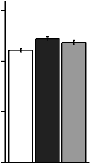
30 one day
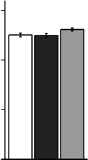
30 three days
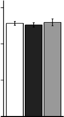
30 seven days
a
b a,b a
a,b a b a a
20 20 20
10 10 10
0 0 0
Veh Dexa Comb
Figure 2: Body weight at sacrifice, following 10 mg/(kg d) Dexa with / without
28 mg/(kg d) Testo treatments. Treatments designated by the same letter do not differ significantly from each other (n=5-6).
118
Once this artifact is taken into account, the gain of a negligible 0.0333 grams per day in the Dexa-treated group is in fact indicative of an actual massive loss of body weight.
Seven-day weight gain in Dexa-treated group (1.05 ± 1.14% of initial body weight) was significantly smaller than that of the vehicle-treated group (6.12 ±
0.879%; Dunn’s test p = 0.0447). Conversely, co-administration of Testo, hereafter and in plots abbreviated Comb, brought back the body weight gain over seven days to levels similar to those in vehicle-treated animals (8.62 ± 0.674%; Dunn’s test vs. Dexa alone, p = 0.00167).
The time course of body weight changes suggested that both drugs’ action had a rapid onset (Fig. 3; Kruskal-Wallis for first day percent change in body weight, p
= 0.0239). Specifically, mice receiving vehicle alone gained 2.28 ± 0.485% body weight in the 24 hours, due to accretion of nonresorbable vehicle. In contrast, mice receiving Dexa lost 1.86 ± 0.485% body weight (Dunn’s test p = 0.0387). Mice receiving a combination of Dexa and Testo were essentially indistinguishable from those receiving vehicle alone, having gained 2.61 ± 0.767% body weight. This demonstrated an advantage of the combination treatment over Dexa alone
(Dunn’s test p = 0.0213).
Based on the whole time course, I hypothesized that body weight changes and muscle atrophy occur in a gradual manner, with significant metabolic and molecular changes preceding the seven-day end of experiment. Accordingly, I repeated the above experiment on different cohorts of mice, which were sacrificed after only 1 or 3 days of treatment. Once more, absolute changes in body weight could not be correlated with the muscle changes (Fig. 2, left and middle). When normalized, relative changes in body weight for these groups of mice were less ample than those seen with 7 days of treatment, to the point that most parameters
119
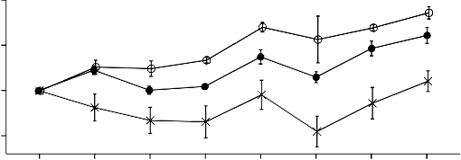
10
5
0 †✶
†
†✶ †
-5 † †
†
1 2 3 4 5 6 7 8 day
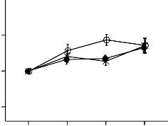
10
5
0
-5
1 2 3 4 day
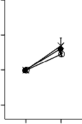
10
5
0
-5
1 2 day
Veh Dexa Comb
Figure 3: Time course of body weight Dexa with / without Testo treatments (n=5-6). Stars indicate statistically significant differences between Veh and Dexa (p <0.05). Daggers indicate statistically significant differences between Dexa and Comb (p <0.05).
(body weight, lean body mass, individual muscles mass) were not changed in a statistically significant manner (Fig. 3, bottom). These shorter treatments provided insight into the molecular development of atrophy, but, because they
120
were run as independent experiments, they will not be analyzed in conjunction. Because this work is focused on longer-term effects of Dexa, most of the reported data in the remainder of the section will be either from mice treated for 7 days with Dexa with / without Testo, or comparisons of the 1, 3, and 7 day samples.
Body composition analysis indicated that all animals included in these experiments progressively lost total water. There was no difference between water loss in the three experimental groups (Fig. 4, top; Kruskal-Wallis for seven day mass of water lost, p = 0.302). This uniform loss of water negates a scenario in which the observations could be ascribed to increased water retention due to
non-specific action of either steroid with MR. In all cases, the losses of total water track the loss of lean body mass, indicating that muscle atrophy, rather than renal dysfunction, underlies the loss of water. Fat mass analysis indicated that in the vehicle-alone treated group, the rate of apparent fat gain was essentially equal with the mass of injected vehicle accrued over the seven days. This demonstrates that experiments manipulations, in the absence of pharmacological treatments, have no effect on lipid metabolism. Dexa-treated mice accrued an additional 0.73 g fat, compared to vehicle (Dunn’s test, p = 0.0681. Similarly, mice treated with the combination accrued 0.922 g additional fat, compared to vehicle (Dunn’s test, p = 0.0172). Therefore, Testo co-administration had no effect on lipid accretion (Dunn’s test, Dexa vs. combination, p = 0.802).
Ampler changes were induced by the two drugs on lean body mass (Fig. 4, bottom; Kruskal-Wallis for seven day lost lean mass, p = 0.000811). Vehicle alone has no effect on lean body mass (0.327 ± 0.203 grams lost over seven days, that is,
121
1.65% of the total lean body mass). Dexa alone induce a massive loss of lean body mass (3.21 ± 0.166 grams lost over seven days; Dunn’s test p = 0.000242). When Testo was co-administered, the loss of lean body mass persisted, but there was a trend towards a lower loss rate (1.57 ± 0.133 grams lost over seven days; Dunn’s test vs Dexa, p = 0.108).
The loss of lean body mass induced by Dexa was apparent even in the 3-day experiment (1.45 ± 0.152 grams lost over three days; Dunn’s test vs. vehicle, p =
0.00961). Interestingly, in that experiment, Testo protective effect was very small and not statistically significant (1.28 ± 0.369 grams lost over three days; Dunn’s test vs. Dexa, p = 0.675).
Dissection of individual muscles confirmed that Dexa achieved widespread muscle atrophy (Fig. 5). Despite the small sample size (n=5-6), the atrophying effect of Dexa became statistically significant at day 3 on gastrocnemius (Dunn’s test, p = 0.0369). At day 7, statistical significance is also achieved in triceps brachii (Dunn’s test, p = 0.0209), quadriceps (Dunn’s test, p = 0.00205), and levator ani (Dunn’s test, p = 0.0245). In terms of amplitudes, the five measured muscles ranged from extremely responsive, such as quadriceps (22.7% muscle weight loss), triceps (18% muscle weight loss) and gastrocnemius (16.5% muscle weight loss), to the refractory tibialis anterior (6.2% muscle weight loss). For each muscle and time point, the average muscle weight in the Dexa group was smaller than the average weight of the controls.
Upon Testo co-administration, four out of five muscles measured were exhibited a trend towards restoration to their basal weight (Fig. 5). The amplitude of restorative response to Testo co-administration was strongest in quadriceps (15.2% restoration in muscle weight; Dunn’s test, p = 0.27), followed by levator (10.2% restoration in muscle weight; Dunn’s test, p = 0.134), and gastrocnemius
122
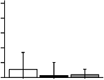
5 one day
4
3
2 a
1 a a
0
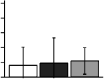
5 three days
4
3 a
a a
2
1
0
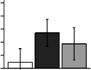
5 seven days
a
4 a
3
2 a
1
0
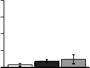
4
3
2
1 a a a
0
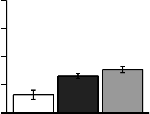
4
3
2 a,b b
1 a
0
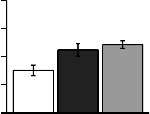
4
3 a,b b
2 a
1
0
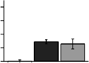
4 4
3 3
2 a 2
a
1 a 1 a
0 0
b a,b
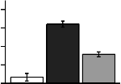
4 b
3
2 a,b
1 a
0
Veh Dexa Comb
Veh Dexa Comb
Veh Dexa Comb
Figure 4: Changes in water, lean, and fat body mass, after Dexa with / without Testo treatments (n=5-6).
100
75
50
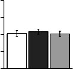
one day
a a a
100
75
50
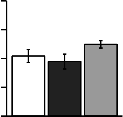
three days
a a a
100
75
50
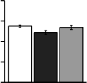
seven days
a b a,b
123
25 25 25
0 0 0

200
150
a a a
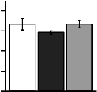
200 a a a
150
200 a
150
a,b b
100
100
100
50 50 50
0 0 0
150
100
a a a
150
100
b a,b
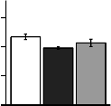
150 a
100
b a,b
50 50 50
0 0 0
150
100
a a a
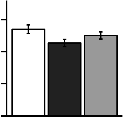
150
a
100 a
150
a
100 b b
50 50 50
0 0 0
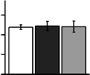
60 a a a
40
60 a a a
40
60 a a a
40
20 20 20
0
Veh Dexa Comb
0
Veh Dexa Comb
0
Veh Dexa Comb
Figure 5: Effects of Dexa with / without Testo treatments on the wet weight of le- vator ani, quadriceps, gastrocnemius, triceps brachii, and tibialis anterior muscles (normalized to body weight; n=5-6).
(9.07% restoration in muscle weight; Dunn’s test, p = 0.199) appear the most responsive.
124
At the seventh day, Testo co-administration led to an additional 3.12% loss in tibialis weight (Dunn’s test, p = 0.523). A similar trend indicating Testo’s inability to rescue tibialis mass is also present in the three-day data (2.63% loss; Dunn’s test, p =0.975). The small amplitude and the complete absence of statistical significance suggest that observations describe lack of Testo effect, rather than a true atrophic effect. Because tibialis is not manifesting GAML at macroscopic level, molecular analysis will not include it.
In conclusion, 10 mg/(kg d) Dexa injection led to rapid onset of muscle
atrophy. Similar to humans with hypercortisolism, total body weight had limited use in assessing atrophy progression. Based on the time course of lean body mass and individual muscle changes, the atrophy develops throughout the first week, indicating that this murine model replicates chronic GC exposure. Some muscles are more responsive than others, with tibialis a notable refractory exception. In contrast, 28 mg/(kg d) Testo co-administration reduced the loss of muscle throughout the seven days course. While rat experiments have described a series of pathways by which Dexa can achieve muscle atrophy, it was unclear which of them, if any, is reversed by Testo co-administration.
Testosterone reverses glucocorticoid-induced activation of the ubiquitin-proteasome system
The rapid loss of muscle mass induced by Dexa in mice exceeds the rate of protein turnover in normal adult rodent muscle (about 2.5% per day[613]). Therefore, Dexa’s action cannot rely exclusively on translational shutdown. I attempted to establish which protein degradative pathways could be mediating
the atrophic effect of dexamethasone. Experiments on rats suggest that Dexa causes protein degradation by stimulating the proteasome-ubiquitin-related transcriptional program, whereas Testo represses it.
In normal circumstances, the rate-limiting factor in proteasome-mediated
125
protein degradation is target protein conjugation with ubiquitin, catalyzed by E3 ligases. In mice treated with Dexa, the E3 ligase more commonly associated with loss of muscle mass, MuRF-1 (Fig. 6, top), was upregulated by Dexa at day 1 in gastrocnemius (1.9-fold amplification; Dunn’s test, p = 0.116) and in quadriceps (61.5-fold amplification; Dunn’s test, p = 0.00906). The effect was even more consistent at day 3, with MuRF-1 transcript in gastrocnemius being 7.58-fold amplified (Dunn’s test, p =0.0154), and in quadriceps 4.71-fold amplified (Dunn’s test, p =0.0726). The effect was insignificant statistically, and in amplitude, by the seventh day of Dexa administration.
Testo co-administration had an inhibitory effect on MuRF-1, with a later onset. No significant effect of Testo co-administration was seen in day 1. In day 3 samples, MuRF-1 was repressed by Testo in gastrocnemius (1.97-fold reduction; Dunn’s test, p =0.591) and in quadriceps (5.82-fold reduction; Dunn’s test, p
=0.0268). Testo repression of MuRF-1 strengthened in the day 7 samples, with transcripts reduced in gastrocnemius (2.11 fold reduction; Dunn’s test, p = 0.116) and in quadriceps (2.13 fold reduction; Dunn’s test, p = 0.0748).
A similar pattern, although with lower intensity, was seen in MAFbx gene regulation by the two steroids. MAFbx was reliably upregulated by Dexa at day 1 in gastrocnemius (2.45 fold amplification; Dunn’s test, p = 0.175) and quadriceps (50.1 fold amplification; Dunn’s test, p = 0.00906). At day 3, only the quadriceps MAFbx response was still present to a significant degree (4.32 fold amplification; Dunn’s test, p = 0.113). The effect became insignificant statistically across muscle
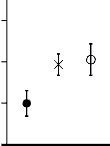
one day
4
a
1
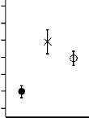
32 three days
b
8 a,b
4
2 a
1
4
1
0.5
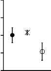
seven days
a a
a
126
0.5
0.25
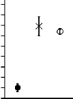
256
128
64
32
16
8
4
2
1
0.5
b
a,b
a
32
16
8
4
2
1
0.5
a
a,b b
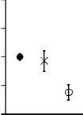
4
2
1
0.5
0.25
a a,b
b
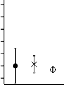
4 a,b b
16
2 a 4 a
a
1 a
1
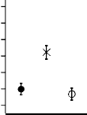
4
a a
2 a
1
0.5
0.5
0.25
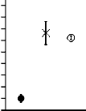
256
128
64
32
16
8
4
2
1
0.5
b
a,b
a
32
16
8
4
2
1
0.5
a
a,b b
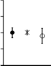
4
2
1
0.5
0.25
a a a
Veh Dexa Comb
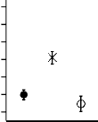
Veh Dexa Comb
Veh Dexa Comb
Figure 6: Changes in atrogenes MuRF-1 / Trim63 and MAFbx / Fbxo32 expression following Dexa with / without Testo treatments, in quadriceps and gastrocnemius muscles (n=3-5, normalized to GAPDH).
groups by the seventh day of Dexa administration.
Testo co-administration had no statistically significant effect on MAFbx at
127
days 1 and 7. By day 3, MAFbx was repressed by Testo in gastrocnemius (1.34 fold amplification; Dunn’s test, p = 0.616) and in quadriceps (6.29 fold amplification; Dunn’s test, p = 0.0154).
The other component of the ubiquitin-proteasome system is the proteasome itself. In cases where E3 ligases are upregulated, it may be the case that
availability of proteasomes is limiting the ubiquitin-proteasome system. However, in day 3 samples, where atrogene upregulation was at its peak, Dexa upregulated proteasome chymotrypsin-like enzymatic activity in quadriceps (18.7% increase; Dunn’s test, p = 0.157) and triceps (111% increase; Dunn’s test, p = 0.0884; Fig. 7). This component of atrophy was also inhibited by Testo, whose co-administration reduced proteasome activity in quadriceps (24.2% reduction; Dunn’s test, p =
0.435) and triceps (30% reduction; Dunn’s test, p = 0.609) at day 3.
Overall, the good correlation with the macroscopic loss of muscle suggests that the proteasome-ubiquitin system is an effector of GAML and a target of its alleviation by AAS.
Autophagy markers during dexamethasone and testosterone treatments
Rat microarray studies indicated that a series of genes related to autophagy are upregulated by Dexa and downregulated by Testo. However, these findings have never been tested in vivo in mice. Having established a model of GAML, I investigated whether the autophagy markers are correlated with muscle loss. A panel of three genes indicated that Dexa-induced gastrocnemius atrophy is associated with a reduction in autophagy-related transcription (Fig. 8) The
128
1.5
1.0
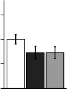
one day
a
a a
1.5
1.0
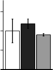
three days
a a
a
1.5
1.0
seven days
a
a a
0.5
0.5
0.5
0.0
0.0
0.0
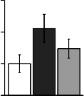
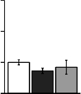
3 3 a 3
2
a
1 a a
2 a 2
a a a
1 1 a
0
Veh Dexa Comb
0
Veh Dexa Comb
0
Veh Dexa Comb
Figure 7: Changes in proteasome chymotrypsin-like enzymatic activity following
Dexa with / without Testo treatments, in quadriceps and triceps muscles (n=4-6).
repression is ampler in day 3 samples, with mRNA for beclin / Becn1 reduced
129
9.81-fold (Dunn’s test, p = 0.0213), cathepsin L / Ctsl reduced 3.89-fold (Dunn’s test, p = 0.304), and LC3 / Map1lc3b reduced 5.61-fold (Dunn’s test, p = 0.359). Across muscle groups and time points, Testo co-administration lacked detectable effect.
I tested the hypothesis that autophagy mediates protein degradation in GAML
by measuring lysosome enzymatic activity in muscle lysates (Fig. 9). Unexpectedly, cathepsin L enzymatic activity was reduced in all the assayed muscle, in a progressive manner. At day 1, cathepsin L activity was suppressed by Dexa in gastrocnemius (16.4% reduction; Dunn’s test, p = 0.02), quadriceps (14.5% reduction; Dunn’s test, p = 0.0294), and triceps (26.8% reduction; Dunn’s test, p = 0.00219). At day 3, cathepsin L activity was further suppressed by Dexa in gastrocnemius (19.7% reduction; Dunn’s test, p = 0.223), quadriceps (44.5% reduction; Dunn’s test, p = 0.00201), and triceps (44.5% reduction; Dunn’s test, p
= 0.00107). In day 7 samples, Dexa-induced repression of cathepsin L activity reached 36.3% in gastrocnemius (Dunn’s test, p = 0.00365), 44.4% in triceps (Dunn’s test, p = 0.0486), and 44.9% in quadriceps (Dunn’s test, p = 0.0091). Testo co-administration had no statistically significant effect on cathepsin L enzymatic activity, although a trend of reversal to baseline can be seen in day 1 and 3 samples.
In literature, another line of evidence for the putative upregulation of autophagy during GAML was the increase in lipidated, fast migrating LC3 protein (also known as LC3-II). In murine muscle, detecting this form has been difficult, because it is significantly less frequent than its slower migrated counterpart (Fig.
10). In gastrocnemius at day 7, there was a trend towards enrichment of LC3-II in absolute terms upon Dexa treatment (91.6% increase, when normalized to
130
8
4
2
1
0.5
0.25
0.125
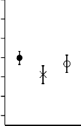
one day
a a a
8
4
2
1
0.5
0.25
0.125
three days
a,b b
8
4
2
1
0.5
0.25
0.125
seven days
a
a,b b

4
2 a a a
1
0.5
0.25
4
2
1
0.5 a a
0.25
4
2
1
0.5
0.25
a a a
0.125
0.125
0.125
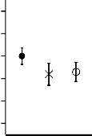
4
2 a
1 a a
0.5
0.25
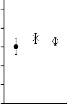
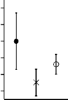
4 a
2
1
a
0.5 a
0.25
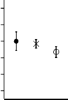
4
2 a
a
1 a
0.5
0.25
0.125
0.125
0.125
Veh Dexa Comb
Veh Dexa Comb
Veh Dexa Comb
Figure 8: Changes in autophagy-related genes following Dexa with / without Testo treatments, in quadriceps and triceps muscles (n=3-4, normalized to GAPDH).
131
1.5
1.0
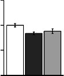
one day
a b a,b
1.5
1.0
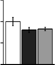
three days
a
a a
1.5
1.0
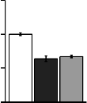
seven days
a
b b
0.5
0.5
0.5
0.0
0.0
0.0

1.5
a a
1.0 b
0.5
1.5
1.0
0.5
a
a,b
b
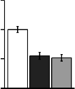
1.5
a
1.0
b b
0.5
0.0
0.0
0.0
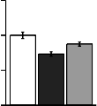
1.5
1.0
0.5
a
a,b b
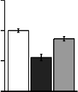
1.5
1.0
0.5
a
b a,b

1.5
a
1.0
b
0.5 b
0.0
Veh Dexa Comb
0.0
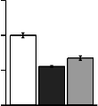
Veh Dexa Comb
0.0
Veh Dexa Comb
Figure 9: Changes in cathepsin L enzymatic activity following Dexa with / without
Testo treatments, in quadriceps and triceps muscles (n=4-6).
132
LC3
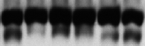
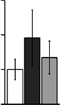
slow > 3 a 3
fast >
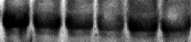
2 a 2
a
GAPDH a a a
1 1
D — — + + + +
T — — — — + + 0 0
Figure 10: Changes in hyperlipidated (fast-migrating) LC3 isoform following Dexa
with / without Testo treatment in gastrocnemius muscles (n=4).
2.0
1.5
1.0
0.5
one day
a
b b
2.0
1.5
1.0
0.5
three days
a a
a
2.0
1.5
1.0
0.5
seven days
a a a
0.0
Veh Dexa Comb
0.0
Veh Dexa Comb
0.0
Veh Dexa Comb
Figure 11: μ-calpain enzymatic activity, during 7 days of Dexa with / without Testo treatments, in gastrocnemius muscles (n=3-6).
GAPDH; Dunn’s test, p = 1). However, LC3-II changes become negligible, when
LC3-II is normalized to its precursor, LC3-I (-0.339% increase; Dunn’s test, p = 1).
The trend towards increased absolute LC3-II in gastrocnemius is reversed by a trend towards basal levels upon Testo co-administration (29.8% decrease, when normalized to GAPDH; Dunn’s test, p = 1).
Findings like the upregulation of LC3-II may have suggested to other authors that GAML relies on autophagy. However, the overall evidence suggests that GAML is correlated with rampant autophagy downregulation, while AAS
133
Ⓟ-eIF2α
GAPDH
1.5 a a
1.0
D — — + + + + T — — — — + +
0.5
0.0
Veh Dexa Comb
Figure 12: Levels of phosphorylated eIF2α (Ser 51) following Dexa with / without Testo treatment in gastrocnemius muscles (normalized to simultaneously resolved GAPDH; n=4).
co-administration has a limited effect on autophagy. Immunoblots and enzymatic assays indicated a similar disconnection between the calpain / calpastatin system and the AAS-induced muscle sparing (Fig. 11). The ubiquitin - proteasome system emerges as the main effector of GAML and the main target of its alleviation by AAS, in this model.
Protein synthesis modulation during Dexa-induced muscle atrophy
Often, literature reports describe how upregulation of muscle catabolism following Dexa treatments is compounded by repression of protein synthesis. In order to discern putative changes in protein synthesis in this model, I investigated a series of its translation regulators. A well-documented manner of translational shutdown upon various conditions, such as endoplasmic reticulum stress, is phosphorylation of the initiation factor eIF2α by a diverse set of kinases. In agreement with published studies, there was no statistically significant change in phospho-eIF2α in the gastrocnemius of mice treated with Dexa (Dunn’s test, p =
1; Fig. 12).
134
eIF3f
GAPDH
1.5
a
a
1.0
D — — + + + + T — — — — + +
0.5
0.0
Veh Dexa Comb
Figure 13: Levels of eIF3f following Dexa with / without Testo treatment in levator ani muscles (normalized to simultaneously resolved GAPDH; n=4).
Another regulator of proteins synthesis that was shown to play a role in muscle atrophy upon starvation is eIF3f. In levator muscles of mice treated with Dexa, there was no statistically significant change in the levels of eIF3f (Dunn’s test, p = 0.971; Fig. 13).
Finally, Dexa was hypothesized to achieve protein synthesis inhibition by stimulating the negative regulator 4E-BP. In Dexa-treated mice, gastrocnemius
4E-BP protein levels were upregulated (25.6% increase, when normalized to GAPDH; Dunn’s test, p = 0.428; Fig. 14, left). However, Dexa also stimulated phosphorylated, that is, inactive 4E-BP (62.5% increase, when normalized to GAPDH; Dunn’s test, p = 0.00669; Fig. 14, right). The effect of Dexa on active, that is, unphosphorylated 4E-BP could not be clearly estimated from these immunoblot data.
After 7 days of Testo co-administration, levels of total 4E-BP were essentially identical to those yielded by Dexa alone (5.6% increase; Dunn’s test, p = 0.428; Fig. 14, right). At the same time, Testo co-administration was associated with lower phosphorylated 4E-BP (9.83% increase, when normalized to GAPDH; Dunn’s test, p = 0.49; Fig. 14, left). The combination of increase in total 4E-BP
135
GAPDH
total 4EBP
GAPDH
Ⓟ-4EBP
D — — + + + +
T — — — — + +
D — — + + + +
T — — — — + +
2.0
1.5 a a a
1.0
2.0
a a
1.5
a
1.0
0.5
0.5
0.0
Veh Dexa Comb
0.0
Veh Dexa Comb
Figure 14: Levels of total (left) and phosphorylated (right) 4E-BP following Dexa with / without Testo treatment in gastrocnemius muscles (normalized to GAPDH; n=4).
and decrease in inactivated 4E-BP suggests an unexpected increase in active
4E-BP, which could have led to reduction in the rate of protein synthesis. The
136
amplitude of Testo-induced changes in 4E-BP is small, and the direction opposite to what would be required to upregulate protein synthesis and facilitate muscle recovery.
Overall, regulators of protein synthesis appeared largely unchanged by Testo at the 7-day stage of their administration, in this model system.
Foxo pathway response to dexamethasone and testosterone
Previous studies on C2C12 cultured cells showed that the atrogene response is crucially stimulated by Foxo transcription factors. The review section describes a series of five hypothetical means by which Dexa is thought to stimulate Foxo transcriptional program. Most of them converge on upregulation of Foxo transcripts. I set to test the hypothesis that muscle Foxo expression is modulated by Dexa and Testo in muscle.
In this study, Foxo transcription factors were strongly induced during the early stages of GAML (Fig. 15). In quadriceps at day 1, Foxo3a RNA was 78.1-fold upregulated (Dunn’s test, p = 0.00906). In day 3 samples, Foxo3a activation was less ample (3.17-fold; Dunn’s test, p = 0.0529). In the samples from day 7, Dexa treatment was associated with a non-significant downregulation of Foxo3a (Dunn’s test, p = 0.175).
In contrast, Testo downregulated Foxo transcription factors at later stages of GAML. In day 3 samples, Testo co-administration repressed Foxo3a 2.99-fold (Dunn’s test, p = 0.195). The trend was present in day 7 samples too, with Foxo3a repressed 2.04-fold (Dunn’s test, p = 0.304) by Testo co-administration. Similar patterns of modulation were seen in Foxo1 and Foxo4 transcripts (data not
137
1024
256
128
32
16
8
4
2
1
0.5
one day
b
a,b
a
8
4
2
1
0.5
three days
a
a a
4
2
1
0.125
0.0625
seven days
a
b
a,b

64
32 b
16
8
4
2 a
1
a,b
8
4
a
2
a,b
1 b
4
2
1
0.5
0.25
0.125
a
a,b
b
0.5
Veh Dexa Comb
0.5
0.0625
Veh Dexa Comb
Figure 15: Changes in the expression of Foxo3a (top) and Klf15 (bottom) transcrip- tion factors, during 7 days of Dexa with / without Testo treatments in quadriceps muscles (n=4, normalized to GAPDH).
shown).
138
The changes in Foxo transcription factors were mirrored by similar changes in their positive regulator Klf15. Dexa stimulated Klf15 expression at day 1 (13.9-fold upregulation; Dunn’s test, p = 0.00906), and day 3 (2-fold upregulation; Dunn’s test, p = 0.222). Testo co-administration reversed Klf15 changes, with the strongest repression, 3.28-fold, in day 3 samples (Dunn’s test, p = 0.017).
Akt pathway response to dexamethasone and testosterone
An alternative way to achieve Foxo modulation is through their neutralization by Akt. As described in the literature review section, activation of Akt is
dependent on its phosphorylation on two residues, Ser 473 and Thr 308, with the former being the most important regulator of Foxo specificity. I therefore investigated the effect of the two steroids on Ser 473 phosphorylation.
After 7 days, neither drug changed the level of total Akt in levator, nor gastrocnemius (Fig. 16, left). At the same time, Dexa repressed phosphorylation of a large degree in gastrocnemius (35.6% reduction in absolute densitometry of phospho-Ser473 Akt, when normalized to GAPDH; Dunn’s test, p = 0.304), and levator ani (46.2% reduction; Dunn’s test, p = 0.146). However, Testo
co-administration had no significant effect on phospho-Ser473 Akt in gastrocnemius (0.842% increase, p = 1). Interestingly, in this model system, Testo co-administration repressed phospho-Ser473 in levator ani, an extremely
AAS-sensitive muscle (33.1% decrease; Dunn’s test, p = 0.823).
The other relevant phosphorylation on Akt, Thr 308, is controlled by REDD1. I investigated the effects of the two steroids on REDD1 / Ddit4 transcription (fig.
17). Dexa upregulated Redd1 expression in gastrocnemius collected at days 1 (7.48-fold; Dunn’s test, p = 0.0362), 3 (27.8-fold; Dunn’s test, p = 0.0912), and 7
139
total Akt
GAPDH
Ⓟ473-Akt
GAPDH
D — — + + + +
T — — — — + +
D — — + + + +
T — — — — + +
2.0
2.0
2.0
1.5
1.0
a a a
1.5
a
1.0 a a
1.5
1.0
a
a,b b
0.5
0.5
0.5
0.0
Veh Dexa Comb
0.0
Veh Dexa Comb
0.0
Veh Dexa Comb
total Akt
GAPDH D — — — + + + + + +
T — — — — — — + + +
Ⓟ473-Akt
GAPDH D — — — + + + + + +
T — — — — — — + + +
2.0
2.0
2.0
1.5
a
a
1.0 a
0.5
1.5
1.0
0.5
a
a,b b
1.5 a
1.0
a a
0.5
0.0
Veh Dexa Comb
0.0
Veh Dexa Comb
0.0
Veh Dexa Comb
Figure 16: Levels of total and phosphorylated Akt following 7 days of Dexa with / without Testo treatment in gastrocnemius (top) and levator (bottom) muscles (nor- malized to GAPDH; n=4).
140
128
64
32
16
8
4
one day
b b
128
64
32
16
8
4
three days
a,b b
128
64
32
16
8
4
seven days
a
2 a 2 a
1 1
2 a a
1
Veh Dexa Comb
Veh Dexa Comb
Veh Dexa Comb
Figure 17: Changes in Redd1 transcripts, during 7 days of Dexa with / without Testo treatments in gastrocnemius muscles (n=4, normalized to GAPDH).
(2.64-fold; Dunn’s test, p = 0.255). Confirming the rat microarray studies, at day
7, Testo co-administration induced a sizable repression of REDD1 (1.85-fold; Dunn’s test, p = 0.143).
IGF-I changes during dexamethasone and testosterone administration
As explained in the review section, IGF-I was one of the few genes whose expression was changed in opposite ways by Dexa and Testo in rat microarrays. I tested the hypothesis that Dexa and Testo alter IGF-I expression in mice, in vivo (Fig. 18).
In gastrocnemius, Dexa downregulated IGF-I expression in samples collected at days 1 (4.35-fold; Dunn’s test, p = 0.0213), 3 (4.03-fold; Dunn’s test, p =
0.0105), and 7 (2.25-fold; Dunn’s test, p = 0.0362). Dexa-induced downregulation of IGF-I was also detected in quadriceps at days 3 (2.87-fold; Dunn’s test, p = 0.0319), and 7 (2.41-fold; Dunn’s test, p = 0.0213).
Testo reliably reversed this change. In gastrocnemius, Dexa downregulated
IGF-I expression in samples collected at days 1 (2.23-fold; Dunn’s test, p = 0.421),
3 (2.55-fold; Dunn’s test, p = 0.0825), and 7 (1.85-fold; Dunn’s test, p = 0.175). A
141
8
4
2
1
0.5
one day
a,b b a
8
4
2
1
0.5
three days
a
a,b b
8
4
2
1
0.5
seven days
a
a,b
b
0.25
0.25
0.25
0.125
0.125
0.125

8 8 8
4
2
1
0.5
0.25
a
a,b b
4
2
1
0.5
0.25
a
a,b b
4
2
1
0.5
0.25
a a,b b
0.125
Veh Dexa Comb
0.125
Veh Dexa Comb
0.125
Veh Dexa Comb
Figure 18: Changes in the expression of IGF-I, during 7 days of Dexa with / without
Testo treatments in gastrocnemius muscles (n=4, normalized to GAPDH).
similar trend was seen in quadriceps, but the amplitude was smaller, perhaps owing to the fact that Dexa-induced changed in IGF-I were smaller.
142
Throughout this section, the molecular correlates of GAML, as found in rats, were confirmed in this novel mouse model. However, few of the effects of Dexa were reversed by Testo, at the resolution of my experimental design. However, among the putative mechanisms of alleviation of GAML, there is good evidence for the repression of the proteasome - ubiquitin system and for restoration of intramuscular IGF-I. In the next section, I describe my efforts to better understand these myoprotective mechanisms, using an in vitro model.
6. IN VITRO FINDINGS
Testosterone alleviates dexamethasone-induced atrophy of cultured cells
In mouse explanted myofibers and C2C12 cultured myotubes, muscle atrophy is a cell-autonomous phenomenon, with all its essential manifestations present in vitro. I hypothesized that the muscle protection by Testo could be replicated in C2C12 cells. Indeed, fully differentiated C2C12 myotubes treated for 48 h with
50 µM Dexa lost 8.66% in diameter (Tukey’s HSD, p = 0.000316).
Co-administration of 300 nM Testo re-established basal diameters (Tukey’s HSD
vs. Dexa alone, p = 1.02e-05).
In another experiment, I tested the ability of Testo to preserve protein content in C2C12 cells. In order to determine the time course of protein content, cells were treated with (A) vehicle, (B) 1 µM Dexa, (C) 1 µM Dexa and 100 nM Testo, or (D)
1 µM Dexa and 500 nM Testo, for up to three days, in increments of 24 h (Fig. 20, top). All the treatments led to loss of total protein starting from the third day, presumably due to senescence and / or loss of viability (ANOVA treatment x time, p = 0.000463 for time variable). When all the samples were analyzed together, treatment had no significant effect (ANOVA treatment x time, p = 0.0943 for treatment variable).
However, there were differences in total protein density prior to the third day, which mimicked the in vivo findings. These trends become apparent when data is represented after normalization to the initial time point (Fig. 20, top), or when data is analyzed only across days 1-3. In the first two days, there were no relevant changes in total protein content in cells treated with vehicle. Total protein concentration was 81.8 µg/cm2 in the first day, 81.1 µg/cm2 in the second, and
143
144
(Veh) (Dexa)
a a
b
0.9
0.6
0.3
(Dexa + Testo)
0.0
Veh Dexa Comb
Figure 19: Changes in C2C12 myotube diameter following Dexa with / without Testo treatments. Micrographs are representative for cells receiving (top left) ve- hicle, or (top right) 50 µM Dexa, or (bottom left) 50 µM Dexa and 300 nM Testo. Bottom right image compares average myotube diameters for the three treatments (n=510-740).
145
81.6 µg/cm2 in the third (ANOVA p = 0.957). In contrast, Dexa-treated cells lost protein, declining from 83.3 µg/cm2 in the first day to 81.4 µg/cm2 in the second and 78.9 µg/cm2 in the third day of the experiment (5.32% loss; ANOVA p =
0.957). Co-administration of Testo more than compensated the effect of Dexa. Rather than losing protein, cells receiving a combination of 1 µM Dexa and
100 nM Testo gained 4.99 % total protein over the first two days of the experiment (ANOVA p = 0.957). Moreover, increasing the Testo dose to 500 nM further improved protein accretion, leading to a 7.16 % protein gain during the first two days of the experiment (ANOVA p = 0.957).
Overall, the changes in cell diameter and total protein content are similar to changes observed in muscle in vivo.
Protein synthesis in cultured cells treated with dexamethasone and testosterone
In preliminary experiments, I found that tracer uptake is minimal during the first two hours. In addition, tracer uptake rate became essentially equal to the rate of tracer release due to protein synthesis after the first 18 h of labeling. Therefore,
I performed a series of assays where the rate of protein synthesis was estimated through the rate of tracer uptake over an intermediate 6 h (Fig. 21, top). In each case, cells were differentiated over seven days, then treated with (A) vehicle, (B)
1 µM Dexa, or (C) 1 µM Dexa and 500 nM Testo, for either 6, 24, 48, or 72 hours. The media with steroids was refreshed every 24 hours. The tracer was added with a final medium change, six hours before lysis.
After lysis, cells were assayed for protein-bound tracer. There was no effect of treatment on the amount of tracer taken up by the cells (Fig. 21, middle). To avoid the confounding influence of the atrophy, data was also analyzed as specific
146
90
85
80
75
Veh 1 µM Dexa 1 µM Dexa
+ 100 nM T
65
1 µM Dexa
+ 500 nM T
1 2 3 4
day
110%
105%
100%
95%
90%
1 2 3 4 day
Figure 20: Changes in C2C12 myotube total protein content following Dexa with / without Testo treatments (Top) Absolute total protein density. (Bottom) The same data, after normalization to the average of the initial time point for each condition (n=5-6).

147
Start differentiation
Start pharmacological treatments
DM 


0 d ±T±D
³H-Phe
DM 


1 d ±T±D
³H-Phe

DM 


2 d ±T±D
³H-Phe
DM 


3 d ±T±D
³H-Phe
Time
(days)
1600
●
1500 ●
●
1400 ●
●
1300 ●
1200
1100
● Veh 1 µM Dexa ●
1 µM Dexa
+ 500 nM T ●●
1 2 3 4
day
11
●
10 ●
●
9 ● ●●
●
●
8
7
1 2 3 4
day
Figure 21: Estimates of protein synthesis rate in C2C12 myotubes treated with Dexa with / without Testo. (Top) Experimental timeline. (Middle) Amount of tracer incorporated into protein per well. (Bottom) Amount of tracer incorporated into protein per gram of total protein (n=6).
148 activity, that is, protein-bound intracellular tracer normalized to the mass of cell
protein (Fig. 21, bottom). The same qualitative observations could be made after normalization. There was a significant effect of time on the rate of protein synthesis (ANOVA treatment x time, p = 2.45e-08 for time variable). The time variable was significant due to a downward trend form days 2 through 4. This trend adds to the notion that C2C12 fully differentiated myotubes quickly lose their viability. When all the samples were analyzed together, treatment had no significant effect (ANOVA treatment x time, p = 0.302 for treatment variable). There is no statistically significant difference between treatments at each time point. The amplest difference in translation rate between treatments is in day 4, when, in Dexa cells, protein synthesis rate is higher than in all other conditions (specific activity 10.6% higher than vehicle, and 13.5% higher than the combination with testosterone). The trend toward increased protein synthesis with Dexa cannot explain the observed myotube atrophy induced by Dexa. Moreover, the late onset of protein synthesis upregulation indicates that this may be a compensatory response to the earlier loss of protein.
Within the limits of the C2C12 model utilized in these experiments, protein synthesis changes do not appear to mediate Dexa-induced loss of protein, nor its alleviation by Testo.
Testosterone prevents protein catabolism upregulation induced by dexamethasone
A series of complementary experiments estimated the rate of protein degradation in C2C12 myotubes. In each case, cells were differentiated over seven days, then treated with (A) vehicle, (B) 1 µM Dexa, (C) 1 µM Dexa and 100 nM Testo, or (D) 1 µM Dexa and 500 nM Testo, for either 6, 24, 48, or 72 hours (Fig.
149
22, top). The media with steroids was refreshed every 24 hours. The tracer was added three days before the addition of steroids, and was maintained in the media until 6 hours before lysis. Because the rate of incorporation of tracer slows down before the first 24 hours, and therefore it may be assumed that, with some approximation, the ratio of tracer to tracee in culture medium is equal to that in the pool of rapid-turnover intracellular protein.
Preliminary experiments revealed that scintillation data were not completely additive. In this experiment, the amounts of free tracer from cell extract and protein-bound tracer in the medium proteins are tens of times lower than the free tracer in the medium, and the protein-bound tracer in the cells. In order to avoid addition of non-additive data, protein degradation rate was estimated from the ratio of free tracer in the cell culture medium to protein-bound tracer in the cell extract (Fig. 22, middle). However, the results are essentially identical when free tracer from cell extract and protein-bound tracer in the medium proteins are
taken into account. This scintillation-based method is semi-quantitative, meaning that a doubling of the ratio of free tracer in the cell culture medium to
protein-bound tracer in the cell extract does not indicate a doubling in protein degradation rate, but merely its upregulation.
Overall, due to sample size, the treatments were not statistically significant across time points (ANOVA time X treatment, p = 0.401 for time; p = 0.259 for treatment). Nevertheless, the effects of the two steroids were ample and
dose-dependent at the 24 hour time point (ANOVA between treatments, p =
0.144; fig. 22, bottom). For 24-hour vehicle-treated cells, the ratio of free medium tracer to protein-bound intracellular was 0.0968. When cells received 1 µM Dexa, the ratio of free medium tracer to protein-bound intracellular increased to 0.661 (Tukey’s HSD vs. vehicle, p = 0.202). Co-administration of Testo had a
Start differentiation
Start pharmacological treatments
150
DM 


0 d ±T±D
³H-Phe 


DM 


1 d ±T±D
³H-Phe 


DM 


2 d ±T±D
³H-Phe 


DM 


3 d ±T±D
³H-Phe
Time
(days)
1.00
0.75
● Veh 1 µM Dexa ●
1 µM Dexa
+ 100 nM T
1 µM Dexa
+ 500 nM T
0.50
●
0.25
● ● ● ●
0.00
6 24 48 72
hours
1.00 a
0.75 a
0.50
0.25
0.00
a
Veh 1 µM Dexa 1 µM Dexa
+ 100 nM T
a
1 µM Dexa
+ 500 nM T
Figure 22: Estimates of protein degradation rate in C2C12 myotubes treated with Dexa with / without Testo. (Top) Experimental timeline. (Middle) Ratio of tracer in medium to tracer in cells, across time points. (Bottom) Ratio of free tracer in medium to protein-bound tracer in cells, at day 2 (n=5-6).
dose-dependent inhibitory effect on protein degradation. When Dexa was supplemented with 100 nM Testo, the ratio of free medium tracer to
151
protein-bound intracellular was reduced to 0.388 (Tukey’s HSD vs. Dexa alone, p
= 0.776). When Dexa was supplemented with 500 nM Testo, the ratio of free medium tracer to protein-bound intracellular was further reduced to 0.0713 (Tukey’s HSD vs. Dexa alone, p = 0.173).
A similar trend was recorded at the 48-hour time point. For 48-hour vehicle-treated cells, the ratio of free medium tracer to protein-bound intracellular was 0.062. When cells received 1 µM Dexa, the ratio of free medium tracer to protein-bound intracellular increased to 0.0699 (Tukey’s HSD vs. vehicle, p = 0.182). Co-administration of 100 nM Testo reduced the ratio of free medium tracer to protein-bound intracellular to 0.0607 (Tukey’s HSD vs. Dexa alone, p = 0.12).
Overall, Dexa myotube atrophy is correlated with an increase in tracer release, indicating an upregulation of protein degradation. Testo protection of myotubes
is correlated with an inhibition of protein degradation.
Mechanisms of androgenic myoprotection in cultured myotubes treated with dexamethasone
In previous experiments, I established that loss of C2C12 myotube protein during Dexa treatment is associated with an increase in protein degradation at 24 hours after the initiation of steroid. Using a series of chemical inhibitors, I investigated the molecular mechanisms that could mediate this catabolic upregulation (Fig. 23, top). As in the previous experiment, cells were differentiated over 7 days. In the final three days of differentiation, medium with tracer was refreshed daily. For the final 24 hours, the tracer was removed, and
cells were treated with (A) vehicle, (B) 100 nM Dexa, or (C) 100 nM Dexa and
152
300 nM Testo. In order to interfere with putative proteolytic pathways, other sets of cells were treated with (D) 100 nM Dexa and 25 µM chloroquine, an inhibitor of autophagy, or (E) 100 nM Dexa and 5 µM MG132, an inhibitor of the proteasome. Finally, in order to interfere with IGF-I signaling, another set of cells were treated with (F) 100 nM Dexa, 300 nM Testo, and 50 nM picropodophyllin, an inhibitor of IGF-1R.
The medium and the cells were fractionated as in the previous experiment. Protein degradation rate was estimated via the ratio of free tracer in the medium to protein-bound tracer in the cells. When cells were treated with vehicle alone, the ratio of free medium tracer to protein-bound intracellular was 0.826. When cells received 100 nM Dexa, the ratio of free medium tracer to protein-bound intracellular increased to 1.55 (Tukey’s HSD vs. vehicle, p = 0.000104).
The upregulation in catabolism was dependent on both proteasome and lysosome actions. When the lysosome was inhibited with chloroquine, the ratio of free medium tracer to protein-bound intracellular was brought back to basal levels (0.614; Tukey’s HSD vs. Dexa, p = 1.44e-06). However, proteasome inhibition
had a more ample result, with the ratio of free medium tracer to protein-bound intracellular depressed to 0.132 (Tukey’s HSD vs. Dexa, p = 2.4e-10).
Testo repressed the upregulation of catabolism brought by Dexa to basal levels (free medium tracer to protein-bound intracellular tracer 0.714; Tukey’s HSD vs. Dexa, p = 2.35e-05). The protective effect of Testo was not apparently altered by the inhibition of the IGF-1R pathway (free medium tracer to
protein-bound intracellular tracer 0.701; Tukey’s HSD vs. Dexa, p = 1).
Overall, in C2C12 cells, Dexa upregulates protein degradation, mainly through the activation of the proteasome. Testo reverses the activation of proteolysis in an
153
Start differentiation
Protein labeling
Start steroid treatments
DM 


±T±D
³H-Phe 

b
 Time (days)
Time (days)
Collection of measured medium
1.5
1.0 a
a a a
0.5
c
0.0
Veh 100 nM Dexa 100 nM Dexa
+ 25 µM CHQ
100 nM Dexa
+ 5 µM MG132
100 nM Dexa
+ 300 nM T
100 nM Dexa
+ 300 nM T
+ 50 nM PPP
Figure 23: Interference of protein degradation in C2C12 myotubes treated with Dexa with chemical inhibitors. (Top) Experimental timeline. (Bottom) Ratio of tracer in medium to tracer in cells (n=5-6).
154 apparently IGF-1R-independent manner, based on the experimental sensitivity
used in these assays.
7. DISCUSSION
Testosterone alleviates dexamethasone-induced muscle atrophy in mice
The present work investigated the molecular mechanisms mediating androgen attenuation of GC-induced muscle atrophy in mouse. While the myoprotective action of Testo was demonstrated in humans and rats, to date the role of Testo in GC-mediated atrophy has not been studied in the mouse. In fact, although some studies investigated transcriptional changes in mouse muscle in response to Dexa, surprisingly few have described macroscopic (organ level) atrophy.
In this dissertation, I demonstrated that a dose of 10 mg d/kg Dexa induced a
significant loss of muscle, as evidenced by decrements in lean body mass and changes in the weight of individual muscles. The effect was progressive, with the losses of lean body mass at day 3 being roughly half of the losses at day 7. The observed time dependence is evidence for a Dexa-specific effect. As expected, lean body mass was essentially unchanged in mice treated with vehicle alone. The measurement of fat body mass indicated that the mice treated with vehicle had essentially unchanged tissue fat during the experiment. The unchanged lean and fat tissue content is evidence for the fact that the experimental manipulations had no effect by themselves. The robustness and quality of the study design of the study animals was supported proven by the fact that Dexa exerted its expected stimulatory effect on accretion of body fat.
The observed change in total body mass was approximately equal to that in lean body mass. This may explain why changes in body weight (Fig. 3), rather than body weight at sacrifice (Fig. 2), were significantly altered by Dexa treatment. No other organ appeared to undergo atrophy upon Dexa treatment.
155
Dissection revealed no significant changes in the size of viscera. No detectable changes were seen in the wet weight of the heart (data not shown).
Gastrocnemius and quadriceps were the more sensitive muscles to Dexa,
156
whereas tibialis was essentially unchanged. The lack of response in tibialis was surprising, given how common mouse tibialis manipulation, such as electroporation of DNA, is described in literature. A report published during this work similarly failed to observe tibialis anterior atrophy following 14 days treatment with a slightly lower Dexa dose[426]. With 54% fast glycolytic fibers in gastrocnemius, compared to 59% in tibialis anterior[614], the two muscles appear very similar in fiber type distribution. Therefore, even if fiber typing was not evaluated in my model, it is unlikely that differences in muscle sensitivity stem from differences in fiber type. The lack of sensitivity in tibialis may have been due to the fact that the tendinous component is weighing more in relative terms, compared to large fleshy muscles.
There was a remarkable similarity between the first 3 days of the in vivo experiment and the in vitro findings at 48 hour time point. Whereas quadriceps lost 6% of their weight, C2C12 myotubes lost about 5% of their total protein upon Dexa treatment. This rate is similar to that indicated by Desler for C2C12 myotubes that had been differentiated over three days and then treated with Dexa[546].
In contrast to the in vivo studies, the in vitro study could not have been extended beyond the early days. Cells ability to thrive degraded towards their third day of Dexa treatment, that is, their ninth day of differentiation. The significant reduction in protein synthesis seen at the 72-hour time point suggests
that the cells became less metabolically active compared to the 48-hour time point, perhaps due to senescence. Therefore, the in vitro model appears inadequate
157 beyond the 48-hour time point. Moreover, the atrophic fibers’ diameter becomes
comparable with that of the nucleus after the first two days (Fig. 19). Further reductions in cell diameter would have required a shrinkage of the nucleus, which has not been observed in the first two days of myotube atrophy. It was therefore not possible to develop a longer term in vitro model of muscle atrophy.
Co-administration of Testo alleviated all macroscopic Dexa effects. Similar to the profile of Dexa action, in absolute terms, the recovery in lean body mass was approximately equal to that in total body weight. The percentage by which total body weight, lean body mass, and individual muscles recovered were similar, indicating that Testo action was limited to muscle.
The experimental protocol may not have been ideal for observing the time course for the Testo action. On the one hand, the body weight changes during the
7-day experiment (Fig. 3, top) suggest that the protective action of Testo begins with on, from the first day of experiment. On the other hand, the time course was not reflected in the individual muscle weight (Fig. 5). While 7-day samples appear effectively protected by Testo, 3-day samples show a more limited anabolic response. This discrepancy may be due to the fact that the mice analyzed in the
7-day study were slightly more developed than those used in the 3-day sample. This was indicated by the difference in levator muscles at sacrifice between vehicle-treated animals at each time point. Moreover, the detection of the Testo protective effect on muscle mass may be strained by its incomplete nature. Because Dexa effect is progressive, its amplitude in the early stages is necessarily small. When Dexa-induced atrophy is hard to detect, its incomplete reversal will be even harder to demonstrate. I could not exclude a temporal dissociation between the actions of the two steroids, as the changes surrounding the acute onset of GAML were not investigated in more detail, which was beyond the scope
158 of this work. At the 7-day time point, which is the more representative model of
chronic glucocorticoid myopathy, the alleviation of GAML has been well established.
The alleviation following Testo was incomplete in terms of lean body mass and individual muscle weights. In contrast, total body weight completely recovered. The source of this discrepancy remains unclear. Dissection revealed no other viscera with an appearance of hypertrophy following Testo co-administration. The dose of Testo used here was shown to be effective in rats. However, the Dexa dose used in the rat studies was much smaller, suggesting that mice studied here may have benefited even more from an increased dose of Testo. Moreover, mice may
be intrinsically less responsive to Testo than rats, as the former appear to be more resistant to many pharmacological treatments, such as Dexa (reviewed here) or streptozotocin[615]. The most effective dose of Testo to fully prevent GAML should be pursued in future studies. Within the limits of the present data, it may be the case that no Testo dose would have overcomed the Dexa-induced atrophy, which would then imply that atrophy inducing mechanisms of Dexa potentially include pathways outside the scope of anabolic stimuli.
Notably, there were differences in the responsiveness to Testo between
muscle groups. Similar to Dexa sensitivity, an important component appears to be the tendinous content. Levator ani is more responsive to Testo than to Dexa, perhaps being explained by the increased presence of AR compared to other muscles [616]. The apparent dependence of Testo response amplitude to the expression of AR indicates that alleviation of GAML by AAS is a specific effect, rather than an interaction at the GR level.
In vitro, myoprotective action of Testo was similarly present at late
time-points. The protection of C2C12 myotubes was dose-dependent, based on
159 the total protein assay. Paralleling the in vivo system, the myoprotective effect in
C2C12 cells was more pronounced when the data were normalized to the first time point in the experiment (fig. 20 top versus bottom).
Testosterone’s protective action was driven by the inhibition of the dexamethasone-induced proteasome upregulation
The mouse model of GAML largely replicated what was known from rat experiments, where a strong upregulation of the proteasome system is followed by alterations in protein synthesis.
In vivo, the E3 ligases also known as atrogenes were upregulated in this model system. The upregulation of MuRF-1 was robust, and reached statistical significance despite a small sample size. Upregulation of MuRF-1 was confirmed
at early stages in gastrocnemius, quadriceps, and triceps (Fig. 6; the latter not shown). In agreement with published studies, the more specific ligase, MAFbx, was upregulated by a lesser percentage than MuRF-1. In combination with the practical limitations on sample sizes, the low-level activation of MAFbx limited my ability to obtain statistical significance. Nevertheless, the consistent trend across muscle groups of increased MAFbx expression in response to Dexa indicates that the second atrogene was also part of the atrophic transcriptional program. The massive proteasome upregulation observed in day 3 samples increased the probability of the hypothetical scenario in which protein degradation is limited by proteasome availability, rather than E3 ligases. However, day 3 also marks the peak of proteasome catalytic activity ( 7). The synchronized stimulation of the proteasome and of the atrogenes indicates that the proteasome - ubiquitin system may be at the center of GAML.
All these catabolic changes were inhibited by Testo co-administration. In
160 vitro, atrogenes expression was reduced to basal levels, and, in the case of day 7
samples, even below baseline levels. The inhibitory effect of Testo on MuRF-1 was predicted by the microarray study on rat muscle. Similar to the rat study, the changes in MAFbx were also in agreement with the phenotype, but of a lesser amplitude. In addition, the proteasome activity was suppressed at its day 3 peak. This aspect of muscle atrophy, already demonstrated as a component of male
post-castration muscle atrophy[606], has never been investigated in GAML, nor in its attenuation by Testo.
Upregulation of proteasome activity, independent of atrogene status, has been reported by others[431]. It is unclear how Dexa achieves this upregulation. In this study, limited evaluation of transcripts for proteasome subunits A6, B10, or D4 were inconclusive (data not shown).
In vitro, proteasome inhibition led to nearly complete suppression of proteolysis, beyond the basal levels seen in vehicle-treated cells. This finding indicates that most of the proteolytic activity in C2C12 cells is dependent on the proteasome.
A study by Baehr and colleagues[426], which was published while my experiments were under way, showed that MAFbx knockout did not reduce the amplitude of GAML, while MuRF-1 knockout reduced GAML to about half of its amplitude in wild-type mice. My data show that, instead of rejecting the proteasome-centered model of GAML, future studies should focus on finding alternative ways by which the proteasome promotes catabolic activity. For example, the simplest scenario fitting today’s data is one where the proteasome performs the clearance of the bulk of dispensable proteins. An alternative explanation, which takes into account the subsiding evolution of the atrogene surge, is that atrogenes ubiquitinate, and target for degradation, a yet unidentified
myoprotective intracellular factor, thus unleashing a cascade of
161
proteasome-independent mechanisms. Some limited attempts to detect multiple ubiquitination states for MuRF-1’s putative substrate, myosin heavy chain, were inconclusive (data not shown). If MuRF-1 has only this limited and limiting action, disruption of MuRF-1 in Baehr’s knockout mice could have been supplanted by partially homologous genes, such as MuRF-2 or Fbxo40[617, 435]. The distinction between the two scenarios is difficult, especially in the in vivo approach. In either scenario, the role of the proteasome is indispensable for GAML. Nevertheless, proteasome inhibition by Testo co-administration emerges from this work as an important mechanism of GAML alleviation.
The experiments performed in this study clearly exclude a role for the autophagosome - lysosome system in digestion of bulk myofiber proteins. The in vivo data indicate a persistent suppression of autophagy-related genes across muscle groups and time points. Moreover, lysosome-associated cathepsin L enzymatic activity is suppressed by Dexa in a statistically significant manner at all time points. The downregulation of cathepsin activity and expression was more ample than the loss of muscle protein, indicating that an active process of cathepsin degradation is activated by Dexa in vivo.
The finding of Dexa-induced downregulation of autophagy was unexpected. Some atrophic conditions, most notably starvation, lead to autophagy regulation. The rat microarray findings found cathepsin L among the set of genes upregulated by Dexa. Even in this study, a narrow measurement, the accumulation of lipidated LC3 appeared upregulated by Dexa (Fig. 10, middle). However, the microarray results were never validated by qRT-PCR. In the present work, when the hyperlipidated LC3 form is normalized to its precursor, its levels appeared essentially unchanged in response to Dexa (Fig. 10, right). The accumulation of
162
LC3 protein, both in precursor and mature form, indicates reduced capacity in the autophagolysosome compartment, especially in the present context of downregulated LC3 protein expression. This line of evidence corroborates the downregulated enzymatic activity to collectively exclude a putative role for autophagy in bulk GAML.
Intuitively, it is more likely for bulk protein catabolism to be mediated by the smaller proteasome and atrogenes than the larger autophagosome. However, autophagy may play a regulatory, initiating role in GAML. In the in vivo studies, the amplitude and invariability of autophagy inhibition prove its modulation by Dexa. One could speculate that such changes, ampler than those in muscle mass, cannot be simple inconsequential side effects. While the present data solidly exclude a role for bulk protein digestion, further studies are needed to elucidate which proteins are spared from autophagy during GAML, and what is the regulatory effect of their sparing from autophagy.
While the in vivo data suggested that downregulation of autophagy is part of GAML, I found the opposite phenomenon in cell culture experiments. There, inhibition of lysosomes with chloroquine had a significant protective effect. The differences between the in vivo and in vitro data underscore the limitations intrinsic to cell culture models. Many factors absent from the cell culture experiment may explain the observed contrast, including myoprotective
influences of the motor neuron at neuromuscular junctions and vascularization of muscle tissue. Moreover, the advanced quiescence of the cultured myotubes contrasts with the ample in vivo ability for muscle to regenerate. Given the reductionism of the culture cell experiment, the in vivo experiment is likely more reflective of what occurs in human glucocorticoid myopathy. The fact that Testo reversed most of the in vivo effects of Dexa on autophagy suggests that this
pathway may be relevant for GAML attenuation.
163
Prior to this work, the calpain system was the least likely effector of GAML. In agreement with the literature, this study could not substantiate Dexa-induced changes in calpain enzymatic activity, calpain, or calpastatin protein levels (data not shown). Overall, the absence of Dexa-induced amplification in catabolic activity in the cathepsin and calpain pathways reduces the scope for AAS myoprotection through inhibition of these pathways. Moreover, Testo had no reliable effect on the Dexa-induced changes in the autophagosome - lysosome pathway. Therefore, Testo protection is unlikely to be mediated by inhibition of cathepsin or calpain.
Studies on protein synthesis rate have been strained by the limited technical abilities of measuring protein synthesis in mice. No study that I am aware of measured changes in the rate of protein synthesis in mice prior to this work. The studies on rats indicated that such measurements are fraught with high variability, and would therefore likely fail to detect any effect. I did not measure protein synthesis directly in vivo. The measurements of protein synthesis rate in vitro failed to identify any significant change in response to Dexa. C2C12 cells are surprisingly dependent on protein synthesis, with either translational inhibitor cycloheximide and puromycin leading to cell death and detachment within hours (data not shown). Overall, the lack of detectable changes in protein synthesis rate agrees with findings in rat L6 cells [397] and explanted muscle[322].
In order to detect subtle changes in protein synthesis, I investigated a series of its regulators. I failed to identify changes in levels of phosphorylated eIF2α and eIF3f in response to either Dexa or Testo (Figs. 12, 13). I could not detect ATF4 protein in muscle lysates (data not shown). In the 7-day samples, both total and phosphorylated 4E-BP were upregulated by Dexa. With these data, it was unclear
whether the active negative regulator of protein synthesis, unphosphorylated
164
4E-BP was increased or decreased by chronic Dexa exposure. The changes in total and phosphorylated 4E-BP induced by Testo are small, and would be unlikely to lead to increased inactivation of 4E-BP. Therefore, based on these data and the limitations of the model system, there was no evidence that, at 7-day time point, that the protective action of Testo benefited from increased protein synthesis.
While the reported experiments were ongoing, Baehr and colleagues reported that Dexa decreased protein synthesis rate at day 3 and increased it at day 14 in mouse triceps[426]. Baehr et al. findings suggest that acute Dexa represses protein synthesis, whereas chronic Dexa is associated with a compensatory restoration of translational capacities. At the 7-day time point analyzed in this study, a measurement of protein synthesis by Baehr’s method would have been indecisive, as the muscle would have been midway in the switch from a low to high translation rate.
In conclusion, Testo induced muscle protection through multiple mechanisms, among which inhibition of the proteasome system stood out by amplitude and persistence.
Molecular mechanisms linking dexamethasone and testosterone to protein metabolism
In agreement with the rat studies, the present work demonstrates that
Dexa-induced upregulation of atrogenes is coordinated with increased expression of Foxo transcription factors (Fig. 15, top). A Foxo3a surge was even more robust than the increase in MuRF-1, with a statistically significant presence in day 1 samples. Moreover, the transcription factor Klf15, which is a target of Foxo, and their synergistic partner in the upregulation of MuRF-1, underwent an equally
rapid intensification (Fig. 15, bottom).
165
In addition to repression of atrogenes, Testo reverses other actions of Dexa. This efficient, multi-directional action of Testo suggests that it may act on a higher-level mediator of GAML. Two molecular levers responded in a uniform, consistent manner to the two steroids, and therefore may be high-level mediators of AAS and GC. The first is REDD1 / Ddit4, the negative regulator of mTORC1. Dexa consistently upregulated REDD1 expression in samples from days 1, 3, and
7. The amplitude of upregulation decreased with time. A time course where Dexa amplifies REDD1 only for the first week could explain Baehr’s observations on protein synthesis changes during GAML. As REDD1 inhibition of mTORC1 subsides, the 4E-BP-mediated brake on protein synthesis is gradually reduced. Testo co-administration reversed REDD1 upregulation to a significant degree at
7-day time point, when Dexa-induced amplification was at its lowest. Further experiments are needed to analyze the relationship between REDD1 and protein synthesis, especially at later time points, which have not been investigated here.
The transcriptional upregulation of Foxo by Dexa may have been compounded by Akt inhibition. GC caused a large decrement in Ser 473 phosphorylation of Akt (Fig. 16), which in turn is expected to protect Foxo from export to cytosol and proteasome-mediated destruction. AAS had no apparent effect on Ser 473 phosphorylation. The discrepancy between Ser 473 phosphorylation and muscle recovery may be explained within the model described by Britto[494], who
showed preliminary evidence that Ser 473 is not involved in Akt inactivation during GAML. Another explanation is based on the ability of Dexa to disconnect Akt from insulin and IGF-I signals (discussed in a dedicated section). The only other trait shared between mice receiving Dexa with versus without Testo is accumulation of fat mass, suggestive of whole-body insulin resistance. At the level
166 of muscle, Dexa induces insulin resistance by interference at IRS 1 and p85 levels.
The other reliable change in GAML and its alleviation by Testo was observed in IGF-I expression. In agreement with studies on rats, Dexa reduced IGF-I expression, while Testo co-administration restored reduced IGF-I expression to basal levels (Fig. 18). In agreement with all previous studies, I could not substantiate changes in the phosphorylation of IGF-1R that would correlate with the IGF-I upregulation (data not show). It is unclear to what extent IGF-I would mediate AAS myoprotection given the aforementioned interference by Dexa at IRS 1 and p85.
In vitro, I attempted to gauge the role of IGF-1R in Testo myoprotection. A novel IGF-1R inhibitor, picropodophyllin, had no effect on Testo protection. However, the same experiment uncovered a series of other shortcomings of the cell culture experiment, including a higher reliance on autophagy compared to the in vivo model. Better causal inferences could be made by employing in vivo transgenic models of interference within the IGF-I / Akt / mTORC1 axis.
Future directions
This work demonstrates that Testo protects mouse muscle in vivo and in vitro by reversing the Dexa-induced upregulation of proteasome activity. On the other hand, the set of E3 ligases that cause GAML is incomplete. The role of candidates such as Fbxo40 remains to be investigated. Future studies will need to determine whether Testo suppresses the other E3 ligases.
At this time, the mechanisms by which Dexa upregulates Foxo transcription factors is a subject of speculation. Even less is known about the way in which Testo represses Foxo. Chromatin immunoprecipitation tests using Foxo promoters would help resolve this question.
The in vivo experiment suggest that Testo also reversed Dexa-induced repression of autophagy. The role of autophagy in GAML would be better understood by observing the effects of GC and AAS on muscle from LC3-GFP transgenic mice.
Both autophagy and protein synthesis appeared to have changed in time,
167
during the in vivo experiment. Because they were performed as three independent experiments, an ability to infer the time course of changes was limited. A direct exploration of time-dependent changes is required, in order to establish which changes in protein metabolism are late-onset, reactive adjustments.
I was not able to observe the effect of IGF-I modulation, due to an overarching suppressive effect of Dexa which disconnects the transmembrane receptors from their Akt effector. The mechanisms by which Dexa achieve this disconnection are largely the subject of speculation. Future studies that establish if and how GR interferes with the IGF-I / Akt pathway are needed.
Transgenic models, such as the triple Foxo knockout, are needed, in order to determine the relative importance and the eventual interaction between Foxo and the mTOR pathway.
Conclusions
Testo co-administration attenuates the loss of muscle mass induced by GC administration in mice. Based on the model systems used in this thesis, Testo myoprotection was exerted through an inhibition of the proteasome, mediated by Foxo and REDD1. Changes in these, as well as in IGF-I intramuscular expression, indicate that the two classes of steroids counter each other’s effect on the Akt signaling pathway (Fig. 24). AAS therapy may be beneficial for a subset of male adult patients receiving chronic GC as a treatment, especially if they present with
Glucocorticoids
REDD1
168
Anabolic steroids
IGF-I
Akt
Foxo
MuRF1
proteasome / ubiqutin - mediated catabolism
Figure 24: Mechanisms of AAS alleviation of GAML
biochemical and clinical signs of hypogonadism. The relative importance of the proteasome in glucocorticoid myopathy suggests that in addition to Testo, other more direct proteasome inhibitors such as bortezomib, may be useful as adjunctive therapy.
Bibliography
169
[1] J. Newell-Price, X. Bertagna, A. B. Grossman, and L. K. Nieman. Cushing’s syndrome. 367(9522):1605–1617, May 2006. PMID: 16698415.
[2] M. E. Molitch. Current approaches to the pharmacological management of Cushing’s disease. Molecular and Cellular Endocrinology, October 2014. PMID: 25450859.
[3] H. Cushing. The pituitary body and its disorders, clinical states produced by disorders of the hypophysis cerebri. J.B. Lippincott Co., Philadelphia & London, 1912.
[4] E. A. Schäfer and S. Vincent. The physiological effects of extracts of the pituitary body. The Journal of Physiology, 25(1):87–97, 1899.
[5] H. Cushing. The basophil adenomas of the pituitary body and their clinical manifestations (pituitary basophilism). Bulletin of the Johns Hopkins Hospital, L:137–195, 1932. PMID: 16353601.
[6] E. J. Kepler. Cushing’s disease; a primary disorder of the adrenal cortices?
Annals of the New York Academy of Sciences, 50(Art. 6):657–678, June
1949. PMID: 18148623.
[7] G. W. Thorn, R. P. Howard, and K. Emerson. Treatment of Addison’s disease with desoxy-corticosterone acetate, a synthetic adrenal cortical hormone (preliminary report). Journal of Clinical Investigation,
18(4):449–467, July 1939. PMID: 16694679.
[8] L. K. Nieman, B. M. K. Biller, J. W. Findling, J. Newell-Price, M. O. Savage, P. M. Stewart, and V. M. Montori. The diagnosis of Cushing’s syndrome: an endocrine society clinical practice guideline. The Journal of Clinical Endocrinology and Metabolism, 93(5):1526–1540, May 2008. PMID:
18334580.
170
[9] L. K. Nieman. Diagnostic tests for Cushing’s syndrome. Annals of the New
York Academy of Sciences, 970:112–118, September 2002. PMID:
12381546.
[10] L. F. Kirk, R. B. Hash, H. P. Katner, and T. Jones. Cushing’s disease: clinical manifestations and diagnostic evaluation. American Family Physician, 62(5):1119–1127, 1133–1134, September 2000. PMID: 10997535.
[11] J. Glyn. The discovery and early use of cortisone. Journal of the Royal
Society of Medicine, 91(10):513–517, October 1998. PMID: 10070369. [12] P. S. Hench. The reversibility of certain rheumatic and non-rheumatic
conditions by the use of cortisone or of the pituitary adrenocorticotropic
hormone. In Nobel Lectures, Physiology or Medicine 1942-1962. Nobel
Media AB, Amsterdam, 1964.
[13] R. G. Sprague, M. H. Power, H. L. Mason, A. Albert, D. R. Mathieson, P. S.
Hench, E. C. Kendall, C. H. Slocumb, and H. F. Polley. Observations on the physiologic effects of cortisone and ACTH in man. Archives of Internal Medicine, 85(2):199–258, February 1950. PMID: 15405892.
[14] A. R. Clark. Anti-inflammatory functions of glucocorticoid-induced genes.
Molecular and Cellular Endocrinology, 275(1-2):79–97, September 2007. PMID: 17561338.
[15] A. E. Coutinho and K. E. Chapman. The anti-inflammatory and immunosuppressive effects of glucocorticoids, recent developments and mechanistic insights. Molecular and Cellular Endocrinology, 335(1):2–13, March 2011. PMID: 20398732.
[16] M. Truss, G. Chalepakis, and M. Beato. Contacts between steroid hormone receptors and thymines in DNA: an interference method. Proceedings of
the National Academy of Sciences of the United States of America,
87(18):7180–7184, September 1990. PMID: 2169621.
171
[17] F. Re, M. Muzio, M. De Rossi, N. Polentarutti, J. G. Giri, A. Mantovani, and F. Colotta. The type II ”receptor” as a decoy target for interleukin 1 in polymorphonuclear leukocytes: characterization of induction by dexamethasone and ligand binding properties of the released decoy receptor. The Journal of Experimental Medicine, 179(2):739–743, February 1994. PMID: 8294881.
[18] F. Paliogianni, A. Raptis, S. S. Ahuja, S. M. Najjar, and D. T. Boumpas.
Negative transcriptional regulation of human interleukin 2 (IL-2) gene by glucocorticoids through interference with nuclear transcription factors
AP-1 and NF-AT. Journal of Clinical Investigation, 91(4):1481–1489, April
1993. PMID: 8473495.
[19] M. M. Chang, M. Juarez, D. M. Hyde, and R. Wu. Mechanism of dexamethasone-mediated interleukin-8 gene suppression in cultured
airway epithelial cells. American Journal of Physiology. Lung Cellular and
Molecular Physiology, 280(1):L107–115, January 2001. PMID: 11133500. [20] A. Hafezi-Moghadam, T. Simoncini, Z. Yang, F. P. Limbourg, J.-C. Plumier,
M. C. Rebsamen, C.-M. Hsieh, D.-S. Chui, K. L. Thomas, A. J. Prorock, V. E.
Laubach, M. A. Moskowitz, B. A. French, K. Ley, and J. K. Liao. Acute cardiovascular protective effects of corticosteroids are mediated by
non-transcriptional activation of endothelial nitric oxide synthase. Nature
Medicine, 8(5):473–479, May 2002. PMID: 11984591.
[21] F. S. Dhabhar and B. S. McEwen. Enhancing versus suppressive effects of stress hormones on skin immune function. Proceedings of the National Academy of Sciences of the United States of America, 96(3):1059–1064,
February 1999. PMID: 9927693.
172
[22] N. L. Wendler, R. P. Graber, R. E. Jones, and M. Tishler. Synthesis of
11-hydroxylated cortical steroids. 17(α)-hydroxycorticosterone. Journal of the American Chemical Society, 72(12):5793–5794, 1950.
[23] The Empire Rheumatism Council Sub-Committee. Multi-centre controlled trial of cortisone acetate and acetyl salicylic acid in the long-term treatment of rheumatoid arthritis: results of three years’ treatment. Annals of the Rheumatic Diseases, 16(3):277–289, September 1957. PMID: 13470729.
[24] L. H. Sarett. Some aspects of the evolution of anti-inflammatory steroids.
Annals of the New York Academy of Sciences, 82(4):802–808, 1959. [25] H. L. Herzog, C. C. Payne, M. A. Jevnik, D. Gould, E. L. Shapiro, E. P.
Oliveto, and E. B. Hershberg. 11-oxygenated steroids. XIII. synthesis and
proof of structure of ∆-1,4-pregnadiene-17α,21-diol-3,11,20-trione and
∆-1,4-pregnadiene-11β,17α,21-triol-3,20-dione. Journal of the American
Chemical Society, 77(18):4781–4784, 1955.
[26] J. J. Bunim, R. L. Black, A. J. Bollet, and M. M. Pechet. Metabolic effects of metacortandralone and metacortandracin. Annals of the New York Academy of Sciences, 61(2):358–368, 1955.
[27] Medical Research Council and Nuffield Foundation Report. A comparison of prednisolone with aspirin or other analgesics in the treatment of rheumatoid arthritis. Annals of the Rheumatic Diseases, 19(4):331–337, December 1960. PMID: 14447267.
[28] J. Fried, K. Florey, E. F. Sabo, J. E. Herz, A. R. Restivo, A. Borman, and
F. M. Singer. Synthesis and biological activity of 1- and
6-dehydro-9α-halocorticoids. Journal of the American Chemical Society,
77(15):4181–4182, 1955.
[29] J. Fried and E. F. Sabo. Synthesis of 17α-hydroxycorticosterone and its
173
9α-halo derivatives from 11-epi-17α-hydroxycorticosterone. Journal of the
American Chemical Society, 75(9):2273–2274, 1953.
[30] G. E. Arth, D. B. R. Johnston, J. Fried, W. W. Spooncer, D. R. Hoff, and L. H. Sarett. 16-methylated steroids. I. 16α-methylated analogs of cortisone, a new group of anti-inflammatory steroids. Journal of the American Chemical Society, 80(12):3160–3161, 1958.
[31] G. E. Arth, J. Fried, D. B. R. Johnston, D. R. Hoff, L. H. Sarett, R. H. Silber, H. C. Stoerk, and C. A. Winter. 16-methylated steroids. II. 16α-methyl analogs of cortisone, a new group of anti-inflammatory steroids. 9α-halo derivatives. Journal of the American Chemical Society, 80(12):3161–3163,
1958.
[32] R. H. Silber. The biology of anti-inflammatory steroids. Annals of the New
York Academy of Sciences, 82(4):821–828, October 1959.
[33] T. F. Frawley, H. Kistler, and T. Shelley. Effects of anti-inflammatory steroids on carbohydrate metabolism, with emphasis on hypo-glycemic and diabetic states. Annals of the New York Academy of Sciences,
82(4):868–885, October 1959.
[34] A. W. Meikle and F. H. Tyler. Potency and duration of action of glucocorticoids. Effects of hydrocortisone, prednisone and dexamethasone on human pituitary-adrenal function. The American Journal of Medicine,
63(2):200–207, August 1977. PMID: 888843.
[35] C. W. Lin, M. Nakane, M. Stashko, D. Falls, J. Kuk, L. Miller, R. Huang, C. Tyree, J. N. Miner, J. Rosen, P. R. Kym, M. J. Coghlan, G. Carter, and B. C. Lane. trans-Activation and repression properties of the novel nonsteroid glucocorticoid receptor ligand
2,5-dihydro-9-hydroxy-10-methoxy-2,2,4-trimethyl-
5-(1-methylcyclohexen-3-y1)-1H-[1]benzopyrano[3,4-f]quinoline
(A276575) and its four stereoisomers. Molecular Pharmacology,
62(2):297–303, August 2002. PMID: 12130681.
174
[36] M. G. Belvisi, S. L. Wicks, C. H. Battram, S. E. Bottoms, J. E. Redford, P. Woodman, T. J. Brown, S. E. Webber, and M. L. Foster. Therapeutic benefit of a dissociated glucocorticoid and the relevance of in vitro separation of transrepression from transactivation activity. Journal of Immunology (Baltimore, Md.: 1950), 166(3):1975–1982, February 2001. PMID: 11160246.
[37] M. Baiula, A. Bedini, J. Baldi, M. E. Cavet, P. Govoni, and S. Spampinato.
Mapracorat, a selective glucocorticoid receptor agonist, causes apoptosis of eosinophils infiltrating the conjunctiva in late-phase experimental ocular allergy. Drug Design, Development and Therapy, 8:745–757, June 2014. PMID: 24959069.
[38] G. Johannsson, A. Falorni, S. Skrtic, H. Lennernäs, M. Quinkler, J. P.
Monson, and P. M. Stewart. Adrenal insufficiency: review of clinical outcomes with current glucocorticoid replacement therapy. Clinical Endocrinology, 82(1):2–11, January 2015. PMID: 25187037.
[39] M. Crump, J. Kuruvilla, S. Couban, D. A. MacDonald, V. Kukreti, C. T.
Kouroukis, M. Rubinger, R. Buckstein, K. R. Imrie, M. Federico,
N. Di Renzo, K. Howson-Jan, T. Baetz, L. Kaizer, M. Voralia, H. J. Olney, A. R. Turner, J. Sussman, A. E. Hay, M. S. Djurfeldt, R. M. Meyer, B. E. Chen, and L. E. Shepherd. Randomized comparison of gemcitabine, dexamethasone, and cisplatin versus dexamethasone, cytarabine, and cisplatin chemotherapy before autologous stem-cell transplantation for
175 relapsed and refractory aggressive lymphomas: NCIC-CTG LY.12. Journal
of Clinical Oncology: Official Journal of the American Society of Clinical
Oncology, 32(31):3490–3496, November 2014. PMID: 25267740.
[40] C.-H. Pui and W. E. Evans. Treatment of acute lymphoblastic leukemia.
The New England Journal of Medicine, 354(2):166–178, January 2006. PMID: 16407512.
[41] A. K. Stewart, S. V. Rajkumar, M. A. Dimopoulos, T. Masszi, I. Špička, A. Oriol, R. Hájek, L. Rosiñol, D. S. Siegel, G. G. Mihaylov,
V. Goranova-Marinova, P. Rajnics, A. Suvorov, R. Niesvizky, A. J. Jakubowiak, J. F. San-Miguel, H. Ludwig, M. Wang, V. Maisnar,
J. Minarik, W. I. Bensinger, M.-V. Mateos, D. Ben-Yehuda, V. Kukreti, N. Zojwalla, M. E. Tonda, X. Yang, B. Xing, P. Moreau, A. Palumbo, and ASPIRE Investigators. Carfilzomib, lenalidomide, and dexamethasone for relapsed multiple myeloma. The New England Journal of Medicine,
372(2):142–152, January 2015. PMID: 25482145.
[42] I. Marie. Therapy of polymyositis and dermatomyositis. Presse Médicale
(Paris, France: 1983), 40(4 Pt 2):e257–270, April 2011. PMID: 21334847. [43] O. J. Dempsey, E. W. Paterson, K. M. Kerr, and A. R. Denison. Sarcoidosis.
BMJ (Clinical research ed.), 339:b3206, 2009. PMID: 19717499.
[44] B. Brazzini and N. Pimpinelli. New and established topical corticosteroids in dermatology: clinical pharmacology and therapeutic use. American Journal of Clinical Dermatology, 3(1):47–58, 2002. PMID: 11817968.
[45] J. B. Christoforidis, S. Chang, A. Jiang, J. Wang, and C. M. Cebulla.
Systemic treatment of vitreous inflammation. Mediators of Inflammation,
2012, 2012. PMID: 23028205.
[46] D. Gordon and J. McLean. Effects of pituitary adrenocorticotropic
hormone (ACTH) therapy in ophthalmologic conditions. Journal of the
American Medical Association, 142(16):1271–1276, April 1950.
176
[47] G. E. Keeney, M. P. Gray, A. K. Morrison, M. N. Levas, E. A. Kessler, G. D.
Hill, M. H. Gorelick, and J. L. Jackson. Dexamethasone for acute asthma exacerbations in children: a meta-analysis. 133(3):493–499, March 2014. PMID: 24515516.
[48] F. Qureshi, A. Zaritsky, and M. P. Poirier. Comparative efficacy of oral dexamethasone versus oral prednisone in acute pediatric asthma. The Journal of Pediatrics, 139(1):20–26, July 2001. PMID: 11445789.
[49] B. Crotty and D. P. Jewell. Drug therapy of ulcerative colitis. British Journal of Clinical Pharmacology, 34(3):189–198, September 1992. PMID: 1389944.
[50] W. Rosenberg, A. Ireland, and D. P. Jewell. High-dose methylprednisolone in the treatment of active ulcerative colitis. Journal of Clinical Gastroenterology, 12(1):40–41, February 1990. PMID: 2303687.
[51] D. Haack, K. Schärer, A. Asam-Tauscher, and P. Vecsei. Glucocorticoid receptors in idiopathic nephrotic syndrome. Pediatric Nephrology (Berlin, Germany), 13(8):653–656, October 1999. PMID: 10502121.
[52] Merck & Co., Inc. Dexamethasone tablets [package insert], 2004.
[53] Pharmacia and Upjohn and Company. Prednisone tablets [package insert],
2007.
[54] West-ward Pharmaceutical Corp. Hydrocortisone tablets [package insert],
2008.
[55] C. Kotsarini, P. D. Griffiths, I. D. Wilkinson, and N. Hoggard. A systematic review of the literature on the effects of dexamethasone on the brain from in vivo human-based studies: implications for physiological brain imaging
of patients with intracranial tumors. 67(6):1799–1815; discussion 1815, December 2010. PMID: 21107211.
177
[56] B. D. Levine, K. Yoshimura, T. Kobayashi, M. Fukushima, T. Shibamoto, and G. Ueda. Dexamethasone in the treatment of acute mountain sickness. The New England Journal of Medicine, 321(25):1707–1713, December
1989. PMID: 2687688.
[57] P. Alderson and I. Roberts. Corticosteroids for acute traumatic brain injury. The Cochrane Database of Systematic Reviews, (1):CD000196,
2005. PMID: 15674869.
[58] A. L. Skversky, J. Kumar, M. K. Abramowitz, F. J. Kaskel, and M. L.
Melamed. Association of glucocorticoid use and low 25-hydroxyvitamin D levels: results from the National Health and Nutrition Examination Survey (NHANES): 2001-2006. The Journal of Clinical Endocrinology and Metabolism, 96(12):3838–3845, December 2011. PMID: 21956424.
[59] T. P. van Staa, H. G. Leufkens, L. Abenhaim, B. Begaud, B. Zhang, and C. Cooper. Use of oral corticosteroids in the United Kingdom. QJM: Monthly Journal of the Association of Physicians, 93(2):105–111, February
2000. PMID: 10700481.
[60] World Health Organization. WHO Essential Medicines List, 2013. [61] J. Lindholm, S. Juul, J. O. Jørgensen, J. Astrup, P. Bjerre,
U. Feldt-Rasmussen, C. Hagen, J. Jørgensen, M. Kosteljanetz,
L. Kristensen, P. Laurberg, K. Schmidt, and J. Weeke. Incidence and late prognosis of Cushing’s syndrome: a population-based study. The Journal of Clinical Endocrinology and Metabolism, 86(1):117–123, January 2001. PMID: 11231987.
[62] T. Psaras, M. Milian, V. Hattermann, T. Freiman, B. Gallwitz, and
178
J. Honegger. Demographic factors and the presence of comorbidities do not promote early detection of Cushing’s disease and acromegaly. Experimental and Clinical Endocrinology & Diabetes: Official Journal, German Society of Endocrinology [and] German Diabetes Association,
119(1):21–25, January 2011. PMID: 20827660.
[63] C. M. Plotz, A. I. Knowlton, and C. Ragan. The natural history of Cushing’s syndrome. The American Journal of Medicine, 13(5):597–614, November
1952. PMID: 12996538.
[64] E. Valassi, I. Crespo, A. Santos, and S. M. Webb. Clinical consequences of
Cushing’s syndrome. 15(3):319–329, September 2012. PMID: 22527617. [65] E. Valassi, A. Santos, M. Yaneva, M. Tóth, C. J. Strasburger, P. Chanson,
J. A. H. Wass, O. Chabre, M. Pfeifer, R. A. Feelders, S. Tsagarakis, P. J.
Trainer, H. Franz, K. Zopf, S. Zacharieva, S. W. J. Lamberts, A. Tabarin, S. M. Webb, and ERCUSYN Study Group. The European Registry on Cushing’s syndrome: 2-year experience. Baseline demographic and clinical characteristics. European Journal of Endocrinology / European Federation of Endocrine Societies, 165(3):383–392, September 2011. PMID: 21715416.
[66] M. Muller, T. L. Mazzuco, M. Martinie, I. Bachelot, and O. Chabre.
Diagnosis of Cushing’s syndrome: A retrospective evaluation of clinical practice. European Journal of Internal Medicine, 17(5):334–338, August
2006. PMID: 16864008.
[67] J. R. Lindsay, T. Nansel, S. Baid, J. Gumowski, and L. K. Nieman.
Long-term impaired quality of life in Cushing’s syndrome despite initial improvement after surgical remission. The Journal of Clinical Endocrinology and Metabolism, 91(2):447–453, February 2006. PMID:
16278266.
179
[68] S. M. Ravis and W. H. Eaglstein. Topical hydrocortisone from prescription to over-the-counter sale: a past controversy: a cautionary tale. Archives of Dermatology, 143(3):413–415, March 2007. PMID: 17372109.
[69] S. B. Adebajo. An epidemiological survey of the use of cosmetic skin lightening cosmetics among traders in Lagos, Nigeria. West African Journal of Medicine, 21(1):51–55, March 2002. PMID: 12081345.
[70] A. France-Presse. Ivory Coast bans potentially deadly skin-whitening creams. The Guardian, May 2015.
[71] Y. M. Olumide, A. O. Akinkugbe, D. Altraide, T. Mohammed, N. Ahamefule, S. Ayanlowo, C. Onyekonwu, and N. Essen. Complications of chronic use of skin lightening cosmetics. International Journal of Dermatology,
47(4):344–353, April 2008. PMID: 18377596.
[72] J. N. Rozen, E. Alseddeeqi, and J. Rivera. Cosmetic agents causing endocrinopathy in an African immigrant. Canadian Family Physician,
58(2):169–171, February 2012. PMID: 22337740.
[73] M. M. Foisy, E. M. K. Yakiwchuk, I. Chiu, and A. E. Singh. Adrenal suppression and Cushing’s syndrome secondary to an interaction between ritonavir and fluticasone: a review of the literature. HIV medicine,
9(6):389–396, July 2008. PMID: 18459946.
[74] M. Mann, E. Koller, A. Murgo, S. Malozowski, J. Bacsanyi, and M. Leinung.
Glucocorticoidlike activity of megestrol. A summary of Food and Drug Administration experience and a review of the literature. Archives of Internal Medicine, 157(15):1651–1656, August 1997. PMID: 9250225.
[75] J. K. Prague, S. May, and B. C. Whitelaw. Cushing’s syndrome. BMJ (Clinical research ed.), 346:f945, 2013. PMID: 23535464.
180 [76] L. Fardet, A. Flahault, A. Kettaneh, K. P. Tiev, T. Généreau, C. Tolédano,
C. Lebbé, and J. Cabane. Corticosteroid-induced clinical adverse events: frequency, risk factors and patient’s opinion. The British Journal of Dermatology, 157(1):142–148, July 2007. PMID: 17501951.
[77] F. L. Mastaglia. Adverse effects of drugs on muscle. 24(4):304–321, October 1982. PMID: 6128217.
[78] J. A. Douglass, D. V. Tuxen, M. Horne, C. D. Scheinkestel, M. Weinmann, D. Czarny, and G. Bowes. Myopathy in severe asthma. The American Review of Respiratory Disease, 146(2):517–519, August 1992. PMID:
1362636.
[79] T. T. Batchelor, L. P. Taylor, H. T. Thaler, J. B. Posner, and L. M.
DeAngelis. Steroid myopathy in cancer patients. 48(5):1234–1238, May
1997. PMID: 9153449.
[80] S. L. Bowyer, M. P. LaMothe, and J. R. Hollister. Steroid myopathy: incidence and detection in a population with asthma. The Journal of Allergy and Clinical Immunology, 76(2 Pt 1):234–242, August 1985. PMID: 4019954.
[81] R. Müller and E. Kugelberg. Myopathy in Cushing’s syndrome. Journal of
Neurology, Neurosurgery, and Psychiatry, 22(4):314–319, November
1959. PMID: 14425173.
[82] I. Rodriguez-Carreno, L. Gila-Useros, and A. Malanda-Trigueros. Motor unit action potential duration: measurement and significance. In I. M. Abud Ajeena, editor, Advances in Clinical Neurophysiology. InTech, October 2012.
[83] E. J. Dropcho and S. J. Soong. Steroid-induced weakness in patients with primary brain tumors. 41(8):1235–1239, August 1991. PMID: 1866012.
181 [84] A. N. D’Agostino and M. Chiga. Cortisone myopathy in rabbits. A light and
electron microscopic study. 16(3):257–263, March 1966. PMID: 5948610. [85] C. J. Vecht, A. Hovestadt, H. B. Verbiest, J. J. van Vliet, and W. L. van
Putten. Dose-effect relationship of dexamethasone on Karnofsky
performance in metastatic brain tumors: a randomized study of doses of 4,
8, and 16 mg per day. 44(4):675–680, April 1994. PMID: 8164824. [86] C. D. Shee. Risk factors for hydrocortisone myopathy in acute severe
asthma. Respiratory Medicine, 84(3):229–233, May 1990. PMID:
2218007.
[87] E. N. Coomes. Corticosteroid myopathy. Annals of the Rheumatic
Diseases, 24(5):465–472, September 1965. PMID: 5834228.
[88] P. M. Foye, L. Rispoli, G. E. Hwang, and S. S. Lim. Corticosteroid-induced myopathy, December 2014.
[89] F. F. Horber, J. R. Scheidegger, B. E. Grünig, and F. J. Frey. Thigh muscle mass and function in patients treated with glucocorticoids. European Journal of Clinical Investigation, 15(6):302–307, December 1985. PMID:
3938399.
[90] N. A. Pansters, R. C. Langen, E. F. Wouters, and A. M. Schols. Synergistic stimulation of myogenesis by glucocorticoid and IGF-I signaling. Journal of Applied Physiology (Bethesda, Md.: 1985), 114(9):1329–1339, May
2013. PMID: 22936724.
[91] F. F. Horber, H. Hoopeler, J. R. Scheidegger, B. E. Grünig, H. Howald, and F. J. Frey. Impact of physical training on the ultrastructure of midthigh muscle in normal subjects and in patients treated with glucocorticoids. Journal of Clinical Investigation, 79(4):1181–1190, April 1987. PMID:
3558821.
182 [92] F. F. Horber, J. R. Scheidegger, B. E. Grünig, and F. J. Frey. Evidence that
prednisone-induced myopathy is reversed by physical training. The
Journal of Clinical Endocrinology and Metabolism, 61(1):83–88, July
1985. PMID: 3998075.
[93] B. S. Miller, K. M. Ignatoski, S. Daignault, C. Lindland, P. G. Gauger, G. M.
Doherty, S. C. Wang, and University of Michigan Analytical Morphomics Group. A quantitative tool to assess degree of sarcopenia objectively in patients with hypercortisolism. 150(6):1178–1185, December 2011. PMID:
22136838.
[94] J. A. Simoneau, S. R. Colberg, F. L. Thaete, and D. E. Kelley. Skeletal muscle glycolytic and oxidative enzyme capacities are determinants of insulin sensitivity and muscle composition in obese women. FASEB journal: official publication of the Federation of American Societies for Experimental Biology, 9(2):273–278, February 1995. PMID: 7781930.
[95] R. Scelsi, C. Marchetti, and P. Poggi. Histochemical and ultrastructural aspects of m. vastus lateralis in sedentary old people (age 65–89 years). Acta Neuropathologica, 51(2):99–105, 1980. PMID: 7435151.
[96] M. Rebuffé-Scrive, M. Krotkiewski, J. Elfverson, and P. Björntorp. Muscle and adipose tissue morphology and metabolism in Cushing’s syndrome. The Journal of Clinical Endocrinology and Metabolism, 67(6):1122–1128, December 1988. PMID: 3142910.
[97] K. S. Topp, P. L. Painter, S. Walcott, J. B. Krasnoff, D. Adey, G. K. Sakkas, J. Taylor, K. McCormick, M. TeNyenhuis, M. Iofina, S. Tomlanovich, and P. Stock. Alterations in skeletal muscle structure are minimized with steroid withdrawal after renal transplantation. 76(4):667–673, August
2003. PMID: 12973106.
183 [98] A. A. Khaleeli, R. H. Edwards, K. Gohil, G. McPhail, M. J. Rennie, J. Round,
and E. J. Ross. Corticosteroid myopathy: a clinical and pathological study.
Clinical Endocrinology, 18(2):155–166, February 1983. PMID: 6851197. [99] F. Le Grand and M. A. Rudnicki. Skeletal muscle satellite cells and adult myogenesis. Current opinion in cell biology, 19(6):628–633, December
2007. PMID: 17996437.
[100] R. G. Ham, J. A. St Clair, C. Webster, and H. M. Blau. Improved media for normal human muscle satellite cells: serum-free clonal growth and enhanced growth with low serum. In Vitro Cellular & Developmental Biology: Journal of the Tissue Culture Association, 24(8):833–844, August 1988. PMID: 3045074.
[101] G. T. Griffing. Serum cortisol, March 2014.
[102] R. G. Sprague, M. H. Power, and H. L. Mason. Physiological effects of cortisone and pituitary adrenocorticotropic hormone (ACTH) in man. Journal of the American Medical Association, 144(16):1341–1347, December 1950. PMID: 14778744.
[103] P. S. Simmons, J. M. Miles, J. E. Gerich, and M. W. Haymond. Increased proteolysis. An effect of increases in plasma cortisol within the physiologic range. Journal of Clinical Investigation, 73(2):412–420, February 1984. PMID: 6365973.
[104] D. J. Brillon, B. Zheng, R. G. Campbell, and D. E. Matthews. Effect of cortisol on energy expenditure and amino acid metabolism in humans. The American Journal of Physiology, 268(3 Pt 1):E501–513, March 1995. PMID: 7900796.
[105] S. Ellero-Simatos, E. Szymańska, T. Rullmann, W. H. Dokter, R. Ramaker, R. Berger, T. M. van Iersel, A. K. Smilde, T. Hankemeier, and W. Alkema.
184
Assessing the metabolic effects of prednisolone in healthy volunteers using urine metabolic profiling. Genome Medicine, 4(11):94, November 2012. PMID: 23199229.
[106] M. Elia, A. Carter, S. Bacon, C. G. Winearls, and R. Smith. Clinical usefulness of urinary 3-methylhistidine excretion in indicating muscle protein breakdown. British Medical Journal (Clinical research ed.),
282(6261):351–354, January 1981. PMID: 6780020.
[107] E. Löfberg, A. Gutierrez, J. Wernerman, B. Anderstam, W. E. Mitch, S. R.
Price, J. Bergström, and A. Alvestrand. Effects of high doses of glucocorticoids on free amino acids, ribosomes and protein turnover in human muscle. European Journal of Clinical Investigation,
32(5):345–353, May 2002. PMID: 12027875.
[108] S. C. Bodine and L. M. Baehr. Skeletal muscle atrophy and the E3 ubiquitin ligases MuRF1 and MAFbx/atrogin-1. American Journal of Physiology. Endocrinology and Metabolism, 307(6):E469–484, September 2014. PMID: 25096180.
[109] Millenium Pharmaceuticals, Inc. Velcade (bortezomib) for injection
[prescribing information], 2014.
[110] Onyx Pharmaceuticals, Inc. Kyprolis (carfilzomib) for injection
[prescribing information], 2012.
[111] P. G. Richardson, P. Sonneveld, M. W. Schuster, D. Irwin, E. A. Stadtmauer, T. Facon, J.-L. Harousseau, D. Ben-Yehuda, S. Lonial, J.-F. San Miguel,
J. D. Cavenagh, and K. C. Anderson. Safety and efficacy of bortezomib in high-risk and elderly patients with relapsed multiple myeloma. British Journal of Haematology, 137(5):429–435, June 2007. PMID: 17451408.
[112] S. Jagannath, P. G. Richardson, B. Barlogie, J. R. Berenson, S. Singhal,
185
D. Irwin, G. Srkalovic, D. P. Schenkein, D. L. Esseltine, K. C. Anderson, and SUMMIT/CREST Investigators. Bortezomib in combination with dexamethasone for the treatment of patients with relapsed and/or refractory multiple myeloma with less than optimal response to bortezomib alone. 91(7):929–934, July 2006. PMID: 16818280.
[113] R. K. Amaravadi, J. Lippincott-Schwartz, X.-M. Yin, W. A. Weiss,
N. Takebe, W. Timmer, R. S. DiPaola, M. T. Lotze, and E. White. Principles and current strategies for targeting autophagy for cancer treatment.
Clinical cancer research : an official journal of the American Association for Cancer Research, 17(4):654–666, February 2011. PMID: 21325294.
[114] Sanofi Aventis US, LLC. Plaquenil (hydroxychloroquine sulfate) tablets, U.S.P [prescribing information], 2006.
[115] H. S. Lee, B. H. Daniels, E. Salas, A. W. Bollen, J. Debnath, and
M. Margeta. Clinical utility of LC3 and p62 immunohistochemistry in diagnosis of drug-induced autophagic vacuolar myopathies: a case-control study. PLoS ONE, 7(4), April 2012. PMID: 22558391.
[116] P. S. Ghosh, D. Swift, and A. G. Engel. Teaching NeuroImages: Hydroxychloroquine-induced vacuolar myopathy. 80(23):e248–e249, June 2013. PMID: 23733558.
[117] A. Nucci, L. S. Queiroz, and A. M. Samara. Chloroquine neuromyopathy.
Clinical Neuropathology, 15(5):256–258, October 1996. PMID: 8879864. [118] K. R. Short, J. Nygren, M. L. Bigelow, and K. S. Nair. Effect of short-term
prednisone use on blood flow, muscle protein metabolism, and function.
The Journal of Clinical Endocrinology and Metabolism,
89(12):6198–6207, December 2004. PMID: 15579778.
[119] K. R. Short, M. L. Bigelow, and K. S. Nair. Short-term prednisone use
antagonizes insulin’s anabolic effect on muscle protein and glucose metabolism in young healthy people. American Journal of Physiology.
186
Endocrinology and Metabolism, 297(6):E1260–E1268, December 2009. PMID: 19738036.
[120] R. J. Louard, R. Bhushan, R. A. Gelfand, E. J. Barrett, and R. S. Sherwin.
Glucocorticoids antagonize insulin’s antiproteolytic action on skeletal muscle in humans. The Journal of Clinical Endocrinology and Metabolism, 79(1):278–284, July 1994. PMID: 8027242.
[121] Z. Liu, L. A. Jahn, W. Long, D. A. Fryburg, L. Wei, and E. J. Barrett.
Branched chain amino acids activate messenger ribonucleic acid translation regulatory proteins in human skeletal muscle, and glucocorticoids blunt this action. The Journal of Clinical Endocrinology and Metabolism, 86(5):2136–2143, May 2001. PMID: 11344218.
[122] D. R. Garrel, P. D. Delmas, C. Welsh, M. J. Arnaud, S. E. Hamilton, and
M. M. Pugeat. Effects of moderate physical training on prednisone-induced protein wasting: a study of whole-body and bone protein metabolism. Metabolism: Clinical and Experimental, 37(3):257–262, March 1988. PMID: 3257806.
[123] Z. Liu, G. Li, S. R. Kimball, L. A. Jahn, and E. J. Barrett. Glucocorticoids modulate amino acid-induced translation initiation in human skeletal muscle. American Journal of Physiology. Endocrinology and Metabolism,
287(2):E275–281, August 2004. PMID: 15039148.
[124] T. T. Amatruda, D. R. Hollingsworth, N. D. D’esopo, G. V. Upton, and P. K.
Bondy. A study of the mechanism of the steroid withdrawal syndrome. Evidence for integrity of the hypothalamic-pituitary-adrenal system. The Journal of Clinical Endocrinology and Metabolism, 20:339–354, March
1960. PMID: 13793101.
[125] F. Mor, P. Green, and A. J. Wysenbeek. Myopathy in Addison’s disease.
Annals of the Rheumatic Diseases, 46(1):81–83, January 1987. PMID:
3813679.
187
[126] C.-É. Brown-Séquard. Note on the effects produced on man by subcutaneous injections of a liquid obtained from the testicles of animals. The Lancet, 134(3438):105–107, July 1889.
[127] C.-É. Brown-Séquard. On a new therapeutic method consisting in the use of organic liquids extracted from glands and other organs. British Medical Journal, 1(1693):1212–1214, June 1893. PMID: 20754269.
[128] E. Nieschlag and S. Nieschlag. Testosterone deficiency: a historical perspective. Asian Journal of Andrology, 16(2):161–168, 2014. PMID:
24435052.
[129] A. A. Berthold. Transplantation der Hoden. Archiv für Anatomie, Physiologie und Wissenschaftliche Medicin, pages 42–46, 1849.
[130] C. D. Kochakian and J. R. Murlin. The effect of male hormone on the protein and energy metabolism of castrate dogs. The Journal of Nutrition,
10(4):437 –459, October 1935. PMID: 0.
[131] T. F. Gallagher and F. C. Koch. The testicular hormone. Journal of
Biological Chemistry, 84(2):495–500, November 1929.
[132] L. C. McGee, M. Juhn, and L. V. Domm. The development of secondary sex characters in capons by injections of extracts of bull testes. American Journal of Physiology – Legacy Content, 87(2):406–435, December 1928.
[133] K. David, E. Dingemanse, J. Freud, and E. Laqueur. Über krystallinisches männliches Hormon aus Hoden (Testosteron), wirksamer als aus Harn
oder aus Cholesterin bereitetes Androsteron. Hoppe-Seyler’s Zeitschrift fur
physiologische Chemie, 233(5-6):281–283, 1935.
188
[134] J. M. Hoberman and C. E. Yesalis. The history of synthetic testosterone.
Scientific American, 272(2):76–81, February 1995. PMID: 7817189.
[135] A. T. Kenyon, I. Sandiford, H. A. Bryan, K. Knowlton, and F. C. Koch. The effect of testosterone propionate on nitrogen, electrolyte, water and energy metabolism in eunuchoidism. 23(2):135–153, August 1938.
[136] Auxilium Pharmaceuticals, Inc. Testim (testosterone gel) for topical use
[prescribing information], 2014.
[137] Endo Pharmaceuticals Solutions Inc. Delatestryl (testosterone enanthate)
injection [prescribing information], 2014.
[138] Unimed. Androgel, Physician’s Package Insert, 2004.
[139] A. W. Spence. Testosterone propionate in functional impotence. British
Medical Journal, 2(4160):411–413, September 1940. PMID: 20783311. [140] R. Kurzrok and C. P. O’Connell. The inhibition of lactation during the
puerperium by testosterone propionate. 23(4):476–478, October 1938.
[141] E. F. E. Black. The use of testosterone propionate in gynæcology. Canadian
Medical Association Journal, 47(2):124–128, August 1942. PMID:
20322517.
[142] E. C. Reifenstein and F. Albright. The metabolic effects of steroid hormones in osteoporosis. Journal of Clinical Investigation, 26:24–56, January 1947. PMID: 21424243.
[143] M. Molitch. The treatment of acne vulgaris with testosterone propionate.
23(6):803–804, December 1938.
[144] E. Mommers, W. M. Kersemaekers, J. Elliesen, M. Kepers, D. Apter, H. M.
Behre, J. Beynon, P. M. Bouloux, A. Costantino, H.-P. Gerbershagen,
L. Grønlund, D. Heger-Mahn, I. Huhtaniemi, E. L. Koldewijn, C. Lange, S. Lindenberg, M. C. Meriggiola, E. Meuleman, P. F. A. Mulders,
E. Nieschlag, A. Perheentupa, A. Solomon, L. Väisälä, F. C. Wu, and
M. Zitzmann. Male hormonal contraception: a double-blind,
placebo-controlled study. The Journal of Clinical Endocrinology and
Metabolism, 93(7):2572–2580, July 2008. PMID: 18413423.
189
[145] L. W. Kinsell, S. Hertz, and E. C. Reifenstein. The effect of testosterone compounds upon the nitrogen balance and creatine excretion in patients with thyrotoxicosis. Journal of Clinical Investigation, 23(6):880–890, November 1944. PMID: 16695173.
[146] F. H. Hesser, O. R. Langworthy, and S. A. Vest. Muscle strength in myotonia atrophica (dystrophia myotonica) improved by testosterone propionate. 26(2):241–243, February 1940.
[147] A. T. Kenyon, K. Knowlton, I. Sandiford, F. C. Koch, and G. Lotwin. A comparative study of the metabolic effects of testosterone propionate in normal men and women and in eunuchoidism. 26(1):26–45, January 1940.
[148] L. T. Samuels, A. F. Henschel, and A. Keys. Influence of methyl testosterone on muscular work and creatine metabolism in normal young men. The Journal of Clinical Endocrinology & Metabolism,
2(11):649–654, November 1942.
[149] J. D. Elashoff, A. D. Jacknow, S. G. Shain, and G. D. Braunstein. Effects of anabolic-androgenic steroids on muscular strength. Annals of Internal Medicine, 115(5):387–393, September 1991. PMID: 1830732.
[150] V. Cowart. Steroids in sports: after four decades, time to return these genies to bottle? 257(4):421–423, 427, January 1987. PMID: 3795420.
[151] F. Albright, W. Parson, and E. Bloomberg. Cushing’s syndrome interpreted
as hyperadrenocorticism leading to hypergluconeogenesis: results of treatment with testosterone propionate. The Journal of Clinical Endocrinology & Metabolism, 1(5):375–384, May 1941.
190
[152] E. H. Keutmann and H. A. Friedman. Metabolic studies in Cushing’s syndrome; treatment with various androgens and a 6-year follow-up. The American Journal of Medicine, 5(4):518–531, October 1948. PMID:
18886577.
[153] A. Colao, S. Petersenn, J. Newell-Price, J. W. Findling, F. Gu,
M. Maldonado, U. Schoenherr, D. Mills, L. R. Salgado, B. M. K. Biller, and Pasireotide B2305 Study Group. A 12-month phase 3 study of pasireotide in Cushing’s disease. The New England Journal of Medicine,
366(10):914–924, March 2012. PMID: 22397653.
[154] P. Komanicky, R. F. Spark, and J. C. Melby. Treatment of Cushing’s syndrome with trilostane (WIN 24,540), an inhibitor of adrenal steroid biosynthesis. The Journal of Clinical Endocrinology and Metabolism,
47(5):1042–1051, November 1978. PMID: 233687.
[155] L. K. Nieman, G. P. Chrousos, C. Kellner, I. M. Spitz, B. C. Nisula, G. B.
Cutler, G. R. Merriam, C. W. Bardin, and D. L. Loriaux. Successful treatment of Cushing’s syndrome with the glucocorticoid antagonist RU
486. The Journal of Clinical Endocrinology and Metabolism,
61(3):536–540, September 1985. PMID: 2991327.
[156] R. K. Bergner and A. Bergner. Rational asthma therapy for the outpatient.
235(3):288–293, January 1976. PMID: 811824.
[157] O. Ragnarsson, M. G. Burt, K. K. Y. Ho, and G. Johannsson. Effect of short-term GH and testosterone administration on body composition and glucose homoeostasis in men receiving chronic glucocorticoid therapy.
191
European Journal of Endocrinology / European Federation of Endocrine
Societies, 168(2):243–251, February 2013. PMID: 23169695. [158] B. A. L. Crawford, P. Y. Liu, M. T. Kean, J. F. Bleasel, and D. J.
Handelsman. Randomized placebo-controlled trial of androgen effects on
muscle and bone in men requiring long-term systemic glucocorticoid treatment. The Journal of Clinical Endocrinology and Metabolism,
88(7):3167–3176, July 2003. PMID: 12843161.
[159] N. M. van Schoor, D. L. Knol, C. a. W. Glas, R. W. J. G. Ostelo, A. Leplège, C. Cooper, O. Johnell, and P. Lips. Development of the Qualeffo-31, an osteoporosis-specific quality-of-life questionnaire. Osteoporosis international: a journal established as result of cooperation between the European Foundation for Osteoporosis and the National Osteoporosis Foundation of the USA, 17(4):543–551, 2006. PMID: 16362146.
[160] N. Baume, Y. O. Schumacher, P.-E. Sottas, C. Bagutti, M. Cauderay, P. Mangin, and M. Saugy. Effect of multiple oral doses of androgenic anabolic steroids on endurance performance and serum indices of physical stress in healthy male subjects. European Journal of Applied Physiology,
98(4):329–340, November 2006. PMID: 16896724.
[161] D. C. Cumming, M. E. Quigley, and S. S. Yen. Acute suppression of circulating testosterone levels by cortisol in men. The Journal of Clinical Endocrinology and Metabolism, 57(3):671–673, September 1983. PMID:
6348068.
[162] M. Fassnacht, N. Schlenz, S. B. Schneider, S. A. Wudy, B. Allolio, and W. Arlt. Beyond adrenal and ovarian androgen generation: Increased peripheral 5 alpha-reductase activity in women with polycystic ovary syndrome. The Journal of Clinical Endocrinology and Metabolism,
88(6):2760–2766, June 2003. PMID: 12788885.
192
[163] A. Kamischke, D. E. Kemper, M. A. Castel, M. Lüthke, C. Rolf, H. M. Behre, H. Magnussen, and E. Nieschlag. Testosterone levels in men with chronic obstructive pulmonary disease with or without glucocorticoid therapy. The European Respiratory Journal: Official Journal of the European Society for Clinical Respiratory Physiology, 11(1):41–45, January 1998. PMID:
9543268.
[164] V. Cortés-Gallegos, A. J. Gallegos, N. B. Tovar, C. Cervantes, and A. Parra.
Effect of paramethasone acetate on ovarian steroids and gonadotropins. I. Normal menstrual cycle. The Journal of Clinical Endocrinology and Metabolism, 41(2):215–220, August 1975. PMID: 1159039.
[165] J. M. Kuhn, D. Gay, J. P. Lemercier, M. Pugeat, A. Legrand, and L. M. Wolf.
Fonction testiculaire au cours de la corticothérapie prolongée. Presse
Médicale (Paris, France: 1983), 15(12):559–562, March 1986. PMID:
2939405.
[166] G. Schaison, F. Durand, and I. Mowszowicz. Study of plasma androstenedione and testosterone levels in hypercorticism syndromes. Annales D’endocrinologie, 40(1):51–52, February 1979. PMID: 443735.
[167] R. Yehuda, J. A. Golier, S. L. Halligan, M. Meaney, and L. M. Bierer. The ACTH response to dexamethasone in PTSD. The American Journal of Psychiatry, 161(8):1397–1403, August 2004. PMID: 15285965.
[168] L. Barbetta, C. Dall’Asta, T. Re, P. Colombo, P. Travaglini, and B. Ambrosi.
Androgen secretion in ectopic ACTH syndrome and in Cushing’s disease:
modifications before and after surgery. Hormone and Metabolic Research,
33(10):596–601, October 2001. PMID: 11607879.
[169] S. K. Cunningham and T. J. McKenna. Dissociation of adrenal androgen
and cortisol secretion in Cushing’s syndrome. Clinical Endocrinology,
41(6):795–800, December 1994. PMID: 7889616.
193
[170] H. F. Martens, P. K. Sheets, J. S. Tenover, C. E. Dugowson, W. J. Bremner, and G. Starkebaum. Decreased testosterone levels in men with rheumatoid arthritis: effect of low dose prednisone therapy. The Journal of Rheumatology, 21(8):1427–1431, August 1994. PMID: 7983641.
[171] J. Lado-Abeal, J. Rodriguez-Arnao, J. D. Newell-Price, L. A. Perry, A. B.
Grossman, G. M. Besser, and P. J. Trainer. Menstrual abnormalities in women with Cushing’s disease are correlated with hypercortisolemia rather than raised circulating androgen levels. The Journal of Clinical Endocrinology and Metabolism, 83(9):3083–3088, September 1998. PMID: 9745407.
[172] J. P. Luton, P. Thieblot, J. C. Valcke, J. A. Mahoudeau, and H. Bricaire.
Reversible gonadotropin deficiency in male Cushing’s disease. The Journal of Clinical Endocrinology and Metabolism, 45(3):488–495, September
1977. PMID: 198424.
[173] G. Boccuzzi, A. Angeli, D. Bisbocci, D. Fonzo, G. P. Giadano, and F. Ceresa.
Effect of synthetic luteinizing hormone releasing hormone (LH-RH) on the release of gonadotropins in Cushing’s disease. The Journal of Clinical Endocrinology and Metabolism, 40(5):892–895, May 1975. PMID:
1092712.
[174] I. R. Reid, H. K. Ibbertson, J. T. France, and J. Pybus. Plasma testosterone concentrations in asthmatic men treated with glucocorticoids. British Medical Journal (Clinical research ed.), 291(6495):574, August 1985. PMID: 2931151.
[175] H. L. Judd, G. E. Judd, W. E. Lucas, and S. S. Yen. Endocrine function of
194 the postmenopausal ovary: concentration of androgens and estrogens in
ovarian and peripheral vein blood. The Journal of Clinical Endocrinology and Metabolism, 39(6):1020–1024, December 1974. PMID: 4430702.
[176] H. G. Burger. Androgen production in women. Fertility and Sterility, 77
Suppl 4:S3–5, April 2002. PMID: 12007895.
[177] K. K. Miller, G. Sesmilo, A. Schiller, D. Schoenfeld, S. Burton, and
A. Klibanski. Androgen deficiency in women with hypopituitarism. The Journal of Clinical Endocrinology and Metabolism, 86(2):561–567, February 2001. PMID: 11158009.
[178] S. S. C. Yen and C. C. Tsai. The effect of ovariectomy on gonadotropin release. Journal of Clinical Investigation, 50(5):1149–1153, May 1971. PMID: 5552412.
[179] B. Couzinet, G. Thomas, J. C. Thalabard, S. Brailly, and G. Schaison. Effects of a pure antiandrogen on gonadotropin secretion in normal women and in polycystic ovarian disease. Fertility and Sterility, 52(1):42–50, July 1989. PMID: 2744186.
[180] M. Y. Abdel-Rahman. Androgen Excess, April 2014.
[181] A. Salonia, M. Pontillo, R. E. Nappi, G. Zanni, F. Fabbri, M. Scavini,
R. Daverio, A. Gallina, P. Rigatti, E. Bosi, P. A. Bonini, and F. Montorsi. Menstrual cycle-related changes in circulating androgens in healthy women with self-reported normal sexual function. The Journal of Sexual Medicine,
5(4):854–863, April 2008. PMID: 18371044.
[182] R. Guerrero, T. Aso, P. F. Brenner, Z. Cekan, B. M. Landgren,
K. Hagenfeldt, and E. Diczfalusy. Studies on the pattern of circulating steroids in the normal menstrual cycle. I. Simultaneous assays of progesterone, pregnenolone, dehydroepiandrosterone, testosterone,
dihydrotestosterone, androstenedione, oestradiol and oestrone. Acta
Endocrinologica, 81(1):133–149, January 1976. PMID: 128969.
195
[183] B. L. Wajchenberg, A. Bosco, M. M. Marone, S. Levin, M. Rocha, A. C.
Lerário, M. Nery, J. Goldman, and B. Liberman. Estimation of body fat and lean tissue distribution by dual energy X-ray absorptiometry and
abdominal body fat evaluation by computed tomography in Cushing’s disease. The Journal of Clinical Endocrinology and Metabolism,
80(9):2791–2794, September 1995. PMID: 7673425.
[184] H. Vierhapper, P. Nowotny, and W. Waldhäusl. Production rates of testosterone in patients with Cushing’s syndrome. Metabolism: Clinical and Experimental, 49(2):229–231, February 2000. PMID: 10690950.
[185] M. Luisi, F. Franchi, D. Drafta, and E. Stroe. Plasma steroid dynamics in Cushing’s syndrome. Annales D’endocrinologie, 39(2):107–115, 1978. PMID: 686649.
[186] A. G. Smals, P. W. Kloppenborg, and T. J. Benraad. Plasma testosterone profiles in Cushing’s syndrome. The Journal of Clinical Endocrinology and Metabolism, 45(2):240–245, August 1977. PMID: 195973.
[187] S. M. Joshi, R. J. D. Hewitt, H. L. Storr, K. Rezajooi, H. Ellamushi, A. B.
Grossman, M. O. Savage, and F. Afshar. Cushing’s disease in children and adolescents: 20 years of experience in a single neurosurgical center.
57(2):281–285; discussion 281–285, August 2005. PMID: 16094156. [188] A. S. Kanter, A. O. Diallo, J. A. Jane, J. P. Sheehan, A. R. Asthagiri, R. J.
Oskouian, D. O. Okonkwo, C. A. Sansur, M. L. Vance, A. D. Rogol, and E. R.
Laws. Single-center experience with pediatric Cushing’s disease. Journal of
Neurosurgery, 103(5 Suppl):413–420, November 2005. PMID: 16302612. [189] V. K. Arora, E. Schenkein, R. Murali, S. K. Subudhi, J. Wongvipat, M. D.
Balbas, N. Shah, L. Cai, E. Efstathiou, C. Logothetis, D. Zheng, and C. L.
196
Sawyers. Glucocorticoid receptor confers resistance to antiandrogens by bypassing androgen receptor blockade. 155(6):1309–1322, December 2013. PMID: 24315100.
[190] W. J. Inder, C. Jang, V. R. Obeyesekere, and F. P. Alford. Dexamethasone administration inhibits skeletal muscle expression of the androgen receptor and IGF-1–implications for steroid-induced myopathy. Clinical Endocrinology, 73(1):126–132, July 2010. PMID: 19681914.
[191] F. Chen, K. Knecht, E. Birzin, J. Fisher, H. Wilkinson, M. Mojena, C. T.
Moreno, A. Schmidt, S.-i. Harada, L. P. Freedman, and A. A. Reszka. Direct agonist/antagonist functions of dehydroepiandrosterone.
146(11):4568–4576, November 2005. PMID: 15994348.
[192] T. Jones, M. Groom, and K. Griffiths. Steroid biosynthesis by cultures of normal human adrenal tissue. Biochemical and Biophysical Research Communications, 38(2):355–361, January 1970. PMID: 4313933.
[193] J. L. Vaitukaitis, S. L. Dale, and J. C. Melby. Role of ACTH in the secretion of free dehydroepiandrosterone and its sulfate ester in man. The Journal of Clinical Endocrinology and Metabolism, 29(11):1443–1447, November
1969. PMID: 4310735.
[194] R. Kouyama, K. Hiraishi, T. Sugiyama, H. Izumiyama, T. Yoshimoto, T. Akashi, K. Kihara, K. Homma, H. Shibata, and Y. Hirata. Clinicopathological features, biochemical and molecular markers in 5 patients with adrenocortical carcinoma. Endocrine Journal,
58(7):527–534, 2011. PMID: 21521927.
[195] P. Monteleone, M. Luisi, V. Martiadis, C. Serritella, N. Longobardi,
E. Casarosa, A. R. Genazzani, and M. Maj. Impaired reduction of enhanced
levels of dehydroepiandrosterone by oral dexamethasone in anorexia nervosa. 31(4):537–542, May 2006. PMID: 16229957.
197
[196] T. Yamaji, M. Ishibashi, H. Sekihara, A. Itabashi, and T. Yanaihara. Serum dehydroepiandrosterone sulfate in Cushing’s syndrome. The Journal of Clinical Endocrinology and Metabolism, 59(6):1164–1168, December
1984. PMID: 6238041.
[197] S. Volpato, L. Bianchi, A. Cherubini, F. Landi, M. Maggio, E. Savino, S. Bandinelli, G. P. Ceda, J. M. Guralnik, G. Zuliani, and L. Ferrucci. Prevalence and clinical correlates of sarcopenia in community-dwelling older people: application of the EWGSOP definition and diagnostic algorithm. The Journals of Gerontology. Series A, Biological Sciences and Medical Sciences, 69(4):438–446, April 2014. PMID: 24085400.
[198] E. Ramos, W. R. Frontera, A. Llopart, and D. Feliciano. Muscle strength and hormonal levels in adolescents: gender related differences. International Journal of Sports Medicine, 19(8):526–531, November 1998. PMID: 9877143.
[199] F. Pecori Giraldi, M. Moro, F. Cavagnini, and Study Group on the Hypothalamo-Pituitary-Adrenal Axis of the Italian Society of Endocrinology. Gender-related differences in the presentation and course of Cushing’s disease. The Journal of Clinical Endocrinology and Metabolism, 88(4):1554–1558, April 2003. PMID: 12679438.
[200] H. Vierhapper, P. Nowotny, and W. Waldhäusl. Production rates of cortisol in men with hypogonadism. Metabolism: Clinical and Experimental,
53(9):1174–1176, September 2004. PMID: 15334380.
[201] S. Bhasin, T. W. Storer, N. Berman, K. E. Yarasheski, B. Clevenger, J. Phillips, W. P. Lee, T. J. Bunnell, and R. Casaburi. Testosterone
198 replacement increases fat-free mass and muscle size in hypogonadal men.
The Journal of Clinical Endocrinology and Metabolism, 82(2):407–413, February 1997. PMID: 9024227.
[202] I. G. Brodsky, P. Balagopal, and K. S. Nair. Effects of testosterone replacement on muscle mass and muscle protein synthesis in hypogonadal men–a clinical research center study. The Journal of Clinical Endocrinology and Metabolism, 81(10):3469–3475, October 1996. PMID:
8855787.
[203] M. R. Smith, J. S. Finkelstein, F. J. McGovern, A. L. Zietman, M. A. Fallon, D. A. Schoenfeld, and P. W. Kantoff. Changes in body composition during androgen deprivation therapy for prostate cancer. The Journal of Clinical Endocrinology and Metabolism, 87(2):599–603, February 2002. PMID:
11836291.
[204] R. S. Boxer, A. M. Kenny, R. Dowsett, and P. Taxel. The effect of 6 months of androgen deprivation therapy on muscle and fat mass in older men with localized prostate cancer. The Aging Male: The Official Journal of the International Society for the Study of the Aging Male, 8(3-4):207–212, December 2005. PMID: 16390748.
[205] N. Mauras, V. Hayes, S. Welch, A. Rini, K. Helgeson, M. Dokler, J. D.
Veldhuis, and R. J. Urban. Testosterone deficiency in young men: marked alterations in whole body protein kinetics, strength, and adiposity. The Journal of Clinical Endocrinology and Metabolism, 83(6):1886–1892, June 1998. PMID: 9626114.
[206] J. S. Finkelstein, H. Lee, S.-A. M. Burnett-Bowie, J. C. Pallais, E. W. Yu,
L. F. Borges, B. F. Jones, C. V. Barry, K. E. Wulczyn, B. J. Thomas, and B. Z. Leder. Gonadal steroids and body composition, strength, and sexual
function in men. The New England journal of medicine,
369(11):1011–1022, September 2013. PMID: 24024838.
199
[207] I. H. Rosenberg. Summary comments. The American Journal of Clinical
Nutrition, 50(5):1231–1233, November 1989.
[208] H. A. Feldman, C. Longcope, C. A. Derby, C. B. Johannes, A. B. Araujo,
A. D. Coviello, W. J. Bremner, and J. B. McKinlay. Age trends in the level of serum testosterone and other hormones in middle-aged men: longitudinal results from the Massachusetts male aging study. The Journal of Clinical Endocrinology and Metabolism, 87(2):589–598, February 2002. PMID:
11836290.
[209] J. E. Morley, H. M. Perry, F. E. Kaiser, D. Kraenzle, J. Jensen, K. Houston, M. Mattammal, and H. M. Perry. Effects of testosterone replacement therapy in old hypogonadal males: a preliminary study. Journal of the American Geriatrics Society, 41(2):149–152, February 1993. PMID:
8426037.
[210] R. Sih, J. E. Morley, F. E. Kaiser, H. M. Perry, P. Patrick, and C. Ross.
Testosterone replacement in older hypogonadal men: a 12-month randomized controlled trial. The Journal of Clinical Endocrinology and Metabolism, 82(6):1661–1667, June 1997. PMID: 9177359.
[211] I. Sinha-Hikim, M. Cornford, H. Gaytan, M. L. Lee, and S. Bhasin. Effects of testosterone supplementation on skeletal muscle fiber hypertrophy and satellite cells in community-dwelling older men. The Journal of Clinical Endocrinology and Metabolism, 91(8):3024–3033, August 2006. PMID:
16705073.
[212] A. A. Ferrando, M. Sheffield-Moore, C. W. Yeckel, C. Gilkison, J. Jiang, A. Achacosa, S. A. Lieberman, K. Tipton, R. R. Wolfe, and R. J. Urban.
Testosterone administration to older men improves muscle function: molecular and physiological mechanisms. American Journal of Physiology. Endocrinology and Metabolism, 282(3):E601–607, March
2002. PMID: 11832363.
200
[213] M. Sheffield-Moore, E. L. Dillon, S. L. Casperson, C. R. Gilkison, D. Paddon-Jones, W. J. Durham, J. J. Grady, and R. J. Urban. A randomized pilot study of monthly cycled testosterone replacement or continuous testosterone replacement versus placebo in older men. The Journal of Clinical Endocrinology and Metabolism, 96(11):E1831–E1837, November 2011. PMID: 21865352.
[214] S. Bhasin, E. J. He, M. Kawakubo, E. T. Schroeder, K. Yarasheski, G. J.
Opiteck, A. Reicin, F. Chen, R. Lam, J. A. Tsou, C. Castaneda-Sceppa, E. F. Binder, S. P. Azen, and F. R. Sattler. N-terminal propeptide of type III procollagen as a biomarker of anabolic response to recombinant human GH and testosterone. The Journal of Clinical Endocrinology and Metabolism, 94(11):4224–4233, November 2009. PMID: 19837911.
[215] A. A. Ferrando, M. Sheffield-Moore, D. Paddon-Jones, R. R. Wolfe, and R. J. Urban. Differential anabolic effects of testosterone and amino acid feeding in older men. The Journal of Clinical Endocrinology and Metabolism, 88(1):358–362, January 2003. PMID: 12519877.
[216] A. A. Ferrando, M. Sheffield-Moore, S. E. Wolf, D. N. Herndon, and R. R.
Wolfe. Testosterone administration in severe burns ameliorates muscle catabolism. Critical Care Medicine, 29(10):1936–1942, October 2001. PMID: 11588456.
[217] S. E. Borst, J. F. Yarrow, C. F. Conover, U. Nseyo, J. R. Meuleman, J. A.
Lipinska, R. W. Braith, D. T. Beck, J. S. Martin, M. Morrow, S. Roessner,
201
L. A. Beggs, S. C. McCoy, D. F. Cannady, and J. J. Shuster. Musculoskeletal and prostate effects of combined testosterone and finasteride administration in older hypogonadal men: a randomized, controlled trial. American Journal of Physiology. Endocrinology and Metabolism,
306(4):E433–442, February 2014. PMID: 24326421.
[218] S. Bhasin, T. G. Travison, T. W. Storer, K. Lakshman, M. Kaushik, N. A.
Mazer, A.-H. Ngyuen, M. N. Davda, H. Jara, A. Aakil, S. Anderson, P. E. Knapp, S. Hanka, N. Mohammed, P. Daou, R. Miciek, J. Ulloor, A. Zhang, B. Brooks, K. Orwoll, L. Hede-Brierley, R. Eder, A. Elmi, G. Bhasin,
L. Collins, R. Singh, and S. Basaria. Effect of testosterone supplementation with and without a dual 5α-reductase inhibitor on fat-free mass in men with suppressed testosterone production: a randomized controlled trial. JAMA: the journal of the American Medical Association, 307(9):931–939, March 2012. PMID: 22396515.
[219] X. Huang, M. R. Blackman, K. Herreman, K. M. Pabst, S. M. Harman, and B. Caballero. Effects of growth hormone and/or sex steroid administration on whole-body protein turnover in healthy aged women and men. Metabolism: Clinical and Experimental, 54(9):1162–1167, September
2005. PMID: 16125527.
[220] A. M. Traish, R. J. Feeley, and A. T. Guay. Testosterone therapy in women with gynecological and sexual disorders: a triumph of clinical endocrinology from 1938 to 2008. The Journal of Sexual Medicine,
6(2):334–351, February 2009. PMID: 19138368.
[221] M. E. Wierman, W. Arlt, R. Basson, S. R. Davis, K. K. Miller, M. H. Murad, W. Rosner, and N. Santoro. Androgen therapy in women: a reappraisal: an Endocrine Society clinical practice guideline. The Journal of Clinical
202
Endocrinology and Metabolism, 99(10):3489–3510, October 2014. PMID:
25279570.
[222] T. S. Croxson, W. E. Chapman, L. K. Miller, C. D. Levit, R. Senie, and
B. Zumoff. Changes in the hypothalamic-pituitary-gonadal axis in human immunodeficiency virus-infected homosexual men. The Journal of Clinical Endocrinology and Metabolism, 68(2):317–321, February 1989. PMID:
2493026.
[223] S. Grinspoon, C. Corcoran, H. Askari, D. Schoenfeld, L. Wolf, B. Burrows, M. Walsh, D. Hayden, K. Parlman, E. Anderson, N. Basgoz, and
A. Klibanski. Effects of androgen administration in men with the AIDS wasting syndrome. A randomized, double-blind, placebo-controlled trial. Annals of Internal Medicine, 129(1):18–26, July 1998. PMID: 9652995.
[224] M. Montano, J. N. Flanagan, L. Jiang, P. Sebastiani, M. Rarick, N. K.
LeBrasseur, C. A. Morris, R. Jasuja, and S. Bhasin. Transcriptional profiling of testosterone-regulated genes in the skeletal muscle of human immunodeficiency virus-infected men experiencing weight loss. The Journal of Clinical Endocrinology and Metabolism, 92(7):2793–2802, July 2007. PMID: 17440010.
[225] A. C. McPherron, A. M. Lawler, and S. J. Lee. Regulation of skeletal muscle mass in mice by a new TGF-beta superfamily member. 387(6628):83–90, May 1997. PMID: 9139826.
[226] N. F. Gonzalez-Cadavid, W. E. Taylor, K. Yarasheski, I. Sinha-Hikim,
K. Ma, S. Ezzat, R. Shen, R. Lalani, S. Asa, M. Mamita, G. Nair, S. Arver, and S. Bhasin. Organization of the human myostatin gene and expression
in healthy men and HIV-infected men with muscle wasting. Proceedings of the National Academy of Sciences of the United States of America,
95(25):14938–14943, December 1998. PMID: 9843994.
203
[227] S. C. Bodine, E. Latres, S. Baumhueter, V. K. Lai, L. Nunez, B. A. Clarke, W. T. Poueymirou, F. J. Panaro, E. Na, K. Dharmarajan, Z. Q. Pan, D. M. Valenzuela, T. M. DeChiara, T. N. Stitt, G. D. Yancopoulos, and D. J. Glass. Identification of ubiquitin ligases required for skeletal muscle atrophy. Science (New York, N.Y.), 294(5547):1704–1708, November 2001. PMID:
11679633.
[228] T. Gustafsson, T. Osterlund, J. N. Flanagan, F. von Waldén, T. A. Trappe, R. M. Linnehan, and P. A. Tesch. Effects of 3 days unloading on molecular regulators of muscle size in humans. Journal of Applied Physiology (Bethesda, Md.: 1985), 109(3):721–727, September 2010. PMID:
20538844.
[229] J. H. Macdonald, S. M. Marcora, M. M. Jibani, M. J. Kumwenda,
W. Ahmed, and A. B. Lemmey. Nandrolone decanoate as anabolic therapy in chronic kidney disease: a randomized phase II dose-finding study. Nephron. Clinical Practice, 106(3):c125–135, 2007. PMID: 17522475.
[230] A. Yurci, M. Yucesoy, K. Unluhizarci, E. Torun, S. Gursoy, M. Baskol, K. Guven, and O. Ozbakir. Effects of testosterone gel treatment in hypogonadal men with liver cirrhosis. Clinics and Research in Hepatology and Gastroenterology, 35(12):845–854, December 2011. PMID: 22074639.
[231] R. Casaburi, S. Bhasin, L. Cosentino, J. Porszasz, A. Somfay, M. I. Lewis, M. Fournier, and T. W. Storer. Effects of testosterone and resistance training in men with chronic obstructive pulmonary disease. American Journal of Respiratory and Critical Care Medicine, 170(8):870–878, October 2004. PMID: 15271690.
[232] M. I. Lewis, M. Fournier, T. W. Storer, S. Bhasin, J. Porszasz, S.-G. Ren,
204
X. Da, and R. Casaburi. Skeletal muscle adaptations to testosterone and resistance training in men with COPD. Journal of Applied Physiology (Bethesda, Md.: 1985), 103(4):1299–1310, October 2007. PMID: 17673568.
[233] V. Agapitou, S. Dimopoulos, C. Kapelios, E. Karatzanos, C. Manetos, A. Georgantas, A. Ntalianis, J. Terrovitis, H. Karga, and S. Nanas. Hormonal imbalance in relation to exercise intolerance and ventilatory inefficiency in chronic heart failure. The Journal of Heart and Lung Transplantation: The Official Publication of the International Society for Heart Transplantation, 32(4):431–436, April 2013. PMID: 23402947.
[234] A. Mirdamadi, M. Garakyaraghi, A. Pourmoghaddas, A. Bahmani,
H. Mahmoudi, and M. Gharipour. Beneficial effects of testosterone therapy on functional capacity, cardiovascular parameters, and quality of life in patients with congestive heart failure. BioMed Research International,
2014, 2014. PMID: 25110677.
[235] M. Stout, G. A. Tew, H. Doll, I. Zwierska, N. Woodroofe, K. S. Channer, and J. M. Saxton. Testosterone therapy during exercise rehabilitation in male patients with chronic heart failure who have low testosterone status: a double-blind randomized controlled feasibility study. American Heart Journal, 164(6):893–901, December 2012. PMID: 23194490.
[236] L. Xu, G. Freeman, B. J. Cowling, and C. M. Schooling. Testosterone therapy and cardiovascular events among men: a systematic review and meta-analysis of placebo-controlled randomized trials. BMC Medicine,
11:108, April 2013. PMID: 23597181.
[237] S. Basaria, A. D. Coviello, T. G. Travison, T. W. Storer, W. R. Farwell, A. M.
Jette, R. Eder, S. Tennstedt, J. Ulloor, A. Zhang, K. Choong, K. M. Lakshman, N. A. Mazer, R. Miciek, J. Krasnoff, A. Elmi, P. E. Knapp,
B. Brooks, E. Appleman, S. Aggarwal, G. Bhasin, L. Hede-Brierley,
A. Bhatia, L. Collins, N. LeBrasseur, L. D. Fiore, and S. Bhasin. Adverse events associated with testosterone administration. The New England Journal of Medicine, 363(2):109–122, July 2010. PMID: 20592293.
205
[238] Z. Wang, S. Zhu, J. Wang, R. N. Pierson, and S. B. Heymsfield. Whole-body skeletal muscle mass: development and validation of total-body potassium prediction models. The American Journal of Clinical Nutrition,
77(1):76–82, January 2003. PMID: 12499326.
[239] V. Santilli, A. Bernetti, M. Mangone, and M. Paoloni. Clinical definition of sarcopenia. Clinical Cases in Mineral and Bone Metabolism,
11(3):177–180, 2014. PMID: 25568649.
[240] A. L. Mescher and L. C. U. Junqueira. Junqueira’s basic histology: text and atlas. 2013.
[241] N. Light and A. E. Champion. Characterization of muscle epimysium, perimysium and endomysium collagens. The Biochemical journal,
219(3):1017–1026, May 1984. PMID: 6743238.
[242] J. C. Waterlow, P. J. Garlick, and D. J. Millward. Protein turnover in mammalian tissues and in the whole body. North-Holland Pub. Co. ; Sole distributors for the U.S.A. and Canada, Elsevier North-Holland, Amsterdam; New York; New York, 1978.
[243] J. Du, X. Wang, C. Miereles, J. L. Bailey, R. Debigare, B. Zheng, S. R. Price, and W. E. Mitch. Activation of caspase-3 is an initial step triggering accelerated muscle proteolysis in catabolic conditions. The Journal of Clinical Investigation, 113(1):115–123, January 2004. PMID: 14702115.
[244] H. C. Lukaski, J. Mendez, E. R. Buskirk, and S. H. Cohn. Relationship between endogenous 3-methylhistidine excretion and body composition.
The American Journal of Physiology, 240(3):E302–307, March 1981. PMID: 7212061.
206
[245] J. Scharner and P. S. Zammit. The muscle satellite cell at 50: the formative years. Skeletal Muscle, 1(1):28, 2011. PMID: 21849021.
[246] C. A. Collins, I. Olsen, P. S. Zammit, L. Heslop, A. Petrie, T. A. Partridge, and J. E. Morgan. Stem cell function, self-renewal, and behavioral heterogeneity of cells from the adult muscle satellite cell niche.
122(2):289–301, July 2005. PMID: 16051152.
[247] R. Bischoff. Proliferation of muscle satellite cells on intact myofibers in culture. Developmental Biology, 115(1):129–139, May 1986. PMID:
3516758.
[248] H. Yin, F. Price, and M. A. Rudnicki. Satellite cells and the muscle stem cell niche. Physiological Reviews, 93(1):23–67, January 2013. PMID:
23303905.
[249] W. E. Blanco-Bose, C. C. Yao, R. H. Kramer, and H. M. Blau. Purification of mouse primary myoblasts based on alpha 7 integrin expression. Experimental Cell Research, 265(2):212–220, May 2001. PMID: 11302686.
[250] A. K. Sharma, Y. B. Lee, and J. D. Murray. The response of transgenic mice to beta-adrenergic agonist administration is different from that of normal mice. Journal of Animal Science, 75(8):2092–2099, August 1997. PMID:
9263056.
[251] T. S. Wong and F. W. Booth. Protein metabolism in rat tibialis anterior muscle after stimulated chronic eccentric exercise. Journal of Applied Physiology (Bethesda, Md.: 1985), 69(5):1718–1724, November 1990. PMID: 1703146.
[252] D. A. Lowe and S. E. Alway. Stretch-induced myogenin, MyoD, and MRF4
expression and acute hypertrophy in quail slow-tonic muscle are not dependent upon satellite cell proliferation. Cell and Tissue Research,
296(3):531–539, June 1999. PMID: 10370140.
[253] L. B. Verdijk, T. Snijders, M. Drost, T. Delhaas, F. Kadi, and L. J. C. van
Loon. Satellite cells in human skeletal muscle; from birth to old age.
36(2):545–557, April 2014. PMID: 24122288.
207
[254] A. Neal, L. Boldrin, and J. E. Morgan. The Satellite Cell in Male and Female, Developing and Adult Mouse Muscle: Distinct Stem Cells for Growth and Regeneration. PLoS ONE, 7(5), May 2012. PMID: 22662253.
[255] C. Lepper, S. J. Conway, and C.-M. Fan. Adult satellite cells and embryonic muscle progenitors have distinct genetic requirements.
460(7255):627–631, July 2009. PMID: 19554048.
[256] F. Yusuf and B. Brand-Saberi. Myogenesis and muscle regeneration.
Histochemistry and Cell Biology, 138(2):187–199, August 2012. PMID:
22644378.
[257] G. Daston, E. Lamar, M. Olivier, and M. Goulding. Pax-3 is necessary for migration but not differentiation of limb muscle precursors in the mouse. Development (Cambridge, England), 122(3):1017–1027, March 1996. PMID: 8631247.
[258] T. Francetic and Q. Li. Skeletal myogenesis and Myf5 activation.
2(3):109–114, 2011. PMID: 21922054.
[259] T. Braun, G. Buschhausen-Denker, E. Bober, E. Tannich, and H. H. Arnold.
A novel human muscle factor related to but distinct from MyoD1 induces myogenic conversion in 10T1/2 fibroblasts. The EMBO Journal,
8(3):701–709, March 1989. PMID: 2721498.
[260] D. M. Noden and P. A. Trainor. Relations and interactions between cranial
mesoderm and neural crest populations. Journal of Anatomy,
207(5):575–601, November 2005. PMID: 16313393.
208
[261] S. Tajbakhsh, D. Rocancourt, G. Cossu, and M. Buckingham. Redefining the genetic hierarchies controlling skeletal myogenesis: Pax-3 and Myf-5 act upstream of MyoD. 89(1):127–138, April 1997. PMID: 9094721.
[262] M. A. Rudnicki, P. N. Schnegelsberg, R. H. Stead, T. Braun, H. H. Arnold, and R. Jaenisch. MyoD or Myf-5 is required for the formation of skeletal muscle. 75(7):1351–1359, December 1993. PMID: 8269513.
[263] V. Andrés and K. Walsh. Myogenin expression, cell cycle withdrawal, and phenotypic differentiation are temporally separable events that precede cell fusion upon myogenesis. The Journal of Cell Biology, 132(4):657–666, February 1996. PMID: 8647896.
[264] D. A. Bergstrom and S. J. Tapscott. Molecular distinction between specification and differentiation in the myogenic basic helix-loop-helix transcription factor family. Molecular and Cellular Biology,
21(7):2404–2412, April 2001. PMID: 11259589.
[265] P. Hasty, A. Bradley, J. H. Morris, D. G. Edmondson, J. M. Venuti, E. N.
Olson, and W. H. Klein. Muscle deficiency and neonatal death in mice with a targeted mutation in the myogenin gene. 364(6437):501–506, August
1993. PMID: 8393145.
[266] A. Draeger, A. G. Weeds, and R. B. Fitzsimons. Primary, secondary and tertiary myotubes in developing skeletal muscle: a new approach to the analysis of human myogenesis. Journal of the Neurological Sciences,
81(1):19–43, October 1987. PMID: 2445924.
[267] M. Manceau, J. Gros, K. Savage, V. Thomé, A. McPherron, B. Paterson, and
C. Marcelle. Myostatin promotes the terminal differentiation of embryonic
209 muscle progenitors. Genes & Development, 22(5):668–681, March 2008.
PMID: 18316481.
[268] A. Matsakas, A. Otto, M. I. Elashry, S. C. Brown, and K. Patel. Altered primary and secondary myogenesis in the myostatin-null mouse. Rejuvenation Research, 13(6):717–727, December 2010. PMID: 21204650.
[269] M. Schuelke, K. R. Wagner, L. E. Stolz, C. Hübner, T. Riebel, W. Kömen, T. Braun, J. F. Tobin, and S.-J. Lee. Myostatin mutation associated with gross muscle hypertrophy in a child. The New England Journal of Medicine, 350(26):2682–2688, June 2004. PMID: 15215484.
[270] J. Lin, H. B. Arnold, M. A. Della-Fera, M. J. Azain, D. L. Hartzell, and C. A.
Baile. Myostatin knockout in mice increases myogenesis and decreases adipogenesis. Biochemical and Biophysical Research Communications,
291(3):701–706, March 2002. PMID: 11855847.
[271] P. J. Mitchell, S. E. Johnson, and K. Hannon. Insulin-like growth factor I stimulates myoblast expansion and myofiber development in the limb. Developmental Dynamics: An Official Publication of the American Association of Anatomists, 223(1):12–23, January 2002. PMID: 11803566.
[272] W. Shen, P. Wisniowski, L. Ahmed, D. W. Boyle, S. C. Denne, and E. A.
Liechty. Protein anabolic effects of insulin and IGF-I in the ovine fetus.
American Journal of Physiology. Endocrinology and Metabolism,
284(4):E748–756, April 2003. PMID: 12488244.
[273] A. M. Fernández, J. K. Kim, S. Yakar, J. Dupont, C. Hernandez-Sanchez, A. L. Castle, J. Filmore, G. I. Shulman, and D. Le Roith. Functional inactivation of the IGF-I and insulin receptors in skeletal muscle causes type 2 diabetes. Genes & Development, 15(15):1926–1934, August 2001. PMID: 11485987.
[274] M. J. Abuzzahab, A. Schneider, A. Goddard, F. Grigorescu, C. Lautier,
210
E. Keller, W. Kiess, J. Klammt, J. Kratzsch, D. Osgood, R. Pfäffle, K. Raile, B. Seidel, R. J. Smith, S. D. Chernausek, and Intrauterine Growth Retardation (IUGR) Study Group. IGF-I receptor mutations resulting in intrauterine and postnatal growth retardation. The New England Journal of Medicine, 349(23):2211–2222, December 2003. PMID: 14657428.
[275] A. Dellavalle, G. Maroli, D. Covarello, E. Azzoni, A. Innocenzi, L. Perani, S. Antonini, R. Sambasivan, S. Brunelli, S. Tajbakhsh, and G. Cossu. Pericytes resident in postnatal skeletal muscle differentiate into muscle fibres and generate satellite cells. Nature Communications, 2:499, 2011. PMID: 21988915.
[276] M. A. LaBarge and H. M. Blau. Biological progression from adult bone marrow to mononucleate muscle stem cell to multinucleate muscle fiber in response to injury. 111(4):589–601, November 2002. PMID: 12437931.
[277] S. Decary, V. Mouly, C. B. Hamida, A. Sautet, J. P. Barbet, and G. S.
Butler-Browne. Replicative potential and telomere length in human skeletal muscle: implications for satellite cell-mediated gene therapy. Human Gene Therapy, 8(12):1429–1438, August 1997. PMID: 9287143.
[278] V. Renault, G. Piron-Hamelin, C. Forestier, S. DiDonna, S. Decary,
F. Hentati, G. Saillant, G. S. Butler-Browne, and V. Mouly. Skeletal muscle regeneration and the mitotic clock. Experimental Gerontology,
35(6-7):711–719, September 2000. PMID: 11053661.
[279] R. N. Baumgartner, K. M. Koehler, D. Gallagher, L. Romero, S. B.
Heymsfield, R. R. Ross, P. J. Garry, and R. D. Lindeman. Epidemiology of sarcopenia among the elderly in New Mexico. American Journal of Epidemiology, 147(8):755–763, April 1998. PMID: 9554417.
[280] J. M. Berg, J. L. Tymoczko, and L. Stryer. Each organ has a unique metabolic profile. W.H. Freeman, 2002.
211
[281] D. H. Wasserman. Four grams of glucose. American Journal of Physiology
- Endocrinology and Metabolism, 296(1):E11–E21, January 2009. PMID:
18840763.
[282] M. Li and P. Björntorp. Triglyceride uptake in muscles in rats. Obesity
Research, 3(5):419–426, September 1995. PMID: 8521161.
[283] R. L. Seip, K. Mair, T. G. Cole, and C. F. Semenkovich. Induction of human skeletal muscle lipoprotein lipase gene expression by short-term exercise is transient. The American Journal of Physiology, 272(2 Pt 1):E255–261, February 1997. PMID: 9124332.
[284] Y.-X. Wang, C.-H. Lee, S. Tiep, R. T. Yu, J. Ham, H. Kang, and R. M. Evans.
Peroxisome-proliferator-activated receptor delta activates fat metabolism to prevent obesity. 113(2):159–170, April 2003. PMID: 12705865.
[285] V. A. Narkar, M. Downes, R. T. Yu, E. Embler, Y.-X. Wang, E. Banayo,
M. M. Mihaylova, M. C. Nelson, Y. Zou, H. Juguilon, H. Kang, R. Shaw, and
R. M. Evans. AMPK and PPARδ agonists are exercise mimetics.
134(3):405–415, August 2008. PMID: 18674809.
[286] M. J. Watt, R. J. Southgate, A. G. Holmes, and M. A. Febbraio. Suppression of plasma free fatty acids upregulates peroxisome proliferator-activated receptor (PPAR) alpha and delta and PPAR coactivator 1alpha in human skeletal muscle, but not lipid regulatory genes. Journal of Molecular Endocrinology, 33(2):533–544, October 2004. PMID: 15525607.
[287] D. Holst, S. Luquet, V. Nogueira, K. Kristiansen, X. Leverve, and P. A.
Grimaldi. Nutritional regulation and role of peroxisome
proliferator-activated receptor delta in fatty acid catabolism in skeletal
212 muscle. Biochimica Et Biophysica Acta, 1633(1):43–50, July 2003. PMID:
12842194.
[288] A. Mancini, O. El Bounkari, A.-F. Norrenbrock, M. Scherr, D. Schaefer,
M. Eder, A. H. Banham, K. Pulford, L. Lyne, A. D. Whetton, and T. Tamura. FMIP controls the adipocyte lineage commitment of C2C12 cells by downmodulation of C/EBP α. 26(7):1020–1027, February 2007. PMID:
16909111.
[289] T. Mori, H. Sakaue, H. Iguchi, H. Gomi, Y. Okada, Y. Takashima,
K. Nakamura, T. Nakamura, T. Yamauchi, N. Kubota, T. Kadowaki,
Y. Matsuki, W. Ogawa, R. Hiramatsu, and M. Kasuga. Role of Krüppel-like factor 15 (KLF15) in transcriptional regulation of adipogenesis. The
Journal of Biological Chemistry, 280(13):12867–12875, April 2005. PMID:
15664998.
[290] A. G. Cristancho and M. A. Lazar. Forming functional fat: a growing understanding of adipocyte differentiation. Nature Reviews. Molecular Cell Biology, 12(11):722–734, November 2011. PMID: 21952300.
[291] Y. Itoigawa, K. N. Kishimoto, H. Okuno, H. Sano, K. Kaneko, and E. Itoi.
Hypoxia induces adipogenic differentitation of myoblastic cell lines. Biochemical and biophysical research communications, 399(4):721–726, September 2010. PMID: 20692234.
[292] R. A. DeFronzo, E. Jacot, E. Jequier, E. Maeder, J. Wahren, and J. P.
Felber. The effect of insulin on the disposal of intravenous glucose. Results from indirect calorimetry and hepatic and femoral venous catheterization.
30(12):1000–1007, December 1981. PMID: 7030826.
[293] L. D. Katz, M. G. Glickman, S. Rapoport, E. Ferrannini, and R. A.
DeFronzo. Splanchnic and peripheral disposal of oral glucose in man.
32(7):675–679, July 1983. PMID: 6862113.
213
[294] R. A. Gelfand, M. G. Glickman, R. Jacob, R. S. Sherwin, and R. A.
DeFronzo. Removal of infused amino acids by splanchnic and leg tissues in humans. The American Journal of Physiology, 250(4 Pt 1):E407–413,
April 1986. PMID: 3963181.
[295] W. M. Bennet, A. A. Connacher, C. M. Scrimgeour, K. Smith, and M. J.
Rennie. Increase in anterior tibialis muscle protein synthesis in healthy man during mixed amino acid infusion: studies of incorporation of
[1-13C]leucine. Clinical Science (London, England: 1979), 76(4):447–454, April 1989. PMID: 2714054.
[296] K. S. Nair, R. G. Schwartz, and S. Welle. Leucine as a regulator of whole body and skeletal muscle protein metabolism in humans. The American Journal of Physiology, 263(5 Pt 1):E928–934, November 1992. PMID:
1443126.
[297] D. Cuthbertson, K. Smith, J. Babraj, G. Leese, T. Waddell, P. Atherton,
H. Wackerhage, P. M. Taylor, and M. J. Rennie. Anabolic signaling deficits underlie amino acid resistance of wasting, aging muscle. FASEB journal: official publication of the Federation of American Societies for Experimental Biology, 19(3):422–424, March 2005. PMID: 15596483.
[298] M. Laplante and D. M. Sabatini. mTOR signaling in growth control and disease. 149(2):274–293, April 2012. PMID: 22500797.
[299] G. G. Chiang and R. T. Abraham. Phosphorylation of mammalian target of rapamycin (mTOR) at Ser-2448 is mediated by p70S6 kinase. The Journal of Biological Chemistry, 280(27):25485–25490, July 2005. PMID:
15899889.
[300] A. Suryawan, J. W. Hawes, R. A. Harris, Y. Shimomura, A. E. Jenkins, and
S. M. Hutson. A molecular model of human branched-chain amino acid metabolism. The American Journal of Clinical Nutrition, 68(1):72–81, July 1998. PMID: 9665099.
214
[301] P. J. Garlick, M. A. McNurlan, and V. R. Preedy. A rapid and convenient technique for measuring the rate of protein synthesis in tissues by injection of [3H]phenylalanine. The Biochemical journal, 192(2):719–723, November 1980. PMID: 6786283.
[302] L. A. Cynober. Metabolic & Therapeutic Aspects of Amino Acids in Clinical
Nutrition. CRC Press, Hoboken, 2003.
[303] A. Grubb, S. Joanisse, D. R. Moore, L. M. Bellamy, C. J. Mitchell, S. M.
Phillips, and G. Parise. IGF-1 colocalizes with muscle satellite cells following acute exercise in humans. Applied Physiology, Nutrition, and Metabolism = Physiologie Appliquée, Nutrition Et Métabolisme,
39(4):514–518, April 2014. PMID: 24669996.
[304] H. Ullum, P. M. Haahr, M. Diamant, J. Palmø, J. Halkjaer-Kristensen, and B. K. Pedersen. Bicycle exercise enhances plasma IL-6 but does not change IL-1 alpha, IL-1 beta, IL-6, or TNF-alpha pre-mRNA in BMNC. Journal of Applied Physiology (Bethesda, Md.: 1985), 77(1):93–97, July 1994. PMID:
7961280.
[305] C. S. Bickel, J. Slade, E. Mahoney, F. Haddad, G. A. Dudley, and G. R.
Adams. Time course of molecular responses of human skeletal muscle to acute bouts of resistance exercise. Journal of Applied Physiology (Bethesda, Md.: 1985), 98(2):482–488, February 2005. PMID: 15465884.
[306] R. A. Fielding, T. J. Manfredi, W. Ding, M. A. Fiatarone, W. J. Evans, and J. G. Cannon. Acute phase response in exercise. III. Neutrophil and IL-1 beta accumulation in skeletal muscle. The American Journal of
Physiology, 265(1 Pt 2):R166–172, July 1993. PMID: 8342683.
215
[307] T. Snijders, L. B. Verdijk, B. R. McKay, J. S. J. Smeets, J. van Kranenburg, B. B. B. Groen, G. Parise, P. Greenhaff, and L. J. C. van Loon. Acute dietary protein intake restriction is associated with changes in myostatin expression after a single bout of resistance exercise in healthy young men. The Journal of Nutrition, 144(2):137–145, February 2014. PMID:
24306214.
[308] T. Schiffer, S. Geisler, B. Sperlich, and H. K. Strüder. MSTN mRNA after varying exercise modalities in humans. International Journal of Sports Medicine, 32(9):683–687, September 2011. PMID: 21695666.
[309] H. C. Dreyer, S. Fujita, E. L. Glynn, M. J. Drummond, E. Volpi, and B. B.
Rasmussen. Resistance exercise increases leg muscle protein synthesis and mTOR signalling independent of sex. Acta physiologica (Oxford,
England), 199(1):71–81, May 2010. PMID: 20070283.
[310] M. P. Harber, A. R. Konopka, B. Jemiolo, S. W. Trappe, T. A. Trappe, and P. T. Reidy. Muscle protein synthesis and gene expression during recovery from aerobic exercise in the fasted and fed states. American Journal of Physiology. Regulatory, Integrative and Comparative Physiology,
299(5):R1254–1262, November 2010. PMID: 20720176. [311] S. P. Bird, K. M. Tarpenning, and F. E. Marino. Liquid
carbohydrate/essential amino acid ingestion during a short-term bout of
resistance exercise suppresses myofibrillar protein degradation.
Metabolism: Clinical and Experimental, 55(5):570–577, May 2006. PMID:
16631431.
[312] L. J. C. van Loon. Is there a need for protein ingestion during exercise?
Sports Medicine (Auckland, N.z.), 44(Suppl 1):105–111, 2014. PMID:
24791922.
216
[313] K. E. Hanssen, N. H. Kvamme, T. S. Nilsen, B. Rønnestad, I. K.
Ambjørnsen, F. Norheim, F. Kadi, J. Hallèn, C. A. Drevon, and T. Raastad. The effect of strength training volume on satellite cells, myogenic regulatory factors, and growth factors. Scandinavian Journal of Medicine
& Science in Sports, 23(6):728–739, December 2013. PMID: 22417199. [314] R. J. Stefanetti, S. Lamon, M. Wallace, M. H. Vendelbo, A. P. Russell, and
K. Vissing. Regulation of ubiquitin proteasome pathway molecular markers
in response to endurance and resistance exercise and training. Pflugers
Archiv: European Journal of Physiology, August 2014. PMID: 25104573. [315] E. Rigamonti, P. Zordan, C. Sciorati, P. Rovere-Querini, and S. Brunelli.
Macrophage plasticity in skeletal muscle repair. BioMed Research
International, 2014, 2014. PMID: 24860823.
[316] T. A. Robertson, M. A. Maley, M. D. Grounds, and J. M. Papadimitriou. The role of macrophages in skeletal muscle regeneration with particular reference to chemotaxis. Experimental Cell Research, 207(2):321–331, August 1993. PMID: 8344384.
[317] K. L. Haugk, R. A. Roeder, M. J. Garber, and G. T. Schelling. Regulation of muscle cell proliferation by extracts from crushed muscle. Journal of Animal Science, 73(7):1972–1981, July 1995. PMID: 7592081.
[318] H. C. Olguin and B. B. Olwin. Pax-7 up-regulation inhibits myogenesis and cell cycle progression in satellite cells: a potential mechanism for
self-renewal. Developmental Biology, 275(2):375–388, November 2004. PMID: 15501225.
[319] J. A. Epstein, P. Lam, L. Jepeal, R. L. Maas, and D. N. Shapiro. Pax3 inhibits myogenic differentiation of cultured myoblast cells. The Journal of
217
Biological Chemistry, 270(20):11719–11722, May 1995. PMID: 7744814. [320] G. Biolo, R. Y. Declan Fleming, and R. R. Wolfe. Physiologic
hyperinsulinemia stimulates protein synthesis and enhances transport of
selected amino acids in human skeletal muscle. Journal of Clinical
Investigation, 95(2):811–819, February 1995. PMID: 7860765.
[321] L. S. Chow, R. C. Albright, M. L. Bigelow, G. Toffolo, C. Cobelli, and K. S.
Nair. Mechanism of insulin’s anabolic effect on muscle: measurements of muscle protein synthesis and breakdown using aminoacyl-tRNA and other surrogate measures. American Journal of Physiology. Endocrinology and Metabolism, 291(4):E729–736, October 2006. PMID: 16705065.
[322] D. Dardevet, C. Sornet, I. Savary, E. Debras, P. Patureau-Mirand, and
J. Grizard. Glucocorticoid effects on insulin- and IGF-I-regulated muscle protein metabolism during aging. The Journal of Endocrinology,
156(1):83–89, January 1998. PMID: 9496237.
[323] M. A. Soos, J. Whittaker, R. Lammers, A. Ullrich, and K. Siddle. Receptors for insulin and insulin-like growth factor-I can form hybrid dimers. Characterisation of hybrid receptors in transfected cells. Biochemical Journal, 270(2):383–390, September 1990. PMID: 1698059.
[324] G. Pandini, F. Frasca, R. Mineo, L. Sciacca, R. Vigneri, and A. Belfiore.
Insulin/insulin-like growth factor I hybrid receptors have different biological characteristics depending on the insulin receptor isoform involved. The Journal of Biological Chemistry, 277(42):39684–39695, October 2002. PMID: 12138094.
[325] K. Sjögren, J.-L. Liu, K. Blad, S. Skrtic, O. Vidal, V. Wallenius, D. LeRoith, J. Törnell, O. G. P. Isaksson, J.-O. Jansson, and C. Ohlsson. Liver-derived insulin-like growth factor I (IGF-I) is the principal source of IGF-I in blood
218 but is not required for postnatal body growth in mice. Proceedings of the
National Academy of Sciences of the United States of America,
96(12):7088–7092, June 1999. PMID: 10359843.
[326] P. Rorsman and M. Braun. Regulation of insulin secretion in human pancreatic islets. Annual Review of Physiology, 75:155–179, 2013. PMID:
22974438.
[327] W. Chao and P. A. D’Amore. IGF2: Epigenetic regulation and role in development and disease. Cytokine & growth factor reviews,
19(2):111–120, April 2008. PMID: 18308616.
[328] C. P. Velloso. Regulation of muscle mass by growth hormone and IGF-I.
British Journal of Pharmacology, 154(3):557–568, June 2008. PMID:
18500379.
[329] F. M. Tomas, S. E. Knowles, P. C. Owens, C. S. Chandler, G. L. Francis, L. C.
Read, and F. J. Ballard. Insulin-like growth factor-I (IGF-I) and especially IGF-I variants are anabolic in dexamethasone-treated rats. Biochemical Journal, 282(Pt 1):91–97, February 1992. PMID: 1371669.
[330] E. M. Wilson, M. M. Hsieh, and P. Rotwein. Autocrine growth factor signaling by insulin-like growth factor-II mediates MyoD-stimulated myocyte maturation. The Journal of Biological Chemistry,
278(42):41109–41113, October 2003. PMID: 12941952.
[331] T. M. DeChiara, E. J. Robertson, and A. Efstratiadis. Parental imprinting of the mouse insulin-like growth factor II gene. 64(4):849–859, February
1991. PMID: 1997210.
[332] M. Imanaka, K. Iida, A. Murawaki, H. Nishizawa, H. Fukuoka, R. Takeno, Y. Takahashi, Y. Okimura, H. Kaji, and K. Chihara. Growth hormone stimulates mechano growth factor expression and activates myoblast
transformation in C2C12 cells. The Kobe Journal of Medical Sciences,
54(1):E46–54, 2008. PMID: 18772608.
219
[333] E. Resmini, B. Morte, E. Sorianello, E. Gallardo, N. de Luna, I. Illa, A. Zorzano, J. Bernal, and S. M. Webb. Identification of novel
GH-regulated genes in C2C12 cells. Hormone and metabolic research = Hormon- und Stoffwechselforschung = Hormones et métabolisme,
43(13):919–930, December 2011.
[334] A. Sotiropoulos, M. Ohanna, C. Kedzia, R. K. Menon, J. J. Kopchick, P. A.
Kelly, and M. Pende. Growth hormone promotes skeletal muscle cell fusion independent of insulin-like growth factor 1 up-regulation. Proceedings of the National Academy of Sciences of the United States of America,
103(19):7315–7320, May 2006. PMID: 16670201.
[335] F. Lupu, J. D. Terwilliger, K. Lee, G. V. Segre, and A. Efstratiadis. Roles of growth hormone and insulin-like growth factor 1 in mouse postnatal growth. Developmental Biology, 229(1):141–162, January 2001. PMID:
11133160.
[336] M. Mastropasqua, G. Spagna, V. Baldini, I. Tedesco, and A. Paggi.
Hoffman’s syndrome: muscle stiffness, pseudohypertrophy and hypothyroidism. Hormone Research, 59(2):105–108, 2003. PMID:
12589116.
[337] A. J. Garber. Effects of parathyroid hormone on skeletal muscle protein and amino acid metabolism in the rat. Journal of Clinical Investigation,
71(6):1806–1821, June 1983. PMID: 6306055.
[338] I. M. Olfert, R. A. Howlett, K. Tang, N. D. Dalton, Y. Gu, K. L. Peterson, P. D. Wagner, and E. C. Breen. Muscle-specific VEGF deficiency greatly reduces exercise endurance in mice. The Journal of Physiology, 587(Pt
8):1755–1767, April 2009. PMID: 19237429.
220
[339] N. Arsic, S. Zacchigna, L. Zentilin, G. Ramirez-Correa, L. Pattarini, A. Salvi, G. Sinagra, and M. Giacca. Vascular endothelial growth factor stimulates skeletal muscle regeneration in vivo. Molecular Therapy: The Journal of the American Society of Gene Therapy, 10(5):844–854, November 2004. PMID: 15509502.
[340] J. S. Bonner, L. Lantier, C. M. Hasenour, F. D. James, D. P. Bracy, and D. H. Wasserman. Muscle-specific vascular endothelial growth factor deletion induces muscle capillary rarefaction creating muscle insulin resistance. 62(2):572–580, February 2013. PMID: 23002035.
[341] C. C. de Theije, R. C. J. Langen, W. H. Lamers, H. R. Gosker, A. M. W. J.
Schols, and S. E. Köhler. Differential sensitivity of oxidative and glycolytic muscles to hypoxia-induced muscle atrophy. Journal of Applied Physiology (Bethesda, Md.: 1985), 118(2):200–211, January 2015. PMID:
25429096.
[342] B. A. Bryan, T. E. Walshe, D. C. Mitchell, J. S. Havumaki, M. Saint-Geniez, A. S. Maharaj, A. E. Maldonado, and P. A. D’Amore. Coordinated vascular endothelial growth factor expression and signaling during skeletal myogenic differentiation. Molecular biology of the cell, 19(3):994–1006, March 2008. PMID: 18094043.
[343] C. R. Vianna, M. Huntgeburth, R. Coppari, C. S. Choi, J. Lin, S. Krauss, G. Barbatelli, I. Tzameli, Y.-B. Kim, S. Cinti, G. I. Shulman, B. M. Spiegelman, and B. B. Lowell. Hypomorphic mutation in PGC1β causes mitochondrial dysfunction and liver insulin resistance. Cell metabolism,
4(6):453–464, December 2006. PMID: 17141629.
[344] G. C. Rowe, C. Jang, I. S. Patten, and Z. Arany. PGC-1beta regulates
angiogenesis in skeletal muscle. American journal of physiology. Endocrinology and metabolism, 301(1):E155–163, July 2011. PMID:
21364124.
221
[345] J. Lin, H. Wu, P. T. Tarr, C.-Y. Zhang, Z. Wu, O. Boss, L. F. Michael,
P. Puigserver, E. Isotani, E. N. Olson, B. B. Lowell, R. Bassel-Duby, and B. M. Spiegelman. Transcriptional co-activator PGC-1 alpha drives the formation of slow-twitch muscle fibres. 418(6899):797–801, August 2002. PMID: 12181572.
[346] J. Waltenberger, L. Claesson-Welsh, A. Siegbahn, M. Shibuya, and C. H.
Heldin. Different signal transduction properties of KDR and Flt1, two receptors for vascular endothelial growth factor. The Journal of Biological Chemistry, 269(43):26988–26995, October 1994. PMID: 7929439.
[347] L. Seetharam, N. Gotoh, Y. Maru, G. Neufeld, S. Yamaguchi, and
M. Shibuya. A unique signal transduction from FLT tyrosine kinase, a receptor for vascular endothelial growth factor VEGF. 10(1):135–147, January 1995. PMID: 7824266.
[348] H. P. Gerber, A. McMurtrey, J. Kowalski, M. Yan, B. A. Keyt, V. Dixit, and N. Ferrara. Vascular endothelial growth factor regulates endothelial cell survival through the phosphatidylinositol 3’-kinase/Akt signal transduction pathway. Requirement for Flk-1/KDR activation. The Journal of biological chemistry, 273(46):30336–30343, November 1998. PMID: 9804796.
[349] E. I. Korpelainen, M. Kärkkäinen, Y. Gunji, M. Vikkula, and K. Alitalo.
Endothelial receptor tyrosine kinases activate the STAT signaling pathway: mutant Tie-2 causing venous malformations signals a distinct STAT activation response. 18(1):1–8, January 1999. PMID: 9926914.
[350] T. M. O’Connor and C. R. Wyttenbach. Cell death in the embryonic chick
222 spinal cord. The Journal of Cell Biology, 60(2):448–459, February 1974.
PMID: 4855905.
[351] M. Favero, A. Cangiano, and G. Busetto. Hebb-based rules of neural plasticity: are they ubiquitously important for the refinement of synaptic connections in development? The Neuroscientist: A Review Journal Bringing Neurobiology, Neurology and Psychiatry, 20(1):8–14, February
2014. PMID: 23753676.
[352] A. Burls, K. Subramaniam, M. B. Lowrie, and G. Vrbová. Absence of nerve - muscle interaction influences the survival of developing motoneurons. The European Journal of Neuroscience, 3(3):216–221, 1991. PMID: 12106198.
[353] M. Kuno. Target dependence of motoneuronal survival: the current status.
Neuroscience Research, 9(3):155–172, December 1990. PMID: 1963675. [354] A. D. Grinnell. Dynamics of nerve-muscle interaction in developing and
mature neuromuscular junctions. Physiological Reviews, 75(4):789–834,
October 1995. PMID: 7480163.
[355] M. Gonzalez-Freire, R. de Cabo, S. A. Studenski, and L. Ferrucci. The neuromuscular junction: aging at the crossroad between nerves and
muscle. Frontiers in Aging Neuroscience, 6, August 2014. PMID: 25157231. [356] C. Serra, D. Lee, N. L. Sandor, G. Toraldo, H. Jang, R. Jasuja, and
S. Bhasin. Characterization of the neuromuscular junction in castrated
male mice. San Francisco, June 2013.
[357] H. Nishimune, J. A. Stanford, and Y. Mori. Role of exercise in maintaining the integrity of the neuromuscular junction. Muscle & nerve,
49(3):315–324, March 2014. PMID: 24122772.
[358] P. J. Apel, J. Jun, M. Callahan, C. N. Northam, T. B. Alton, W. E. Sonntag, and Z. Li. Effect of locally delivered IGF-1 on nerve regeneration during
aging: an experimental study in rats. Muscle & nerve, 41(3):335–341, March 2010. PMID: 19802878.
223
[359] R. Thijs, N. Notermans, J. Wokke, Y. van der Graaf, and J. van Gijn.
Distribution of muscle weakness of central and peripheral origin. Journal of Neurology, Neurosurgery, and Psychiatry, 65(5):794–796, November
1998. PMID: 9810962.
[360] D. Purves, G. J. Augustine, D. Fitzpatrick, L. C. Katz, A.-S. LaMantia, J. O.
McNamara, and S. M. Williams. Damage to descending motor pathways: the upper motor neuron syndrome. Sinauer Associates, Inc., Sunderland, United States, 2 edition, 2001.
[361] R. W. Jackman and S. C. Kandarian. The molecular basis of skeletal muscle atrophy. American Journal of Physiology. Cell Physiology,
287(4):C834–843, October 2004. PMID: 15355854.
[362] A. J. Harris. Embryonic growth and innervation of rat skeletal muscles. I.
Neural regulation of muscle fibre numbers. Philosophical Transactions of the Royal Society of London. Series B, Biological Sciences,
293(1065):257–277, July 1981. PMID: 6116248.
[363] E. M. MacDonald, E. Andres-Mateos, R. Mejias, J. L. Simmers, R. Mi, J.-S.
Park, S. Ying, A. Hoke, S.-J. Lee, and R. D. Cohn. Denervation atrophy is independent from Akt and mTOR activation and is not rescued by myostatin inhibition. Disease Models & Mechanisms, 7(4):471–481, April
2014. PMID: 24504412.
[364] J. C. Bruusgaard and K. Gundersen. In vivo time-lapse microscopy reveals no loss of murine myonuclei during weeks of muscle atrophy. The Journal of Clinical Investigation, 118(4):1450–1457, April 2008. PMID: 18317591.
[365] A. L. Goldberg. Protein turnover in skeletal muscle. II. Effects of
224 denervation and cortisone on protein catabolism in skeletal muscle. The
Journal of Biological Chemistry, 244(12):3223–3229, June 1969. PMID:
5792658.
[366] K. Furuno, M. N. Goodman, and A. L. Goldberg. Role of different proteolytic systems in the degradation of muscle proteins during denervation atrophy. The Journal of Biological Chemistry,
265(15):8550–8557, May 1990. PMID: 2187867.
[367] B. C. Beehler, P. G. Sleph, L. Benmassaoud, and G. J. Grover. Reduction of skeletal muscle atrophy by a proteasome inhibitor in a rat model of denervation. Experimental Biology and Medicine (Maywood, N.J.),
231(3):335–341, March 2006. PMID: 16514182.
[368] A. V. Gomes, D. S. Waddell, R. Siu, M. Stein, S. Dewey, J. D. Furlow, and
S. C. Bodine. Upregulation of proteasome activity in muscle RING finger
1-null mice following denervation. The FASEB Journal, 26(7):2986–2999, July 2012. PMID: 22508689.
[369] R. Medina, S. S. Wing, and A. L. Goldberg. Increase in levels of polyubiquitin and proteasome mRNA in skeletal muscle during starvation and denervation atrophy. Biochemical Journal, 307(Pt 3):631–637, May
1995. PMID: 7741690.
[370] A.-K. Fjällström, K. Evertsson, M. Norrby, and S. Tågerud. Forkhead box O1 and muscle RING finger 1 protein expression in atrophic and hypertrophic denervated mouse skeletal muscle. Journal of Molecular Signaling, 9:9, September 2014. PMID: 25276226.
[371] V. Moresi, A. H. Williams, E. Meadows, J. M. Flynn, M. J. Potthoff, J. McAnally, J. M. Shelton, J. Backs, W. H. Klein, J. A. Richardson,
R. Bassel-Duby, and E. N. Olson. Myogenin and class II HDACs control
225 neurogenic muscle atrophy by inducing E3 ubiquitin ligases. 143(1):35–45,
October 2010. PMID: 20887891.
[372] H. Tang, K. Inoki, M. Lee, E. Wright, A. Khuong, A. Khuong, S. Sugiarto, M. Garner, J. Paik, R. A. DePinho, D. Goldman, K.-L. Guan, and J. B. Shrager. mTORC1 promotes denervation-induced muscle atrophy through a mechanism involving the activation of FoxO and E3 ubiquitin ligases. Science Signaling, 7(314):ra18, February 2014. PMID: 24570486.
[373] P. C. D. Macpherson, X. Wang, and D. Goldman. Myogenin regulates denervation-dependent muscle atrophy in mouse soleus muscle. Journal of cellular biochemistry, 112(8):2149–2159, August 2011. PMID: 21465538.
[374] H. Tang, P. Macpherson, M. Marvin, E. Meadows, W. H. Klein, X.-J. Yang, and D. Goldman. A histone deacetylase 4/myogenin positive feedback loop coordinates denervation-dependent gene induction and suppression. Molecular Biology of the Cell, 20(4):1120–1131, February 2009. PMID:
19109424.
[375] S. C. Bodine, T. N. Stitt, M. Gonzalez, W. O. Kline, G. L. Stover,
R. Bauerlein, E. Zlotchenko, A. Scrimgeour, J. C. Lawrence, D. J. Glass, and G. D. Yancopoulos. Akt/mTOR pathway is a crucial regulator of skeletal muscle hypertrophy and can prevent muscle atrophy in vivo. Nature Cell Biology, 3(11):1014–1019, November 2001. PMID: 11715023.
[376] J. Zhao, J. J. Brault, A. Schild, P. Cao, M. Sandri, S. Schiaffino, S. H. Lecker, and A. L. Goldberg. FoxO3 coordinately activates protein degradation by the autophagic/lysosomal and proteasomal pathways in atrophying muscle cells. Cell metabolism, 6(6):472–483, December 2007. PMID: 18054316.
[377] S. Schiaffino, K. A. Dyar, S. Ciciliot, B. Blaauw, and M. Sandri. Mechanisms regulating skeletal muscle growth and atrophy. The FEBS journal,
280(17):4294–4314, September 2013. PMID: 23517348.
226
[378] P. N. Quy, A. Kuma, P. Pierre, and N. Mizushima. Proteasome-dependent activation of mammalian target of rapamycin complex 1 (mTORC1) is essential for autophagy suppression and muscle remodeling following denervation. The Journal of Biological Chemistry, 288(2):1125–1134, January 2013. PMID: 23209294.
[379] J. Schwartz, L. Rath-Wolfson, D. Varon, E. Skutelsky, E. Gaton, and M. Wolman. Effects of various drugs on denervation changes in rat muscles. Clinical Neuropathology, 9(6):305–309, December 1990. PMID:
2286023.
[380] C. Mammucari, G. Milan, V. Romanello, E. Masiero, R. Rudolf,
P. Del Piccolo, S. J. Burden, R. Di Lisi, C. Sandri, J. Zhao, A. L. Goldberg, S. Schiaffino, and M. Sandri. FoxO3 controls autophagy in skeletal muscle in vivo. Cell metabolism, 6(6):458–471, December 2007. PMID: 18054315.
[381] J.-S. Ju, A. S. Varadhachary, S. E. Miller, and C. C. Weihl. Quantitation of “autophagic flux” in mature skeletal muscle. 6(7):929–935, October 2010. PMID: 20657169.
[382] D. A. P. Gonçalves, W. A. Silveira, E. C. Lira, F. A. Graça, S. Paula-Gomes, N. M. Zanon, I. C. Kettelhut, and L. C. C. Navegantes. Clenbuterol suppresses proteasomal and lysosomal proteolysis and atrophy-related genes in denervated rat soleus muscles independently of Akt. American Journal of Physiology. Endocrinology and Metabolism, 302(1):E123–133, January 2012. PMID: 21952035.
[383] S. K. Joshi, H. T. Kim, B. T. Feeley, and X. Liu. Differential
ubiquitin-proteasome and autophagy signaling following rotator cuff tears and suprascapular nerve injury. Journal of orthopaedic research : official
publication of the Orthopaedic Research Society, 32(1), January 2014. PMID: 24018537.
227
[384] F. Muhlbacher, C. R. Kapadia, M. F. Colpoys, R. J. Smith, and D. W.
Wilmore. Effects of glucocorticoids on glutamine metabolism in skeletal muscle. The American Journal of Physiology, 247(1 Pt 1):E75–83, July
1984. PMID: 6146264.
[385] H. A. Tiley, R. J. Geor, and L. J. McCutcheon. Effects of dexamethasone administration on insulin resistance and components of insulin signaling and glucose metabolism in equine skeletal muscle. American Journal of Veterinary Research, 69(1):51–58, January 2008. PMID: 18167087.
[386] T. J. Corah, J. D. Tatum, J. B. Morgan, R. G. Mortimer, and G. C. Smith.
Effects of a dexamethasone implant on deposition of intramuscular fat in genetically identical cattle. Journal of Animal Science, 73(11):3310–3316, November 1995. PMID: 8586589.
[387] J. Y. Yeh, B. R. Ou, and N. E. Forsberg. Effects of dexamethasone on muscle protein homeostasis and on calpain and calpastatin activities and gene expression in rabbits. The Journal of Endocrinology, 141(2):209–217, May 1994. PMID: 7519233.
[388] M. Rohdewald and H. Glasmacher. Über die antianabole Wirkung von Glucocorticoiden. I. Mitteilung: Untersuchungen am Skelettmuskel von Ratte und Maus. 28:49–56, November 1964. PMID: 14238775.
[389] A. O. P. Protzek, J. M. Costa-Júnior, L. F. Rezende, G. J. Santos, T. G.
Araújo, J. F. Vettorazzi, F. Ortis, E. M. Carneiro, A. Rafacho, and A. C. Boschero. Augmented beta-cell function and mass in
glucocorticoid-treated rodents are associated with increased islet
Ir-beta/AKT/mTOR and decreased AMPK/ACC and AS160 signaling.
228
International Journal of Endocrinology, 2014, 2014. PMID: 25313308. [390] M. L. Watson, L. M. Baehr, H. M. Reichardt, J. P. Tuckermann, S. C.
Bodine, and J. D. Furlow. A cell-autonomous role for the glucocorticoid
receptor in skeletal muscle atrophy induced by systemic glucocorticoid exposure. American journal of physiology. Endocrinology and metabolism, 302(10):E1210–1220, May 2012. PMID: 22354783.
[391] D. Chen, M. R. Yang, L. N. Huang, Y. W. Qiu, and S. T. Li. Different magnitude of resistance to non-depolarizing muscle relaxants in dexamethasone-treated rat diaphragm associated with altered
acetylcholine receptor expression. Genetics and molecular research: GMR,
13(3):5892–5900, 2014. PMID: 25117347.
[392] Y. Dong, J. S. Pan, and L. Zhang. Myostatin suppression of Akirin1 mediates glucocorticoid-induced satellite cell dysfunction. PloS One,
8(3):e58554, 2013. PMID: 23516508.
[393] F. Giorgino and R. J. Smith. Dexamethasone enhances insulin-like growth factor-I effects on skeletal muscle cell proliferation. Role of specific intracellular signaling pathways. The Journal of clinical investigation,
96(3):1473–1483, September 1995. PMID: 7544807.
[394] J. R. Florini and S. B. Roberts. A serum-free medium for the growth of muscle cells in culture. In vitro, 15(12):983–992, December 1979. PMID:
94034.
[395] P. A. Whitson, C. A. Stuart, M. H. Huls, C. F. Sams, and N. M. Cintron.
Dexamethasone effects on creatine kinase activity and insulin-like growth factor receptors in cultured muscle cells. Journal of cellular physiology,
140(1):8–17, July 1989. PMID: 2544617.
[396] A. Takahashi, Y. Kureishi, J. Yang, Z. Luo, K. Guo, D. Mukhopadhyay,
Y. Ivashchenko, D. Branellec, and K. Walsh. Myogenic Akt signaling
229
regulates blood vessel recruitment during myofiber growth. Molecular and cellular biology, 22(13):4803–4814, July 2002. PMID: 12052887.
[397] M. Menconi, P. Gonnella, V. Petkova, S. Lecker, and P.-O. Hasselgren.
Dexamethasone and corticosterone induce similar, but not identical, muscle wasting responses in cultured L6 and C2C12 myotubes. Journal of Cellular Biochemistry, 105(2):353–364, October 2008. PMID: 18615595.
[398] G. R. Bullock, E. E. Carter, P. Elliott, R. F. Peters, P. Simpson, and A. M.
White. Relative changes in the function of muscle ribosomes and mitochondria during the early phase of steroid-induced catabolism. Biochemical Journal, 127(5):881–892, May 1972. PMID: 5076236.
[399] N. Alamdari, G. Toraldo, Z. Aversa, I. Smith, E. Castillero, G. Renaud, R. Qaisar, L. Larsson, R. Jasuja, and P.-O. Hasselgren. Loss of muscle strength during sepsis is in part regulated by glucocorticoids and is associated with reduced muscle fiber stiffness. American Journal of Physiology. Regulatory, Integrative and Comparative Physiology,
303(10):R1090–1099, November 2012. PMID: 23019215.
[400] S. Nava, G. Gayan-Ramirez, H. Rollier, A. Bisschop, R. Dom, V. de Bock, and M. Decramer. Effects of acute steroid administration on ventilatory and peripheral muscles in rats. American Journal of Respiratory and Critical Care Medicine, 153(6 Pt 1):1888–1896, June 1996. PMID: 8665051.
[401] F. Caldefie-Chézet, C. Moinard, R. Minet-Quinard, F. Gachon, L. Cynober, and M. Vasson. Dexamethasone treatment induces long-lasting hyperleptinemia and anorexia in old rats. Metabolism: Clinical and Experimental, 50(9):1054–1058, September 2001. PMID: 11555838.
[402] D. Dardevet, C. Sornet, D. Taillandier, I. Savary, D. Attaix, and J. Grizard.
230
Sensitivity and protein turnover response to glucocorticoids are different in skeletal muscle from adult and old rats. Lack of regulation of the
ubiquitin-proteasome proteolytic pathway in aging. The Journal of Clinical
Investigation, 96(5):2113–2119, November 1995. PMID: 7593595.
[403] H. Nicastro, B. Gualano, W. M. A. M. de Moraes, V. de Salles Painelli, C. R. da Luz, A. dos Santos Costa, F. de Salvi Guimarães, A. Medeiros, P. C.
Brum, and J. Lancha, Antonio Herbert. Effects of creatine supplementation on muscle wasting and glucose homeostasis in rats treated with dexamethasone. Amino acids, 42(5):1695–1701, May 2012. PMID:
21373767.
[404] D. J. Prezant, M. L. Karwa, B. Richner, D. Maggiore, E. I. Gentry, and J. Cahill. Gender-specific effects of dexamethasone treatment on rat diaphragm structure and function. Journal of Applied Physiology (Bethesda, Md.: 1985), 82(1):125–133, January 1997. PMID: 9029207.
[405] I. L. Baptista, W. J. Silva, G. G. Artioli, J. P. L. F. Guilherme, M. L. Leal, M. S. Aoki, E. H. Miyabara, and A. S. Moriscot. Leucine and HMB differentially modulate proteasome system in skeletal muscle under different sarcopenic conditions. PloS One, 8(10):e76752, 2013. PMID:
24124592.
[406] R. Minet-Quinard, C. Moinard, S. Walrand, F. Villié, B. Normand, M. P.
Vasson, J. Chopineau, and L. Cynober. Induction of a catabolic state in rats by dexamethasone: dose or time dependency? JPEN. Journal of
parenteral and enteral nutrition, 24(1):30–36, February 2000. PMID:
10638469.
[407] S. B. Bowes, N. C. Jackson, D. Papachristodoulou, A. M. Umpleby, and
P. H. Sönksen. Effect of corticosterone on protein degradation in isolated
rat soleus and extensor digitorum longus muscles. The Journal of
Endocrinology, 148(3):501–507, March 1996. PMID: 8778228.
231
[408] J. D. Furlow, M. L. Watson, D. S. Waddell, E. S. Neff, L. M. Baehr, A. P.
Ross, and S. C. Bodine. Altered gene expression patterns in Muscle Ring Finger 1 null mice during denervation and dexamethasone-induced muscle atrophy. Physiological genomics, October 2013. PMID: 24130153.
[409] Y. H. Son, S.-J. Lee, K.-B. Lee, J.-H. Lee, E. M. Jeong, S. G. Chung, S.-C.
Park, and I.-G. Kim. Dexamethasone downregulates caveolin-1 causing muscle atrophy via inhibited insulin signaling. The Journal of Endocrinology, 225(1):27–37, April 2015. PMID: 25688118.
[410] T. Seene, M. Umnova, K. Alev, and A. Pehme. Effect of glucocorticoids on contractile apparatus of rat skeletal muscle. Journal of Steroid Biochemistry, 29(3):313–317, March 1988. PMID: 3282126.
[411] S. S. Wing and A. L. Goldberg. Glucocorticoids activate the
ATP-ubiquitin-dependent proteolytic system in skeletal muscle during fasting. The American Journal of Physiology, 264(4 Pt 1):E668–676, April
1993. PMID: 7682781.
[412] L. Combaret, D. Taillandier, D. Dardevet, D. Béchet, C. Rallière,
A. Claustre, J. Grizard, and D. Attaix. Glucocorticoids regulate mRNA
levels for subunits of the 19 S regulatory complex of the 26 S proteasome in fast-twitch skeletal muscles. Biochemical Journal, 378(Pt 1):239–246, February 2004. PMID: 14636157.
[413] G. Tiao, J. Fagan, V. Roegner, M. Lieberman, J. J. Wang, J. E. Fischer, and P. O. Hasselgren. Energy-ubiquitin-dependent muscle proteolysis during sepsis in rats is regulated by glucocorticoids. Journal of Clinical Investigation, 97(2):339–348, January 1996. PMID: 8567953.
232 [414] H. Gilson, O. Schakman, L. Combaret, P. Lause, L. Grobet, D. Attaix, J. M.
Ketelslegers, and J. P. Thissen. Myostatin gene deletion prevents glucocorticoid-induced muscle atrophy. 148(1):452–460, January 2007. PMID: 17038559.
[415] L. Wang, G. J. Luo, J. J. Wang, and P. O. Hasselgren. Dexamethasone stimulates proteasome- and calcium-dependent proteolysis in cultured L6 myotubes. Shock (Augusta, Ga.), 10(4):298–306, October 1998. PMID:
9788663.
[416] M. G. Thompson, A. Thom, K. Partridge, K. Garden, G. P. Campbell, G. Calder, and R. M. Palmer. Stimulation of myofibrillar protein degradation and expression of mRNA encoding the ubiquitin-proteasome system in C(2)C(12) myotubes by dexamethasone: effect of the proteasome inhibitor MG-132. Journal of Cellular Physiology, 181(3):455–461, December 1999. PMID: 10528231.
[417] A. C. Marinovic, W. E. Mitch, and S. R. Price. Tools for evaluating ubiquitin
(UbC) gene expression: characterization of the rat UbC promoter and use of an unique 3’ mRNA sequence. Biochemical and biophysical research communications, 274(2):537–541, August 2000. PMID: 10913373.
[418] B. Zheng, S. Ohkawa, H. Li, T. K. Roberts-Wilson, and S. R. Price. FOXO3a mediates signaling crosstalk that coordinates ubiquitin and
atrogin-1/MAFbx expression during glucocorticoid-induced skeletal muscle atrophy. FASEB journal: official publication of the Federation of
American Societies for Experimental Biology, 24(8):2660–2669, August
2010. PMID: 20371624.
[419] M. J. Tisdale. Catabolic mediators of cancer cachexia. Current Opinion in
Supportive and Palliative Care, 2(4):256–261, December 2008. PMID:
19069310.
[420] J. M. Peterson and D. C. Guttridge. Skeletal muscle diseases, inflammation, and NF-kappaB signaling: insights and opportunities for therapeutic intervention. International Reviews of Immunology,
27(5):375–387, 2008. PMID: 18853344.
233
[421] W. Chamberlain, P. Gonnella, N. Alamdari, Z. Aversa, and P.-O.
Hasselgren. Multiple muscle wasting-related transcription factors are acetylated in dexamethasone-treated muscle cells. Biochemistry and cell biology = Biochimie et biologie cellulaire, 90(2):200–208, April 2012. PMID: 22292478.
[422] G. Luo, X. Sun, E. Hungness, and P. O. Hasselgren. Heat shock protects L6 myotubes from catabolic effects of dexamethasone and prevents downregulation of NF-kappaB. American journal of physiology. Regulatory, integrative and comparative physiology, 281(4):R1193–1200, October 2001. PMID: 11557628.
[423] J. Du, W. E. Mitch, X. Wang, and S. R. Price. Glucocorticoids induce proteasome C3 subunit expression in L6 muscle cells by opposing the suppression of its transcription by NF-kappa B. The Journal of Biological Chemistry, 275(26):19661–19666, June 2000. PMID: 10867022.
[424] T. N. Stitt, D. Drujan, B. A. Clarke, F. Panaro, Y. Timofeyva, W. O. Kline, M. Gonzalez, G. D. Yancopoulos, and D. J. Glass. The IGF-1/PI3K/Akt pathway prevents expression of muscle atrophy-induced ubiquitin ligases by inhibiting FOXO transcription factors. Molecular Cell, 14(3):395–403, May 2004. PMID: 15125842.
[425] Y. Wu, W. Zhao, J. Zhao, Y. Zhang, W. Qin, J. Pan, W. A. Bauman, R. D.
Blitzer, and C. Cardozo. REDD1 is a major target of testosterone action in
234 preventing dexamethasone-induced muscle loss. 151(3):1050–1059, March
2010. PMID: 20032058.
[426] L. M. Baehr, J. D. Furlow, and S. C. Bodine. Muscle sparing in muscle
RING finger 1 null mice: response to synthetic glucocorticoids. The Journal of physiology, 589(Pt 19):4759–4776, October 2011. PMID: 21807613.
[427] D. S. Waddell, L. M. Baehr, J. van den Brandt, S. A. Johnsen, H. M.
Reichardt, J. D. Furlow, and S. C. Bodine. The glucocorticoid receptor and FOXO1 synergistically activate the skeletal muscle atrophy-associated MuRF1 gene. American Journal of Physiology. Endocrinology and Metabolism, 295(4):E785–797, October 2008. PMID: 18612045.
[428] T. P. Braun and D. L. Marks. The regulation of muscle mass by endogenous glucocorticoids. Frontiers in Physiology, 6, February 2015. PMID:
25691871.
[429] M. Nishimura, M. Mikura, K. Hirasaka, Y. Okumura, T. Nikawa,
Y. Kawano, M. Nakayama, and M. Ikeda. Effects of dimethyl sulphoxide and dexamethasone on mRNA expression of myogenesis- and muscle proteolytic system-related genes in mouse myoblastic C2C12 cells. Journal of biochemistry, 144(6):717–724, December 2008. PMID: 18835828.
[430] L. Slimani, D. Micol, J. Amat, G. Delcros, B. Meunier, D. Taillandier, C. Polge, D. Béchet, D. Dardevet, B. Picard, D. Attaix, A. Listrat, and
L. Combaret. The worsening of tibialis anterior muscle atrophy during recovery post-immobilization correlates with enhanced connective tissue area, proteolysis, and apoptosis. American Journal of Physiology. Endocrinology and Metabolism, 303(11):E1335–1347, December 2012. PMID: 23032683.
[431] L. M. Baehr, M. Tunzi, and S. C. Bodine. Muscle hypertrophy is associated
with increases in proteasome activity that is independent of MuRF1 and
235
MAFbx expression. Frontiers in Physiology, 5:69, 2014. PMID: 24600408. [432] T. Mozaffar, F. Haddad, M. Zeng, L. Y. Zhang, G. R. Adams, and K. M.
Baldwin. Molecular and cellular defects of skeletal muscle in an animal
model of acute quadriplegic myopathy. Muscle & Nerve, 35(1):55–65, January 2007. PMID: 16967495.
[433] L. A. Tintignac, J. Lagirand, S. Batonnet, V. Sirri, M. P. Leibovitch, and S. A. Leibovitch. Degradation of MyoD mediated by the SCF (MAFbx) ubiquitin ligase. The Journal of Biological Chemistry, 280(4):2847–2856, January 2005. PMID: 15531760.
[434] J. Lagirand-Cantaloube, N. Offner, A. Csibi, M. P. Leibovitch,
S. Batonnet-Pichon, L. A. Tintignac, C. T. Segura, and S. A. Leibovitch. The initiation factor eIF3-f is a major target for atrogin1/MAFbx function in skeletal muscle atrophy. The EMBO journal, 27(8):1266–1276, April 2008. PMID: 18354498.
[435] S. H. Witt, H. Granzier, C. C. Witt, and S. Labeit. MURF-1 and MURF-2 target a specific subset of myofibrillar proteins redundantly: towards understanding MURF-dependent muscle ubiquitination. Journal of Molecular Biology, 350(4):713–722, July 2005. PMID: 15967462.
[436] S. Hirner, C. Krohne, A. Schuster, S. Hoffmann, S. Witt, R. Erber, C. Sticht, A. Gasch, S. Labeit, and D. Labeit. MuRF1-dependent regulation of systemic carbohydrate metabolism as revealed from transgenic mouse studies. Journal of Molecular Biology, 379(4):666–677, June 2008.
PMID: 18468620.
[437] B. A. Clarke, D. Drujan, M. S. Willis, L. O. Murphy, R. A. Corpina,
E. Burova, S. V. Rakhilin, T. N. Stitt, C. Patterson, E. Latres, and D. J. Glass.
The E3 Ligase MuRF1 degrades myosin heavy chain protein in
236
dexamethasone-treated skeletal muscle. Cell metabolism, 6(5):376–385, November 2007. PMID: 17983583.
[438] C. Polge, A.-E. Heng, M. Jarzaguet, S. Ventadour, A. Claustre, L. Combaret, D. Béchet, M. Matondo, S. Uttenweiler-Joseph, B. Monsarrat, D. Attaix, and D. Taillandier. Muscle actin is polyubiquitinylated in vitro and in vivo and targeted for breakdown by the E3 ligase MuRF1. FASEB journal: official publication of the Federation of American Societies for Experimental Biology, 25(11):3790–3802, November 2011. PMID: 21764995.
[439] H. Sun, Y. Gong, J. Qiu, Y. Chen, F. Ding, and Q. Zhao. TRAF6 inhibition rescues dexamethasone-induced muscle atrophy. International Journal of Molecular Sciences, 15(6):11126–11141, 2014. PMID: 24955790.
[440] H. Yang, M. J. Menconi, W. Wei, V. Petkova, and P.-O. Hasselgren.
Dexamethasone upregulates the expression of the nuclear cofactor p300 and its interaction with C/EBPbeta in cultured myotubes. Journal of Cellular Biochemistry, 94(5):1058–1067, April 2005. PMID: 15669015.
[441] N. Alamdari, I. J. Smith, Z. Aversa, and P.-O. Hasselgren. Sepsis and glucocorticoids upregulate p300 and downregulate HDAC6 expression and activity in skeletal muscle. American Journal of Physiology. Regulatory, Integrative and Comparative Physiology, 299(2):R509–520, August 2010. PMID: 20538901.
[442] M. J. Saad, F. Folli, J. A. Kahn, and C. R. Kahn. Modulation of insulin receptor, insulin receptor substrate-1, and phosphatidylinositol 3-kinase in liver and muscle of dexamethasone-treated rats. Journal of Clinical Investigation, 92(4):2065–2072, October 1993. PMID: 7691892.
[443] S. P. Weinstein, T. Paquin, A. Pritsker, and R. S. Haber.
Glucocorticoid-induced insulin resistance: dexamethasone inhibits the
237
activation of glucose transport in rat skeletal muscle by both insulin- and non-insulin-related stimuli. 44(4):441–445, April 1995. PMID: 7698514.
[444] D. Dardevet, C. Sornet, and J. Grizard. Glucocorticoid-induced insulin resistance of protein synthesis is independent of the rapamycin-sensitive pathways in rat skeletal muscle. The Journal of Endocrinology,
162(1):77–85, July 1999. PMID: 10396023.
[445] G. Dimitriadis, B. Leighton, M. Parry-Billings, S. Sasson, M. Young,
U. Krause, S. Bevan, T. Piva, G. Wegener, and E. A. Newsholme. Effects of glucocorticoid excess on the sensitivity of glucose transport and metabolism to insulin in rat skeletal muscle. Biochemical Journal, 321(Pt
3):707–712, February 1997. PMID: 9032457.
[446] Q. Wang, R. Somwar, P. J. Bilan, Z. Liu, J. Jin, J. R. Woodgett, and A. Klip.
Protein kinase B/Akt participates in GLUT4 translocation by insulin in L6 myoblasts. Molecular and Cellular Biology, 19(6):4008–4018, June 1999. PMID: 10330141.
[447] C. Corporeau, C. L. Foll, M. Taouis, J.-P. Gouygou, J.-P. Bergé, and
J. Delarue. Adipose tissue compensates for defect of phosphatidylinositol
3’-kinase induced in liver and muscle by dietary fish oil in fed rats.
American Journal of Physiology. Endocrinology and Metabolism,
290(1):E78–E86, January 2006. PMID: 16339925.
[448] T. Ishizuka, M. Yamamoto, T. Nagashima, K. Kajita, O. Taniguchi,
K. Yasuda, and K. Miura. Effect of dexamethasone and prednisolone on insulin-induced activation of protein kinase C in rat adipocytes and soleus muscles. Metabolism: Clinical and Experimental, 44(3):298–306, March
1995. PMID: 7885273.
238 [449] F. A. Rojas, A. E. Hirata, and M. J. A. Saad. Regulation of insulin receptor
substrate-2 tyrosine phosphorylation in animal models of insulin resistance. 21(2):115–122, July 2003. PMID: 12897373.
[450] Z. Li, J. L. Joyal, and D. B. Sacks. Binding of IRS proteins to calmodulin is enhanced in insulin resistance. 39(17):5089–5096, May 2000. PMID:
10819975.
[451] S. A. Morgan, M. Sherlock, L. L. Gathercole, G. G. Lavery, C. Lenaghan, I. J.
Bujalska, D. Laber, A. Yu, G. Convey, R. Mayers, K. Hegyi, J. K. Sethi, P. M. Stewart, D. M. Smith, and J. W. Tomlinson. 11beta-hydroxysteroid dehydrogenase type 1 regulates glucocorticoid-induced insulin resistance in skeletal muscle. 58(11):2506–2515, November 2009. PMID: 19675138.
[452] A. Koh, M. N. Lee, Y. R. Yang, H. Jeong, J. Ghim, J. Noh, J. Kim, D. Ryu, S. Park, P. Song, S.-H. Koo, N. R. Leslie, P.-O. Berggren, J. H. Choi, P.-G. Suh, and S. H. Ryu. C1-Ten is a protein tyrosine phosphatase of insulin receptor substrate 1 (IRS-1), regulating IRS-1 stability and muscle atrophy. Molecular and cellular biology, 33(8):1608–1620, April 2013. PMID:
23401856.
[453] M. C. Mendoza, E. E. Er, and J. Blenis. The Ras-ERK and PI3K-mTOR Pathways: Cross-talk and Compensation. Trends in biochemical sciences,
36(6):320–328, June 2011. PMID: 21531565.
[454] E. V. Páez Espinosa, E. M. Rocha, L. A. Velloso, A. C. Boschero, and M. J.
Saad. Insulin-induced tyrosine phosphorylation of Shc in liver, muscle and adipose tissue of insulin resistant rats. Molecular and Cellular Endocrinology, 156(1-2):121–129, October 1999. PMID: 10612430.
[455] M. D. Girón, J. D. Vílchez, S. Shreeram, R. Salto, M. Manzano, E. Cabrera, N. Campos, N. K. Edens, R. Rueda, and J. M. López Pedrosa.
Beta-hydroxy-beta-methylbutyrate (HMB) normalizes
239
dexamethasone-induced autophagy-lysosomal pathway in skeletal muscle.
PLoS ONE, 10(2), February 2015. PMID: 25658432.
[456] W. Qin, J. Pan, Y. Wu, W. A. Bauman, and C. Cardozo. Protection against dexamethasone-induced muscle atrophy is related to modulation by testosterone of FOXO1 and PGC-1α. Biochemical and Biophysical Research Communications, 403(3-4):473–478, December 2010. PMID: 21094144.
[457] J. M. McClung, A. R. Judge, S. K. Powers, and Z. Yan. p38 MAPK links oxidative stress to autophagy-related gene expression in cachectic muscle wasting. American journal of physiology. Cell physiology,
298(3):C542–549, March 2010. PMID: 19955483.
[458] F. Giorgino, M. T. Pedrini, L. Matera, and R. J. Smith. Specific increase in p85alpha expression in response to dexamethasone is associated with inhibition of insulin-like growth factor-I stimulated phosphatidylinositol
3-kinase activity in cultured muscle cells. The Journal of Biological
Chemistry, 272(11):7455–7463, March 1997. PMID: 9054447.
[459] J. R. Singleton, B. L. Baker, and A. Thorburn. Dexamethasone inhibits insulin-like growth factor signaling and potentiates myoblast apoptosis.
141(8):2945–2950, August 2000. PMID: 10919283.
[460] Z. Hu, H. Wang, I. H. Lee, J. Du, and W. E. Mitch. Endogenous glucocorticoids and impaired insulin signaling are both required to stimulate muscle wasting under pathophysiological conditions in mice. The Journal of Clinical Investigation, 119(10):3059–3069, October 2009. PMID: 19759515.
[461] B. Geering, P. R. Cutillas, and B. Vanhaesebroeck. Regulation of class IA PI3Ks: is there a role for monomeric PI3K subunits? Biochemical Society
Transactions, 35(Pt 2):199–203, April 2007. PMID: 17371237.
240
[462] J. Burén, Y. C. Lai, M. Lundgren, J. W. Eriksson, and J. Jensen. Insulin action and signalling in fat and muscle from dexamethasone-treated rats. Archives of Biochemistry and Biophysics, 474(1):91–101, June 2008. PMID: 18328801.
[463] D. B. Williams, Z. Wan, B. C. Frier, R. C. Bell, C. J. Field, and D. C. Wright.
Dietary supplementation with vitamin E and C attenuates
dexamethasone-induced glucose intolerance in rats. American Journal of
Physiology. Regulatory, Integrative and Comparative Physiology,
302(1):R49–58, January 2012. PMID: 22031784.
[464] A. Fappi, T. S. Godoy, J. R. Maximino, V. R. Rizzato, J. d. C. Neves, G. Chadi, and E. Zanoteli. The effects of omega-3 fatty acid supplementation on dexamethasone-induced muscle atrophy. BioMed Research International, 2014:961438, 2014. PMID: 24982916.
[465] O. Schakman, S. Kalista, L. Bertrand, P. Lause, J. Verniers, J. M.
Ketelslegers, and J. P. Thissen. Role of Akt/GSK-3beta/beta-catenin transduction pathway in the muscle anti-atrophy action of insulin-like growth factor-I in glucocorticoid-treated rats. 149(8):3900–3908, August
2008. PMID: 18467435.
[466] J. E. Cho, M. Fournier, X. Da, and M. I. Lewis. Time course expression of Foxo transcription factors in skeletal muscle following corticosteroid administration. Journal of Applied Physiology, 108(1):137–145, January
2010. PMID: 19850732.
[467] D. D. Sarbassov, D. A. Guertin, S. M. Ali, and D. M. Sabatini.
Phosphorylation and regulation of Akt/PKB by the rictor-mTOR complex.
Science (New York, N.Y.), 307(5712):1098–1101, February 2005. PMID:
15718470.
[468] B. D. Manning and L. C. Cantley. Akt/PKB signaling: navigating downstream. 129(7):1261–1274, June 2007. PMID: 17604717.
241
[469] D. R. Alessi, M. Andjelkovic, B. Caudwell, P. Cron, N. Morrice, P. Cohen, and B. A. Hemmings. Mechanism of activation of protein kinase B by insulin and IGF-1. The EMBO Journal, 15(23):6541–6551, December 1996. PMID: 8978681.
[470] E. Jacinto, V. Facchinetti, D. Liu, N. Soto, S. Wei, S. Y. Jung, Q. Huang, J. Qin, and B. Su. SIN1/MIP1 maintains rictor-mTOR complex integrity and regulates Akt phosphorylation and substrate specificity.
127(1):125–137, October 2006. PMID: 16962653.
[471] J. Ruzzin and J. Jensen. Contraction activates glucose uptake and glycogen synthase normally in muscles from dexamethasone-treated rats. American Journal of Physiology. Endocrinology and Metabolism, 289(2):E241–250, August 2005. PMID: 15741240.
[472] L. Coderre, G. A. Vallega, P. F. Pilch, and S. R. Chipkin. Regulation of glycogen concentration and glycogen synthase activity in skeletal muscle of insulin-resistant rats. Archives of Biochemistry and Biophysics,
464(1):144–150, August 2007. PMID: 17509520.
[473] G. I. Welsh and C. G. Proud. Glycogen synthase kinase-3 is rapidly inactivated in response to insulin and phosphorylates eukaryotic initiation factor eIF-2B. Biochemical Journal, 294(Pt 3):625–629, September 1993. PMID: 8397507.
[474] K. J. P. Verhees, A. M. W. J. Schols, M. C. J. M. Kelders, C. M. H. Op den Kamp, J. L. J. van der Velden, and R. C. J. Langen. Glycogen synthase kinase-3β is required for the induction of skeletal muscle atrophy.
242
American Journal of Physiology. Cell Physiology, 301(5):C995–C1007, November 2011. PMID: 21832246.
[475] H. H. Zhang, A. I. Lipovsky, C. C. Dibble, M. Sahin, and B. D. Manning.
S6K1 regulates GSK3 under conditions of mTOR-dependent feedback inhibition of Akt. Molecular cell, 24(2):185–197, October 2006. PMID:
17052453.
[476] F. Dai, L. Yu, H. He, Y. Chen, J. Yu, Y. Yang, Y. Xu, W. Ling, and S. Zhao.
Human serum and glucocorticoid-inducible kinase-like kinase (SGKL) phosphorylates glycogen syntheses kinase 3 beta (GSK-3beta) at serine-9 through direct interaction. Biochemical and Biophysical Research Communications, 293(4):1191–1196, May 2002. PMID: 12054501.
[477] S. Frame and P. Cohen. GSK3 takes centre stage more than 20 years after its discovery. Biochemical Journal, 359(Pt 1):1–16, October 2001. PMID:
11563964.
[478] J. M. Sacheck, A. Ohtsuka, S. C. McLary, and A. L. Goldberg. IGF-I stimulates muscle growth by suppressing protein breakdown and expression of atrophy-related ubiquitin ligases, atrogin-1 and MuRF1. American journal of physiology. Endocrinology and metabolism,
287(4):E591–601, October 2004. PMID: 15100091.
[479] D. A. Guertin and D. M. Sabatini. Defining the role of mTOR in cancer.
Cancer Cell, 12(1):9–22, July 2007. PMID: 17613433.
[480] M. Laplante and D. M. Sabatini. mTOR signaling at a glance. Journal of
Cell Science, 122(20):3589–3594, October 2009. PMID: 19812304.
[481] K. Inoki, Y. Li, T. Zhu, J. Wu, and K.-L. Guan. TSC2 is phosphorylated and inhibited by Akt and suppresses mTOR signalling. Nature Cell Biology,
4(9):648–657, September 2002. PMID: 12172553.
[482] O. J. Shah, J. C. Anthony, S. R. Kimball, and L. S. Jefferson.
243
Glucocorticoids oppose translational control by leucine in skeletal muscle.
American Journal of Physiology. Endocrinology and Metabolism,
279(5):E1185–1190, November 2000. PMID: 11052975.
[483] W. Long, L. Wei, and E. J. Barrett. Dexamethasone inhibits the stimulation of muscle protein synthesis and PHAS-I and p70 S6-kinase phosphorylation. American Journal of Physiology. Endocrinology and Metabolism, 280(4):E570–575, April 2001. PMID: 11254463.
[484] Y. Sancak, C. C. Thoreen, T. R. Peterson, R. A. Lindquist, S. A. Kang,
E. Spooner, S. A. Carr, and D. M. Sabatini. PRAS40 is an insulin-regulated inhibitor of the mTORC1 protein kinase. Molecular Cell, 25(6):903–915, March 2007. PMID: 17386266.
[485] S.-L. Cai, A. R. Tee, J. D. Short, J. M. Bergeron, J. Kim, J. Shen, R. Guo,
C. L. Johnson, K. Kiguchi, and C. L. Walker. Activity of TSC2 is inhibited by
AKT-mediated phosphorylation and membrane partitioning. The Journal of Cell Biology, 173(2):279–289, April 2006. PMID: 16636147.
[486] H.-J. Koh, J. Brandauer, and L. J. Goodyear. LKB1 and AMPK and the regulation of skeletal muscle metabolism. Current opinion in clinical nutrition and metabolic care, 11(3):227–232, May 2008. PMID: 18403917.
[487] C. Cantó and J. Auwerx. AMP-activated protein kinase and its downstream transcriptional pathways. Cellular and molecular life sciences : CMLS,
67(20):3407–3423, October 2010. PMID: 20640476.
[488] S. L. U. Amaral, J. C. U. de Andrade Louzada, T. J. Dionisio, B. A. U.
Viscelli, E. J. U. Dionisio, J. R. U. Bosqueiro, and A. M. U. Martuscelli. Opposite effects of exercise and dexamethasone on skeletal muscle glucose uptake: Role of AMPK and CaMKII. FASEB Journal, page 1, April 2010.
[489] J.-F. Dumas, G. Bielicki, J.-P. Renou, D. Roussel, P.-H. Ducluzeau,
Y. Malthièry, G. Simard, and P. Ritz. Dexamethasone impairs muscle
244
energetics, studied by (31)P NMR, in rats. 48(2):328–335, February 2005. PMID: 15645207.
[490] K. Weber, P. Brück, Z. Mikes, J.-H. Küpper, M. Klingenspor, and R. J.
Wiesner. Glucocorticoid hormone stimulates mitochondrial biogenesis specifically in skeletal muscle. 143(1):177–184, January 2002. PMID:
11751607.
[491] N. Nordsborg, C. Goodmann, M. J. McKenna, and J. Bangsbo.
Dexamethasone up-regulates skeletal muscle maximal Na+,K+ pump activity by muscle group specific mechanisms in humans. The Journal of physiology, 567(Pt 2):583–589, September 2005. PMID: 15975987.
[492] G. N. Nakken, D. L. Jacobs, D. M. Thomson, N. Fillmore, and W. W.
Winder. Effects of excess corticosterone on LKB1 and AMPK signaling in rat skeletal muscle. Journal of Applied Physiology, 108(2):298–305, February 2010. PMID: 19959768.
[493] H. Wang, N. Kubica, L. W. Ellisen, L. S. Jefferson, and S. R. Kimball.
Dexamethasone represses signaling through the mammalian target of rapamycin in muscle cells by enhancing expression of REDD1. The Journal of Biological Chemistry, 281(51):39128–39134, December 2006. PMID:
17074751.
[494] F. A. Britto, G. Begue, B. Rossano, A. Docquier, B. Vernus, C. Sar, A. Ferry, A. Bonnieu, V. Ollendorff, and F. B. Favier. REDD1 deletion prevents dexamethasone-induced skeletal muscle atrophy. American Journal of Physiology. Endocrinology and Metabolism, page ajpendo.00234.2014, October 2014. PMID: 25315696.
[495] M. P. DeYoung, P. Horak, A. Sofer, D. Sgroi, and L. W. Ellisen. Hypoxia regulates TSC1/2–mTOR signaling and tumor suppression through REDD1-mediated 14–3–3 shuttling. Genes & Development,
22(2):239–251, January 2008. PMID: 18198340.
245
[496] A. Sofer, K. Lei, C. M. Johannessen, and L. W. Ellisen. Regulation of mTOR and Cell Growth in Response to Energy Stress by REDD1. Molecular and Cellular Biology, 25(14):5834–5845, July 2005. PMID: 15988001.
[497] A. Csibi, K. Cornille, M.-P. Leibovitch, A. Poupon, L. A. Tintignac, A. M. J.
Sanchez, and S. A. Leibovitch. The translation regulatory subunit eIF3f controls the kinase-dependent mTOR signaling required for muscle differentiation and hypertrophy in mouse. PloS One, 5(2):e8994, 2010. PMID: 20126553.
[498] E. Latres, A. R. Amini, A. A. Amini, J. Griffiths, F. J. Martin, Y. Wei, H. C.
Lin, G. D. Yancopoulos, and D. J. Glass. Insulin-like growth factor-1 (IGF-1) inversely regulates atrophy-induced genes via the phosphatidylinositol 3-kinase/Akt/mammalian target of rapamycin (PI3K/Akt/mTOR) pathway. The Journal of biological chemistry,
280(4):2737–2744, January 2005. PMID: 15550386.
[499] N. Hosokawa, T. Hara, T. Kaizuka, C. Kishi, A. Takamura, Y. Miura, S.-i.
Iemura, T. Natsume, K. Takehana, N. Yamada, J.-L. Guan, N. Oshiro, and N. Mizushima. Nutrient-dependent mTORC1 Association with the ULK1–Atg13–FIP200 Complex Required for Autophagy. Molecular Biology of the Cell, 20(7):1981–1991, April 2009. PMID: 19211835.
[500] M. D. Dennis, C. S. Coleman, A. Berg, L. S. Jefferson, and S. R. Kimball.
REDD1 enhances protein phosphatase 2A-mediated dephosphorylation of
Akt to repress mTORC1 signaling. Science signaling, 7(335):ra68, July
2014. PMID: 25056877.
246
[501] M. Canal, J. Romaní Aumedes, N. Martín Flores, V. Pérez Fernández, and C. Malagelada. RTP801/REDD1: a stress coping regulator that turns into a troublemaker in neurodegenerative disorders. Frontiers in Cellular Neuroscience, 8, October 2014. PMID: 25324725.
[502] M. Barel, O. A. B. Perez, V. A. Giozzet, A. Rafacho, J. R. Bosqueiro, and S. L. do Amaral. Exercise training prevents hyperinsulinemia, muscular
glycogen loss and muscle atrophy induced by dexamethasone treatment. European Journal of Applied Physiology, 108(5):999–1007, March 2010. PMID: 19967395.
[503] W. Qin, J. Pan, Y. Qin, D. N. Lee, W. A. Bauman, and C. Cardozo.
Identification of functional glucocorticoid response elements in the mouse
FoxO1 promoter. Biochemical and Biophysical Research Communications,
450(2):979–983, July 2014. PMID: 24971545.
[504] N. Lützner, H. Kalbacher, A. Krones-Herzig, and F. Rösl. FOXO3 is a glucocorticoid receptor target and regulates LKB1 and its own expression based on cellular AMP levels via a positive autoregulatory loop. PLoS ONE,
7(7), July 2012. PMID: 22848740.
[505] D. R. Calnan and A. Brunet. The FoxO code. 27(16):2276–2288, April
2008. PMID: 18391970.
[506] M. Sandri, C. Sandri, A. Gilbert, C. Skurk, E. Calabria, A. Picard, K. Walsh, S. Schiaffino, S. H. Lecker, and A. L. Goldberg. Foxo transcription factors induce the atrophy-related ubiquitin ligase atrogin-1 and cause skeletal muscle atrophy. 117(3):399–412, April 2004. PMID: 15109499.
[507] A. Jones, D.-J. Hwang, R. Narayanan, D. D. Miller, and J. T. Dalton. Effects of a novel selective androgen receptor modulator on
dexamethasone-induced and hypogonadism-induced muscle atrophy.
151(8):3706–3719, August 2010. PMID: 20534726.
247
[508] S. R. Jesinkey, M. C. Korrapati, K. A. Rasbach, C. C. Beeson, and R. G.
Schnellmann. Atomoxetine prevents dexamethasone-induced skeletal muscle atrophy in mice. The Journal of Pharmacology and Experimental Therapeutics, 351(3):663–673, December 2014. PMID: 25292181.
[509] C. Ling, P. Poulsen, E. Carlsson, M. Ridderstråle, P. Almgren,
J. Wojtaszewski, H. Beck-Nielsen, L. Groop, and A. Vaag. Multiple environmental and genetic factors influence skeletal muscle PGC-1α and PGC-1β gene expression in twins. Journal of Clinical Investigation,
114(10):1518–1526, November 2004. PMID: 15546003.
[510] M. J. Menconi, Z. P. Arany, N. Alamdari, Z. Aversa, P. Gonnella, P. O’Neal, I. J. Smith, S. Tizio, and P.-O. Hasselgren. Sepsis and glucocorticoids downregulate the expression of the nuclear cofactor PGC-1beta in skeletal muscle. American journal of physiology. Endocrinology and metabolism,
299(4):E533–543, October 2010. PMID: 20647557.
[511] J. L. Ruas, J. P. White, R. R. Rao, S. Kleiner, K. T. Brannan, B. C. Harrison, N. P. Greene, J. Wu, J. L. Estall, B. A. Irving, I. R. Lanza, K. A. Rasbach,
M. Okutsu, K. S. Nair, Z. Yan, L. A. Leinwand, and B. M. Spiegelman. A PGC-1alpha isoform induced by resistance training regulates skeletal muscle hypertrophy. 151(6):1319–1331, December 2012. PMID: 23217713.
[512] E. Castillero, N. Alamdari, Z. Aversa, A. Gurav, and P.-O. Hasselgren.
PPARβ/δ regulates glucocorticoid- and sepsis-induced FOXO1 activation and muscle wasting. PLoS ONE, 8(3), March 2013. PMID: 23555761.
[513] H. Daitoku, J.-I. Sakamaki, and A. Fukamizu. Regulation of FoxO
transcription factors by acetylation and protein-protein interactions.
Biochimica Et Biophysica Acta, 1813(11):1954–1960, November 2011. PMID: 21396404.
248
[514] J. Nakae, M. Oki, and Y. Cao. The FoxO transcription factors and metabolic regulation. FEBS letters, 582(1):54–67, January 2008. PMID: 18022395.
[515] M. B. Hudson, J. A. Rahnert, B. Zheng, M. E. Woodworth-Hobbs, H. A.
Franch, and S. R. Price. miR-182 attenuates atrophy-related gene expression by targeting FoxO3 in skeletal muscle. American Journal of Physiology. Cell Physiology, May 2014. PMID: 24871856.
[516] P. A. King, L. Goldstein, and E. A. Newsholme. Glutamine synthetase activity of muscle in acidosis. Biochemical Journal, 216(2):523–525, November 1983. PMID: 6140920.
[517] Y. Kamei, M. Hattori, Y. Hatazawa, T. Kasahara, M. Kanou, S. Kanai,
X. Yuan, T. Suganami, W. H. Lamers, T. Kitamura, and Y. Ogawa. FOXO1 activates glutamine synthetase gene in mouse skeletal muscles through a region downstream of 3’-UTR: possible contribution to ammonia detoxification. American Journal of Physiology. Endocrinology and Metabolism, 307(6):E485–493, September 2014. PMID: 25074987.
[518] S. M. Senf, S. L. Dodd, and A. R. Judge. FOXO signaling is required for disuse muscle atrophy and is directly regulated by Hsp70. American Journal of Physiology. Cell Physiology, 298(1):C38–45, January 2010. PMID: 19864323.
[519] M. Sandri, J. Lin, C. Handschin, W. Yang, Z. P. Arany, S. H. Lecker, A. L.
Goldberg, and B. M. Spiegelman. PGC-1alpha protects skeletal muscle from atrophy by suppressing FoxO3 action and atrophy-specific gene transcription. Proceedings of the National Academy of Sciences of the United States of America, 103(44):16260–16265, October 2006. PMID:
17053067.
249
[520] L. M. Bollinger, C. A. Witczak, J. A. Houmard, and J. J. Brault. SMAD3 augments FoxO3-induced MuRF-1 promoter activity in a
DNA-binding-dependent manner. American Journal of Physiology. Cell
Physiology, 307(3):C278–287, August 2014. PMID: 24920680.
[521] N. Shimizu, N. Yoshikawa, N. Ito, T. Maruyama, Y. Suzuki, S.-i. Takeda, J. Nakae, Y. Tagata, S. Nishitani, K. Takehana, M. Sano, K. Fukuda,
M. Suematsu, C. Morimoto, and H. Tanaka. Crosstalk between glucocorticoid receptor and nutritional sensor mTOR in skeletal muscle. Cell Metabolism, 13(2):170–182, February 2011. PMID: 21284984.
[522] S. M. Senf, S. L. Dodd, J. M. McClung, and A. R. Judge. Hsp70 overexpression inhibits NF-kappaB and Foxo3a transcriptional activities and prevents skeletal muscle atrophy. FASEB journal: official publication of the Federation of American Societies for Experimental Biology,
22(11):3836–3845, November 2008. PMID: 18644837.
[523] I. J. Smith, N. Alamdari, P. O’Neal, P. Gonnella, Z. Aversa, and P.-O.
Hasselgren. Sepsis increases the expression and activity of the transcription factor Forkhead Box O 1 (FOXO1) in skeletal muscle by a glucocorticoid-dependent mechanism. The international journal of biochemistry & cell biology, 42(5):701–711, May 2010. PMID: 20079455.
[524] K. S. Bongers, D. K. Fox, S. M. Ebert, S. D. Kunkel, M. C. Dyle, S. A. Bullard, J. M. Dierdorff, and C. M. Adams. Skeletal muscle denervation causes skeletal muscle atrophy through a pathway that involves both Gadd45a and HDAC4. American Journal of Physiology - Endocrinology and Metabolism, 305(7):E907–E915, October 2013. PMID: 23941879.
[525] K. Ma, C. Mallidis, S. Bhasin, V. Mahabadi, J. Artaza, N. Gonzalez-Cadavid,
250
J. Arias, and B. Salehian. Glucocorticoid-induced skeletal muscle atrophy is associated with upregulation of myostatin gene expression. American Journal of Physiology. Endocrinology and Metabolism, 285(2):E363–371, August 2003. PMID: 12721153.
[526] D. L. Allen and T. G. Unterman. Regulation of myostatin expression and myoblast differentiation by FoxO and SMAD transcription factors. American Journal of Physiology. Cell Physiology, 292(1):C188–199, January 2007. PMID: 16885393.
[527] D. L. Allen, A. S. Cleary, A. M. Hanson, S. F. Lindsay, and J. M. Reed.
CCAAT/enhancer binding protein-delta expression is increased in fast skeletal muscle by food deprivation and regulates myostatin transcription in vitro. American Journal of Physiology. Regulatory, Integrative and Comparative Physiology, 299(6):R1592–1601, December 2010. PMID:
20844262.
[528] V. Proserpio, R. Fittipaldi, J. G. Ryall, V. Sartorelli, and G. Caretti. The methyltransferase SMYD3 mediates the recruitment of transcriptional cofactors at the myostatin and c-Met genes and regulates skeletal muscle atrophy. Genes & development, 27(11):1299–1312, June 2013. PMID:
23752591.
[529] D. L. Allen and A. S. Loh. Posttranscriptional mechanisms involving microRNA-27a and b contribute to fast-specific and
glucocorticoid-mediated myostatin expression in skeletal muscle. American journal of physiology. Cell physiology, 300(1):C124–137, January 2011. PMID: 20980549.
[530] B. Salehian, V. Mahabadi, J. Bilas, W. E. Taylor, and K. Ma. The effect of glutamine on prevention of glucocorticoid-induced skeletal muscle atrophy
is associated with myostatin suppression. Metabolism: clinical and experimental, 55(9):1239–1247, September 2006. PMID: 16919545.
251
[531] T. A. Zimmers, M. V. Davies, L. G. Koniaris, P. Haynes, A. F. Esquela, K. N.
Tomkinson, A. C. McPherron, N. M. Wolfman, and S.-J. Lee. Induction of cachexia in mice by systemically administered myostatin. Science (New York, N.Y.), 296(5572):1486–1488, May 2002. PMID: 12029139.
[532] R. Sartori, G. Milan, M. Patron, C. Mammucari, B. Blaauw, R. Abraham, and M. Sandri. Smad2 and 3 transcription factors control muscle mass in adulthood. American Journal of Physiology. Cell Physiology,
296(6):C1248–1257, June 2009. PMID: 19357234.
[533] A. Amirouche, A.-C. Durieux, S. Banzet, N. Koulmann, R. Bonnefoy,
C. Mouret, X. Bigard, A. Peinnequin, and D. Freyssenet. Down-regulation of Akt/mammalian target of rapamycin signaling pathway in response to myostatin overexpression in skeletal muscle. 150(1):286–294, January
2009. PMID: 18801898.
[534] S. McCroskery, M. Thomas, L. Maxwell, M. Sharma, and R. Kambadur.
Myostatin negatively regulates satellite cell activation and self-renewal. The
Journal of Cell Biology, 162(6):1135–1147, September 2003. PMID:
12963705.
[535] T. V. Cohen, H. D. Kollias, N. Liu, C. W. Ward, and K. R. Wagner. Genetic disruption of Smad7 impairs skeletal muscle growth and regeneration. The Journal of Physiology, April 2015. PMID: 25854148.
[536] A. U. Trendelenburg, A. Meyer, D. Rohner, J. Boyle, S. Hatakeyama, and D. J. Glass. Myostatin reduces Akt/TORC1/p70S6K signaling, inhibiting myoblast differentiation and myotube size. American Journal of Physiology. Cell Physiology, 296(6):C1258–1270, June 2009. PMID:
19357233.
252
[537] R. Lalani, S. Bhasin, F. Byhower, R. Tarnuzzer, M. Grant, R. Shen, S. Asa, S. Ezzat, and N. F. Gonzalez-Cadavid. Myostatin and insulin-like growth factor-I and -II expression in the muscle of rats exposed to the microgravity environment of the NeuroLab space shuttle flight. The Journal of Endocrinology, 167(3):417–428, December 2000. PMID: 11115768.
[538] M. Nozaki, Y. Li, J. Zhu, F. Ambrosio, K. Uehara, F. H. Fu, and J. Huard.
Improved muscle healing after contusion injury by the inhibitory effect of suramin on myostatin, a negative regulator of muscle growth. The American Journal of Sports Medicine, 36(12):2354–2362, December
2008. PMID: 18725651.
[539] G. Carnac, B. Vernus, and A. Bonnieu. Myostatin in the pathophysiology of skeletal muscle. Current Genomics, 8(7):415–422, November 2007. PMID:
19412331.
[540] B. Elliott, D. Renshaw, S. Getting, and R. Mackenzie. The central role of myostatin in skeletal muscle and whole body homeostasis. Acta Physiologica (Oxford, England), 205(3):324–340, July 2012. PMID:
22340904.
[541] R. F. Peters, M. C. Richardson, M. Small, and A. M. White. Some biochemical effects of triamcinolone acetonide on rat liver and muscle. Biochemical Journal, 116(3):349–355, February 1970. PMID: 5435682.
[542] I. Rieu, C. Sornet, J. Grizard, and D. Dardevet. Glucocorticoid excess induces a prolonged leucine resistance on muscle protein synthesis in old rats. Experimental Gerontology, 39(9):1315–1321, September 2004. PMID: 15489054.
[543] I. Savary, E. Debras, D. Dardevet, C. Sornet, P. Capitan, J. Prugnaud, P. P.
253
Mirand, and J. Grizard. Effect of glucocorticoid excess on skeletal muscle and heart protein synthesis in adult and old rats. The British Journal of Nutrition, 79(3):297–304, March 1998. PMID: 9577308.
[544] O. J. Shah, S. R. Kimball, and L. S. Jefferson. Glucocorticoids abate p70S6k and eIF4E function in L6 skeletal myoblasts. American Journal of Physiology. Endocrinology and Metabolism, 279(1):E74–E82, July 2000. PMID: 10893325.
[545] Z. Aversa, N. Alamdari, E. Castillero, M. Muscaritoli, F. Rossi Fanelli, and P.-O. Hasselgren. Beta-Hydroxy-beta-methylbutyrate (HMB) prevents dexamethasone-induced myotube atrophy. Biochemical and biophysical research communications, 423(4):739–743, July 2012. PMID: 22705301.
[546] M. M. Desler, S. J. Jones, C. W. Smith, and T. L. Woods. Effects of dexamethasone and anabolic agents on proliferation and protein synthesis and degradation in C2C12 myogenic cells. Journal of animal science,
74(6):1265–1273, June 1996. PMID: 8791198.
[547] K. L. Jones, J. Harty, M. J. Roeder, T. A. Winters, and W. J. Banz. In vitro effects of soy phytoestrogens on rat L6 skeletal muscle cells. Journal of medicinal food, 8(3):327–331, 2005. PMID: 16176142.
[548] V. R. Young, S. C. Chen, and J. Macdonald. The sedimentation of rat skeletal-muscle ribosomes. Effect of hydrocortisone, insulin and diet. Biochemical Journal, 106(4):913–919, February 1968. PMID: 5637371.
[549] H. Bai, P. Kang, A. M. Hernandez, and M. Tatar. Activin signaling targeted by insulin/dFOXO regulates aging and muscle proteostasis in drosophila. PLoS Genetics, 9(11), November 2013. PMID: 24244197.
[550] M. Livingstone and M. Bidinosti. Rapamycin-insensitive mTORC1 activity controls eIF4E:4E-BP1 binding. 1, July 2012. PMID: 24358826.
254 [551] S.-I. Hu, M. Katz, S. Chin, X. Qi, J. Cruz, C. Ibebunjo, S. Zhao, A. Chen, and
D. J. Glass. MNK2 inhibits eIF4G activation through a pathway involving serine-arginine-rich protein kinase in skeletal muscle. Science signaling,
5(211):ra14, February 2012. PMID: 22337810.
[552] T. C. Vary and C. J. Lynch. Nutrient signaling components controlling protein synthesis in striated muscle. The Journal of Nutrition,
137(8):1835–1843, August 2007. PMID: 17634251.
[553] J. Gallinetti, E. Harputlugil, and J. R. Mitchell. Amino acid sensing in dietary-restriction-mediated longevity: roles of signal-transducing kinases GCN2 and TOR. The Biochemical journal, 449(1):1–10, January 2013. PMID: 23216249.
[554] J. J. Berlanga, J. Santoyo, and C. De Haro. Characterization of a mammalian homolog of the GCN2 eukaryotic initiation factor 2alpha kinase. European journal of biochemistry / FEBS, 265(2):754–762, October 1999. PMID: 10504407.
[555] M. Gross, M. Wing, C. Rundquist, and M. S. Rubino. Evidence that phosphorylation of eIF-2(alpha) prevents the eIF-2B-mediated dissociation of eIF-2 X GDP from the 60 S subunit of complete initiation complexes.
The Journal of Biological Chemistry, 262(14):6899–6907, May 1987. PMID: 3646234.
[556] R. Sood, A. C. Porter, D. A. Olsen, D. R. Cavener, and R. C. Wek. A mammalian homologue of GCN2 protein kinase important for translational control by phosphorylation of eukaryotic initiation factor-2alpha.
154(2):787–801, February 2000. PMID: 10655230.
[557] A. Gjymishka, N. Su, and M. S. Kilberg. Transcriptional induction of the human asparagine synthetase gene during the unfolded protein response
does not require the ATF6 and IRE1/XBP1 arms of the pathway. The
255
Biochemical journal, 417(3):695–703, February 2009. PMID: 18840095. [558] S. M. Ebert, M. C. Dyle, S. D. Kunkel, S. A. Bullard, K. S. Bongers, D. K. Fox,
J. M. Dierdorff, E. D. Foster, and C. M. Adams. Stress-induced skeletal
muscle Gadd45a expression reprograms myonuclei and causes muscle atrophy. The Journal of Biological Chemistry, 287(33):27290–27301, August 2012. PMID: 22692209.
[559] C. M. Adams. Role of the transcription factor ATF4 in the anabolic actions of insulin and the anti-anabolic actions of glucocorticoids. The Journal of Biological Chemistry, 282(23):16744–16753, June 2007. PMID: 17430894.
[560] S. Rossi, E. Stoppani, W. Martinet, A. Bonetto, P. Costelli, R. Giuliani,
F. Colombo, A. Preti, S. Marchesini, and A. Fanzani. The cytosolic sialidase Neu2 is degraded by autophagy during myoblast atrophy. Biochimica Et Biophysica Acta, 1790(8):817–828, August 2009. PMID: 19371771.
[561] C. Deval, S. Mordier, C. Obled, D. Bechet, L. Combaret, D. Attaix, and M. Ferrara. Identification of cathepsin L as a differentially expressed message associated with skeletal muscle wasting. The Biochemical Journal,
360(Pt 1):143–150, November 2001. PMID: 11696001.
[562] N. Mizushima and T. Yoshimori. How to interpret LC3 immunoblotting.
3(6):542–545, December 2007. PMID: 17611390.
[563] R. Troncoso, F. Paredes, V. Parra, D. Gatica, C. Vásquez Trincado,
C. Quiroga, R. Bravo-Sagua, C. López Crisosto, A. E. Rodriguez, A. P. Oyarzún, G. Kroemer, and S. Lavandero. Dexamethasone-induced autophagy mediates muscle atrophy through mitochondrial clearance. Cell Cycle (Georgetown, Tex.), 13(14):2281–2295, July 2014. PMID: 24897381.
[564] D. Yamamoto, T. Maki, E. H. Herningtyas, N. Ikeshita, H. Shibahara,
Y. Sugiyama, S. Nakanishi, K. Iida, G. Iguchi, Y. Takahashi, H. Kaji,
256
K. Chihara, and Y. Okimura. Branched-chain amino acids protect against dexamethasone-induced soleus muscle atrophy in rats. Muscle & Nerve,
41(6):819–827, June 2010. PMID: 20169591.
[565] H. P. Rodemann, L. Waxman, and A. L. Goldberg. The stimulation of protein degradation in muscle by Ca2+ is mediated by prostaglandin E2 and does not require the calcium-activated protease. The Journal of Biological Chemistry, 257(15):8716–8723, August 1982. PMID: 6807980.
[566] K. Furuno and A. L. Goldberg. The activation of protein degradation in muscle by Ca2+ or muscle injury does not involve a lysosomal mechanism. The Biochemical Journal, 237(3):859–864, August 1986. PMID: 3099758.
[567] E. V. Kachaeva and B. S. Shenkman. Various jobs of proteolytic enzymes in skeletal muscle during unloading: facts and speculations. Journal of biomedicine & biotechnology, 2012:493618, 2012. PMID: 22496611.
[568] J. G. Tidball and M. J. Spencer. Expression of a calpastatin transgene slows muscle wasting and obviates changes in myosin isoform expression during murine muscle disuse. The Journal of Physiology, 545(Pt 3):819–828, December 2002. PMID: 12482888.
[569] M. U. Fareed, A. R. Evenson, W. Wei, M. Menconi, V. Poylin, V. Petkova, B. Pignol, and P.-O. Hasselgren. Treatment of rats with calpain inhibitors prevents sepsis-induced muscle proteolysis independent of
atrogin-1/MAFbx and MuRF1 expression. American Journal of
Physiology. Regulatory, Integrative and Comparative Physiology,
290(6):R1589–1597, June 2006. PMID: 16455766.
[570] K. Itagaki, M. Menconi, B. Antoniu, Q. Zhang, P. Gonnella, D. Soybel, C. Hauser, and P.-O. Hasselgren. Dexamethasone stimulates
store-operated calcium entry and protein degradation in cultured L6
257
myotubes through a phospholipase A(2)-dependent mechanism. American journal of physiology. Cell physiology, 298(5):C1127–1139, May 2010. PMID: 20107037.
[571] D. E. Goll, V. F. Thompson, H. Li, W. Wei, and J. Cong. The calpain system.
Physiological Reviews, 83(3):731–801, July 2003. PMID: 12843408. [572] S. H. Lecker, R. T. Jagoe, A. Gilbert, M. Gomes, V. Baracos, J. Bailey, S. R.
Price, W. E. Mitch, and A. L. Goldberg. Multiple types of skeletal muscle
atrophy involve a common program of changes in gene expression. The FASEB Journal: Official Publication of the Federation of American Societies for Experimental Biology, 18(1):39–51, January 2004. PMID:
14718385.
[573] F. J. Ballard and G. L. Francis. Effects of anabolic agents on protein breakdown in L6 myoblasts. The Biochemical journal, 210(1):243–249, January 1983. PMID: 6342615.
[574] D. Z. Ewton and J. R. Florini. Effects of the somatomedins and insulin on myoblast differentiation in vitro. Developmental Biology, 86(1):31–39, August 1981. PMID: 6169566.
[575] P. Elsner, B. Quistorff, T. S. Hermann, J. Dich, and N. Grunnet. Regulation of glycogen accumulation in L6 myotubes cultured under optimized differentiation conditions. The American journal of physiology, 275(6 Pt
1):E925–933, December 1998. PMID: 9843733.
[576] O. Schakman, H. Gilson, V. de Coninck, P. Lause, J. Verniers, X. Havaux, J. M. Ketelslegers, and J. P. Thissen. Insulin-like growth factor-I gene transfer by electroporation prevents skeletal muscle atrophy in glucocorticoid-treated rats. 146(4):1789–1797, April 2005. PMID:
15661854.
258
[577] F. Kanda, K. Takatani, S. Okuda, T. Matsushita, and K. Chihara. Preventive effects of insulinlike growth factor-I on steroid-induced muscle atrophy. Muscle & Nerve, 22(2):213–217, February 1999. PMID: 10024134.
[578] D. Chrysis, J. Zhang, and L. E. Underwood. Divergent regulation of proteasomes by insulin-like growth factor I and growth hormone in skeletal muscle of rats made catabolic with dexamethasone. Growth hormone &
IGF research: official journal of the Growth Hormone Research Society and the International IGF Research Society, 12(6):434–441, December
2002. PMID: 12423629.
[579] D. Chrysis and L. E. Underwood. Regulation of components of the ubiquitin system by insulin-like growth factor I and growth hormone in skeletal muscle of rats made catabolic with dexamethasone.
140(12):5635–5641, December 1999. PMID: 10579327.
[580] K. Kimura, F. Kanda, S. Okuda, and K. Chihara. Insulin-like growth factor 1 inhibits glucocorticoid-induced glutamine synthetase activity in cultured
L6 rat skeletal muscle cells. Neuroscience letters, 302(2-3):154–156, April
2001. PMID: 11290410.
[581] G. Gayan-Ramirez, F. Vanderhoydonc, G. Verhoeven, and M. Decramer.
Acute treatment with corticosteroids decreases IGF-1 and IGF-2 expression in the rat diaphragm and gastrocnemius. American Journal of Respiratory and Critical Care Medicine, 159(1):283–289, January 1999. PMID:
9872851.
[582] B. J. Petrof, S. B. Gottfried, J. Eby, J. Lamanca, and S. Levine. Growth hormone does not prevent corticosteroid-induced changes in rat diaphragm structure and function. Journal of Applied Physiology
259
(Bethesda, Md.: 1985), 79(5):1571–1577, November 1995. PMID: 8594016. [583] L. S. Quinn, B. G. Anderson, and S. R. Plymate. Muscle-specific
overexpression of the type 1 IGF receptor results in myoblast-independent
muscle hypertrophy via PI3K, and not calcineurin, signaling. American journal of physiology. Endocrinology and metabolism,
293(6):E1538–1551, December 2007. PMID: 17940216.
[584] B.-G. Li, P.-O. Hasselgren, C.-H. Fang, and G. D. Warden. Insulin-like growth factor-I blocks dexamethasone-induced protein degradation in cultured myotubes by inhibiting multiple proteolytic pathways: 2002 ABA paper. The Journal of burn care & rehabilitation, 25(1):112–118, February
2004. PMID: 14726748.
[585] B.-G. Li, P.-O. Hasselgren, and C.-H. Fang. Insulin-like growth factor-I inhibits dexamethasone-induced proteolysis in cultured L6 myotubes through PI3K/Akt/GSK-3beta and PI3K/Akt/mTOR-dependent mechanisms. The International Journal of Biochemistry & Cell Biology,
37(10):2207–2216, October 2005. PMID: 15927518.
[586] O. J. Shah, S. R. Kimball, and L. S. Jefferson. Among translational effectors, p70S6k is uniquely sensitive to inhibition by glucocorticoids. The Biochemical Journal, 347(Pt 2):389–397, April 2000. PMID: 10749668.
[587] G. Pallafacchina, E. Calabria, A. L. Serrano, J. M. Kalhovde, and
S. Schiaffino. A protein kinase B-dependent and rapamycin-sensitive pathway controls skeletal muscle growth but not fiber type specification. Proceedings of the National Academy of Sciences of the United States of America, 99(14):9213–9218, July 2002. PMID: 12084817.
[588] E. E. Spangenburg, D. Le Roith, C. W. Ward, and S. C. Bodine. A functional insulin-like growth factor receptor is not necessary for load-induced
skeletal muscle hypertrophy. The Journal of Physiology, 586(Pt
1):283–291, January 2008. PMID: 17974583.
260
[589] A. R. Evenson, M. U. Fareed, M. J. Menconi, J. C. Mitchell, and P.-O.
Hasselgren. GSK-3beta inhibitors reduce protein degradation in muscles from septic rats and in dexamethasone-treated myotubes. The International Journal of Biochemistry & Cell Biology, 37(10):2226–2238, October 2005. PMID: 16051512.
[590] R. A. Frost, D. Huber, A. Pruznak, and C. H. Lang. Regulation of REDD1 by insulin-like growth factor-I in skeletal muscle and myotubes. Journal of cellular biochemistry, 108(5):1192–1202, December 2009. PMID:
19795384.
[591] N. G. Williams, J. P. Interlichia, M. F. Jackson, D. Hwang, P. Cohen, and B. D. Rodgers. Endocrine actions of myostatin: systemic regulation of the IGF and IGF binding protein axis. 152(1):172–180, January 2011. PMID:
21147879.
[592] R. Courrier and M. Marois. Relations entre la testostérone et la cortisone dans leurs effets sur certains organes récepteurs. Comptes rendus hebdomadaires des séances de l’Académie des sciences, 234(3):271, 1952.
[593] F. O. Levy, A. H. Ree, L. Eikvar, M. V. Govindan, T. Jahnsen, and
V. Hansson. Glucocorticoid receptors and glucocorticoid effects in rat
Sertoli cells. 124(1):430–436, January 1989. PMID: 2909375.
[594] E. Dahlberg, M. Snochowski, and J. A. Gustafsson. Regulation of the androgen and glucocorticoid receptors in rat and mouse skeletal muscle cytosol. 108(4):1431–1440, April 1981. PMID: 6970661.
[595] M. Mayer and F. Rosen. Interaction of anabolic steroids with glucocorticoid receptor sites in rat muscle cytosol. The American Journal of Physiology,
229(5):1381–1386, November 1975. PMID: 173192.
261
[596] M. Snochowski, E. Dahlberg, and J. A. Gustafsson. Characterization and quantification of the androgen and glucocorticoid receptors in cytosol from rat skeletal muscle. European journal of biochemistry / FEBS,
111(2):603–616, October 1980. PMID: 6970125.
[597] G. T. Ferguson. Effects of cortisone and testosterone on diaphragmatic function and biochemistry in the rabbit. Journal of Applied Physiology (Bethesda, Md.: 1985), 78(4):1459–1468, April 1995. PMID: 7615456.
[598] R. H. Van Balkom, P. N. Dekhuijzen, H. T. Folgering, J. H. Veerkamp, H. T.
Van Moerkerk, J. A. Fransen, and C. L. Van Herwaarden. Anabolic steroids in part reverse glucocorticoid-induced alterations in rat diaphragm.
Journal of Applied Physiology (Bethesda, Md.: 1985), 84(5):1492–1499, May 1998. PMID: 9572790.
[599] J. M. Eason, S. L. Dodd, and S. K. Powers. Use of anabolic steroids to attenuate the effects of glucocorticoids on the rat diaphragm. Physical Therapy, 83(1):29–36, January 2003. PMID: 12495410.
[600] G. Bullock, A. M. White, and J. Worthington. The effects of catabolic and anabolic steroids on amino acid incorporation by skeletal-muscle ribosomes. Biochemical Journal, 108(3):417–425, July 1968. PMID:
5673936.
[601] R. A. Roeder, S. D. Thorpe, F. M. Byers, G. T. Schelling, and J. M. Gunn.
Influence of anabolic agents on protein synthesis and degradation in muscle cells grown in culture. 50(4):485–495, 1986. PMID: 3596326.
[602] F. Ye, S. C. McCoy, H. H. Ross, J. A. Bernardo, A. W. Beharry, S. M. Senf, A. R. Judge, D. T. Beck, C. F. Conover, D. F. Cannady, B. K. Smith, J. F. Yarrow, and S. E. Borst. Transcriptional regulation of myotrophic actions
262 by testosterone and trenbolone on androgen-responsive muscle. 87:59–66,
September 2014. PMID: 24928725.
[603] D. C. DuBois and R. R. Almon. Perineal muscles: possible androgen regulation of glucocorticoid receptor sites in the rat. The Journal of Endocrinology, 102(2):225–229, August 1984. PMID: 6747500.
[604] A. E. Rigamonti, L. Locatelli, S. G. Cella, S. M. Bonomo, M. Giunta,
F. Molinari, A. Sartorio, and E. E. Müller. Muscle expressions of MGF, IGF-IEa, and myostatin in intact and hypophysectomized rats: effects of rhGH and testosterone alone or combined. Hormone and Metabolic Research = Hormon- Und Stoffwechselforschung = Hormones Et Métabolisme, 41(1):23–29, January 2009. PMID: 18841527.
[605] Y. Wu, J. Zhao, W. Zhao, J. Pan, W. A. Bauman, and C. P. Cardozo.
Nandrolone normalizes determinants of muscle mass and fiber type after spinal cord injury. Journal of Neurotrauma, 29(8):1663–1675, May 2012. PMID: 22208735.
[606] C. Serra, N. L. Sandor, H. Jang, D. Lee, G. Toraldo, T. Guarneri, S. Wong, A. Zhang, W. Guo, R. Jasuja, and S. Bhasin. The effects of testosterone deprivation and supplementation on proteasomal and autophagy activity in the skeletal muscle of the male mouse: differential effects on
high-androgen responder and low-androgen responder muscle groups.
154(12):4594–4606, December 2013. PMID: 24105483.
[607] H.-N. Yin, J.-K. Chai, Y.-M. Yu, C.-A. Shen, Y.-Q. Wu, Y.-M. Yao, H. Liu, L.-M. Liang, R. G. Tompkins, and Z.-Y. Sheng. Regulation of signaling pathways downstream of IGF-I/insulin by androgen in skeletal muscle of glucocorticoid-treated rats. The Journal of Trauma, 66(4):1083–1090, April 2009. PMID: 19359918.
[608] W. Zhao, J. Pan, Z. Zhao, Y. Wu, W. A. Bauman, and C. P. Cardozo.
Testosterone protects against dexamethasone-induced muscle atrophy, protein degradation and MAFbx upregulation. The Journal of steroid
263
biochemistry and molecular biology, 110(1-2):125–129, May 2008. PMID:
18436443.
[609] W. Zhao, J. Pan, X. Wang, Y. Wu, W. A. Bauman, and C. P. Cardozo.
Expression of the muscle atrophy factor muscle atrophy F-box is suppressed by testosterone. 149(11):5449–5460, November 2008. PMID:
18599544.
[610] J. T. McFarlan, Y. Yoshida, S. S. Jain, X.-X. Han, L. A. Snook, J. Lally, B. K.
Smith, J. F. C. Glatz, J. J. F. P. Luiken, R. A. Sayer, A. R. Tupling, A. Chabowski, G. P. Holloway, and A. Bonen. In vivo, Fatty Acid Translocase (CD36) critically regulates skeletal muscle fuel selection, exercise performance, and training-induced adaptation of fatty acid oxidation. The Journal of Biological Chemistry, 287(28):23502–23516, July 2012. PMID: 22584574.
[611] E. Keil, R. Höcker, M. Schuster, F. Essmann, N. Ueffing, B. Hoffman, D. A.
Liebermann, K. Pfeffer, K. Schulze-Osthoff, and I. Schmitz.
Phosphorylation of Atg5 by the Gadd45beta–MEKK4-p38 pathway inhibits autophagy. Cell Death and Differentiation, 20(2):321–332, February 2013. PMID: 23059785.
[612] V. Stodden, F. Leisch, and R. D. Peng. Implementing Reproducible
Research. CRC Press, April 2014.
[613] D. J. Millward, P. J. Garlick, R. J. Stewart, D. O. Nnanyelugo, and J. C.
Waterlow. Skeletal-muscle growth and protein turnover. Biochemical
Journal, 150(2):235–243, August 1975. PMID: 1180916.
264 [614] V. Augusto, C. R. Padovani, and G. R. Campos. Skeletal muscle fiber types
in C57BL6J mice. Braz J Morphol Sci, 21(2):89–94, 2004.
[615] Y.-C. Tay, Y. Wang, L. Kairaitis, G. K. Rangan, C. Zhang, and D. C. H.
Harris. Can murine diabetic nephropathy be separated from superimposed acute renal failure? Kidney International, 68(1):391–398, July 2005. PMID: 15954931.
[616] F. M. Bentvelsen, M. J. McPhaul, C. M. Wilson, J. D. Wilson, and F. W.
George. Regulation of immunoreactive androgen receptor in the adrenal gland of the adult rat. 137(7):2659–2663, July 1996. PMID: 8770883.
[617] J. Shi, L. Luo, J. Eash, C. Ibebunjo, and D. J. Glass. The SCF-Fbxo40 complex induces IRS1 ubiquitination in skeletal muscle, limiting IGF1 signaling. Developmental Cell, 21(5):835–847, November 2011. PMID:
22033112.
8. CURRICULUM VITAE
Nicolae Lucian Sandor
Education
• PhD candidate, Boston University School of Medicine, expected graduation
2015
• BS (Licentiat in Biofizica), Universitatea Bucuresti, 2005
• BM\DM (Doctor in Medicina), Universitatea de Medicina si Farmacie Carol
Davila Bucuresti, 2002
Research experience
• 2012-2015: Department of Medicine, Boston University School of Medicine, P.I. Dr. Shalender Bhasin, under the supervision of Drs. Carlo Serra and Monty Montano
– Subject: Testosterone alleviating glucocorticoid-induced muscle loss.
• 2009-2012: Department of Biophysics, Boston University School of
Medicine, P.I. Dr. Assen Marintchev
– Subject: Interactions between translation initiation factors eIF1A and eIF5B
• 2005-2008: Center for the Study of Brain, Mind and Behavior, Princeton
University, P.I. Dr. Anne Treisman, FRS
– Subject: Brain mechanisms for statistical processing of visual scenes
265
• Summer 2004: Biology Department, Universitatea Bucuresti, P.I. Dr.
Gordon Reid, under the supervision of Dr. Iurie Barbu
266
– Subject: The mediation of thermoception by ionic membrane channels
• 2001-2002: Biophysics Department, Universitatea de Medicina si Farmacie Carol Davila Bucuresti, P.I. Dr. Dan Eremia, under the supervision of Dr. Eva Katona,
– Subject: The effect of non-ionizing radiation of the mobility of the cell membrane lipids
Peer-reviewed publications
1. Serra C, Tangherlini F, Rudy S, Lee D, Toraldo G, Sandor NL, Zhang A, Jasuja R, Bhasin S. Testosterone improves the regeneration of old and young mouse skeletal muscle. J Gerontol A Biol Sci Med Sci. 2013 Jan;68(1).
2. Serra C, Sandor NL, Jang H, Lee D, Toraldo G, Guarneri T, Wong S, Zhang A, Guo W, Jasuja R, Bhasin S. The effects of testosterone deprivation and supplementation on proteasomal and autophagy activity in the skeletal muscle of the male mouse: differential effects on high-androgen responder and low-androgen responder muscle groups. Endocrinology. 2013
Dec;154(12).
3. Guo W, Bachman E, Vogel J, Li M, Peng L, Pencina K, Serra C, Sandor NL, Jasuja R, Montano M, Basaria S, Gassmann M, Bhasin S. The effects of
short-term and long-term testosterone supplementation on blood viscosity and erythrocyte deformability in healthy adult mice. Endocrinology. 2015
Mar 16;en20141784. PMID: 25774550.
Other scientific communications
267
1. Sandor NL, Hendrickson E, Sandor D, Wagner G, Pestova TV, Marintchev A.
Interplay between intra- and intermolecular interactions involving human eIF1A and eIF5B. Abstract presented at the 2010 Meeting of Translational Control, Sept. 2010, Cold Spring Harbor, NY.
2. Sandor NL, Lee D, Toraldo G, Zhang A, Jasuja R, Bhasin S, Serra C. The role of testosterone on the control of muscle protein synthesis and degradation. Abstract presented at the 2011 Evans Center Days, Nov. 2011, Boston, MA.
3. Serra C, Lee D, Sandor NL, Toraldo G, Jang H, Jasuja R, Bhasin S.
Characterization of the neuromuscular junction in castrated male mice. Poster presented at ENDO2013, The Endocrine Society’s 95th Annual Meeting & Expo, 2013, San Francisco, CA.
4. Sandor NL, Jasuja R, Serra C, Bhasin S. Testosterone alleviates glucocorticoid myopathy by inhibiting the proteolytic machinery. Poster presented at the 2013 Evans Center Days, Nov. 2013, Boston, MA.